Hãy tưởng tượng một đoạn mã Go có vẻ cực kỳ cơ bản, nhưng thời điểm bạn chuyển ngữ cảnh sang gỡ lỗi hoặc đánh giá mã, các giả định yếu sẽ dễ dàng bị lộ ra. Tại thời điểm đó, Go Cơ bản — Cú pháp cơ bản không còn chỉ là một chỉ mục được định dạng tốt; nó trở thành nơi bạn phải nắm vững các cơ chế cốt lõi của ngôn ngữ.
Bạn vừa sao chép kho lưu trữ Go cho time đầu tiên. Mở main.go , bạn thấy := thay vì var , các hàm trả về (int, Lỗi biên dịch / Runtime) thay vì ném ngoại lệ và for được sử dụng ở cả ba nơi mà C/Java sẽ sử dụng for , while và do-while . Không có từ khóa class , không có công cụ sửa đổi public / private . Bạn cần viết mã mới nhưng không chắc chắn nên khai báo một biến bằng var hay := — chọn sai và quá trình xem xét mã sẽ bị từ chối; chọn chính xác và PR hợp nhất ngay lập tức.
Đây chính là vấn đề mà bài viết này giải quyết: hiểu tại sao cú pháp Go được thiết kế theo cách nó vốn có, vì vậy mọi dòng mã bạn viết đều là thành ngữ — chứ không chỉ được "dịch" từ Java hoặc Python sang Go . Luồng điều khiển và defer sẽ chỉ được chạm vào đủ để bạn không đọc sai mã; đi sâu vào các chủ đề đó nằm ở các làn liền kề của cụm này.
1.1 Biến & Hằng — Hai phương thức khai báo, hai mục đích Go có hai phương thức khai báo biến — không phải do thiếu tính nhất quán mà vì chúng phục vụ hai trường hợp sử dụng riêng biệt:
| Cú pháp | Mô tả | Ví dụ | Khi nào nên sử dụng |
|---|---|---|---|
var x int | Khai báo rõ ràng | var count int = 10 | cấp độ Package , loại rõ ràng docs |
x := value | Khai báo ngắn (kiểu suy luận) | name := "Go" | Các hàm bên trong, phân tích kiểu rõ ràng |
const X = 1 | Biên dịch- hằng số time | const Pi = 3.14159 | Giá trị bất biến |
iota | Tự động tăng hằng số | Mẫu Enum | Tạo các lượt thích enum trong các khối const() |
var và := ? var được sử dụng ở cấp độ package (ngoài các hàm) và khi cần các loại rõ ràng cho tài liệu. := chỉ khả dụng trong các hàm - sẽ ngắn gọn hơn khi trình biên dịch có thể suy ra kiểu từ giá trị bên phải. Chọn sai sẽ không gây ra lỗi nhưng nó vi phạm quy ước Go → việc đánh giá mã sẽ yêu cầu thay đổi.1.2 Giá trị 0 — Chưa bao giờ được khởi tạo Go không cho phép các trạng thái chưa được khởi tạo — mọi biến không được khai báo đều được gán một giá trị 0 tương ứng với loại của nó:
| Loại | Giá trị 0 |
|---|---|
int , float64 | 0 |
string | "" |
bool | false |
con trỏ , slice , map , kênh (channel) , giao diện (interface) , func | nil |
var buf bytes.Buffer ngay lập tức sẵn sàng để sử dụng mà không cần hàm tạo. Nhưng hãy cẩn thận: a nil map cho phép đọc (trả về giá trị 0), nhưng ghi vào nil map sẽ kích hoạt panic .1.3 Luồng điều khiển — Ít từ khóa hơn, nhiều khả năng hơn Go chỉ có một từ khóa duy nhất cho các vòng lặp — for xử lý các vai trò của while , do-while và vòng lặp C-for cổ điển:
| Tuyên bố | Mô tả | Lưu ý |
|---|---|---|
if | Hỗ trợ câu lệnh init | if err := fn(); err != nil {} |
for | Vòng lặp đơn độc | Thay thế hoàn toàn while |
switch | Tự động break (không có dự phòng) | Sử dụng fallthrough nếu cần |
select | Kênh (channel) chuyển đổi | Thực thi chặn/không chặn |
defer | Trì hoãn thực thi (LIFO stack ) | Tài nguyên dọn dẹp |
if err := fn(); err != nil {} ? Câu lệnh khởi tạo trong if giới hạn phạm vi của err dành riêng cho khối đó — biến không bị rò rỉ ra bên ngoài, dẫn đến mã sạch hơn. Đây là thành ngữ Go #1 mà mọi nhà phát triển Go đều phải biết.1.4 Chế độ lỗi
| Lỗi | Nguyên nhân | Hậu quả | Sửa chữa |
|---|---|---|---|
unused biến lỗi | Go thực thi việc sử dụng — không sử dụng = lỗi biên dịch | Xây dựng thất bại | Sử dụng |
nil con trỏ dereference | Hội thảo một nil con trỏ | Lỗi sập runtime (runtime panic) | Kiểm tra nil trước khi hội thảo |
nil map viết panic | Viết cho một map chưa được khởi tạo (không make() ) | Lỗi sập runtime (runtime panic) | Luôn make(map[K]V) trước khi viết |
| Biến bị che khuất | := bên trong phạm vi bên trong sẽ tạo ra một var | Lỗi logic - var bên ngoài vẫn còn nguyên | Sử dụng = trong phạm vi bên trong |
Các bảng và định nghĩa hiển thị what_ tồn tại — nhưng khi gặp một dòng mã mới, bạn vẫn phải quyết định: var hay := ? const hoặc var ? Cây quyết định bên dưới giúp bạn chọn đúng trong vòng 3 giây.
---
Các chế độ lỗi ở trên nghe có vẻ dễ tránh - nhưng có những cái bẫy thực sự: sử dụng := trong phạm vi khối sẽ tạo ra biến bóng im lặng và các nhóm const sử dụng iota sẽ trở nên bù đắp khi một dòng mới được chèn tùy ý. Những cái bẫy đó sẽ xuất hiện trong phần PITFALS.
Mã nguồn & Các ví dụ minh họa
Đầu vào: Permission: Read | Write · Đầu ra: 3 (nhị phân 011 ), hasRead = true> Kết luận: Các khối iota + const() là cách Go tạo enum mà không cần từ khóa chuyên dụng. Mẫu cờ bit ( 1 << iota ) là phổ biến trong thư viện chuẩn ( os.FileMode , net.Flag ). Chuyển đổi loại luôn rõ ràng - Go từ chối các kiểu chuyển đổi ngầm định để tránh mất dữ liệu thầm lặng.
iota đặt lại về 0 tại mỗi khối const() mới — nếu bạn chia các hằng số thành hai khối riêng biệt thì quá trình đếm sẽ bắt đầu lại. Hơn nữa, iota không an toàn về loại trong packages : Weekday(42) biên dịch hoàn toàn tốt mặc dù 42 không phải là một ngày trong tuần hợp lệ.
Khi nào nên sử dụng: Để khai báo các nhóm hằng số liên quan (biểu diễn enum, cờ bit, bộ quyền). Nếu cần biểu diễn chuỗi, hãy cung cấp phương thức String() hoặc sử dụng go generate cùng với stringer .
Các biến và hằng tạo thành nền tảng. Nhưng mã Go thực sự bắt đầu bằng if , for , switch — và đây là nơi Go khác biệt đáng kể so với C/Java: có ít từ khóa hơn nhưng mỗi từ khóa lại có nhiều khả năng hơn.
---
Các biến và hằng đều rõ ràng. Nhưng luồng điều khiển trong Go có các mẫu thành ngữ độc đáo - chúng ta hãy khám phá chúng.
package main
import "fmt"
// ✅ Constants with iota — Go lacks an enum keyword; iota replaces it
type Weekday int
const (
Sunday Weekday = iota // 0
Monday // 1
Tuesday // 2
Wednesday // 3
Thursday // 4
Friday // 5
Saturday // 6
)
// ✅ Bit flags with iota — A common pattern for permissions & options
type Permission uint8
const (
Read Permission = 1 << iota // 1 (001)
Write // 2 (010)
Execute // 4 (100)
)
func main() {
// ✅ Short declaration — The most common within function bodies
name := "Go"
age := 15
pi := 3.14159
// ✅ Multiple declaration — Groups related variables
var (
host = "localhost"
port = 8080
verbose = false
)
// ✅ Type conversion — Go has NO implicit conversion
// int → float64 must be explicit, and vice-versa
var x int = 42
var y float64 = float64(x) // ⚠️ Must be cast explicitly
var z int = int(y) // ⚠️ Precision is lost if there are decimals
fmt.Println(name, age, pi, host, port, verbose, x, y, z)
// ✅ Bit flag usage — Combine and check using bitwise operators
perm := Read | Write // 3 (011)
hasRead := perm&Read != 0 // true — bitwise AND check
fmt.Println(perm, hasRead)
}Bạn viết một trình xử lý với bốn lần kiểm tra if err != nil liên tiếp. Người đánh giá nhận xét: "sử dụng các câu lệnh init trong if để xác định phạm vi các biến" và "thay thế chuỗi if-else bằng switch ". Bạn đã quen với các vòng lặp while từ các ngôn ngữ khác, nhưng Go chỉ cung cấp for . Tại sao Go đề xuất for range thay vì forEach ? Và chính xác thì lựa chọn theo kiểu (type switch) là gì? Go luồng điều khiển được thiết kế có chủ ý để tối giản: một từ khóa for duy nhất thay thế for , while và do-while . Câu lệnh init if xác định phạm vi nghiêm ngặt của các biến — ngăn ngừa rò rỉ. Các câu lệnh switch không yêu cầu các lệnh gọi break rõ ràng (nó ẩn) và hỗ trợ đầy đủ các xác nhận kiểu.
Đầu vào: if f, err := os.Open(...); err != nil {} · Đầu ra: err nằm trong khối if và không bị rò rỉ ra bên ngoài> Tại sao Go thiếu vòng lặp while ?
for có thể làm mọi thứ, tại sao lại thêm while ?" for condition {} là một vòng lặp while ; for {} là một do-while hoặc vòng lặp vô hạn. Ít từ khóa hơn tương đương với việc giảm tải nhận thức và ít lỗi hơn khi tích cực chuyển đổi ngữ cảnh giữa các kiểu vòng lặp.
Tại sao câu lệnh switch tự động ngắt?
Trong C, việc quên [[C8]]] trong switch sẽ gây ra lỗi thất bại — được cho là một trong những lỗi sơ suất phổ biến nhất. Go đảo ngược mặc định một cách an toàn: mọi trường hợp đều tự động ngắt. Bạn phải sử dụng từ khóa fallthrough một cách rõ ràng khi bạn thực sự mong muốn hành vi đó. Kết quả là ít lỗi hơn và mục đích rõ ràng hơn.
Tại sao range trên chuỗi lặp lại bằng rune thay vì byte?
Chuỗi Go là chuỗi byte UTF-8. Việc lặp lại nghiêm ngặt theo byte sẽ cắt ngắn các ký tự nhiều byte (ví dụ: "世" = 3 byte). range tự động giải mã nó thành rune, trả về (byte_index, rune) — đảm bảo xử lý Unicode đúng cách mà không làm hỏng dữ liệu.
if init có phạm vi hoàn hảo, for đảm nhận quyền kiểm soát tất cả các cấu trúc vòng lặp và các câu lệnh switch tự động ngắt. Mỗi lựa chọn thiết kế sẽ loại bỏ một cách có hệ thống toàn bộ loại lỗi phổ biến thường thấy trong C/Java.
Cảnh báo: for range trên maps không mang tính quyết định về thứ tự — nếu các thử nghiệm phụ thuộc vào thứ tự lặp lại, chúng sẽ thất bại ngẫu nhiên theo định kỳ. fallthrough trong một chuyển đổi hiếm khi được sử dụng và về cơ bản là khó hiểu — chỉ đưa ra nó khi hành vi thất bại hoàn toàn không thể thương lượng được.
Khi nào nên sử dụng: if câu lệnh init khi cần xác định phạm vi (đặc biệt là đối với err ). switch khi gặp ≥ 3 nhánh có điều kiện. Nhập các công tắc khi quản lý động lực học giao diện (interface){} hoặc any .
Logic điều khiển luồng điều khiển. Tuy nhiên, khi tài nguyên xuất hiện — xử lý tệp, kết nối database , khóa mutex — bạn phải đảm bảo nghiêm ngặt việc dọn dẹp chúng đúng cách bất kể hàm cuối cùng trả về ở đâu. Đây chính xác là nơi defer trở thành một điều cần thiết tuyệt đối.
---
Luồng điều khiển được xử lý an toàn. Hãy để chúng tôi chuyển sang lãnh thổ bấp bênh hơn: defer , panic và recover — vị trí chính xác nơi rò rỉ tài nguyên và sự cố sản xuất thường xuyên bắt nguồn.
package main
import (
"fmt"
"os"
"strings"
)
func main() {
// ✅ if with init statement — err is tightly scoped to the if block
if f, err := os.Open("config.yaml"); err != nil {
fmt.Println("Error:", err)
} else {
defer f.Close()
fmt.Println("Opened:", f.Name())
}
// f and err are inaccessible here — they are scoped directly to the if block
// ✅ for — GO ONLY POSSESSES 1 LOOP KEYWORD
// Classic for (Go 1.22+ supports ranging over integers)
for i := range 5 {
fmt.Println(i)
}
// While-style — omits the init and post statements
count := 0
for count < 10 {
count++
}
// Range over slice — i=index, v=COPY of element
fruits := []string{"apple", "banana", "cherry"}
for i, fruit := range fruits {
fmt.Printf("%d: %s\n", i, fruit)
}
// Range over map — ordering is NOT deterministic
scores := map[string]int{"alice": 95, "bob": 87}
for name, score := range scores {
fmt.Printf("%s: %d\n", name, score)
}
// Range over string — iterates over runes (Unicode code points), NOT bytes
for i, r := range "Hello, 世界" {
fmt.Printf("byte %d: %c (U+%04X)\n", i, r, r)
}
// ✅ Switch — auto break; explicit break is NOT needed per case (unlike C/Java)
day := "Monday"
switch day {
case "Monday", "Tuesday", "Wednesday", "Thursday", "Friday":
fmt.Println("Weekday")
case "Saturday", "Sunday":
fmt.Println("Weekend")
default:
fmt.Println("Unknown")
}
// ✅ Type switch — runtime type assertion
var val interface{} = "hello"
switch v := val.(type) {
case string:
fmt.Println("String:", strings.ToUpper(v))
case int:
fmt.Println("Int:", v*2)
default:
fmt.Printf("Unknown type: %T\n", v)
}
}Ví dụ này cũng bao gồm panic / recover cho các lỗi không thể khôi phục và ngữ nghĩa con trỏ cho các hoạt động sửa đổi tại chỗ.
Đầu vào: defer f.Close() sau os.Open() · Đầu ra: tệp luôn bị đóng, bất kể đường dẫn trở về> Tại sao defer thay vì finally ?
finally của Java nằm cách xa tài nguyên mà nó dọn sạch — bạn mở một tệp ở dòng 10, đóng nó ở dòng 50. defer nằm ngay bên cạnh Open() , thể hiện rõ ý định: "tài nguyên này sẽ được dọn sạch." defer cũng chạy trong panic , đóng vai trò là try-finally và xử lý ngoại lệ trong một từ khóa.
Tại sao các con trỏ không có con trỏ số học?
Con trỏ số học ( ptr + offset ) là nguyên nhân sâu xa gây ra lỗi tràn bộ đệm trong C. Go giữ các con trỏ để sửa đổi tại chỗ và tránh các bản sao struct nhưng loại bỏ số học. garbage collector có thể theo dõi mọi con trỏ một cách an toàn. Đánh đổi: kém linh hoạt hơn, đảm bảo an toàn bộ nhớ.
Khi nào bạn nên sử dụng panic ?
Chỉ khi chương trình không thể tiếp tục: init() không tải được cấu hình cần thiết, một bất biến quan trọng bị vi phạm (lỗi lập trình) hoặc các mẫu Must* như regexp.MustCompile . Đối với các lỗi dự kiến, luôn luôn return Lỗi biên dịch / Runtime .
defer ngay sau lệnh gọi Open/Lock/Begin . Chỉ sử dụng panic / recover cho các trạng thái thực sự không thể phục hồi — ưu tiên trả về Lỗi biên dịch / Runtime cho mọi trạng thái khác. Sử dụng các con trỏ khi bạn cần sửa đổi tại chỗ hoặc muốn tránh sao chép lớn structs . Xem [03-defer-panic-recover.md](./03-defer-panic-recover.md) để tìm hiểu sâu hơn.---
package main
import (
"fmt"
"os"
)
// ✅ Defer — operates on a LIFO stack, executing unconditionally when the parent function yields
func readFile(path string) error {
f, err := os.Open(path)
if err != nil {
return err
}
defer f.Close() // ✅ Guaranteed cleanup — runs even if a panic occurs later
// ... processing the file
return nil
}
// ✅ Multiple defers — LIFO structure (Last In, First Out)
func multiDefer() {
defer fmt.Println("1st defer") // Initial push → executed last
defer fmt.Println("2nd defer")
defer fmt.Println("3rd defer") // Final push → executed first
// Standard Output: 3rd → 2nd → 1st
}
// ✅ Pointers — Go has pointers but no pointer arithmetic
func pointers() {
x := 42
p := &x // &x = get the address of x
*p = 100 // *p = dereference and modify the value at that address
fmt.Println(x) // 100 — x was modified through the pointer
// Passing a pointer lets the function modify the original variable
y := 10
double(&y)
fmt.Println(y) // 20
// new() allocates zeroed memory and returns a pointer
n := new(int) // *int, value = 0 (zero value)
*n = 42
fmt.Println(*n)
}
func double(n *int) {
*n *= 2 // modifies the value at the address n points to
}
// ✅ Panic + Recover — only for truly unrecoverable errors
func safeDivide(a, b float64) (result float64, err error) {
defer func() {
if r := recover(); r != nil {
err = fmt.Errorf("recovered: %v", r)
}
}()
if b == 0 {
panic("division by zero") // ❌ In production, return an error instead of panicking
}
return a / b, nil
}
func main() {
multiDefer()
pointers()
result, err := safeDivide(10, 0)
fmt.Println(result, err) // 0 recovered: division by zero
}Sơ đồ trực quan & Luồng hoạt động (Visual Support)
Các bảng biểu và định nghĩa đã cho bạn biết những gì tồn tại. Phần dễ xảy ra lỗi nhất là quyết định phải được đưa ra vào thời điểm bạn chuẩn bị khai báo một biến mới: var , := hoặc const . Hình: Quyết định map nhóm ba câu hỏi quan trọng nhất trước khi khai báo một biến trong Go : phạm vi nào, khả năng biến đổi nào và liệu tín hiệu loại có cần hiển thị rõ ràng trên chính dòng đó hay không.
PNG này không thay thế các giải thích chi tiết. Nó buộc chặt chẽ quá trình suy nghĩ đúng đắn trước khi bạn viết. Khi luồng quyết định đã rõ ràng, ba ví dụ dưới đây sẽ chứng minh lý do tại sao, ngay cả đối với cùng một biến, sự thay đổi trong ngữ cảnh sẽ làm thay đổi hoàn toàn phương thức khai báo mà bạn nên sử dụng. Hình: Ma trận an toàn giá trị 0 - đọc vùng chứa nil map / slice / con trỏ trả về giá trị 0 một cách an toàn, nhưng việc ghi vào vùng chứa any nil sẽ kích hoạt vùng chứa lỗi sập runtime (runtime panic) . Luôn gọi make() trước lần viết đầu tiên.
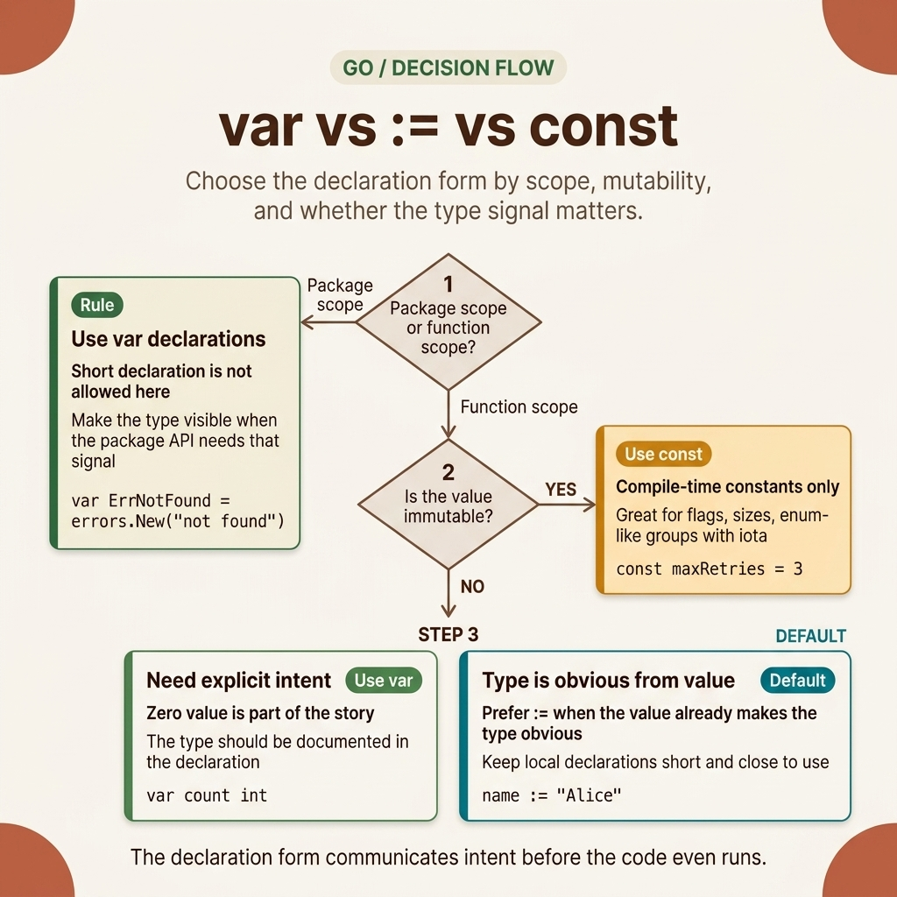
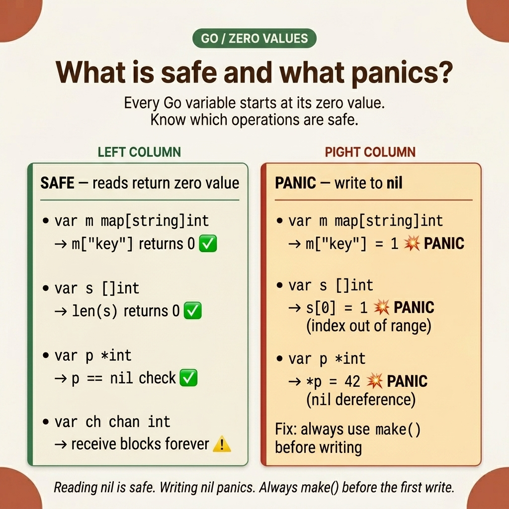
Cú pháp rõ ràng. Mối nguy hiểm thực sự là mã trông có vẻ đúng nhưng lại bị lỗi âm thầm tại runtime hoặc trong quá trình xem lại mã.
| # | Mức độ nghiêm trọng | Cạm bẫy | Hậu quả | Sửa chữa |
|---|---|---|---|---|
| 1 | 🔴 Gây tử vong | Viết cho nil map | Lỗi sập runtime (runtime panic) — chương trình gặp sự cố | Sử dụng make(map[K]V) trước khi viết |
| 2 | 🔴 Gây tử vong | defer bên trong một vòng lặp | Bộ mô tả tệp đã cạn kiệt → OOM | Đóng bên trong thân vòng lặp hoặc trích xuất một hàm |
| 3 | 🟡 Chung | := đổ bóng một biến trong phạm vi bên ngoài | Biến bên ngoài không thay đổi - lỗi im lặng | Sử dụng = để sửa đổi biến ngoài |
| 4 | 🟡 Chung | Sửa đổi biến vòng lặp range | Thay đổi bản sao, không phải bản gốc | Sử dụng slice[i] để sửa đổi tại chỗ |
| 5 | 🟡 Chung | Dựa vào thứ tự lặp map | Kiểm tra đôi khi thành công, ngẫu nhiên thất bại | Sắp xếp các khóa trước khi lặp |
| 6 | 🔵 Nhỏ | Các biến nhập hoặc biến không sử dụng | Lỗi biên dịch | Sử dụng _ hoặc xóa mã không sử dụng |
| 7 | 🔵 Nhỏ | fallthrough không cần thiết trong switch | Làm người đánh giá bối rối | Dựa vào tính năng tự động ngắt; chỉ sử dụng fallthrough khi được yêu cầu |
Bây giờ bạn đã biết cách khai báo biến, điều khiển luồng và quản lý tài nguyên bằng defer . Bước tiếp theo: khám phá sâu từng chủ đề.
---
Nền tảng cú pháp và các bẫy thông thường được đề cập. Các tài liệu tham khảo bên dưới đi sâu hơn vào các quyết định thiết kế của Go .
| Tài nguyên | Loại | Liên kết | Ghi chú |
|---|---|---|---|
| Go Chuyến tham quan | Chính thức | [go.dev/tour](https://go.dev/tour/) | Phần giới thiệu tương tác về cú pháp Go |
| Có hiệu lực Go | Chính thức | [go.dev/doc/effectivego](https://go.dev/doc/effectivego) | Quy ước thành ngữ và thực tiễn tốt nhất |
| Go Thông số | Chính thức | [go.dev/ref/spec](https://go.dev/ref/spec) | Đặc tả ngôn ngữ có thẩm quyền |
| Go Blog — Cú pháp khai báo | Blog | [go.dev/blog/declaration-Cú pháp khai báo](https://go.dev/blog/declaration-Cú pháp khai báo) | Tại sao các khai báo Go lại đọc từ trái sang phải |
---
| Mở rộng sang | Khi nào | Lý do | Tập tin |
|---|---|---|---|
| Kiểm soát luồng & vòng lặp | Sâu hơn for , switch , select | Số nguyên phạm vi ( Go 1.22+), dấu ngắt có nhãn, công tắc loại | [02-control-flow-loops.md](./02-control-flow-loops.md) |
| Các con trỏ & Bộ nhớ | Stack vs heap , escape analysis | Khi Go phân bổ trên heap so với stack — và tại sao nó quan trọng | [04-các con trỏ-memory.md](./04-các con trỏ-memory.md) |
| Defer , Panic , Recover | Mô hình dọn dẹp tài nguyên | Defer nắm bắt đối số, trả về được đặt tên, mẫu sản xuất | [03-defer-panic-recover.md](./03-defer-panic-recover.md) |
| Slices , Maps , Chuỗi | Kiểu dữ liệu phức tạp | Slice nội bộ, hành vi map , chuyển đổi chuỗi/[]byte | [../types/01-slices-maps-strings.md](../types/01-slices-maps-strings.md) |
---
Điều hướng: [← README](../README.md) · [→ Luồng điều khiển & Loops](./02-control-flow-loops.md)
Bạn chuyển từ Java sang Go và tiếp cận while . Trình biên dịch từ chối nó. Bạn viết một trường hợp switch và quên break . Mã hoạt động - vì Go tự động ngắt. Bạn thử forEach trên slice . Nó không tồn tại. for range thực hiện công việc. Go thu gọn 6–8 từ khóa luồng điều khiển điển hình được tìm thấy trong C/Java thành bốn: if , for , switch và select . Mỗi từ khóa hấp thụ nhiều vai trò. Kết quả: ít cú pháp để ghi nhớ hơn, ít cơ hội hơn cho các lỗi cổ điển như lỗi sai switch của C hoặc lỗi vô hạn ngẫu nhiên của Java while(true) .
1.1 Từ khóa luồng điều khiển
| Tuyên bố | Mục đích | Ví dụ |
|---|---|---|
if | Có điều kiện với tùy chọn init | if err := fn(); err != nil {} |
for | Từ khóa vòng lặp duy nhất | for i := 0; i < n; i++ {} |
switch | Đa nhánh có tính năng tự động ngắt | switch v.(Kiểu dữ liệu) {} |
select | bộ ghép kênh Kênh (channel) | select { case <-ch: } |
goto | Nhảy nhãn (hiếm) | Đường dẫn dọn dẹp lỗi |
defer | Cuộc gọi hoãn lại (LIFO stack ) | defer f.Close() |
while ? Rob Pike: "Nếu for có thể làm mọi thứ, tại sao lại thêm while ?" for condition {} là một vòng lặp while. for {} là một vòng lặp vô hạn. Một từ khóa. Không mơ hồ.1.2 Đối với các biến thể vòng lặp
| Biến thể | Cú pháp | Tương đương trong C/Java |
|---|---|---|
| Cổ điển | for i := 0; i < n; i++ {} | Kiểu C cho |
| Trong khi | for condition {} | vòng lặp while |
| Vô hạn | for {} | trong khi (đúng) |
| Phạm vi slice | for i, v := range slice {} | forEach |
| Phạm vi map | for k, v := range map {} | forEach khóa-giá trị |
| Chuỗi phạm vi | for i, r := range "utf8" {} | Lặp lại rune Unicode |
| Phạm vi kênh (channel) | for v := range ch {} | Nhận cho đến khi đóng |
| Số nguyên phạm vi | for i := range 5 {} | Go 1.22+ chỉ |
range string yield rune? Go chuỗi là chuỗi byte UTF-8. Một ký tự đơn như "世" chiếm 3 byte. range giải mã từng ký tự thành một chữ rune, trả về (byteIndex, rune) — xử lý Unicode chính xác mà không cần giải mã thủ công.1.3 Cơ chế chuyển mạch
| Tính năng | Mô tả |
|---|---|
| Tự động ngắt | Mỗi trường hợp tự động chấm dứt |
| Đa giá trị | case "a", "b", "c": khớp với any |
| Vô cảm | switch { case x > 0: } thay thế if-else |
| Công tắc loại | switch v := x.(Kiểu dữ liệu) { case int: } |
fallthrough | Chọn tham gia rõ ràng để thực hiện trường hợp tiếp theo |
break trong câu lệnh chuyển đổi C sẽ gây ra lỗi ngầm. Go đảo ngược mặc định: các trường hợp tự động bị hỏng. Chỉ sử dụng fallthrough khi bạn thực sự cần nó.1.4 Select Ghép kênh select chặn cho đến khi một trong các thao tác kênh (channel) của nó sẵn sàng:
| Mẫu | Cú pháp | Hành vi |
|---|---|---|
| Đa- kênh (channel) | select { case <-ch1: case <-ch2: } | Chặn cho đến khi sẵn sàng |
| Hết giờ | case <-time.After(1s): | Giới hạn thời gian chờ đợi |
| Không chặn | trường hợp default: | Tiến hành ngay lập tức |
| Hủy bỏ | case <-ctx.Done(): | Tôn trọng tín hiệu ngữ cảnh |
1.5 Chế độ lỗi
| Lỗi | Nguyên nhân | Sửa chữa |
|---|---|---|
| Vòng lặp vô hạn | Thiếu điều kiện thoát vòng lặp | Luôn có điều kiện giới hạn hoặc break |
time.After rò rỉ trong vòng lặp | Tạo bộ đếm thời gian mới mỗi lần lặp | Sử dụng time.NewTimer với .Stop() |
Lồng nhau break sai lửa | break thoát khỏi select , không phải bên ngoài for | Sử dụng dấu ngắt có nhãn: break outerLoop |
| Đột biến sao chép phạm vi | Sửa đổi bản sao, không phải bản gốc | Sử dụng chỉ mục: slice[i].field = val |
---
Các từ khóa và cơ chế của chúng rất rõ ràng. Nhưng làm thế nào để bạn chọn đúng khi phải đối mặt với quyết định phân nhánh cho time đầu tiên?
Mã nguồn & Các ví dụ minh họa
if .
Phương pháp tiếp cận: Kết hợp việc khởi tạo if với lần lặp for range .
Độ phức tạp: Cơ bản> Bài học rút ra: Câu lệnh init if giới hạn err trong khối có liên quan. for range xử lý các chỉ số và giá trị trong một dòng, thay thế các vòng đếm thủ công.package main
import (
"fmt"
"os"
)
func main() {
// err is scoped to this if block — it does not leak.
if f, err := os.Open("config.yaml"); err != nil {
fmt.Println("Cannot open:", err)
} else {
defer f.Close()
fmt.Println("Opened:", f.Name())
}
// Range returns (index, copy). Modifying the copy does not change the slice.
fruits := []string{"Apple", "Banana", "Cherry"}
for i, fruit := range fruits {
fmt.Printf("[%d] %s\n", i, fruit)
}
// Go 1.22+: range over integers
for i := range 5 {
fmt.Print(i, " ")
}
}switch đọc rõ ràng hơn chuỗi if-else khi so sánh các phạm vi. Công tắc loại trích xuất một cách an toàn các loại cụ thể từ các giá trị any / giao diện (interface){} mà không cần xác nhận thủ công.package main
import "fmt"
// Expressionless switch replaces if-else chains for range checks.
func classify(score int) string {
switch {
case score >= 90:
return "A — Excellent"
case score >= 80:
return "B — Good"
default:
return "F — Fail"
}
}
// Type switch extracts the concrete type from an interface.
func describe(val any) string {
switch v := val.(type) {
case int:
return fmt.Sprintf("integer: %d", v)
case string:
return fmt.Sprintf("string(%d chars): %q", len(v), v)
default:
return fmt.Sprintf("unknown type: %T", v)
}
}
func main() {
fmt.Println(classify(85)) // B — Good
fmt.Println(describe(42)) // integer: 42
}select để chạy đua kết quả kênh (channel) với time.After và ctx.Done() để tắt máy một cách nhẹ nhàng.
Độ phức tạp: Nâng cao> Takeaway: select biến các thao tác kênh (channel) thành điểm quyết định — bất kỳ kênh (channel) nào kích hoạt trước sẽ thắng. time.After cung cấp ranh giới thời gian chờ. ctx.Done() cho phép cha mẹ ra hiệu tắt máy mà không cần buộc phải tắt các goroutine .---
package main
import (
"context"
"fmt"
"time"
)
// select races the result against a timeout deadline.
func fetchWithTimeout(url string, timeout time.Duration) (string, error) {
result := make(chan string, 1)
go func() {
time.Sleep(100 * time.Millisecond) // simulate network call
result <- fmt.Sprintf("Response from %s", url)
}()
select {
case data := <-result:
return data, nil
case <-time.After(timeout):
return "", fmt.Errorf("timeout after %v", timeout)
}
}
// ctx.Done() exits the worker loop when the parent cancels.
func worker(ctx context.Context, tasks <-chan int) {
for {
select {
case <-ctx.Done():
fmt.Println("worker: context cancelled")
return
case task, ok := <-tasks:
if !ok {
return // channel closed
}
fmt.Println("processing:", task)
}
}
}
func main() {
data, err := fetchWithTimeout("api.example.com", 300*time.Millisecond)
if err != nil {
fmt.Println(err)
} else {
fmt.Println(data)
}
}Sơ đồ trực quan & Luồng hoạt động (Visual Support)
Quyết định map trả lời "từ khóa nào?" Các ví dụ bên dưới cho thấy cách mỗi từ khóa hoạt động trong mã sản xuất. Hình: Bốn dạng đặc trưng của vòng lặp Go 's for — cổ điển, while, vô hạn và phạm vi — mỗi dạng được chọn theo những gì bạn cần kiểm soát. Một từ khóa thay thế for , while , do-while và forEach .
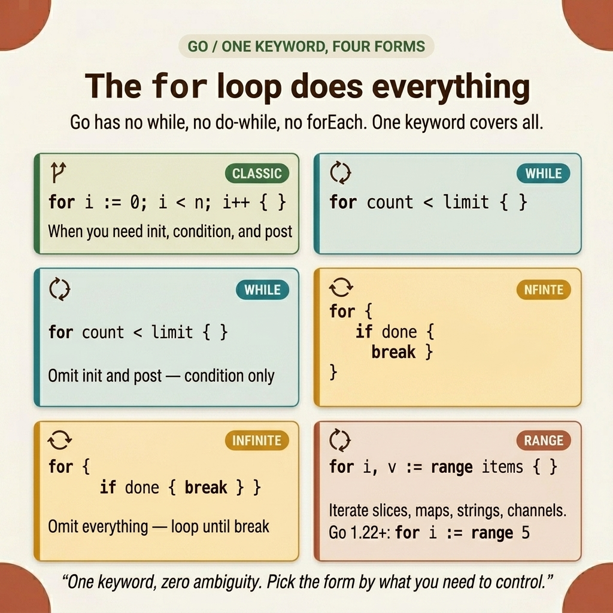
| # | Mức độ nghiêm trọng | Cạm bẫy | Hậu quả | Sửa chữa |
|---|---|---|---|---|
| 1 | 🔴 Gây tử vong | time.After bên trong một vòng lặp chặt chẽ | Tạo bộ đếm thời gian mới mỗi lần lặp → rò rỉ bộ nhớ | Sử dụng time.NewTimer và gọi .Stop() sau khi sử dụng |
| 2 | 🔴 Gây tử vong | break bên trong select trong vòng lặp for | Phá vỡ select , không phải vòng lặp bên ngoài | Sử dụng dấu ngắt có nhãn: break outerLoop |
| 3 | 🟡 Chung | Sửa đổi biến vòng lặp for range | Thay đổi bản sao chứ không phải phần tử gốc | Sử dụng quyền truy cập chỉ mục: slice[i].field = val |
| 4 | 🟡 Chung | Dựa vào thứ tự lặp map | Thứ tự được sắp xếp ngẫu nhiên — các bài kiểm tra trở nên không ổn định | Sắp xếp các khóa trước khi lặp |
| 5 | 🔵 Nhỏ | Sử dụng fallthrough trong switch | Gây nhầm lẫn cho người đánh giá; hiếm khi có sự lựa chọn đúng đắn | Để lại tự động ngắt; chỉ sử dụng fallthrough khi không thể tránh khỏi |
---
| Tài nguyên | Loại | Liên kết | Lưu ý |
|---|---|---|---|
| Go Spec — Tuyên bố | Chính thức | [go.dev/ref/spec#Statements](https://go.dev/ref/spec#Statements) | Thông số ngôn ngữ có thẩm quyền |
| Go Tour — Kiểm soát luồng | Chính thức | [go.dev/tour/flowcontrol/1](https://go.dev/tour/flowcontrol/1) | Hướng dẫn tương tác |
| Hiệu quả Go — Kiểm soát | Chính thức | [go.dev/doc/effectivego#control-structures](https://go.dev/doc/effectivego#control-structures) | Mẫu thành ngữ |
---
Luồng điều khiển cho chương trình biết phải làm gì. Câu hỏi tiếp theo: điều gì xảy ra khi có sự cố xảy ra - các tập tin vẫn mở, hoạt động sản xuất bị gián đoạn, tài nguyên bị rò rỉ?
| Mở rộng sang | Khi nào | Lý do | Tập tin |
|---|---|---|---|
| Defer , Panic , Recover | Dọn dẹp tài nguyên trên các đường dẫn trở lại | defer đảm bảo dọn dẹp; recover bắt hoảng loạn | [03-defer-panic-recover.md](./03-defer-panic-recover.md) |
| Các con trỏ & Bộ nhớ | Hiểu từng giá trị so với con trỏ | Go chuyển các bản sao theo mặc định; các con trỏ sửa đổi bản gốc | [04-các con trỏ-memory.md](./04-các con trỏ-memory.md) |
| Cú pháp & Biến | Xem lại khai báo var so với := | Cú pháp cơ bản mà bài viết này xây dựng trên | [01-Cú pháp khai báo-các biến.md](./01-Cú pháp khai báo-các biến.md) |
| Các goroutine & Các kênh (channel) | Đưa select đi sâu hơn vào đồng thời (concurrency) | select là cổng vào các mẫu Go đồng thời (concurrency) | [../../đồng thời (concurrency)/01-các goroutine-and-các kênh (channel).md](../../đồng thời (concurrency)/01-các goroutine-and-các kênh (channel).md) |
---
Điều hướng: [← Cú pháp khai báo & Các biến](./01-Cú pháp khai báo-các biến.md) · [→ Defer, Panic, Recover](./03-defer-panic-recover.md)
1.1 Cơ chế Defer — Runtime là gì
Khi Go runtime gặp defer , nó:
1. Đánh giá tất cả các đối số ngay lập tức — nắm bắt các giá trị của chúng tại thời điểm chính xác đó. 2. Đẩy bản ghi defer vào defer stack của goroutine hiện tại. 3. Trì hoãn thực thi cho đến khi hàm kèm theo kết thúc.
1.2 Ghi lại đối số — Quy tắc chi tiết Go áp dụng hai cơ chế cốt lõi để ghi lại các đối số:
| Cơ chế | Ví dụ | Khi nào cần đánh giá |
|---|---|---|
| Lập luận trực tiếp | defer f(x) | Ngay sau khi thực hiện |
| Closure | defer func() { use(x) }() | Khi defer chạy |
| Con trỏ receiver | defer obj.Phương thức() ( con trỏ ) | Khi defer chạy (thông qua con trỏ ) |
| Giá trị receiver | defer obj.Phương thức() (giá trị) | Ngay sau khi thực hiện (bản sao) |
1.3 Tương tác trả về được đặt tên — Cơ học sâu
Các biến trả về được đặt tên nằm trong khung stack của hàm kèm theo. closure bị trì hoãn có thể đọc và sửa đổi chúng trước khi hàm thực sự trả về.``go
func queryDB(id int) (user User, err Lỗi biên dịch / Runtime) {
defer func() {
if err != nil {
err = fmt.Errorf("queryDB(id=%d): %w", id, err)
}
}()
// ...if the query fails, err will automatically be richly wrapped
}
`### 1.4 measureTime("name")() — Giải phẫu mẫu
Mẫu defer f()() là một lệnh gọi kép: lệnh gọi bên ngoài chạy ngay lập tức để thiết lập, hàm trả về chạy ở defer time .`go
// ✅ CORRECT: start time captured at the defer line, cleanup runs on return
defer measureTime("fn")()
`### 1.5 Panic Lưu lượng`
panic("msg")
↓
① Current function stops executing immediately
↓
② All deferred functions in phạm vi áp dụng run in LIFO order
↓
③ If any defer calls recover() → panic stops, function returns with named return values
↓
④ If no recover → panic propagates up the call stack, crashing the goroutine
``
Mã nguồn & Các ví dụ minh họa
defer resp.Body.Close() ngay sau http.Get() thành công. Thiếu nó làm rò rỉ bộ mô tả tập tin một cách âm thầm.package main
import (
"database/sql"
"fmt"
"io"
"net/http"
"os"
"sync"
)
// ✅ File cleanup — defer right after Open
func copyFile(src, dst string) (int64, error) {
source, err := os.Open(src)
if err != nil {
return 0, fmt.Errorf("open source: %w", err)
}
defer source.Close()
dest, err := os.Create(dst)
if err != nil {
return 0, fmt.Errorf("create dest: %w", err)
}
defer dest.Close()
n, err := io.Copy(dest, source)
dest.Sync()
return n, err
}
func fetchURL(url string) ([]byte, error) {
resp, err := http.Get(url)
if err != nil {
return nil, err
}
defer resp.Body.Close()
return io.ReadAll(resp.Body)
}package main
import (
"fmt"
"os"
)
// GOTCHA 1: Arguments evaluated immediately
func deferArgsTrap() {
x := 10
defer fmt.Println("defer with arg:", x) // ✅ x=10 captured NOW
x = 20
}
// GOTCHA 3: Defer within loops causes Resource Leaks
func deferInLoopBAD(files []string) {
for _, path := range files {
f, _ := os.Open(path)
defer f.Close() // ❌ BAD! Defer closure hits exclusively AFTER the function returns
}
}package main
import (
"log"
"net/http"
"runtime/debug"
)
func recoveryMiddleware(next http.Handler) http.Handler {
return http.HandlerFunc(func(w http.ResponseWriter, r *http.Request) {
defer func() {
if err := recover(); err != nil {
stack := debug.Stack()
log.Printf("PANIC recovered: %v\nStack:\n%s", err, stack)
w.WriteHeader(http.StatusInternalServerError)
w.Write([]byte(`{"error":"internal server error"}`))
}
}()
next.ServeHTTP(w, r)
})
}
// ✅ Safe abstract goroutine wrapper
func safeGo(fn func()) {
go func() {
defer func() {
if r := recover(); r != nil {
log.Printf("Goroutine isolated panic: %v", r)
}
}()
fn()
}()
}package main
import (
"errors"
"log"
)
type CleanupFunc func() error
type ResourceManager struct {
cleanups []CleanupFunc
}
func (rm *ResourceManager) Add(name string, fn CleanupFunc) {
rm.cleanups = append(rm.cleanups, func() error {
log.Printf("Cleaning: %s", name)
return fn()
})
}
func (rm *ResourceManager) CleanupAll() error {
var errs []error
for i := len(rm.cleanups) - 1; i >= 0; i-- {
if err := rm.cleanups[i](); err != nil {
errs = append(errs, err)
}
}
return errors.Join(errs...)
}Sơ đồ trực quan & Luồng hoạt động (Visual Support)
Các nhà phát triển thường bị nhầm lẫn nhất khi ba luồng khác nhau tương tác với nhau: thực thi defer bình thường, giải nén panic và bắt [[E6]]]. Hình: dấu vết trạng thái Runtime — đăng ký defer , panic thư giãn và ranh giới duy nhất nơi recover bắt được panic . Hình: So sánh song song giữa việc chụp đối số defer (theo giá trị — chính xác) so với việc chụp closure (theo tham chiếu — lỗi). Đối số đóng băng tại defer time ; closures đọc biến khi thực thi time .
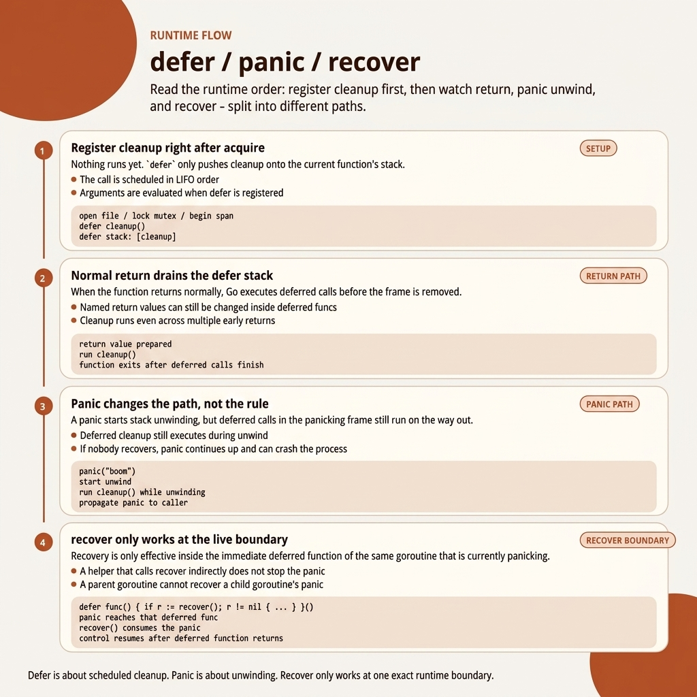
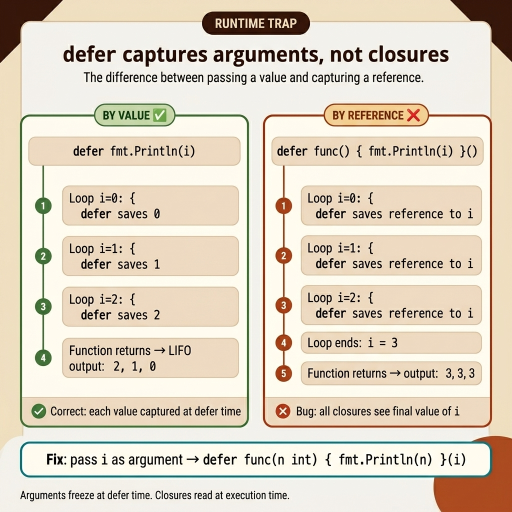
| # | Mức độ nghiêm trọng | Lỗi | Sửa chữa |
|---|---|---|---|
| 1 | 🔴 Gây tử vong | Defer bên trong một vòng lặp = rò rỉ tài nguyên | Trích xuất thành một hàm hoặc đóng rõ ràng |
| 2 | 🔴 Gây tử vong | Panic vượt qua ranh giới goroutine | Sử dụng trình bao bọc safeGo() với recover |
| 3 | 🟡 Chung | defer f(x) — x được đánh giá ngay lập tức | Sử dụng closure để nắm bắt các bản cập nhật một cách có chủ đích |
| Tài nguyên | Liên kết |
|---|---|
| Go Blog: Defer | https://go.dev/blog/ defer - panic -and- recover |
| Go Thông số | https://go.dev/ref/spec#Defer_statements |
---
Điều hướng: [← Cú pháp khai báo & Các biến](./01-Cú pháp khai báo-các biến.md) · [→ Các con trỏ & Memory](./04-các con trỏ-memory.md)
Hãy tưởng tượng bạn nhận được một sự hồi quy sau những gì có vẻ như là một sự tối ưu hóa vô hại. Trình xử lý cũ trả về User theo giá trị. Một bộ tái cấu trúc đã thay đổi nó thành *User để "giảm bản sao". Những người trợ giúp khác đã được đổi thành new(T) . benchmarks nhỏ không có vấn đề gì. Nhưng dưới lưu lượng truy cập thực tế, allocs/op tăng vọt, cấu hình heap tăng lên và GC làm chậm đường đi nóng.
Nếu bạn đã từng ở trong tình huống đó, bạn biết vấn đề không phải là " con trỏ có tốt hơn một giá trị hay không". Vấn đề là sử dụng một mô hình tinh thần đơn giản trong đó trình biên dịch, runtime , stack tăng trưởng, heap phân bổ và escape analysis đều can thiệp. Bài viết này thay thế mô hình tinh thần đó bằng một mô hình chính xác để xem xét mã, benchmarks và gỡ lỗi.
Giá trị 1.1 so với ngữ nghĩa Con trỏ Trong Go , câu hỏi đầu tiên không phải là " stack hay heap ", mà là "chúng ta đang chuyển một giá trị hay đang chuyển quyền truy cập vào một đối tượng được chia sẻ".
| Cơ chế | Đã qua cái gì | Hậu quả cốt lõi |
|---|---|---|
func f(x T) | Bản sao của T | Hàm nhận một giá trị riêng; những thay đổi không ảnh hưởng đến người gọi |
func f(x *T) | Địa chỉ tới T | Hàm có thể thay đổi dữ liệu gốc nhưng phải đối mặt với nil và trạng thái chia sẻ |
| Phương thức value receiver | Một bản sao của receiver | An toàn cho các loại nhỏ và trạng thái bất biến |
| Phương thức con trỏ receiver | Địa chỉ của receiver | Sử dụng khi cần thay đổi hoặc tránh sao chép lớn structs |
A con trỏ chỉ giải quyết được hai điều:
- Tránh sao chép một giá trị lớn hoặc nhạy cảm với đột biến
- Cho phép nhiều đoạn code nhìn thấy cùng một đối tượng
A con trỏ không tự động có nghĩa là:
- Đối tượng chắc chắn nằm trên heap - Mã chắc chắn là nhanh hơn
- Phần GC sẽ có phần khó hơn hoặc dễ hơn time ### 1.2 Ý nghĩa thực sự của Stack so với Heap Trong Go
stackvàheapkhông phải là từ khóa. Chúng là hai không gian bộ nhớ khác nhau mà runtime và trình biên dịch select cho dữ liệu của bạn.
| Bất động sản | Stack | Heap |
|---|---|---|
| Phân bổ | Được gắn với khung stack hoặc bộ lưu trữ sao lưu trình biên dịch nội bộ | Được quản lý bởi runtime |
| Trọn đời | Kết thúc khi frame không còn cần dữ liệu | Được mở rộng cho đến khi không thể truy cập được đối tượng |
| Chi phí | Cực kỳ rẻ nếu trình biên dịch có tuổi thọ ngắn | Đắt hơn do có sự tham gia của người cấp phát và GC |
| Quyền sở hữu | Nằm gần với luồng thực thi hiện tại | Có thể tồn tại lâu hơn phạm vi của chức năng hiện tại |
| GC | Không cần đánh dấu/quét đối với khung stack | Garbage Collector có liên quan |
Điểm quan trọng nhất: trong Go , bạn không viết cú pháp để chọn stack hoặc heap . Bạn viết mã. Trình biên dịch phân tích nó. Nếu trình biên dịch chứng minh rằng đối tượng không cần phải tồn tại lâu hơn phạm vi hiện tại thì nó có thể giữ đối tượng đó trên stack hoặc trong các thanh ghi. Nếu không chứng minh được điều này thì đối tượng phải đi đến heap .
1.3 Đường dẫn phân bổ: var , new , make , Chữ tổng hợp
Đây là nơi nhiều người học Go bị lừa bởi cú pháp.
| Cú pháp | Nó làm gì | Những gì nó không đảm bảo |
|---|---|---|
var x T | Tạo giá trị 0 của T | Không đảm bảo x nằm trên stack hoặc heap |
x := T{...} | Tạo một giá trị T | Không đảm bảo giá trị sẽ không thoát |
new(T) | Trả về *T trỏ đến giá trị 0 | Không có nghĩa là "luôn luôn heap " |
make([]T, ...) | Tạo tiêu đề slice / map / kênh (channel) runtime | Không có nghĩa là bộ lưu trữ dự phòng chắc chắn nằm trên stack |
&T{...} | Trả về con trỏ thành một chữ tổng hợp | Không tự động có nghĩa là "xấu" hoặc " heap -heavy" |
Những điểm cần lưu ý:
new(T)cung cấp cho bạn con trỏ ngữ nghĩamaketạo runtime -các cấu trúc được quản lý như slices , maps và các kênh (channel) - Vị trí dữ liệu thực tế cuối cùng là một vấn đề escape analysis và runtime Nếu bạn chỉ ghi nhớnew = heap, bạn sẽ đọc sai kết quả đầu ra của trình biên dịch ngay từ đầu.
1.4 Escape Analysis : Quyết định ẩn giấu
Phân tích thoát là giai đoạn mà trình biên dịch đặt câu hỏi trực tiếp:
Nếu câu trả lời là "không", trình biên dịch có thể giữ nó trên stack . Nếu câu trả lời là "có" hoặc "Tôi không thể chứng minh là không", trình biên dịch phải đặt đối tượng vào heap .
Các tín hiệu phổ biến khiến vật thể trốn thoát:
- Trả về con trỏ cho dữ liệu cục bộ
- Truyền một giá trị vào giao diện (interface) trong đó trình biên dịch không thể giữ nó thuần túy cục bộ
- Chụp một biến cục bộ trong closure có thể tồn tại lâu hơn khung chính
- Chuyển một tham chiếu tới một goroutine khác
- Tạo một đối tượng quá lớn hoặc có hình dạng ngăn cản trình biên dịch giữ nó trên stack Hai sự thật phải được phân biệt rõ ràng:
1. Sử dụng con trỏ không đủ để kết luận một đối tượng nằm trên heap 2. Không sử dụng con trỏ không đảm bảo đối tượng nằm trên stack ### 1.5 Các kiểu bất biến và lỗi
Đây là lớp chuyên gia của chủ đề này: những sự thật luôn đúng cho dù bạn có thích hay không.
new(T)trả về a*T, nhưng vị trí vẫn do trình biên dịch quyết định.return &xhợp lệ trong Go vì trình biên dịch có thể chuyểnxsang heap khi cần.- Tiêu đề slice có thể cục bộ, nhưng phần hỗ trợ array của nó mới là điều bạn thực sự quan tâm khi thảo luận về phân bổ.
[]Tvs[]*Tkhông chỉ là sự lựa chọn về phong cách. Chúng thay đổi vị trí bộ đệm, chi phí quét GC và mô hình đột biến.- Benchmarks đừng kể toàn bộ câu chuyện nếu bạn không xem kỹ hồ sơ
allocs/op,B/op, và heap .
Lý thuyết cho đến thời điểm này đã đủ để ngừng nhầm lẫn tên với cơ chế. Nhưng nếu bạn không hình dung được vòng đời của đối tượng, bạn vẫn sẽ đoán sai về nơi việc phân bổ thực sự xảy ra.
---
Các chế độ lỗi ở trên đáng để đọc lại trước khi gỡ lỗi phân bổ tiếp theo session . Bẫy phổ biến nhất: nhìn thấy new(T) và kết luận " heap ", hoặc chuyển từ []T sang []*T mà không kiểm tra địa phương và [[E71]]] chi phí quét.
Mã nguồn & Các ví dụ minh họa
markShippedByValue(order) không sửa đổi thứ tự ban đầu; markShippedByPointer(&order) thì có.
Độ phức tạp: O(1) time , O(1) không gian.> Bài học rút ra: Ở cấp độ cơ bản, con trỏ chủ yếu là một sự lựa chọn về mặt ngữ nghĩa: bạn muốn biến đổi đối tượng gốc hoặc làm việc với một bản sao.
Caveat: Không có gì trong ví dụ này đủ để kết luận liệu đối tượng có nằm trên stack hay heap . Con trỏ ngữ nghĩa và vị trí phân bổ là hai câu hỏi khác nhau.
Khi nào nên sử dụng: Khi bạn đang xem lại mã và cần phân biệt giữa lỗi ngữ nghĩa sao chép và lỗi phân bổ/lỗi trọn đời.package main
import "fmt"
type Order struct {
ID int64
Status string
Amount int64
Currency string
}
func markShippedByValue(o Order) {
// o is a copy of the caller's value.
o.Status = "shipped"
}
func markShippedByPointer(o *Order) {
if o == nil {
return
}
// o points to the exact object the caller holds.
o.Status = "shipped"
}
func main() {
order := Order{
ID: 42,
Status: "pending",
Amount: 150_000,
Currency: "VND",
}
markShippedByValue(order)
fmt.Println("after value call:", order.Status) // pending
markShippedByPointer(&order)
fmt.Println("after pointer call:", order.Status) // shipped
}-gcflags="-m -m" dọc theo mã.
Ví dụ: buildValue() trả về một giá trị, buildPointer() trả về con trỏ , captureInClosure() giữ một biến cục bộ tồn tại thông qua closure .
Độ phức tạp: O(1) time , O(1) dung lượng mỗi cuộc gọi; phần quan trọng là hành vi phân bổ.``bash
go build -gcflags="-m -m" main.go
`
`text
# illustrative output, exact wording varies by Go version
./main.go:14:6: can inline buildValue
./main.go:20:2: u escapes to heap
./main.go:24:10: new(User) escapes to heap
./main.go:31:2: label escapes to heap
`> Tại sao new(User)` không phải luôn là "cú pháp heap "?
new(User) chỉ có nghĩa là bạn muốn một *User . Vị trí Heap hoặc stack vẫn phụ thuộc vào việc con trỏ đó có cần tồn tại lâu hơn phạm vi hiện tại hay không. Trong ví dụ này, buildWithNew() trả về a con trỏ , do đó đối tượng phải tồn tại sau khi hàm kết thúc; do đó, trình biên dịch đặt nó trên heap . Nhưng trong một đường dẫn khác, nếu con trỏ chỉ được sử dụng nội bộ và không thoát, trình biên dịch có thể giữ đối tượng cục bộ.
Tại sao closures thường khiến mọi người hiểu sai về phân bổ?
Nhìn bề ngoài, nó chỉ là một biến chuỗi label nhỏ. Nhưng closure tách thời gian tồn tại của label khỏi khung stack hiện tại. Khi closure có thể tồn tại lâu hơn hàm gốc của nó, trình biên dịch phải chọn đường dẫn an toàn.
-gcflags="-m -m" và ánh xạ các thông báo của trình biên dịch tới đúng vấn đề tồn tại trong mã nguồn của bạn.package main
import "fmt"
type User struct {
ID int64
Name string
}
func buildValue() User {
u := User{ID: 1, Name: "Lan"}
return u
}
func buildPointer() *User {
u := User{ID: 2, Name: "Minh"}
return &u
}
func buildWithNew() *User {
u := new(User)
u.ID = 3
u.Name = "Anh"
return u
}
func captureInClosure() func() string {
label := "request-hot-path"
return func() string {
return label
}
}
func main() {
fmt.Println(buildValue())
fmt.Println(buildPointer())
fmt.Println(buildWithNew())
next := captureInClosure()
fmt.Println(next())
}return &x mà còn đến từ việc chọn []T so với []*T , phân bổ trước so với không phân bổ và buộc runtime liên tục tăng dung lượng lưu trữ hỗ trợ.
Phương pháp tiếp cận: So sánh hai đường dẫn dữ liệu thực hiện cùng một công việc: tích lũy người dùng và trả về kết quả. Một đường dẫn liên tục tạo các con trỏ và nối thêm mà không cần phân bổ trước; cái còn lại giữ []User liền kề và phân bổ dung lượng trả trước chính xác.
Ví dụ: buildPointerSlice vs buildValueSlice .
Độ phức tạp: O(n) time ; hành vi phân bổ là khác nhau rõ ràng.``bash
go test -bench=. -benchmem
`> Tại sao []*User` không phải lúc nào cũng tệ mà thường đắt hơn bạn nghĩ?
[]*User rất hữu ích khi mọi đối tượng đều yêu cầu danh tính riêng, đột biến chung hoặc quá lớn để sao chép giá trị có hiệu quả. Nhưng sự đánh đổi là có nhiều đối tượng hơn trên heap , vị trí bộ nhớ kém hơn và yêu cầu GC quét thêm nhiều các con trỏ . Để xử lý dữ liệu hàng loạt hoặc các đường dẫn đọc nhiều, []User thường cung cấp bố cục bộ nhớ nhỏ gọn và thân thiện với bộ nhớ đệm.
Tại sao việc phân bổ trước lại quan trọng hơn nhiều người nhận ra?
Nếu bạn đã biết n , việc sử dụng make([]User, 0, n) không chỉ làm giảm việc tái phân bổ. Nó cũng làm giảm số lần phần sao lưu array phải phát triển và sao chép dữ liệu cơ bản của nó. Trong một đường dẫn nóng, kiểu tối ưu hóa đơn giản này bền vững hơn nhiều so với việc thử các thủ thuật với unsafe package .
return &x duy nhất.
Hãy cẩn thận: Không tái cấu trúc một cách máy móc tất cả []*T thành []T . Nếu đối tượng cơ bản bắt buộc phải chia sẻ đột biến hoặc chứa lượng dữ liệu khổng lồ thì sự cân bằng về hiệu suất sẽ hoàn toàn khác.
Khi nào nên sử dụng: Khi điều tra allocs/op cao bên trong các đường dẫn xử lý hàng loạt, lớp tuần tự hóa hoặc mã tổng hợp dữ liệu.package main
import "fmt"
type User struct {
ID int64
Name string
}
func buildPointerSlice(n int) []*User {
var users []*User
for i := 0; i < n; i++ {
u := &User{
ID: int64(i),
Name: fmt.Sprintf("user-%d", i),
}
users = append(users, u)
}
return users
}
func buildValueSlice(n int) []User {
users := make([]User, 0, n)
for i := 0; i < n; i++ {
users = append(users, User{
ID: int64(i),
Name: fmt.Sprintf("user-%d", i),
})
}
return users
}
func main() {
fmt.Println(len(buildPointerSlice(4)))
fmt.Println(len(buildValueSlice(4)))
}allocs/op .
Cách tiếp cận: Sử dụng bytes.Buffer theo đường dẫn nóng, nhưng không tạo liên tục các cái mới; tích hợp sync.Pool cùng với benchmarks để xác định các khu vực thực sự có thể tối ưu hóa.
Ví dụ: Hiển thị tải trọng liên tục bằng cách sử dụng strings.Builder / bytes.Buffer , được đo bằng testing.B .
Độ phức tạp: O(n) time mỗi lần kết xuất; giá trị thực sự nằm ở việc cắt giảm số lượng phân bổ và giảm bớt áp lực GC .``bash
go test -bench=RenderWithPool -benchmem
`> Tại sao sync.Pool` là tối ưu hóa có điều kiện chứ không phải phép thuật?
sync.Pool chỉ hữu ích khi bạn liên tục tạo ra các đối tượng tạm thời có thời gian tồn tại rất ngắn và có thể xác minh là an toàn để sử dụng lại. Nó không thể thay thế logic nghiệp vụ solid , không thể khắc phục bố cục dữ liệu kém và không đóng vai trò là bộ nhớ đệm liên tục. GC có thể quét toàn bộ hồ bơi theo ý mình. Nếu bạn không thể chứng minh rõ ràng rằng một đối tượng nằm trực tiếp trên đường dẫn nóng gây ra áp lực phân bổ có thể kiểm chứng được thì việc giới thiệu sync.Pool chỉ khiến mã khó đọc hơn.
Tại sao benchmark phải bao gồm phần tường thuật về việc phân bổ?
Nếu chỉ nhìn vào ns/op , bạn dễ dàng bỏ lỡ thực tế là heap đang tăng giá nhanh chóng hoặc GC đang trả một khoản thuế nặng nề cho bạn vì khối lượng công việc được duy trì liên tục. Các số liệu allocs/op và B/op là nơi mô hình tinh thần trở thành bằng chứng thực nghiệm.
sync.Pool một cách mù quáng ở khắp mọi nơi.
Cẩn thận: Nếu tải trọng nhỏ, thông lượng tối thiểu hoặc đường dẫn thực thi không "nóng", mã đơn giản hầu như luôn có giá trị hơn việc tiết kiệm một vài phân bổ nhỏ.
Khi nào nên sử dụng: Khi bạn có bằng chứng chắc chắn thông qua benchmarks hoặc hồ sơ chứng minh rằng áp lực phân bổ đang thực sự góp phần lớn vào độ trễ của hệ thống hoặc tình trạng xáo trộn bộ nhớ.Hiểu được con đường đúng đắn vẫn chưa đủ, bởi vì miền này rất dễ bị nói những sự thật cá nhân nhưng lại đưa ra những quyết định sai lầm trên toàn cầu. Phần cạm bẫy nêu rõ điều này cụ thể xảy ra ở đâu.
package main
import (
"bytes"
"fmt"
"sync"
"testing"
)
var payloadPool = sync.Pool{
New: func() any {
return new(bytes.Buffer)
},
}
func renderWithPool(id int64, status string) string {
buf := payloadPool.Get().(*bytes.Buffer)
buf.Reset()
defer payloadPool.Put(buf)
// Buffer is reused across multiple calls instead of allocating fresh per request.
fmt.Fprintf(buf, `{"id":%d,"status":"%s"}`, id, status)
// String() generates its own distinct string result, so returning the buffer to the pool is entirely safe here.
return buf.String()
}
func BenchmarkRenderWithPool(b *testing.B) {
b.ReportAllocs()
for i := 0; i < b.N; i++ {
_ = renderWithPool(int64(i), "ok")
}
}
func main() {
_ = renderWithPool(1, "ok")
}Sơ đồ trực quan & Luồng hoạt động (Visual Support)
Các bảng và các bất biến mô tả những gì tồn tại — nhưng thời gian tồn tại không xuất hiện rõ ràng. Bạn chỉ thấy hậu quả thông qua số lượng phân bổ, cấu hình heap hoặc áp lực GC . Đây là lý do tại sao phần trực quan phải nhắm trực tiếp vào mô hình tinh thần chứ không chỉ vẽ sơ đồ con trỏ đẹp. Hình: Thẻ mô hình trí tuệ phân tách bốn khía cạnh khó hiểu nhất của hành vi bộ nhớ Go : đường dẫn giá trị cục bộ, huyền thoại con trỏ , đường dẫn thoát chung và quy tắc đo lường thay vì đoán.
Khi bốn ý tưởng này được đặt đúng vị trí, đoạn mã bên dưới sẽ trở nên có giá trị: bạn sẽ đọc các ví dụ bằng cách hỏi trình biên dịch nhìn thấy thời gian tồn tại bao lâu? thay vì đoán điều này có trên heap hay stack ?. Hình: Cây quyết định escape analysis của trình biên dịch - bốn câu hỏi xác định vị trí stack so với heap . Xác minh bằng go build -gcflags='-m' thay vì đoán.
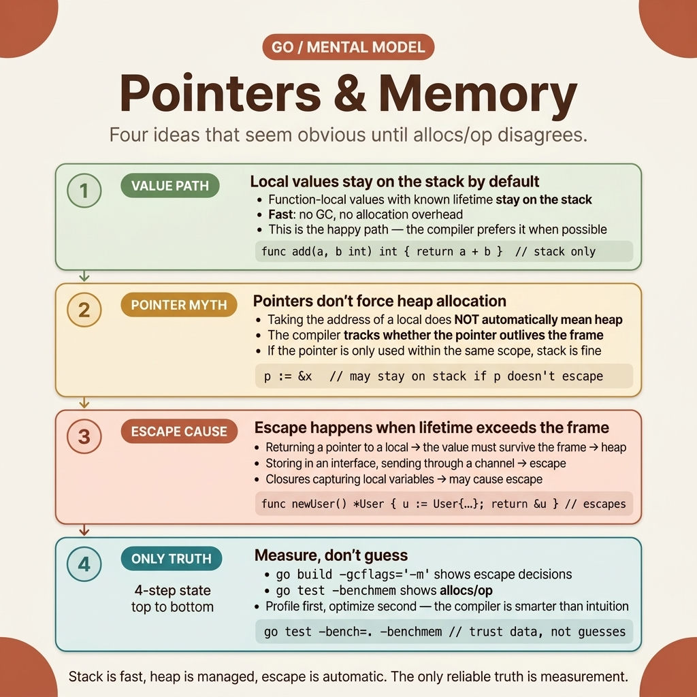
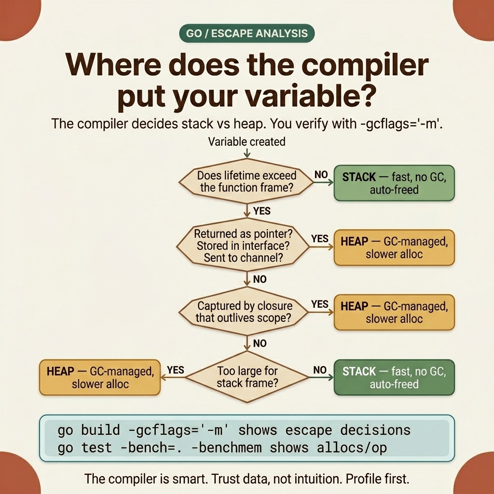
Lý thuyết là rõ ràng. Điều còn lại là tránh những kết luận nghe có vẻ đúng nhưng lại dẫn đến tối ưu hóa sai lầm trong quá trình đánh giá và sản xuất mã.
| # | Mức độ nghiêm trọng | Lỗi | Hậu quả | Sửa chữa |
|---|---|---|---|---|
| 1 | 🔴 Gây tử vong | Giả sử new(T) luôn phân bổ trên heap | Đọc sai đầu ra của trình biên dịch, tối ưu hóa các điểm sai | Kiểm tra tuổi thọ; chạy -gcflags="-m -m" trên đường dẫn thực |
| 2 | 🔴 Gây tử vong | Sử dụng T ở mọi nơi vì " các con trỏ nhanh hơn" | Lỗi đột biến chung, địa phương kém, chi phí quét GC cao hơn | Sử dụng các con trỏ cho nhu cầu ngữ nghĩa hoặc chi phí được đo lường, không phải thói quen |
| 3 | 🔴 Gây tử vong | Trả lại đối tượng về sync.Pool mà không cần đặt lại trạng thái | Rò rỉ dữ liệu giữa các yêu cầu, lỗi không thể tái tạo | Gọi Reset() hoặc 0 đối tượng trước Put() |
| 4 | 🟡 Chung | Chuyển từ []T sang []T sớm | Nhiều đối tượng heap hơn, vị trí bộ đệm kém hơn | Giữ []T cho các đường dẫn theo đợt/đọc nhiều trừ khi cần nhận dạng chung |
| 5 | 🟡 Chung | Chỉ đo điểm chuẩn ns/op , bỏ qua allocs/op và B/op | Nhanh benchmarks , nhưng sản xuất là GC -bound | Luôn báo cáo số liệu phân bổ cùng với độ trễ |
| 6 | 🟡 Chung | Viết lại kiến trúc sau một dòng đầu ra escape analysis | Kỹ thuật quá mức mà không khắc phục được nút thắt cổ chai thực sự | Kiểm tra chéo đầu ra của trình biên dịch với cấu hình benchmarks và heap |
| 7 | 🔵 Nhỏ | Khó hiểu " stack / heap " với bộ nhớ "an toàn/không an toàn" | Trừu tượng sai trong đánh giá mã | Tách ba câu hỏi: ngữ nghĩa, tuổi thọ, đo lường |
Khi bạn nhìn thấy những cái bẫy này, bước tiếp theo đúng đắn không phải là tìm kiếm mọi phân bổ. Thay vào đó: đọc bằng chứng ở lớp bên phải (trình biên dịch, benchmark , hồ sơ) và chỉ sau đó đưa ra kết luận.
---
| Tài nguyên | Loại | Liên kết | Ghi chú |
|---|---|---|---|
| Go Thông số | Chính thức | [go.dev/ref/spec](https://go.dev/ref/spec) | Nguồn chính xác cho giá trị, con trỏ và ngữ nghĩa tổng hợp theo nghĩa đen |
| Có hiệu lực Go | Chính thức | [go.dev/doc/effectivego](https://go.dev/doc/effectivego) | Thành ngữ thực tế để chọn giá trị so với các con trỏ |
| GC Hướng dẫn | Chính thức | [tip.golang.org/doc/gc-guide](https://tip.golang.org/doc/gc-guide) | GC chi phí và điều chỉnh bộ nhớ |
sync.Pool tài liệu | Chính thức | [pkg.go.dev/sync#Pool](https://pkg.go.dev/sync#Pool) | Yêu cầu và cảnh báo đối với nhóm đối tượng |
unsafe tài liệu | Chính thức | [pkg.go.dev/unsafe](https://pkg.go.dev/unsafe) | quy tắc unsafe.Con trỏ và quy định bù trừ struct |
| Lập hồ sơ chương trình Go | Chính thức | [go.dev/blog/profiling-go-programs](https://go.dev/blog/profiling-go-programs) | Kết nối các câu hỏi phân bổ với bằng chứng hồ sơ cụ thể |
| Gia hạn | Khi nào nên đọc tiếp | Lý do | Tập tin |
|---|---|---|---|
| Defer , Panic , Recover | Trộn tuổi thọ của đối tượng với thời gian dọn dẹp | Tách biệt vòng đời của đối tượng khỏi việc dọn dẹp tài nguyên | [./03-defer-panic-recover.md](./03-defer-panic-recover.md) |
| Kiểm soát luồng & vòng lặp | Lỗi phân bổ gắn liền với closures bên trong vòng lặp | Nhiều phân bổ ngẫu nhiên bắt đầu từ ngữ nghĩa vòng lặp | [./02-control-flow-loops.md](./02-control-flow-loops.md) |
| Slices , Maps , Chuỗi | Các câu hỏi về việc hỗ trợ tăng trưởng arrays , slice , chuyển đổi | Bước tiếp theo tự nhiên ngoài ngữ nghĩa con trỏ vào bố cục bộ sưu tập | [../types/01-slices-maps-strings.md](../types/01-slices-maps-strings.md) |
| Hồ sơ Hiệu suất | Bạn nghi ngờ phân bổ áp lực và cần bằng chứng cứng rắn | Kết nối allocs/op với cấu hình heap và biểu đồ ngọn lửa | [../../advanced/05-performance-pprof.md](../../advanced/05-performance-pprof.md) |
| GC Nội bộ | Hiểu mức tăng trưởng heap và nhịp độ GC | Bước tiếp theo hợp lý sau khi nắm vững hành vi stack / heap | [../../advanced/01-garbage-collector.md](../../advanced/01-garbage-collector.md) |
sync.Pool & Vùng đệm | Đường dẫn nóng tạo quá nhiều đối tượng tạm thời | Chuyển từ lý luận phân bổ sang các mẫu tái sử dụng đối tượng | [../../đồng thời (concurrency)/04-sync-pool.md](../../đồng thời (concurrency)/04-sync-pool.md) |
---
Điều hướng tuần tự: [← Defer/Panic](./03-defer-panic-recover.md) · [→ Types](../types/README.md)
sub := original[1:3] — nó trông giống như một bản sao, nhưng nó là bí danh. sub[0] = 99 và original[1] cũng trở thành 99. Sau đó, bạn viết var cache map[string]int và gọi cache["key"] = 1 — ngay lập tức panic vì map chưa bao giờ được khởi tạo.
Đây là những vấn đề cổ điển của hệ thống loại của Go : a slice là một tham chiếu đến phần sao lưu array (không phải bản sao), a map phải được khởi tạo trước khi ghi và một chuỗi là một chuỗi byte UTF-8 bất biến. Hiểu được ba sự thật này sẽ giúp ngăn ngừa phần lớn các lỗi mà người mới gặp phải trong Go .
Các loại tích hợp
| Danh mục | Các loại | Giá trị 0 |
|---|---|---|
| Boolean | bool | false |
| Số nguyên | int , int8/16/32/64 , uint , uint8/16/32/64 | 0 |
| Nổi | float32 , float64 | 0 |
| Phức tạp | complex64 , complex128 | (0+0i) |
| Chuỗi | string (UTF-8 bất biến) | "" |
| Byte | byte (bí danh uint8 ) | 0 |
| Chữ rune | rune (bí danh int32 , Unicode) | 0 |
Các loại tổng hợp
| Loại | Mô tả | Có thể thay đổi | Giá trị 0 |
|---|---|---|---|
| Array | Kích thước cố định [n]T | ✅ | Phần tử không |
| Slice | Động []T | ✅ | nil |
| Map | Băm map map[K]V | ✅ | nil |
| Struct | Ghi struct{...} | ✅ | Trường không |
| Kênh (channel) | chan T | ✅ | nil |
Slice Nội bộ
| Lĩnh vực | Mô tả |
|---|---|
ptr | Con trỏ đến array cơ bản |
len | Số phần tử |
cap | Năng lực (có thể tăng trước khi cấp vốn) |
Vẫn còn một cái bẫy cổ điển: tiêu đề slice (ptr, len, cap) là một loại giá trị. Chuyển nó vào một hàm, nối vào bên trong hàm đó và người gọi không bao giờ nhìn thấy slice mới. Cái bẫy đó xuất hiện trong PITFALS.
---
Mã nguồn & Các ví dụ minh họa
copy() hoặc biểu thức slice đầy đủ [a:b:b] để tách. append có thể phân bổ array mới → luôn sử dụng s = append(s, ...) . Slices bao gồm dữ liệu tuần tự. Maps cung cấp tra cứu khóa-giá trị O(1) - nhưng việc ghi nil map là ngay lập tức panic .package main
import "fmt"
func main() {
// ✅ Create slices
s1 := []int{1, 2, 3, 4, 5} // Literal
s2 := make([]int, 5) // make(type, len)
s3 := make([]int, 0, 10) // make(type, len, cap)
fmt.Println(len(s1), cap(s1)) // 5, 5
fmt.Println(len(s3), cap(s3)) // 0, 10
// ✅ Append — may allocate new array if cap exceeded
s3 = append(s3, 1, 2, 3)
s3 = append(s3, s1...) // Spread operator
// ✅ Slice expression (sub-slice)
sub := s1[1:3] // [2, 3] — shares underlying array!
sub[0] = 99 // ⚠️ s1[1] is now 99 too!
fmt.Println(s1) // [1, 99, 3, 4, 5]
// ✅ Full slice expression — limit capacity
safe := s1[1:3:3] // [low:high:max] — cap = max - low
// Now append to `safe` won't affect s1
// ✅ Copy — detach from original
dst := make([]int, len(s1))
copy(dst, s1)
dst[0] = 999 // s1 unaffected
// ✅ Delete element at index 2
s := []int{1, 2, 3, 4, 5}
i := 2
s = append(s[:i], s[i+1:]...) // [1, 2, 4, 5]
// ✅ Go 1.21+ slices package
// slices.Delete(s, i, i+1)
// slices.Contains(s, 3)
// slices.Sort(s)
fmt.Println(s2, s3, sub, safe, dst, s)
}struct{} cho map -as-set thay vì bool ?
struct{} = 0 byte bộ nhớ. bool = 1 byte. Đối với map có 1M mục nhập: giúp tiết kiệm 1 MB. Ngoài ra, struct{}{} báo hiệu ý định rõ ràng: "chỉ sự tồn tại của khóa là quan trọng, giá trị là không liên quan".struct{} cho mẫu map -as-set. Slices xử lý các chuỗi, maps xử lý tra cứu. Các chuỗi trông đơn giản nhưng lại ẩn chứa nhiều bẫy: len() đếm byte, += trong một vòng lặp là O(n²).package main
import "fmt"
func main() {
// ✅ Create maps
m := map[string]int{
"alice": 95,
"bob": 87,
}
m2 := make(map[string][]string) // map[string]→[]string
// ✅ CRUD
m["charlie"] = 92 // Create/Update
score := m["alice"] // Read (95)
delete(m, "bob") // Delete
// ✅ Check existence (comma ok pattern)
val, ok := m["bob"]
if !ok {
fmt.Println("bob not found") // ← this prints
}
_ = val
// ✅ Iterate (random order!)
for name, score := range m {
fmt.Printf("%s: %d\n", name, score)
}
// ✅ Map as set
seen := make(map[string]struct{}) // struct{} = 0 bytes
seen["apple"] = struct{}{}
if _, exists := seen["apple"]; exists {
fmt.Println("apple exists")
}
// ✅ Nested map
m2["fruits"] = []string{"apple", "banana"}
m2["vegs"] = []string{"carrot"}
fmt.Println(m, m2, score)
}+= ngây thơ.> Tại sao strings.Builder thay vì += trong một vòng lặp?
s += "x" trong một vòng lặp: mỗi lần lặp lại phân bổ một chuỗi mới, sao chép toàn bộ nội dung hiện có cộng với phần mới → phân bổ O(n²). strings.Builder : phân bổ trước một bộ đệm, thêm vào tổng số O(1) khấu hao → O(n). Với 100 lần lặp: += tạo ra ~5000 phân bổ, Builder ~4 phân bổ.len(string) = byte, utf8.RuneCountInString() = ký tự. Chuỗi không thể thay đổi → chuyển đổi thành []rune để sửa đổi. Sử dụng strings.Builder cho các vòng lặp nối.---
package main
import (
"fmt"
"strings"
"unicode/utf8"
)
func main() {
// ✅ Strings are immutable UTF-8 byte sequences
s := "Hello, 世界"
fmt.Println(len(s)) // 13 (bytes, NOT characters!)
fmt.Println(utf8.RuneCountInString(s)) // 9 (runes = characters)
// ✅ Iterate by rune (character)
for i, r := range s {
fmt.Printf("byte %2d: %c (U+%04X)\n", i, r, r)
}
// byte 7: 世 (U+4E16) — 3 bytes per CJK character
// ✅ Rune vs Byte
r := []rune(s) // Convert to rune slice → can modify
r[7] = '🌍'
modified := string(r)
fmt.Println(modified)
// ✅ String operations
fmt.Println(strings.Contains(s, "世界")) // true
fmt.Println(strings.Split("a,b,c", ",")) // [a b c]
fmt.Println(strings.TrimSpace(" hello ")) // "hello"
fmt.Println(strings.ReplaceAll(s, "Hello", "Hi"))
// ✅ String Builder — efficient concatenation (no allocs)
var b strings.Builder
for i := range 100 { // Go 1.22+
fmt.Fprintf(&b, "item-%d ", i)
}
result := b.String()
_ = result
// ❌ DON'T: s += "..." in loop (O(n²) allocations)
// ✅ DO: strings.Builder or strings.Join
}Sơ đồ trực quan & Luồng hoạt động (Visual Support)
Phần khó không phải là tên loại - đó là ba nhóm giá trị này thất bại theo ba cách khác nhau. Hình ảnh bên dưới hợp nhất chúng thành một thẻ mô hình tinh thần. Hình: Bốn sự kiện quan trọng cần nắm giữ đồng thời — slice là một bộ mô tả, nil slice khác với nil map , một chuỗi là byte trước các ký tự và ranh giới đột biến là câu hỏi xem xét mã quan trọng.
Với mô hình này đã được khóa, mỗi ví dụ mã bên dưới sẽ trở thành một bài kiểm tra ngữ nghĩa thay vì một bản demo API bị ngắt kết nối.
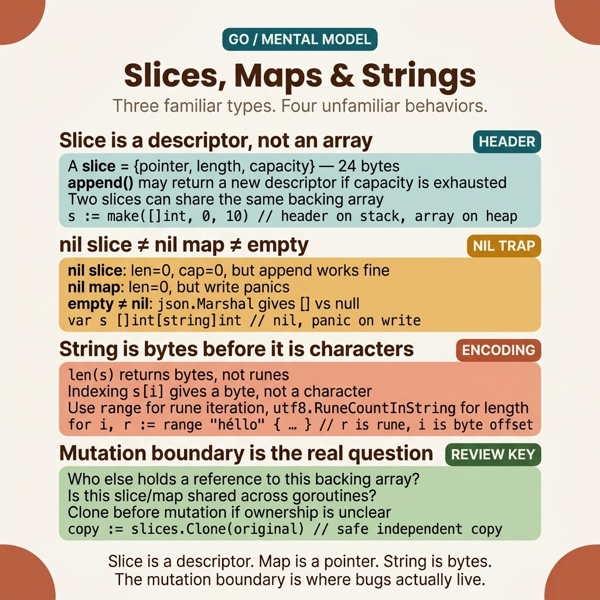
Cơ chế rõ ràng. Điều còn lại là nhận ra những điểm mà mã gần như đúng mang các giả định sai vào quá trình sản xuất.
| # | Mức độ nghiêm trọng | Lỗi | Hậu quả | Sửa chữa |
|---|---|---|---|---|
| 1 | 🔴 Gây tử vong | nil map viết | m["key"] = 1 hoảng sợ khi m không được make() d | Luôn make(map[K]V) trước khi viết |
| 2 | 🔴 Gây tử vong | Slice sub- slice chia sẻ bộ nhớ | Sửa đổi sub- slice → sửa đổi dữ liệu gốc | copy() hoặc đầy đủ slice [a:b:b] |
| 3 | 🟡 Chung | len(string) = byte, không phải ký tự | Đếm sai chuỗi UTF-8 | utf8.RuneCountInString() |
| 4 | 🟡 Chung | Thứ tự lặp Map là ngẫu nhiên | Đầu ra không xác định | Sắp xếp các khóa: slices.Sort(maps.Keys(m)) |
| 5 | 🟡 Chung | Chuỗi concat += trong vòng lặp | Phân bổ O(n²), chậm | strings.Builder hoặc strings.Join |
| 6 | 🔵 Nhỏ | Nối thêm mà không cần chỉ định lại | append có thể trả về một slice mới, biến cũ trở nên cũ | Luôn s = append(s, ...) |
🔴 Cạm bẫy #1 — Nil map write = instant panic var m map[string]int; m["k"] = 1 → panic . A map phải là make() d trước khi viết. Đọc từ nil map trả về giá trị 0 (không panic ) - vì vậy lỗi chỉ xuất hiện khi ghi, có thể ở xa trang khai báo.
🔴 Cạm bẫy #2 — Sub- slice chia sẻ bộ nhớ sub := original[1:3] không sao chép dữ liệu - sub và original có chung cơ sở array . Sửa đổi sub[0] → original[1] được thay đổi. Biểu thức slice đầy đủ original[1:3:3] giới hạn phụ- slice → append phải phân bổ một array mới.
Các tài nguyên dưới đây đi sâu hơn vào nội bộ.
---
| Tài nguyên | Loại | Liên kết | Ghi chú |
|---|---|---|---|
| Go Slices | Chính thức | [go.dev/blog/slices-intro](https://go.dev/blog/slices-intro) | Slice lặn sâu bên trong |
| Go Maps | Chính thức | [go.dev/blog/maps](https://go.dev/blog/maps) | Map triển khai |
| Go Chuỗi | Chính thức | [go.dev/blog/strings](https://go.dev/blog/strings) | UTF-8, rune, byte |
| slices package | Chính thức | [pkg.go.dev/slices](https://pkg.go.dev/slices) | Go 1.21+ generic người trợ giúp |
---
Những phần mở rộng này kết nối kiến thức về cấu trúc dữ liệu vào mã sản xuất an toàn, hiệu quả.
| Gia hạn | Khi nào | Cơ sở lý luận | Tệp/Liên kết |
|---|---|---|---|
| Generics | Bộ sưu tập an toàn loại | Filter[T] , Map[T,U] , generic container | [02-generics.md](./02-generics.md) |
sync.Map | Truy cập đồng thời map | Thread -safe map cho các tình huống có tính cạnh tranh cao | [../helper/09-set-đồng thời-map.md](../helper/09-set-đồng thời-map.md) |
slices package | Go 1.21+ người trợ giúp | slices.Sort , slices.Contains , slices.Delete | [pkg.go.dev/slices](https://pkg.go.dev/slices) |
strings.Builder | Vòng lặp nối chuỗi | Thay thế hiệu quả cho += (O(n) vs O(n²)) | [../functions/02-strings.md](../functions/02-strings.md) |
Điều hướng: [← Basics](../basics/README.md) · [→ Generics](./02-generics.md)
PR đầu tiên của bạn sử dụng generics : bạn viết func Map [T any, R any](s []T, f func(T) R) []R — người đánh giá chấp thuận nhưng hỏi: "tại sao không sử dụng comparable thay vì any ?" Bạn thay đổi nó, quá trình biên dịch không thành công vì comparable không đáp ứng được ràng buộc bắt buộc.
func MinInt(a, b int) int . Xong. Sau đó, bạn cần MinFloat64 , MinString - sao chép-dán, thay đổi loại. Contains([]int, int) → thêm ContainsString , ContainsFloat64 . Sáu chức năng, logic giống hệt nhau, chỉ khác loại - vi phạm DRY ở cấp hệ thống loại. Thêm một loại mới? Sửa sáu chỗ. Lỗi logic? Sửa sáu chỗ. Xem xét PR? Đọc sáu chức năng giống hệt nhau.
Go 1.18 giải quyết vấn đề này bằng generics : Min [T cmp.Ordered](a, b T) T — một hàm, tất cả các loại được sắp xếp. Biên dịch- time kiểm tra loại, không có chi phí runtime , không có quyền anh như giao diện (interface){} . Nhưng có một cái bẫy: over- generics biến Go thành Java — mã không thể đọc được, sự trừu tượng không cần thiết. Quy tắc: nếu bạn không thể liệt kê ít nhất 3 loại cụ thể sẽ sử dụng generic , thì đừng đặt nó generic . Cái bẫy đó sẽ xuất hiện trong PITFALS.
Generics Cú pháp
| Yếu tố | Cú pháp | Ví dụ | |
|---|---|---|---|
| Nhập tham số | [T any] | func Print [T any](v T) | |
| Ràng buộc | [T Constraint] | [T comparable] | |
| Nhiều thông số | [K comparable, V any] | Hàm Map | |
| Liên minh hạn chế | int \ | float64 | Các phép toán số |
~int | Loại cơ bản | Bao gồm Kiểu dữ liệu MyInt int |
Các ràng buộc tích hợp
| Ràng buộc | Mô tả | Package |
|---|---|---|
any | Any loại ( giao diện (interface){} ) | dựng sẵn |
comparable | Hỗ trợ == , != | dựng sẵn |
constraints.Ordered | Hỗ trợ < , > , <= , >= | golang.org/x/exp/constraints |
constraints.Integer | Tất cả các loại số nguyên | golang.org/x/exp/constraints |
constraints.Float | float32 , float64 | golang.org/x/exp/constraints |
cmp.Ordered | Go 1.21+ loại được đặt hàng | cmp |
Khi nào nên sử dụng Generics | Sử dụng | Không sử dụng |
| ------------------------------ | ------------------------------- | | Vùng chứa an toàn loại ( stack , queue) | Chức năng đơn giản với 1-2 loại | | Các hàm tiện ích ( map , lọc, giảm) | Khi giao diện (interface) {} ổn | | Giảm trùng lặp mã | Khi nó ảnh hưởng đến khả năng đọc | | Tránh phản ánh | Codebase nhỏ với vài loại |Cú pháp, các ràng buộc, khi nào nên sử dụng - đủ lý thuyết. Chúng ta hãy xem generics so sánh trực quan với các giao diện (interface) và hình ảnh phản chiếu như thế nào.
---
Mã nguồn & Các ví dụ minh họa
cmp.Ordered để so sánh, comparable cho == . Tự động phát hiện suy luận kiểu - không cần chỉ định thông số loại trong hầu hết các trường hợp.Các hàm Generic bao gồm các hoạt động tiện ích. Nhưng khi bạn cần generic types — Stack , Queue, Result — và ràng buộc tùy chỉnh cho các loại miền như Money , Temperature thì sao? Bạn phải hiểu các mẫu ~int (dấu ngã) và generic struct .
package main
import (
"cmp"
"fmt"
)
// ✅ Generic function — works with any comparable type
func Contains[T comparable](slice []T, target T) bool {
for _, v := range slice {
if v == target {
return true
}
}
return false
}
// ✅ Generic with constraint — cmp.Ordered (Go 1.21+)
func Max[T cmp.Ordered](a, b T) T {
if a > b {
return a
}
return b
}
func Min[T cmp.Ordered](a, b T) T {
if a < b {
return a
}
return b
}
// ✅ Clamp value to range
func Clamp[T cmp.Ordered](val, min, max T) T {
if val < min {
return min
}
if val > max {
return max
}
return val
}
// ✅ Map function — transform slice
func Map[T any, U any](slice []T, fn func(T) U) []U {
result := make([]U, len(slice))
for i, v := range slice {
result[i] = fn(v)
}
return result
}
// ✅ Filter function
func Filter[T any](slice []T, fn func(T) bool) []T {
result := make([]T, 0)
for _, v := range slice {
if fn(v) {
result = append(result, v)
}
}
return result
}
// ✅ Reduce function
func Reduce[T any, U any](slice []T, init U, fn func(U, T) U) U {
acc := init
for _, v := range slice {
acc = fn(acc, v)
}
return acc
}
func main() {
// ✅ Works with any type
fmt.Println(Contains([]int{1, 2, 3}, 2)) // true
fmt.Println(Contains([]string{"go", "rust"}, "go")) // true
fmt.Println(Max(10, 20)) // 20
fmt.Println(Max("go", "rust")) // rust (lexicographic)
fmt.Println(Clamp(150, 0, 100)) // 100
// ✅ Map: []int → []string
nums := []int{1, 2, 3, 4, 5}
strs := Map(nums, func(n int) string {
return fmt.Sprintf("#%d", n)
})
fmt.Println(strs) // [#1 #2 #3 #4 #5]
// ✅ Filter: even numbers
evens := Filter(nums, func(n int) bool { return n%2 == 0 })
fmt.Println(evens) // [2 4]
// ✅ Reduce: sum
sum := Reduce(nums, 0, func(acc, n int) int { return acc + n })
fmt.Println(sum) // 15
}~int thay vì int trong một ràng buộc?
int chỉ khớp với loại chính xác int . ~int khớp với loại any có loại cơ bản là int - bao gồm Kiểu dữ liệu Money int64 , Kiểu dữ liệu UserID int . Dấu ngã ( ~ ) có nghĩa là "khớp loại cơ bản" - điều này là bắt buộc để generics hoạt động với các loại miền tùy chỉnh.Number , Entity ) bật tính năng dành riêng cho miền generics . Mẫu var zero T mang lại giá trị 0 một cách an toàn. Generic các loại ( Stack[T] , Result[T] ) thiết lập các thùng chứa loại an toàn.Các hàm và kiểu Generic bao gồm mã cấp thư viện. Nhưng trong DDD - khi bạn đặc biệt cần CRUD kho lưu trữ generic cho tất cả các thực thể - generics trở thành vũ khí DRY chính ở cấp độ kiến trúc.
package main
import (
"encoding/json"
"fmt"
)
// ✅ Custom constraint — Numeric types
type Number interface {
~int | ~int8 | ~int16 | ~int32 | ~int64 |
~uint | ~uint8 | ~uint16 | ~uint32 | ~uint64 |
~float32 | ~float64
}
// ✅ ~ (tilde) = underlying type — includes type aliases
type Money int64 // underlying type is int64
type Temperature float64 // underlying type is float64
func Sum[T Number](nums []T) T {
var total T
for _, n := range nums {
total += n
}
return total
}
// ✅ Generic Stack
type Stack[T any] struct {
items []T
}
func NewStack[T any]() *Stack[T] {
return &Stack[T]{items: make([]T, 0)}
}
func (s *Stack[T]) Push(item T) {
s.items = append(s.items, item)
}
func (s *Stack[T]) Pop() (T, bool) {
if len(s.items) == 0 {
var zero T // ✅ Zero value of any type
return zero, false
}
item := s.items[len(s.items)-1]
s.items = s.items[:len(s.items)-1]
return item, true
}
func (s *Stack[T]) Peek() (T, bool) {
if len(s.items) == 0 {
var zero T
return zero, false
}
return s.items[len(s.items)-1], true
}
func (s *Stack[T]) Len() int { return len(s.items) }
// ✅ Generic Pair
type Pair[A, B any] struct {
First A
Second B
}
func NewPair[A, B any](a A, b B) Pair[A, B] {
return Pair[A, B]{First: a, Second: b}
}
// ✅ Generic Result (like Rust's Result<T, E>)
type Result[T any] struct {
value T
err error
}
func Ok[T any](val T) Result[T] { return Result[T]{value: val} }
func Err[T any](err error) Result[T] { return Result[T]{err: err} }
func (r Result[T]) Unwrap() (T, error) { return r.value, r.err }
func (r Result[T]) IsOk() bool { return r.err == nil }
func main() {
// ✅ Custom Money type works with Sum
prices := []Money{1990, 2990, 599}
fmt.Println("Total:", Sum(prices)) // 5579
temps := []Temperature{36.5, 37.2, 38.1}
fmt.Println("Avg:", Sum(temps)/Temperature(len(temps)))
// ✅ Generic Stack
stack := NewStack[string]()
stack.Push("hello")
stack.Push("world")
val, _ := stack.Pop()
fmt.Println(val) // "world"
// ✅ Integer stack
intStack := NewStack[int]()
intStack.Push(1)
intStack.Push(2)
// ✅ Pair
p := NewPair("user-123", 42)
fmt.Println(p.First, p.Second)
// ✅ Result
result := Ok(42)
if result.IsOk() {
val, _ := result.Unwrap()
fmt.Println("Value:", val)
}
}Entity giao diện (interface) thay vì any ?
A Repository[T any] không biết liệu thực thể có phương thức GetID() hay không → nó không thể tra cứu theo ID. Ràng buộc Entity đảm bảo GetID() string tồn tại → kho lưu trữ vừa là generic vừa an toàn về kiểu. Trong quá trình sản xuất: thay thế InMemoryRepo bằng PostgresRepo[T Entity] được hỗ trợ bởi sqlx / pgx .Entity thực thi hợp đồng. sync.RWMutex đảm bảo an toàn đồng thời. Trong quá trình sản xuất, hãy hoán đổi kho lưu trữ trong bộ nhớ lấy phần phụ trợ RDBMS.Bây giờ bạn đã tìm hiểu các hàm generic , các ràng buộc tùy chỉnh, các loại generic và mẫu kho lưu trữ generic . Bây giờ đến phần nguy hiểm: over- generics - cái bẫy được thiết lập ở đầu bài viết này biến Go trực tiếp thành Java.
---
package main
import (
"context"
"encoding/json"
"errors"
"fmt"
"sync"
"time"
)
// ✅ Entity constraint — all entities must have ID
type Entity interface {
GetID() string
}
// ✅ Generic Repository interface
type Repository[T Entity] interface {
FindByID(ctx context.Context, id string) (T, error)
FindAll(ctx context.Context) ([]T, error)
Create(ctx context.Context, entity T) error
Update(ctx context.Context, entity T) error
Delete(ctx context.Context, id string) error
}
// ✅ In-memory implementation (for demo/testing)
type InMemoryRepo[T Entity] struct {
mu sync.RWMutex
store map[string]T
}
func NewInMemoryRepo[T Entity]() *InMemoryRepo[T] {
return &InMemoryRepo[T]{
store: make(map[string]T),
}
}
func (r *InMemoryRepo[T]) FindByID(_ context.Context, id string) (T, error) {
r.mu.RLock()
defer r.mu.RUnlock()
entity, ok := r.store[id]
if !ok {
var zero T
return zero, fmt.Errorf("entity %s not found", id)
}
return entity, nil
}
func (r *InMemoryRepo[T]) FindAll(_ context.Context) ([]T, error) {
r.mu.RLock()
defer r.mu.RUnlock()
items := make([]T, 0, len(r.store))
for _, v := range r.store {
items = append(items, v)
}
return items, nil
}
func (r *InMemoryRepo[T]) Create(_ context.Context, entity T) error {
r.mu.Lock()
defer r.mu.Unlock()
if _, exists := r.store[entity.GetID()]; exists {
return errors.New("entity already exists")
}
r.store[entity.GetID()] = entity
return nil
}
func (r *InMemoryRepo[T]) Update(_ context.Context, entity T) error {
r.mu.Lock()
defer r.mu.Unlock()
if _, exists := r.store[entity.GetID()]; !exists {
return errors.New("entity not found")
}
r.store[entity.GetID()] = entity
return nil
}
func (r *InMemoryRepo[T]) Delete(_ context.Context, id string) error {
r.mu.Lock()
defer r.mu.Unlock()
delete(r.store, id)
return nil
}
// ✅ Concrete entities
type User struct {
ID string `json:"id"`
Name string `json:"name"`
Email string `json:"email"`
}
func (u User) GetID() string { return u.ID }
type Product struct {
ID string `json:"id"`
Name string `json:"name"`
Price float64 `json:"price"`
}
func (p Product) GetID() string { return p.ID }
// ✅ Generic service — reusable business logic
type CRUDService[T Entity] struct {
repo Repository[T]
}
func NewCRUDService[T Entity](repo Repository[T]) *CRUDService[T] {
return &CRUDService[T]{repo: repo}
}
func (s *CRUDService[T]) GetAll(ctx context.Context) ([]T, error) {
ctx, cancel := context.WithTimeout(ctx, 5*time.Second)
defer cancel()
return s.repo.FindAll(ctx)
}
func main() {
ctx := context.Background()
// ✅ Same repository code works for User AND Product
userRepo := NewInMemoryRepo[User]()
userSvc := NewCRUDService[User](userRepo)
productRepo := NewInMemoryRepo[Product]()
productSvc := NewCRUDService[Product](productRepo)
// Create users
userRepo.Create(ctx, User{ID: "u1", Name: "Alice", Email: "alice@go.dev"})
userRepo.Create(ctx, User{ID: "u2", Name: "Bob", Email: "bob@go.dev"})
// Create products
productRepo.Create(ctx, Product{ID: "p1", Name: "Go Book", Price: 29.99})
users, _ := userSvc.GetAll(ctx)
products, _ := productSvc.GetAll(ctx)
usersJSON, _ := json.MarshalIndent(users, "", " ")
productsJSON, _ := json.MarshalIndent(products, "", " ")
fmt.Println("Users:", string(usersJSON))
fmt.Println("Products:", string(productsJSON))
}Sơ đồ trực quan & Luồng hoạt động (Visual Support)
Generics chỉ hữu ích khi chúng giải quyết được áp lực trừu tượng thực sự. Nếu không, chúng sẽ nhanh chóng rơi vào tình trạng "mã tổng quát nhưng không thể đọc được". Quyết định map bên dưới buộc bạn phải khóa câu hỏi đó trước khi viết tham số loại khác. Hình: Quyết định generics map bắt đầu từ lựa chọn mặc định — mã cụ thể — và chỉ mở về phía trừu tượng giao diện (interface) hoặc generic khi áp lực đủ rõ ràng để biện minh cho điều đó.
Khi thứ tự quyết định đã đúng, phần mã bên dưới sẽ ít mang tính lý thuyết hơn. Mỗi ví dụ thể hiện chính xác khi nào generics giảm trùng lặp và khi giao diện (interface) hoặc mã cụ thể vẫn là lựa chọn rõ ràng hơn.
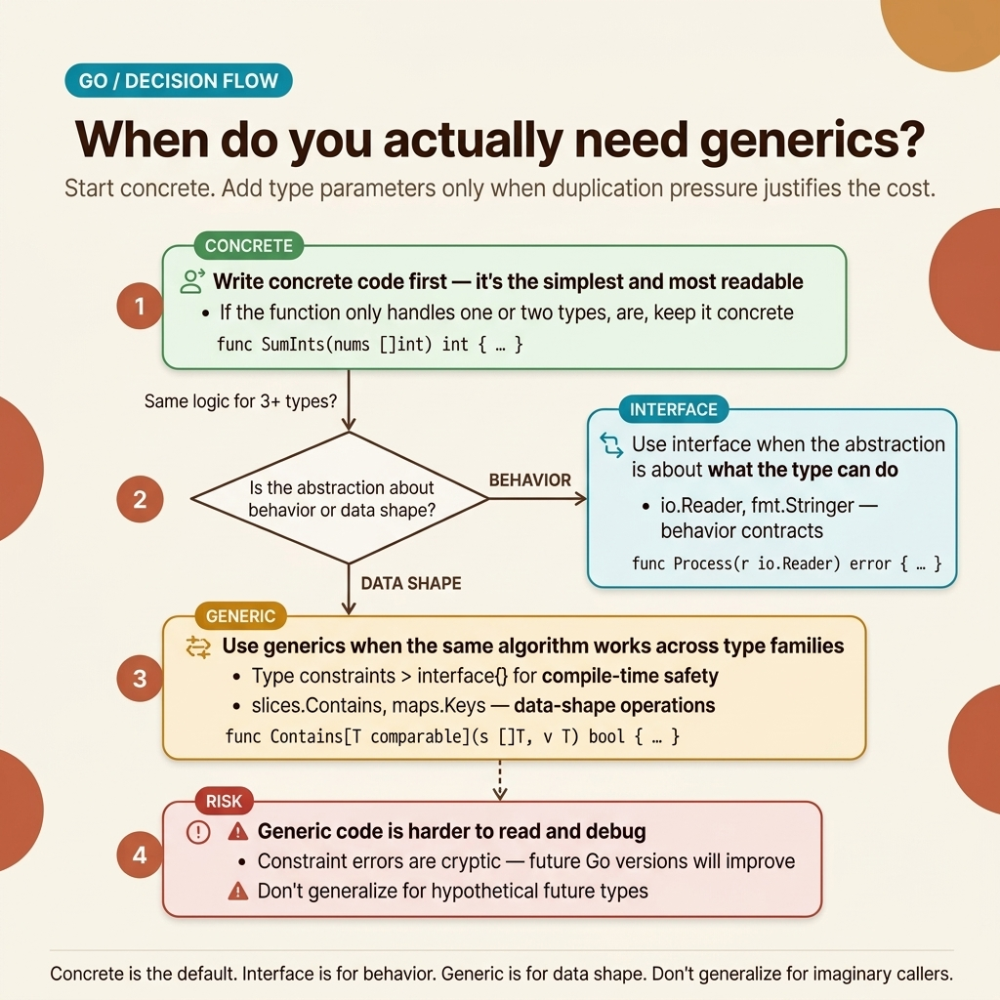
Cơ chế của Generics — Tham số loại, ràng buộc, Generic Mẫu rất rõ ràng. Điều còn lại là nhận ra những điểm mà mã gần như đúng vô tình biến Go thành Java.
| # | Mức độ nghiêm trọng | Lỗi | Hậu quả | Sửa chữa |
|---|---|---|---|---|
| 1 | 🟡 Chung | Over- generics (kiểu Java) | Mã không thể đọc được, độ phức tạp không cần thiết | Ưu tiên các loại bê tông trước; chỉ sử dụng generics khi chứng minh được sự trùng lặp |
| 2 | 🟡 Chung | ~int so với int nhầm lẫn | Các loại tùy chỉnh ( Kiểu dữ liệu Money int ) không khớp với ràng buộc int | Sử dụng ~int để bao gồm tất cả các loại cơ bản |
| 3 | 🟡 Chung | Kiểu suy luận không thành công | Biên dịch lỗi với thông báo không rõ ràng | Chỉ định rõ ràng các thông số loại: Fn [int](...) |
| 4 | 🔵 Nhỏ | Trả về giá trị bằng 0 | return T{} không biên dịch cho generics | Sử dụng var zero T; return zero |
| 5 | 🔵 Nhỏ | Không thể thêm phương thức nhập thông số | T.Phương thức() không biên dịch | Xác định ràng buộc giao diện (interface) bằng các phương thức được yêu cầu |
🟡 Cạm bẫy #1 — Over- generics = Hội chứng Java
Văn hóa Go yêu cầu loại cụ thể trước tiên. Generics chỉ nhập khi mã có thể được sao chép trên hơn 3 loại. Viết Filter[T] cho các tiện ích thu thập là hợp lý. Viết UserService[T UserRepo] khi chỉ tồn tại một triển khai là sự trừu tượng không cần thiết.
Quy tắc: Nếu bạn không thể liệt kê ít nhất 3 loại cụ thể sẽ sử dụng hàm generic của mình — đừng viết chung chung.
Bạn đã điều hướng các hàm, loại, kho lưu trữ generic và bẫy quá mức generics . Các tài nguyên dưới đây cung cấp nội dung sâu sắc.
---
| Tài nguyên | Loại | Liên kết | Ghi chú |
|---|---|---|---|
| Go Generics Hướng dẫn | Chính thức | [go.dev/doc/tutorial/generics](https://go.dev/doc/tutorial/generics) | Hướng dẫn thân thiện với người mới bắt đầu |
| Loại Thông số Đề xuất | Chính thức | [go.dev/blog/intro-generics](https://go.dev/blog/intro-generics) | Cơ sở thiết kế kiến trúc sâu sắc |
| ràng buộc package | Chính thức | [pkg.go.dev/golang.org/x/exp/constraints](https://pkg.go.dev/golang.org/x/exp/constraints) | Các ràng buộc cốt lõi được xác định trước |
| slices package | Chính thức | [pkg.go.dev/slices](https://pkg.go.dev/slices) | Generic slice hoạt động |
---
Cốt lõi của Generics — Tham số loại, ràng buộc, Generic Mẫu rất rõ ràng. Các nhánh bên dưới cầu loại trừu tượng hóa an toàn vào sản xuất mà không trượt vào kỹ thuật quá mức.
| Gia hạn | Khi nào nên đọc tiếp | Cơ sở lý luận | Tệp/Liên kết |
|---|---|---|---|
| lo thư viện | Khi bạn cần Lodash cho Go | Map , Lọc, Giảm, GroupBy — tất cả generic | [github.com/samber/lo](https://github.com/samber/lo) |
| mẫu Iterator | Khi làm việc với Go 1.23+ | iter.Seq[T] — đánh giá lười biếng, các luồng có thể tổng hợp | [go.dev/blog/range-functions](https://go.dev/blog/range-functions) |
| Generic bộ sưu tập | Khi tiêu chuẩn slices / maps không còn | Hàng đợi, bộ và cây an toàn loại | [github.com/emirpasber/gods](https://github.com/emirpasber/gods) |
| Khẳng định kiểu (type assertion) | Khi bạn cần kiểm tra kiểu runtime | x.(T) , loại công tắc và nil giao diện (interface) bẫy | [03-Kiểu dữ liệu-assertion-embedding.md](./03-Kiểu dữ liệu-assertion-embedding.md) |
---
Điều hướng tuần tự: [← Slices/Maps](./01-slices-maps-strings.md) · [→ Khẳng định kiểu (type assertion) & Embedding](./03-Kiểu dữ liệu-assertion-embedding.md)
Giải mã JSON trả về map[string]any . Bạn sử dụng data["age"].(int) — panic . Bởi vì các số JSON giải mã là float64 , không phải int . Loại xác nhận thất bại = sự cố.
giao diện (interface){} từ bộ giải mã JSON — một số giá trị nhưng không xác định loại. Gọi v.ToUpper() → lỗi biên dịch. Truyền nó v.(string) → lỗi sập runtime (runtime panic) nếu loại không chính xác. Đang trong quá trình sản xuất: 3 giờ sáng, nhật ký panic có 500 mục nhập, vì một điểm cuối đã nhận được float64 thay vì string từ JSON. Khắc phục: v, ok := x.(string) — xác nhận an toàn, không panic .
Nhưng có một cái bẫy nguy hiểm hơn: nil giao diện (interface) . var err MyError = nil; return err - có vẻ như trả về nil , nhưng giao diện (interface) = {Kiểu dữ liệu=MyError, value=nil} → err != nil đánh giá là đúng. Đây là lỗi khó gỡ lỗi nhất trong Go . Cái bẫy đó xuất hiện trong Ví dụ 3 và CÂU HỎI. Ngoài ra, các loại tùy chỉnh như Kiểu dữ liệu UserID int64 ngăn trình biên dịch cho phép OrderID trong đó cần có UserID — an toàn dựa trên loại, lỗi phát hiện khi biên dịch time .
Định nghĩa loại
| Cú pháp | Mô tả | Ví dụ |
|---|---|---|
Kiểu dữ liệu T S | Loại mới (bộ phương thức riêng) | Kiểu dữ liệu UserID int64 |
Kiểu dữ liệu T = S | Bí danh (cùng loại, chia sẻ phương thức) | Kiểu dữ liệu byte = uint8 |
Kiểu dữ liệu T struct{ S } | Embedding (thúc đẩy các phương pháp) | Kiểu dữ liệu Admin struct{ User } |
Kiểu dữ liệu T giao diện (interface){ M() } | Giao diện (interface) | Định nghĩa hợp đồng |
Khẳng định kiểu (type assertion) so với Chuyển đổi
| Hoạt động | Cú pháp | Runtime kiểm tra? |
|---|---|---|
| Khẳng định | x.(T) | ✅ Runtime — hoảng sợ nếu sai |
| Khẳng định an toàn | v, ok := x.(T) | ✅ Runtime — trả về bool |
| Chuyển đổi | T(x) | ❌ Biên dịch- time — phải tương thích |
| Công tắc loại | switch v := x.(Kiểu dữ liệu) | ✅ Runtime — nhiều loại |
Quy tắc đặt phương thức
| Loại | Bộ phương thức |
|---|---|
T (giá trị) | Chỉ giá trị receivers |
T ( con trỏ ) | Giá trị + con trỏ receivers |
Embedding T | Phương pháp giá trị có thể thăng tiến |
Embedding T | Tất cả các phương pháp được quảng bá |
Định nghĩa kiểu, xác nhận, tập phương thức - lý thuyết được đề cập. Bây giờ chúng ta hãy xem bẫy nil giao diện (interface) và khẳng định kiểu (type assertion) diễn ra trực quan như thế nào.
---
Mã nguồn & Các ví dụ minh họa
UserID int64 thay vì int64 thô?
Cho func GetUser(id int64) — trình biên dịch cho phép GetUser(orderID) vì chúng có chung kiểu nguyên thủy. Với func GetUser(id UserID) , việc chuyển OrderID sẽ gây ra lỗi biên dịch. Tính năng an toàn biên dịch- time này không có chi phí hoạt động runtime và ngăn chặn các lỗi logic.Kiểu dữ liệu Status string với khối const .Các loại tùy chỉnh bao gồm mô hình miền. Nhưng điều gì xảy ra khi 5 structs tất cả đều cần các trường và phương thức giống nhau - BaseModel , SoftDelete , AuditLog ? Sao chép-dán không chia tỷ lệ. Embedding giải quyết vấn đề này thông qua sự kết hợp (composition) .
package main
import (
"fmt"
"time"
)
// ✅ Custom types — compiler prevents mixing up IDs!
type UserID int64
type OrderID int64
type ProductID int64
// ✅ Custom string types for enums
type OrderStatus string
const (
OrderStatusPending OrderStatus = "pending"
OrderStatusConfirmed OrderStatus = "confirmed"
OrderStatusShipped OrderStatus = "shipped"
OrderStatusDelivered OrderStatus = "delivered"
)
// ✅ Validate enum
func (s OrderStatus) IsValid() bool {
switch s {
case OrderStatusPending, OrderStatusConfirmed,
OrderStatusShipped, OrderStatusDelivered:
return true
}
return false
}
// ✅ Methods on custom type
func (uid UserID) String() string {
return fmt.Sprintf("USR-%06d", int64(uid))
}
// ✅ Custom time wrapper
type Timestamp time.Time
func Now() Timestamp {
return Timestamp(time.Now())
}
func (t Timestamp) ToTime() time.Time {
return time.Time(t)
}
func (t Timestamp) Format() string {
return time.Time(t).Format("2006-01-02 15:04:05")
}
func main() {
uid := UserID(12345)
oid := OrderID(67890)
fmt.Println(uid) // USR-012345 (via Stringer)
// ❌ Compile error! Cannot mix types
// if uid == oid {} // mismatched types UserID and OrderID
// ✅ Must explicitly convert
_ = int64(uid) == int64(oid) // OK after conversion
status := OrderStatusPending
fmt.Println(status.IsValid()) // true
ts := Now()
fmt.Println(ts.Format()) // 2024-01-15 10:30:00
}Kiểu dữ liệu Service struct { Logger } — Service thực hiện Logger giao diện (interface) thông qua quảng cáo. Việc triển khai hoán đổi rất đơn giản: tiêm Service{Logger: &ConsoleLogger{}} cho nhà phát triển hoặc Service{Logger: &SentryLogger{}} cho sản xuất. Đây là mẫu Sự kết hợp (composition) + Ủy quyền.err != nil trả về true ngay cả khi giá trị cơ bản là nil . Các quy tắc thiết lập phương thức cũng chi phối việc con trỏ hay value receiver có thỏa mãn giao diện (interface) hay không.package main
import (
"encoding/json"
"fmt"
"time"
)
// ✅ Base model — reusable timestamp fields
type BaseModel struct {
ID int64 `json:"id"`
CreatedAt time.Time `json:"created_at"`
UpdatedAt time.Time `json:"updated_at"`
}
func (b *BaseModel) Touch() {
b.UpdatedAt = time.Now()
}
func (b *BaseModel) Init() {
now := time.Now()
b.CreatedAt = now
b.UpdatedAt = now
}
// ✅ SoftDelete mixin
type SoftDelete struct {
DeletedAt *time.Time `json:"deleted_at,omitempty"`
}
func (s *SoftDelete) Delete() {
now := time.Now()
s.DeletedAt = &now
}
func (s *SoftDelete) IsDeleted() bool {
return s.DeletedAt != nil
}
func (s *SoftDelete) Restore() {
s.DeletedAt = nil
}
// ✅ User — composes BaseModel + SoftDelete
type User struct {
BaseModel // ✅ Promoted: ID, CreatedAt, UpdatedAt, Touch(), Init()
SoftDelete // ✅ Promoted: DeletedAt, Delete(), IsDeleted(), Restore()
Email string `json:"email"`
FullName string `json:"full_name"`
Role string `json:"role"`
}
// ✅ Admin — embeds User (multi-level)
type Admin struct {
User // ✅ All User methods + BaseModel methods promoted
Permissions []string `json:"permissions"`
}
func (a *Admin) HasPermission(perm string) bool {
for _, p := range a.Permissions {
if p == perm {
return true
}
}
return false
}
// ✅ Embed interface — satisfy interface via embedding
type Logger interface {
Log(msg string)
}
type ConsoleLogger struct{}
func (l *ConsoleLogger) Log(msg string) {
fmt.Printf("[LOG] %s\n", msg)
}
type Service struct {
Logger // ✅ Service now implements Logger interface!
Name string
}
func main() {
// ✅ User — promoted fields/methods
user := User{
Email: "alice@go.dev",
FullName: "Alice",
Role: "engineer",
}
user.Init() // BaseModel.Init() promoted
user.Touch() // BaseModel.Touch() promoted
user.Delete() // SoftDelete.Delete() promoted
fmt.Println(user.IsDeleted()) // true
user.Restore() // SoftDelete.Restore() promoted
fmt.Println(user.IsDeleted()) // false
// ✅ Access embedded field directly
user.ID = 1 // Same as user.BaseModel.ID = 1
data, _ := json.MarshalIndent(user, "", " ")
fmt.Println(string(data))
// ✅ Admin — multi-level embedding
admin := Admin{
User: User{
Email: "admin@go.dev",
FullName: "Admin",
Role: "admin",
},
Permissions: []string{"read", "write", "delete"},
}
admin.Init() // 3 levels deep: Admin → User → BaseModel.Init()
fmt.Println(admin.HasPermission("write")) // true
// ✅ Interface embedding
svc := Service{
Logger: &ConsoleLogger{},
Name: "OrderService",
}
svc.Log("Hello from service") // ConsoleLogger.Log() promoted
}doSomethingBAD() trả về một kiểu nil MyError được ngụy trang thành một Lỗi biên dịch / Runtime giao diện (interface) . giao diện (interface) trở thành {Kiểu dữ liệu=MyError, value=nil} . Vì vậy err != nil đánh giá là đúng. Cách khắc phục: luôn return nil khi không có lỗi. Đây là lỗi khó gỡ lỗi nhất trong Go — nó ẩn trong quá trình sản xuất và các thử nghiệm đơn vị bỏ sót trừ khi trường hợp nil được thử nghiệm.v, ok := x.(T) để xác nhận an toàn. Con trỏ receivers giới hạn phương thức được đặt thành các con trỏ . Giá trị receivers bao gồm cả hai.Bây giờ bạn đã học được các loại tùy chỉnh, embedding và bẫy nil giao diện (interface) nghiêm trọng. Bây giờ đến phần nguy hiểm: bẫy nil giao diện (interface) lại xuất hiện ngay lập tức trong PITFALS — bởi vì nó cực kỳ nguy hiểm đến mức bắt buộc phải lặp lại.
---
package main
import (
"bytes"
"fmt"
"io"
)
// ✅ Interface composition — stdlib pattern
type ReadWriteCloser interface {
io.Reader
io.Writer
io.Closer
}
// ✅ Interface with embedded + extra methods
type Storage interface {
io.ReadWriter
Sync() error
Size() int64
}
// ══════════════════════════════════════
// THE NIL INTERFACE TRAP
// ══════════════════════════════════════
type MyError struct {
Code int
Message string
}
func (e *MyError) Error() string {
return fmt.Sprintf("[%d] %s", e.Code, e.Message)
}
// ❌ THIS IS A BUG!
func doSomethingBAD() error {
var err *MyError = nil // typed nil pointer
return err // ⚠️ returns interface{error} holding (*MyError, nil)
// The interface is NOT nil! It holds a type but nil value
}
// ✅ FIX: return nil explicitly
func doSomethingGOOD() error {
var err *MyError = nil
if err != nil {
return err
}
return nil // ✅ Explicitly return nil interface
}
// ══════════════════════════════════════
// METHOD SET — value vs pointer receiver
// ══════════════════════════════════════
type Sizer interface {
Size() int
}
type Buffer struct {
data []byte
}
// Pointer receiver
func (b *Buffer) Size() int {
return len(b.data)
}
func main() {
// ✅ Nil interface trap
err := doSomethingBAD()
fmt.Println(err == nil) // false! ← THE TRAP
// The interface contains (*MyError, nil) — NOT a nil interface
err2 := doSomethingGOOD()
fmt.Println(err2 == nil) // true ✅
// ✅ Method set rules
buf := Buffer{data: []byte("hello")}
var s Sizer
// s = buf // ❌ COMPILE ERROR: Buffer does not implement Sizer
// (Size method has pointer receiver)
s = &buf // ✅ OK: *Buffer implements Sizer
fmt.Println(s.Size()) // 5
// ✅ io.Writer example
var w io.Writer
w = &bytes.Buffer{} // bytes.Buffer has pointer receiver Write
_, _ = w.Write([]byte("hello"))
}Sơ đồ trực quan & Luồng hoạt động (Visual Support)
Bài viết này gói nhiều bẫy runtime vào một nơi: đã nhập nil , xác nhận, lựa chọn theo kiểu (type switch) và quảng bá phương thức thông qua embedding . Tất cả đều theo dõi lại thông tin loại ẩn. Bỏ lỡ gốc rễ đó và bạn ghi nhớ những thủ thuật biệt lập có thể phá vỡ trong những điều kiện mới. Hình: Quyết định map chạy trực tiếp từ bẫy nil đã nhập đến xác nhận an toàn, chuyển đổi loại và giải quyết tại embedding /bộ phương thức để nhấn mạnh rằng hình dạng runtime của giá trị giao diện (interface) là nguyên nhân gốc rễ của các lỗi khó chịu nhất.
Với thông tin loại ẩn được ánh xạ, phần mã bên dưới sẽ có thể thực hiện được. Mỗi ví dụ đọc dưới dạng một kịch bản gỡ lỗi runtime thay vì các bản trình diễn cú pháp bị ngắt kết nối.
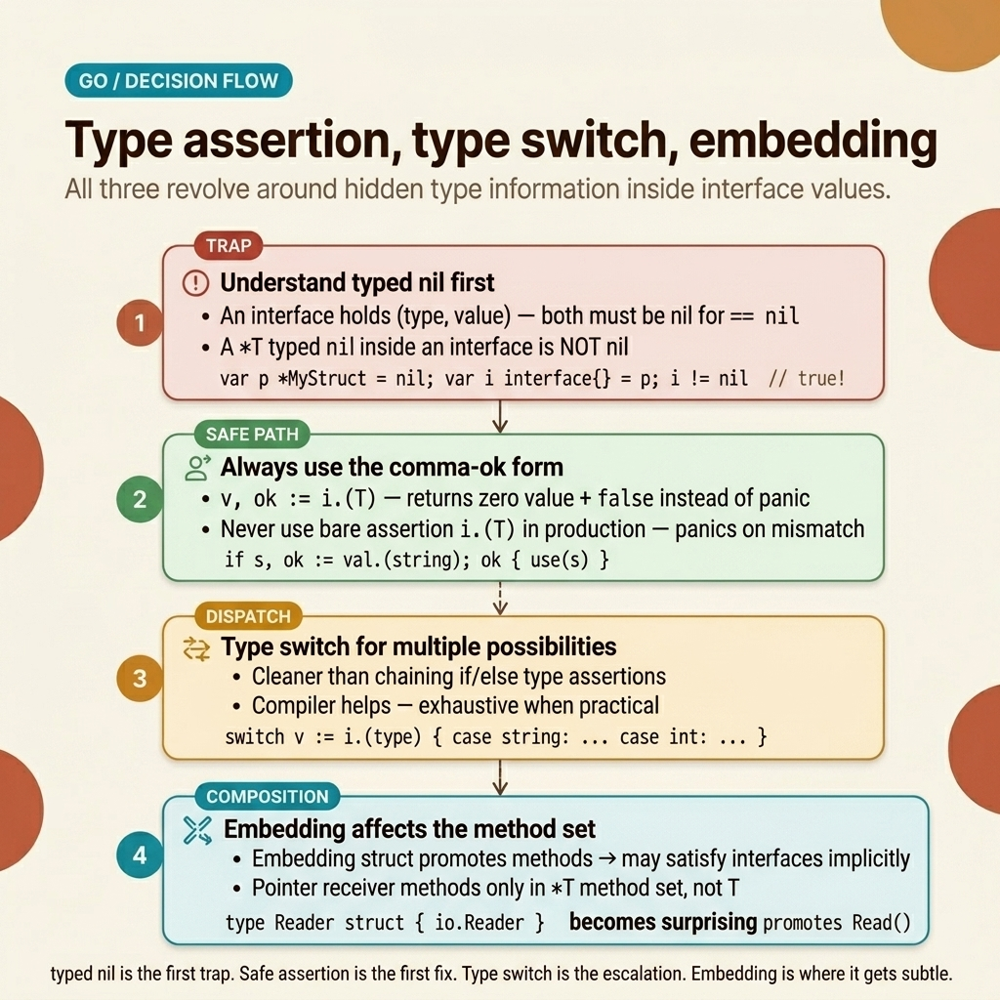
Cơ chế của Khẳng định kiểu (type assertion) , Embedding & Loại bí danh rất rõ ràng. Điều còn lại là nhận ra những trường hợp dễ ghi nhớ cú pháp nhưng áp dụng sai hành vi — đặc biệt là với nil các giao diện (interface) và các bộ phương thức.
| # | Mức độ nghiêm trọng | Lỗi | Hậu quả | Sửa chữa |
|---|---|---|---|---|
| 1 | 🔴 Gây tử vong | Nil giao diện (interface) bẫy | err != nil trả về true ngay cả khi giá trị là nil → logic bị hỏng | Luôn return nil cho lỗi giao diện (interface) |
| 2 | 🟡 Chung | Giá trị receiver ≠ con trỏ giao diện (interface) | Lỗi biên dịch: T không triển khai giao diện (interface) yêu cầu *T | Truyền con trỏ &x hoặc chuyển sang value receiver |
| 3 | 🟡 Chung | Embedding va chạm hiện trường | Cuộc gọi phương thức không rõ ràng → lỗi biên dịch | Sử dụng đường dẫn rõ ràng: x.Base.Phương thức() |
| 4 | 🟡 Chung | Kiểu dữ liệu T S mất phương pháp | T không có phương thức nào từ S — chỉ có kiểu cơ bản chuyển đổi | Xác định lại các phương thức trên T hoặc nhúng S |
| 5 | 🔵 Nhỏ | Embedding xuất tất cả các phương thức | Các phương thức nội bộ bị rò rỉ vào API công khai | Bao bọc trong struct riêng tư phía sau giao diện (interface) |
🔴 Cạm bẫy #1 — Nil giao diện (interface) bẫy (lại nữa!)
Cái bẫy này quan trọng đến mức nó xuất hiện trong hai tệp lõi riêng biệt. Một giao diện (interface) = (Kiểu dữ liệu, value) . Một kiểu nil ( (*T)(nil) ) được gói bên trong một giao diện (interface) khiến != nil được đánh giá là đúng. Việc gọi một phương thức trên đó sẽ kích hoạt panic . Cách khắc phục: trả về trực tiếp mã định danh nil , không bao giờ nhập nil qua ranh giới giao diện (interface) .
Bây giờ bạn đã biết các loại tùy chỉnh, embedding , bộ phương thức và bẫy nil giao diện (interface) . Các tài nguyên bên dưới bao gồm nội bộ runtime .
---
| Tài nguyên | Loại | Liên kết | Ghi chú |
|---|---|---|---|
| Go Spec — Loại | Chính thức | [go.dev/ref/spec#Types](https://go.dev/ref/spec#Types) | Tham khảo hệ thống loại thô |
| Nhập Embedding | Chính thức | [go.dev/doc/effectivego#embedding](https://go.dev/doc/effectivego#embedding) | Mẫu cấu trúc embedding |
| Giao diện (interface) Giá trị | Chính thức | [go.dev/tour/methods/11](https://go.dev/tour/methods/11) | Nội bộ sâu giao diện (interface) |
---
Cốt lõi của Khẳng định kiểu (type assertion) , Embedding & Loại bí danh là rõ ràng. Các nhánh bên dưới mở rộng các thao tác loại runtime và mẫu sự kết hợp (composition) vào sản xuất.
| Gia hạn | Khi nào nên đọc tiếp | Cơ sở lý luận | Tệp/Liên kết |
|---|---|---|---|
| mẫu Sự kết hợp (composition) | Lập mô hình các thực thể DDD | Mixins liền mạch (SoftDelete, Dấu thời gian, AuditLog tính đóng gói (encapsulation) ) | [../structs/01-sự kết hợp (composition)-embedding.md](../structs/01-sự kết hợp (composition)-embedding.md) |
| ID an toàn loại | Mô hình miền sâu | Ngăn chặn hoàn toàn sự nhầm lẫn loại ID vô tình một cách có hệ thống khi biên dịch- time | mẫu Kiểu dữ liệu UserID int64 |
| Thư viện Enum | Quản lý codegen enum phức tạp | enumer , stringer — tự động tạo Chuỗi() tiêu chuẩn, xác thực nội bộ | [github.com/alvaroloes/enumer](https://github.com/alvaroloes/enumer) |
| Tùy chọn chức năng | Xây dựng các trường hợp linh hoạt | Mẫu WithX() tiêu chuẩn được thiết kế để khởi tạo đối tượng phức tạp | [../structs/02-tags-options-builder.md](../structs/02-tags-options-builder.md) |
---
Điều hướng tuần tự: [← Generics](./02-generics.md) · [→ Functions](../functions/)
Hàm generic Contains[T any] đầu tiên của bạn — bạn thử if v == target và trình biên dịch hét lên: "không thể so sánh v == target (T không phải là comparable )". Bạn thay đổi any thành comparable và nó sẽ biên dịch. Sau đó, một đồng nghiệp vượt qua any đang cầm []int và chương trình hoảng sợ tại runtime . Chào mừng đến với comparable .
Contains — mẫu any yêu cầu == trên một tham số loại. Ràng buộc any quá rộng: nó chấp nhận slices , maps và các hàm - không có hàm nào hỗ trợ == . Ràng buộc cmp.Ordered quá hẹp: nó loại trừ bool , struct , chan . comparable nằm chính xác ở giữa — nó thừa nhận chính xác các loại mà toán tử == chấp nhận.*
Nhưng có một cái bẫy. Vì Go 1.20, any (và tất cả các giao diện (interface) ) thỏa mãn comparable khi biên dịch time . Nếu giá trị động bên trong giao diện (interface) là slice hoặc map , thì so sánh == sẽ hoảng loạn ở runtime . Nghịch lý này — biên dịch- time an toàn với một cửa thoát hiểm runtime — là điểm tinh tế quan trọng nhất của comparable .
comparable nghĩa là gì comparable là ràng buộc giao diện (interface) tích hợp. Nó giới hạn tham số loại đối với các loại hỗ trợ == và != .
| Ràng buộc | Được phép khai thác | Package | Các loại ví dụ |
|---|---|---|---|
any | Không có (không có toán tử) | dựng sẵn | Mọi thứ bao gồm slices , funcs |
comparable | == , != | dựng sẵn | int, chuỗi, struct , *T, [N]T |
cmp.Ordered | == , != , < , > , <= , >= | cmp | int, float64, chuỗi (không có bool, struct ) |
Comparable Loại Danh sách
| Loại | Comparable ? | Tại sao |
|---|---|---|
int , int8 ... int64 | ✅ | Giá trị bình đẳng |
uint , byte , rune | ✅ | Giá trị bình đẳng |
float32 , float64 | ✅ | ⚠️ NaN != NaN (IEEE 754) |
complex64 , complex128 | ✅ | Thực + ảo so sánh |
bool | ✅ | true == true , false == false |
string | ✅ | So sánh từng byte |
*T ( các con trỏ ) | ✅ | So sánh địa chỉ, không phải giá trị trỏ tới |
chan T | ✅ | So sánh danh tính kênh (channel) |
[N]T ( arrays ) | ✅ | Từng phần tử, chỉ khi T là comparable |
struct{...} | ✅ | Theo từng trường, chỉ khi TẤT CẢ các trường là comparable |
[]T ( slices ) | ❌ | Chỉ có thể so sánh với nil |
map[K]V | ❌ | Chỉ có thể so sánh với nil |
func(...) | ❌ | Chỉ có thể so sánh với nil |
giao diện (interface){} / any | ⚠️ Đặc biệt | Biên dịch, nhưng có thể panic tại runtime |
Hệ thống phân cấp ràng buộc
``text
┌─────────────────────────────────────────────────────────┐
│ any │
│ Accepts everything. Cannot use ==, <, > on T. │
│ │
│ ┌───────────────────────────────────────────────────┐ │
│ │ comparable │ │
│ │ Accepts == and != types. Map keys live here. │ │
│ │ │ │
│ │ ┌─────────────────────────────────────────────┐ │ │
│ │ │ cmp.Ordered │ │ │
│ │ │ Accepts <, >, <=, >= as well. │ │ │
│ │ │ int, float64, string — but NOT bool/struct │ │ │
│ │ └─────────────────────────────────────────────┘ │ │
│ └───────────────────────────────────────────────────┘ │
└─────────────────────────────────────────────────────────┘
``Các định nghĩa được thiết lập. Hình ảnh trực quan bên dưới maps các quy tắc này thành luồng quyết định nhằm ngăn chặn việc chọn sai ràng buộc.
---
Mã nguồn & Các ví dụ minh họa
comparable của trình biên dịch
Yêu cầu: Go 1.18+
Kết quả: Hiểu khi nào == được phép trong mã generic> Takeaway: comparable là ràng buộc tối thiểu cho == . Không có nó, trình biên dịch sẽ từ chối so sánh các tham số kiểu. Với nó, bạn có thể xây dựng mẫu Contains , Index , Deduplicate , Set , Cache — any yêu cầu kiểm tra sự bằng nhau.Bình đẳng cơ bản được bảo hiểm. Ví dụ tiếp theo cho thấy khía cạnh nguy hiểm nhất: điều gì xảy ra khi các giao diện (interface) gặp comparable .
package main
import "fmt"
// ✅ comparable constraint — enables == inside generic code
func Contains[T comparable](s []T, target T) bool {
for _, v := range s {
if v == target { // Only compiles because T is comparable
return true
}
}
return false
}
// ✅ Index — returns position or -1
func Index[T comparable](s []T, target T) int {
for i, v := range s {
if v == target {
return i
}
}
return -1
}
// ❌ This would NOT compile with any:
// func BadContains[T any](s []T, target T) bool {
// if s[0] == target {} // ← compile error: operator == not defined for T
// }
func main() {
// ✅ Works with all comparable types
fmt.Println(Contains([]int{1, 2, 3}, 2)) // true
fmt.Println(Contains([]string{"go", "rust"}, "go")) // true
fmt.Println(Contains([]float64{1.1, 2.2}, 3.3)) // false
fmt.Println(Contains([]bool{true, false}, false)) // true
// ✅ Structs with comparable fields
type Point struct{ X, Y int }
fmt.Println(Contains([]Point{{1, 2}, {3, 4}}, Point{3, 4})) // true
// ✅ Pointers (compares addresses)
a := 42
b := 42
fmt.Println(Contains([]*int{&a}, &a)) // true (same address)
fmt.Println(Contains([]*int{&a}, &b)) // false (different address)
// ❌ Compile error — slices are not comparable:
// Contains([][]int{{1}, {2}}, []int{1})
}any KHÔNG đáp ứng comparable — phiên bản này an toàn nhưng quá hạn chế. Bạn không thể sử dụng map[any]int trong mã generic . Go 1.20 đã nới lỏng quy tắc vì những lý do thực tế, chấp nhận đánh đổi những cơn hoảng loạn runtime có thể xảy ra.comparable đảm bảo an toàn biên dịch- time cho các loại bê tông. Nhưng khi loại cụ thể là any (hoặc any khác giao diện (interface) ), mức bảo đảm sẽ hạ cấp xuống "biên dịch, nhưng có thể panic ." Phòng thủ bằng các loại cụ thể hoặc recover .Bẫy giao diện (interface) được hiểu rõ. Ví dụ tiếp theo đặt comparable hoạt động trong cấu trúc dữ liệu generic cấp sản xuất.
package main
import "fmt"
func Equal[T comparable](a, b T) bool {
return a == b
}
func main() {
// ── Zone 1: Concrete types — always safe ──
fmt.Println(Equal(42, 42)) // true ✅
fmt.Println(Equal("go", "go")) // true ✅
// ── Zone 3: The Interface Trap ──
// Since Go 1.20, `any` satisfies `comparable`
var x, y any
// Safe: dynamic type is int (comparable)
x, y = 42, 42
fmt.Println(Equal(x, y)) // true ✅ — int is comparable
// Safe: dynamic type is string (comparable)
x, y = "hello", "hello"
fmt.Println(Equal(x, y)) // true ✅ — string is comparable
// 💥 DANGEROUS: dynamic type is []int (NOT comparable)
x = []int{1, 2, 3}
y = []int{1, 2, 3}
// fmt.Println(Equal(x, y))
// ↑ COMPILES FINE ✅ ... but PANICS at runtime 💥
// panic: runtime error: comparing uncomparable type []int
// 💥 Same trap with maps
x = map[string]int{"a": 1}
y = map[string]int{"a": 1}
// fmt.Println(Equal(x, y)) // PANIC 💥
// ── How to defend against this ──
// Option 1: Never pass interface values to comparable generics
// Option 2: Use reflect at the boundary
fmt.Println(safeEqual([]int{1, 2}, []int{1, 2})) // false (safely)
}
// safeEqual uses recover to prevent panics from interface comparison
func safeEqual[T comparable](a, b T) (result bool) {
defer func() {
if r := recover(); r != nil {
result = false
}
}()
return a == b
}Set yêu cầu comparable ? Bởi vì Set được hỗ trợ bởi map[T]struct{} , và map các phím phải là comparable . Đây là kết nối cơ bản: comparable là ràng buộc cho phép các phím map và các phím map cho phép Đặt, Bộ nhớ đệm, Tần suất và Loại bỏ trùng lặp.comparable là nền tảng cho các mẫu Go phổ biến nhất của generic . Set, Cache, GroupBy, Dedulicate, Frequency - tất cả đều yêu cầu toán tử == và do đó có ràng buộc comparable . Cặp K comparable, V any là cặp generic signature phổ biến nhất trong mã Go sản xuất.---
package main
import (
"cmp"
"fmt"
"maps"
"slices"
)
// ────────────────────────────────────────────────────────
// Generic Set
// ────────────────────────────────────────────────────────
type Set[T comparable] struct {
m map[T]struct{}
}
func NewSet[T comparable](vals ...T) Set[T] {
s := Set[T]{m: make(map[T]struct{}, len(vals))}
for _, v := range vals {
s.m[v] = struct{}{}
}
return s
}
func (s Set[T]) Has(v T) bool { _, ok := s.m[v]; return ok }
func (s Set[T]) Add(v T) { s.m[v] = struct{}{} }
func (s Set[T]) Remove(v T) { delete(s.m, v) }
func (s Set[T]) Len() int { return len(s.m) }
func (s Set[T]) Intersection(other Set[T]) Set[T] {
result := NewSet[T]()
for k := range s.m {
if other.Has(k) {
result.Add(k)
}
}
return result
}
func (s Set[T]) Union(other Set[T]) Set[T] {
result := NewSet[T]()
for k := range s.m { result.Add(k) }
for k := range other.m { result.Add(k) }
return result
}
func (s Set[T]) Difference(other Set[T]) Set[T] {
result := NewSet[T]()
for k := range s.m {
if !other.Has(k) {
result.Add(k)
}
}
return result
}
// ────────────────────────────────────────────────────────
// Generic Deduplicate (preserves order)
// ────────────────────────────────────────────────────────
func Deduplicate[T comparable](s []T) []T {
seen := make(map[T]struct{}, len(s))
result := make([]T, 0, len(s))
for _, v := range s {
if _, exists := seen[v]; !exists {
seen[v] = struct{}{}
result = append(result, v)
}
}
return result
}
// ────────────────────────────────────────────────────────
// Generic Frequency Counter
// ────────────────────────────────────────────────────────
func Frequency[T comparable](s []T) map[T]int {
freq := make(map[T]int, len(s))
for _, v := range s {
freq[v]++
}
return freq
}
// ────────────────────────────────────────────────────────
// Generic GroupBy
// ────────────────────────────────────────────────────────
func GroupBy[T any, K comparable](s []T, keyFn func(T) K) map[K][]T {
groups := make(map[K][]T)
for _, v := range s {
k := keyFn(v)
groups[k] = append(groups[k], v)
}
return groups
}
// ────────────────────────────────────────────────────────
// Generic Cache
// ────────────────────────────────────────────────────────
type Cache[K comparable, V any] struct {
data map[K]V
}
func NewCache[K comparable, V any]() *Cache[K, V] {
return &Cache[K, V]{data: make(map[K]V)}
}
func (c *Cache[K, V]) Get(key K) (V, bool) {
v, ok := c.data[key]
return v, ok
}
func (c *Cache[K, V]) Set(key K, value V) {
c.data[key] = value
}
func (c *Cache[K, V]) GetOrCompute(key K, compute func() V) V {
if v, ok := c.data[key]; ok {
return v
}
v := compute()
c.data[key] = v
return v
}
// ────────────────────────────────────────────────────────
type User struct {
Name string
Role string
Age int
}
func main() {
// ── Set operations ──
a := NewSet(1, 2, 3, 4, 5)
b := NewSet(4, 5, 6, 7, 8)
fmt.Println("Intersection:", a.Intersection(b).Len()) // 2 (4, 5)
fmt.Println("Union:", a.Union(b).Len()) // 8
fmt.Println("Difference:", a.Difference(b).Len()) // 3 (1, 2, 3)
tags := NewSet("go", "rust", "python", "go", "rust")
fmt.Println("Unique tags:", tags.Len()) // 3
// ── Deduplicate ──
nums := []int{5, 3, 5, 1, 3, 8, 1}
fmt.Println(Deduplicate(nums)) // [5 3 1 8]
// ── Frequency ──
words := []string{"go", "is", "go", "great", "go"}
freq := Frequency(words)
for _, k := range slices.Sorted(maps.Keys(freq)) {
fmt.Printf(" %s: %d\n", k, freq[k])
}
// go: 3, great: 1, is: 1
// ── GroupBy ──
users := []User{
{"Alice", "admin", 30}, {"Bob", "user", 25},
{"Charlie", "admin", 35}, {"Diana", "user", 28},
}
byRole := GroupBy(users, func(u User) string { return u.Role })
for role, members := range byRole {
fmt.Printf(" %s: %d members\n", role, len(members))
}
// ── Cache with struct keys ──
type Coord struct{ X, Y int }
grid := NewCache[Coord, string]()
grid.Set(Coord{0, 0}, "origin")
grid.Set(Coord{1, 2}, "point A")
label, _ := grid.Get(Coord{1, 2})
fmt.Println("Grid:", label) // "point A"
}Sơ đồ trực quan & Luồng hoạt động (Visual Support)
Rủi ro chính với comparable không phải là cú pháp - đó là việc chọn any khi ý bạn là comparable hoặc tin tưởng comparable khi giá trị ẩn sau giao diện (interface) . Quyết định map bên dưới buộc phải kiểm tra. Hình: Quyết định comparable map phân loại Go thành bốn vùng: an toàn comparable , không bao giờ comparable , bẫy giao diện (interface) và hệ thống phân cấp ràng buộc. Vùng 3 ( Giao diện (interface) Bẫy) là nguồn gốc của hầu hết các cuộc khủng hoảng sản xuất.
Hình ảnh được thiết lập. Phần mã bên dưới minh họa hoạt động của từng vùng — từ kiểm tra đẳng thức cơ bản đến bẫy giao diện (interface) đến mẫu generic cấp sản xuất.
---
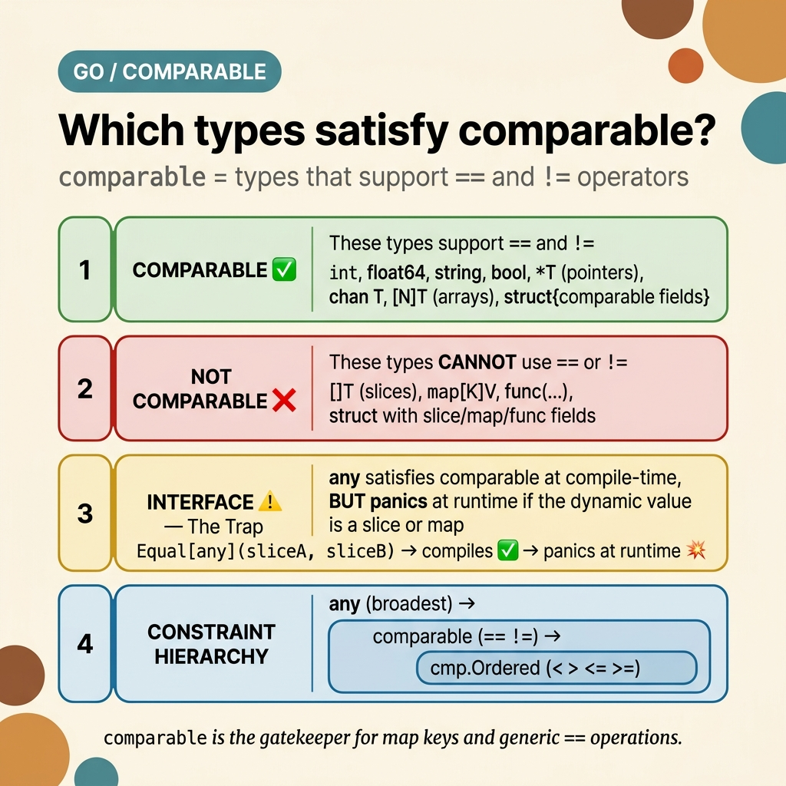
Cơ chế của Comparable — Người gác cổng cho các phím == và Map rất rõ ràng. Điều còn lại là tránh các bẫy biên dịch thành công nhưng thất bại ở runtime hoặc tạo ra kết quả không chính xác.
| # | Mức độ nghiêm trọng | Lỗi | Hậu quả | Sửa chữa |
|---|---|---|---|---|
| 1 | 🔴 Gây tử vong | Truyền giao diện (interface) giữ giá trị không phải comparable | Lỗi sập runtime (runtime panic) : comparing uncomparable Kiểu dữ liệu []int | Chỉ chuyển các loại bê tông comparable sang comparable generics ; sử dụng recover tại ranh giới |
| 2 | 🔴 Gây tử vong | NaN != NaN trong so sánh float | Set/ Map không thể tìm thấy NaN; tích lũy trùng lặp | Lọc NaN bằng math.IsNaN() trước khi chèn vào Set/ Map |
| 3 | 🟡 Chung | Con trỏ địa chỉ kiểm tra đẳng thức, không phải giá trị | &Point{1,2} != &Point{1,2} — cùng một dữ liệu, khác nhau các con trỏ | Dereference và so sánh giá trị hoặc sử dụng trực tiếp loại giá trị |
| 4 | 🟡 Chung | Thêm trường []byte hoặc map vào struct | Toàn bộ struct trở thành không- comparable — phá vỡ tất cả các lần sử dụng generic | Thay vào đó, hãy sử dụng [N]byte ( array ) hoặc thiết kế lại |
| 5 | 🟡 Chung | Khó hiểu comparable với cmp.Ordered | comparable chỉ cho phép == — không < , > , sắp xếp | Sử dụng cmp.Ordered khi bạn cần thao tác đặt hàng |
| 6 | 🔵 Nhỏ | comparable không bao gồm bool trong cmp.Ordered | Không thể sắp xếp booleans | bool thỏa mãn comparable nhưng không thỏa mãn cmp.Ordered - điều này đúng |
🔴 Cạm bẫy #1 — Cái bẫy Giao diện (interface) Đây chính là cạm bẫy nguy hiểm nhất. Vì Go 1.20, any đáp ứng comparable lúc biên dịch time . Nhưng nếu giá trị runtime bên trong giao diện (interface) là một slice , map hoặc hàm — toán tử == sẽ hoảng sợ.
``go
// This code COMPILES but PANICS:
var a, b any = []int{1, 2}, []int{1, 2}
fmt.Println(a == b) // 💥 panic: comparing uncomparable Kiểu dữ liệu []int
// Defense: never pass giao diện (interface) values to comparable generics
// unless you control the dynamic Kiểu dữ liệu.
`Quy tắc: Coi Equal [any](x, y) là "biên dịch- time không an toàn" — xem lại mọi trang web cuộc gọi để đảm bảo các loại động là comparable .
🔴 Cạm bẫy #2 — NaN phá vỡ mọi thứ
`go
nan := math.NaN()
set := NewSet(nan, nan, nan)
fmt.Println(set.Len()) // 3 — each NaN is "different" (NaN != NaN)
fmt.Println(set.Has(nan)) // false — can never find NaN
`Quy tắc: Lọc các giá trị NaN trước khi chèn vào cấu trúc dữ liệu dựa trên any comparable -.
🟡 Cạm bẫy #3 — Con trỏ Bình đẳng ≠ Bình đẳng về giá trị
`go
a := &User{Name: "Alice"}
b := &User{Name: "Alice"}
fmt.Println(a == b) // false — different memory addresses
set := NewSet(a, b)
fmt.Println(set.Len()) // 2 — two entries for "same" user
`Quy tắc: Sử dụng loại giá trị (không phải các con trỏ ) làm khóa Set/ Map khi bạn muốn sự bình đẳng dựa trên giá trị. Nếu bạn phải sử dụng các con trỏ , hãy tạo loại khóa tùy chỉnh (ví dụ: UserID string` ).
---
| Tài nguyên | Loại | Liên kết | Ghi chú |
|---|---|---|---|
| Go Thông số — Comparable | Chính thức | [go.dev/ref/spec#Comparisonoperators](https://go.dev/ref/spec#Comparisonoperators) | Nguồn sự thật về loại hỗ trợ == |
| Go Bản phát hành 1.20 — Comparable thay đổi | Chính thức | [go.dev/doc/go1.20#language](https://go.dev/doc/go1.20#language) | Sự thay đổi thông số kỹ thuật khiến any thỏa mãn comparable |
| Go Blog — Giới thiệu về Generics | Chính thức | [go.dev/blog/intro-generics](https://go.dev/blog/intro-generics) | Bao gồm các ràng buộc bao gồm comparable |
| cmp package | Chính thức | [pkg.go.dev/cmp](https://pkg.go.dev/cmp) | cmp.Ordered — ràng buộc đặt hàng được xây dựng dựa trên comparable |
---
Cốt lõi của Comparable — Người gác cổng cho các phím == và Map rất rõ ràng. Các nhánh bên dưới kết nối comparable với các chủ đề liền kề của nó.
| Gia hạn | Khi nào nên đọc tiếp | Cơ sở lý luận | Tệp/Liên kết |
|---|---|---|---|
| Generics — Tham số loại | Khi bạn cần ảnh generics đầy đủ | comparable là một hạn chế trong hệ thống generics rộng hơn | [02-generics.md](./02-generics.md) |
| Khẳng định kiểu (type assertion) & Embedding | Khi các giao diện (interface) tương tác với comparable | Bẫy giao diện (interface) tồn tại ở giao điểm của các giao diện (interface) và comparable | [03-Kiểu dữ liệu-assertion-embedding.md](./03-Kiểu dữ liệu-assertion-embedding.md) |
| Slices , Maps , Chuỗi | Khi bạn cần hiểu tại sao slices không comparable | Slice nội bộ giải thích tại sao == là không thể đối với slices | [01-slices-maps-strings.md](./01-slices-maps-strings.md) |
| cmp package | Khi bạn cần đặt hàng, không chỉ bình đẳng | cmp.Ordered mở rộng comparable với các toán tử < , > | [pkg.go.dev/cmp](https://pkg.go.dev/cmp) |
---
Điều hướng tuần tự: [← Khẳng định kiểu (type assertion) & Embedding](./03-Kiểu dữ liệu-assertion-embedding.md) · [→ Generics](./02-generics.md)
Bạn nhúng sync.Mutex trực tiếp vào struct và chuyển struct đó theo giá trị. Bản sao mutex — hai các goroutine hiện khóa hai mutex khác nhau và cuộc đua dữ liệu bắt đầu. Đây là lỗi phổ biến nhất khi nhà phát triển sử dụng embedding mà không hiểu ngữ nghĩa giá trị.
User , AdminUser , Product và AuditLog . Mọi loại đều cần ID , CreatedAt và UpdatedAt . Trong Java hoặc C#, bạn tạo BaseEntity và extends . Hai năm sau: hệ thống phân cấp sâu 5 lớp, BaseEntity có 20 phương pháp, các kỹ sư mới không thể biết nên ghi đè phương pháp nào và AdminUser extends User extends BaseEntity extends Auditable — một vấn đề kim cương. Tái cấu trúc chạm tới 200 tệp. Kỳ thi được nghỉ trong 3 ngày.
Go không có lớp và không có sự kế thừa (inheritance) . Thay vào đó: embedding — đặt BaseModel bên trong User thúc đẩy tất cả các trường và phương thức. user.ID , user.CreatedAt và user.Touch() hoạt động như thể chúng thuộc về User . Nhưng đây không phải "is-a" - đây là "has-a" với phương pháp quảng bá. Nó nhẹ, linh hoạt và loại bỏ vấn đề về kim cương.
Điều này nghe có vẻ rõ ràng - nhưng [[E44]]] thô ẩn giấu một cái bẫy: c2 := c1 sao chép struct , nhưng các trường slice và map chỉ sao chép tiêu đề của chúng. Cả structs hiện chia sẻ cùng một dữ liệu cơ bản. Lỗi này chỉ phát sinh trong quá trình sản xuất khi hai các goroutine sửa đổi bản sao được chia sẻ đồng thời. Chúng tôi mổ xẻ cái bẫy đó trong CÂU HỎI.
1.1 Struct Tính năng
| Tính năng | Mô tả | Ví dụ |
|---|---|---|
| Lĩnh vực | Thành viên dữ liệu nội bộ | Name string |
| Thẻ | Siêu dữ liệu rõ ràng (JSON, DB) | json:"name" |
| Embedding | Native Sự kết hợp (composition) (has-a) | gõ Quản trị viên struct { Người dùng } |
| Anonymous struct | Ephemeral Inline struct | struct { X, Y int }{1, 2} |
| Constructor | Idiomatic Factory function | func Người dùng mới(...) *Người dùng |
1.2 Thẻ cấu trúc (struct tags) — Reference Table
| Tag | Package | Mô tả chi tiết |
|---|---|---|
json:"name" | encoding/json | Binds JSON field name |
json:"-" | encoding/json | Forces field skip |
json:",omitempty" | encoding/json | Skips whenever giá trị mặc định (zero value) |
db:"column" | sqlx/pgx | Maps DB column name |
xác thực:"required" | validator | Applies Validation rules |
gorm :"primaryKey" | gorm | Installs ORM configuration |
1.3 Failure Modes
| Lỗi biên dịch / Runtime | Root Nguyên nhân gốc rễ | Hậu quả hệ thống | Giải pháp khắc phục |
|---|---|---|---|
| Shallow copy struct containing slices | c2 := c1 copies the slice header but shares the underlying array | Mutating c2.Tags[0] also mutates c1.Tags[0] | Deep copy: copy(dst, src) for slices, manual clone for maps |
| Embedding ≠ sự kế thừa (inheritance) | Developer assumes Quản trị viên "is-a" Người dùng | Quản trị viên is not assignable to a Người dùng biến | Use embedding for sự kết hợp (composition) (has-a) and các giao diện (interface) for tính đa hình (polymorphism) |
| Comparing struct with embedded slices | c1 == c2 Bối cảnh áp dụng fields include a slice | Lỗi biên dịch — slices are not comparable | Use phản ánh.DeepEqual() hoặc viết so sánh thủ công |
Struct tính năng, thẻ, chế độ lỗi - lý thuyết đã được đề cập. Bây giờ chúng ta hãy xem embedding hoạt động trực quan như thế nào và nó khác với sự kế thừa (inheritance) như thế nào.
---
Các mẫu ở trên nghe có vẻ rõ ràng - nhưng có một cái bẫy nghiêm trọng: quảng cáo struct được nhúng có thể gây ra xung đột tên phương thức im lặng và sự hài lòng của giao diện (interface) được nhúng có thể trở nên mờ đục. Cái bẫy đó xuất hiện trong PITFALS.
Mã nguồn & Các ví dụ minh họa
User struct với các thẻ JSON, hàm tạo NewUser() và NewUserWithOptions() cho các tham số tùy chọn.
Ví dụ: json:"-" ẩn trường Password khỏi đầu ra JSON. WithAge(30) chèn một tham số tùy chọn.> Takeaway: Struct + constructor = Go sự thay thế thành ngữ cho một lớp. json:"-" ẩn các trường nhạy cảm khỏi đầu ra JSON. Các tùy chọn chức năng cung cấp khả năng xây dựng linh hoạt mà không làm quá tải phương thức.Một hàm tạo duy nhất xử lý một struct . Nhưng điều gì xảy ra khi 5 loại đều cần các trường ID giống nhau, CreatedAt và UpdatedAt - bạn có sao chép-dán chúng vào mọi struct không? Không. Embedding giải quyết vấn đề này: khai báo BaseModel một lần, nhúng nó ở mọi nơi.
---
Cơ bản sự kết hợp (composition) là rõ ràng. Nhưng embedding có các quy tắc quảng cáo phức tạp - phương thức nào sẽ hiển thị và trường nào bị ẩn?
package main
import (
"encoding/json"
"fmt"
"time"
)
// ✅ Struct definition — fields + tags
type User struct {
ID int64 `json:"id"`
Email string `json:"email" validate:"required,email"`
FullName string `json:"full_name"`
Age int `json:"age,omitempty"`
Password string `json:"-"` // ✅ Never serialize
CreatedAt time.Time `json:"created_at"`
UpdatedAt time.Time `json:"updated_at"`
}
// ✅ Constructor pattern — idiomatic Go
func NewUser(email, name, password string) *User {
now := time.Now()
return &User{
Email: email,
FullName: name,
Password: password,
CreatedAt: now,
UpdatedAt: now,
}
}
// ✅ Functional options — flexible constructor
type UserOption func(*User)
func WithAge(age int) UserOption {
return func(u *User) { u.Age = age }
}
func WithID(id int64) UserOption {
return func(u *User) { u.ID = id }
}
func NewUserWithOptions(email, name string, opts ...UserOption) *User {
u := &User{
Email: email,
FullName: name,
CreatedAt: time.Now(),
}
for _, opt := range opts {
opt(u)
}
return u
}
func main() {
u1 := NewUser("alice@example.com", "Alice", "secret123")
u2 := NewUserWithOptions("bob@example.com", "Bob",
WithAge(30),
WithID(42),
)
// ✅ JSON marshal — Password excluded by json:"-"
data, _ := json.MarshalIndent(u1, "", " ")
fmt.Println(string(data))
fmt.Println(u2)
}User nhúng BaseModel → user.ID và user.SetTimestamps() được thăng cấp.
Ví dụ: Việc gọi u.SetTimestamps() đặt cả CreatedAt và UpdatedAt — sử dụng lại mã mà không cần sự kế thừa (inheritance) .> Tại sao lại nhúng thay vì sử dụng trường được đặt tên?
Trường được đặt tên base BaseModel yêu cầu u.base.ID và u.base.SetTimestamps() — dài dòng. Embedding ( BaseModel không có tên trường) thúc đẩy các trường và phương thức: u.ID và u.SetTimestamps() hoạt động trực tiếp. Cú pháp trông giống như sự kế thừa (inheritance) , nhưng cơ chế hoàn toàn là sự kết hợp (composition) .
Tại sao Go từ chối sự kế thừa (inheritance) ? Sự kế thừa (inheritance) tạo ra sự liên kết chặt chẽ (con cái phụ thuộc vào phần bên trong của cha mẹ), vấn đề về lớp cơ sở dễ vỡ (sửa đổi cha mẹ làm hỏng con cái) và sự mơ hồ kim cương (nhiều xung đột sự kế thừa (inheritance) ). Sự kết hợp (composition) giữ cho khớp nối lỏng lẻo, độ phân giải phương thức đơn giản (tra cứu theo chiều rộng, không có vtable) và chỉ rõ ràng khi cần.
User "has-a" BaseModel , không bao giờ "is-a". Tái sử dụng các trường và phương thức mà không cần ghép nối sự kế thừa (inheritance) . Embedding bao gồm việc sử dụng lại mã. Nhưng một điểm bất thường nguy hiểm ẩn bên dưới bề mặt: c2 := c1 có vẻ giống như một bản sao an toàn, nhưng khi struct chứa các trường slice hoặc map , cả hai structs đều chia sẻ cùng một dữ liệu cơ bản. Lỗi này đã được gieo vào trong các định nghĩa ở trên - bây giờ hãy xem nó bị hỏng ở runtime .--- Embedding quy tắc được bao gồm. Chuyển sang lãnh thổ Nâng cao: khả năng so sánh struct , bản sao nông và sâu và mẫu Clone() .
package main
import (
"fmt"
"time"
)
// ✅ Base model — reusable fields + methods
type BaseModel struct {
ID int64 `json:"id"`
CreatedAt time.Time `json:"created_at"`
UpdatedAt time.Time `json:"updated_at"`
}
func (b *BaseModel) SetTimestamps() {
now := time.Now()
if b.CreatedAt.IsZero() {
b.CreatedAt = now
}
b.UpdatedAt = now
}
// ✅ Embedding = composition (NOT inheritance!)
type User struct {
BaseModel // Embedded — fields/methods promoted
Email string `json:"email"`
FullName string `json:"full_name"`
}
type Product struct {
BaseModel
Name string `json:"name"`
Price float64 `json:"price"`
}
type AuditLog struct {
BaseModel
Action string `json:"action"`
UserID int64 `json:"user_id"`
TableName string `json:"table_name"`
}
func main() {
u := User{
Email: "alice@example.com",
FullName: "Alice",
}
// ✅ Promoted methods — call directly on User
u.SetTimestamps()
// ✅ Promoted fields — access directly
u.ID = 1 // Same as u.BaseModel.ID = 1
fmt.Println(u.ID, u.CreatedAt)
// ✅ Composition: User IS NOT a BaseModel
// User HAS a BaseModel — no "is-a" relationship
}Clone() .
Phương pháp tiếp cận: Structs chỉ hỗ trợ các trường comparable == . Structs với slices hoặc maps yêu cầu sao chép sâu thủ công.
Ví dụ: p1 == p2 hoạt động (tất cả các trường comparable ). c2 := c1 chia sẻ dữ liệu slice (bẫy sao chép nông). c1.Clone() tạo ra một bản sao độc lập an toàn.> Tại sao c2 := c1 lại gây ra lỗi?
Phép gán Go struct sao chép tất cả các trường theo giá trị. Nhưng tiêu đề slice là {con trỏ, len, cap} - sao chép tiêu đề có nghĩa là chia sẻ array cơ bản. Sửa đổi c2.Tags[0] sửa đổi chia sẻ array , điều này cũng thay đổi c1.Tags[0] . Maps hoạt động theo cách tương tự. Cách khắc phục: luôn sao chép sâu các trường loại tham chiếu ( slices , maps , các con trỏ ).
Khi nào nên sử dụng reflect.DeepEqual so với so sánh thủ công?
reflect.DeepEqual : thuận tiện, đệ quy, hoạt động với mọi loại. Sự cân bằng: chậm (chi phí phản ánh) và mù quáng về sự bình đẳng về ngữ nghĩa (hai dấu thời gian ở các múi giờ khác nhau biểu thị cùng một thời điểm). So sánh thủ công: nhanh chóng, cung cấp toàn quyền kiểm soát ngữ nghĩa. Trong mã sản xuất: sử dụng so sánh thủ công. Trong các thử nghiệm: reflect.DeepEqual hoặc assert.Equal đều được chấp nhận.
== chỉ hoạt động khi tất cả các trường là comparable (không có slices , maps hoặc hàm). Bẫy sao chép nông: các trường loại tham chiếu tiếp tục chia sẻ dữ liệu cơ bản sau khi gán. Triển khai Clone() cho any struct với các trường tham chiếu.Bây giờ bạn đã biết cách xác định, xây dựng, nhúng và sao chép sâu structs . Cái bẫy nguy hiểm nhất vẫn còn: lỗi sao chép nông cạn chỉ xuất hiện trong quá trình sản xuất khi hai các goroutine chia sẻ một bản sao struct .
---
package main
import "fmt"
// ✅ Comparable struct — all fields are comparable types
type Point struct {
X, Y int
}
// ❌ NOT comparable — has slice field
type Config struct {
Name string
Tags []string // slices are not comparable!
}
// ✅ Deep copy — manually copy reference types
func (c Config) Clone() Config {
tagsCopy := make([]string, len(c.Tags))
copy(tagsCopy, c.Tags)
return Config{
Name: c.Name,
Tags: tagsCopy,
}
}
func main() {
p1 := Point{1, 2}
p2 := Point{1, 2}
fmt.Println(p1 == p2) // true — struct comparison works
c1 := Config{Name: "app", Tags: []string{"go", "api"}}
c2 := c1 // ⚠️ Shallow copy — Tags shares underlying array!
c2.Tags[0] = "rust"
fmt.Println(c1.Tags) // [rust api] — c1 modified!
c3 := c1.Clone() // ✅ Deep copy
c3.Tags[0] = "python"
fmt.Println(c1.Tags) // [rust api] — c1 NOT modified
}Sơ đồ trực quan & Luồng hoạt động (Visual Support)
Ma sát tốn kém nhất với structs xuất phát từ việc coi embedding là sự kế thừa (inheritance) . Quyết định map bên dưới buộc phải kiểm tra mạnh mẽ hơn: bạn có cần quảng bá phương thức hay bạn cần một phụ thuộc được đặt tên có quyền truy cập rõ ràng? Hình: Một quyết định map phân chia bốn đường dẫn: các trường được đặt tên làm mặc định, embedding làm công cụ quảng bá có điều kiện, sự kế thừa (inheritance) -suy nghĩ như một bẫy logic và sao chép ngữ nghĩa làm rủi ro sản xuất.
Khi cây quyết định được định tuyến, phần mã bên dưới sẽ có thể thực hiện được. Đọc hàm tạo, nội dung nhúng và ví dụ sao chép sâu dưới dạng ba lần xác thực cho mô hình quyền sở hữu — chứ không phải dưới dạng bản trình diễn cú pháp bị ngắt kết nối.
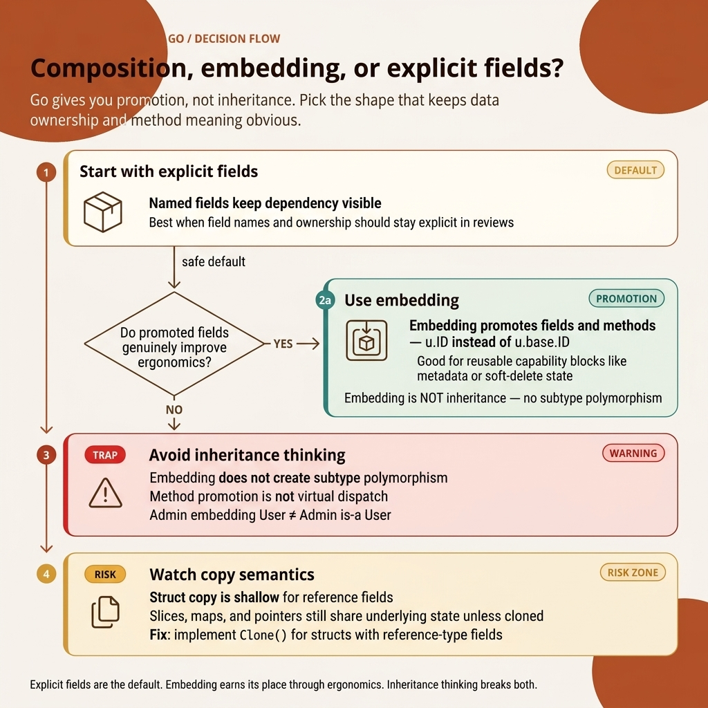
Cơ chế của Structs & Sự kết hợp (composition) rất rõ ràng. Mục tiêu còn lại là nhận ra nơi mã gần như chính xác kéo theo lỗi sự kết hợp (composition) hoặc xung đột phương thức im lặng vào sản xuất.
| # | Mức độ nghiêm trọng | Lỗi | Hậu quả | Sửa chữa |
|---|---|---|---|---|
| 1 | 🔴 Gây tử vong | Bản sao nông của structs với slices / maps | Dữ liệu cơ bản được chia sẻ → lỗi đột biến | Sao chép sâu qua phương thức Clone() |
| 2 | 🟡 Chung | Xử lý embedding là sự kế thừa (inheritance) | Kỳ vọng sai về tính đa hình (polymorphism) ; Admin không thể gán cho User | Sử dụng embedding cho sự kết hợp (composition) (has-a) và các giao diện (interface) cho tính đa hình (polymorphism) |
| 3 | 🟡 Chung | Thiếu thẻ JSON | Tên trường xuất ra dưới dạng FullName thay vì fullname | Thêm json:"snakecase" vào mọi trường được xuất |
| 4 | 🟡 Chung | Xung đột tên phương thức từ nhiều lần nhúng | Lỗi biên dịch khi 2 kiểu nhúng xác định cùng tên phương thức | Sử dụng đường dẫn rõ ràng: s.TypeA.Phương thức() |
| 5 | 🔵 Nhỏ | Xuất khẩu sự nhầm lẫn về khả năng hiển thị | Chữ thường id không được xuất → không thể truy cập được từ packages khác | Viết hoa cho công khai, viết thường cho riêng tư |
🔴 Cạm bẫy #1 — Bản sao nông âm thầm chia sẻ dữ liệu cơ bản user2 := user1 sao chép các trường struct — nhưng các trường slice / map chỉ sao chép tiêu đề của chúng ( con trỏ + len + cap). Sửa đổi user2.Tags[0] làm hỏng user1.Tags[0] . Lỗi này ẩn trong thử nghiệm vì các thử nghiệm sử dụng dữ liệu mới - quá trình sản xuất kích hoạt lỗi này khi hai các goroutine chia sẻ bản sao chép không chính xác struct .
``go
// ❌ Shallow copy — shared slice
u2 := u1
u2.Tags[0] = "changed" // u1.Tags[0] was also changed!
// ✅ Deep copy
u2 := u1
u2.Tags = slices.Clone(u1.Tags)
``Bây giờ bạn đã biết thiết kế struct , embedding , sao chép sâu và cạm bẫy nguy hiểm nhất. Các tài nguyên bên dưới đi sâu hơn vào bên trong bộ nhớ struct .
---
| Tài nguyên | Loại | Liên kết | Ghi chú |
|---|---|---|---|
| Go Structs | Chính thức | [go.dev/tour/moretypes/2](https://go.dev/tour/moretypes/2) | Struct hướng dẫn cơ bản |
| Struct Thẻ | Chính thức | [pkg.go.dev/reflect#StructTag](https://pkg.go.dev/reflect#StructTag) | Phân tích cú pháp thẻ Runtime và thông số format |
| Có hiệu lực Go | Chính thức | [go.dev/doc/effectivego#embedding](https://go.dev/doc/effectivego#embedding) | mẫu Sự kết hợp (composition) và embedding |
---
Cơ chế cốt lõi của Structs & Sự kết hợp (composition) được đề cập. Các tài nguyên bên dưới mở rộng thiết kế struct vào sản xuất: thẻ khai báo, hàm tạo linh hoạt và giao diện (interface) dựa trên tính đa hình (polymorphism) .
| Gia hạn | Khi nào nên đọc tiếp | Cơ sở lý luận | Tệp/Liên kết |
|---|---|---|---|
| Thẻ, Tùy chọn & Builder | Các hàm tạo linh hoạt, nội bộ thẻ struct | Tùy chọn chức năng, mẫu builder , hệ thống thẻ dựa trên phản ánh | [02-tags-options-builder.md](./02-tags-options-builder.md) |
| Các giao diện (interface) | Tính đa hình (polymorphism) trong Go | Các giao diện (interface) là cách tiếp cận của Go đối với tính đa hình (polymorphism) — thay thế sự kế thừa (inheritance) | [../các giao diện (interface)/01-ngầm định (implicit)-io-patterns.md](../các giao diện (interface)/01-ngầm định (implicit)-io-patterns.md) |
| Các con trỏ & Bộ nhớ | Căn chỉnh bố cục, đệm | unsafe.Sizeof , căn chỉnh trường, thiết kế thân thiện với bộ đệm struct | [../basics/04-các con trỏ-memory.md](../basics/04-các con trỏ-memory.md) |
---
Điều hướng tuần tự: [← Functions](../functions/) · [→ Tags & Options](./02-tags-options-builder.md)
Thẻ json:"-" bị thiếu trên trường Password làm rò rỉ thông tin đăng nhập trong mọi phản hồi API. Một lỗi đánh máy trong json:"naem" đã âm thầm loại bỏ một trường khỏi đầu ra JSON. Cả hai lỗi đều không tạo ra cảnh báo biên dịch- time - thẻ struct là các chuỗi thô được phân tích cú pháp bằng sự phản chiếu tại runtime .
Thẻ Struct kiểm soát cách các hệ thống bên ngoài (bộ mã hóa JSON, ORM, trình xác thực) diễn giải các trường struct . Các tùy chọn chức năng thay thế việc nạp chồng hàm tạo - mỗi tùy chọn là một closure làm thay đổi cấu hình mặc định. Phương thức chuỗi mẫu Builder gọi để tập hợp các đối tượng phức tạp, trì hoãn việc xác thực đến bước Build() cuối cùng.
Struct Giải phẫu thẻ
``text
Kiểu dữ liệu User struct {
ID uint json:"id" gorm:"primaryKey" validate:"required"
// ↑json tag ↑gorm tag ↑validate tag
}
``### Hệ thống thẻ — Bảng tham khảo
| Hệ thống thẻ | Package | Mục đích |
|---|---|---|
json:"name" | encoding/json | Ánh xạ tên trường JSON |
gorm:"column" | gorm.io/gorm | Liên kết cột Database |
validate:"required" | go-playground/validator | Quy tắc xác thực đầu vào |
form:"field" | Chất xơ/gin | Liên kết biểu mẫu/truy vấn HTTP |
env:"VAR" | caarlos0/env | Ràng buộc biến môi trường |
Thẻ, tùy chọn, builder — ba mẫu, một mục tiêu chung: kiểm soát cách structs tương tác với thế giới bên ngoài hệ thống loại của Go . Hình ảnh bên dưới maps khi nào cần tiếp cận từng cái.
Mã nguồn & Các ví dụ minh họa
json:"-" để loại trừ mật khẩu và omitempty để bỏ qua nil các con trỏ .
Độ phức tạp: Cơ bản> Takeaway: json:"-" ngăn trường xuất hiện trong đầu ra JSON. omitempty bỏ qua các trường có giá trị bằng 0. Thẻ là chuỗi - trình biên dịch không thể bắt lỗi chính tả. Chạy go vet để xác thực cú pháp thẻ.package main
import (
"encoding/json"
"fmt"
"strings"
"time"
)
type User struct {
ID uint `json:"id" gorm:"primaryKey"`
Name string `json:"name" gorm:"size:100" validate:"required"`
Password string `json:"-" gorm:"size:255"` // Hidden from JSON output
Bio *string `json:"bio,omitempty"` // Skipped when nil
CreatedAt time.Time `json:"created_at" gorm:"autoCreateTime"`
}
func main() {
bio := "Gopher limits API logic"
user := User{
ID: 42,
Name: "Alice",
Password: "super-secret",
Bio: &bio,
CreatedAt: time.Now(),
}
data, err := json.MarshalIndent(user, "", " ")
if err != nil {
panic(err)
}
fmt.Println(string(data))
fmt.Println("Password leaked?", strings.Contains(string(data), "super-secret"))
}func(*Server) closure đặt một trường. Hàm tạo áp dụng các giá trị mặc định trước, sau đó lặp lại các tùy chọn.
Độ phức tạp: Trung cấp> Bài học rút ra: Các tùy chọn chức năng tách biệt mối quan tâm về cấu hình khỏi hàm tạo. Việc thêm tùy chọn mới không làm thay đổi hàm tạo signature — khả năng tương thích ngược được giữ nguyên theo mặc định.package main
import (
"fmt"
"time"
)
type Server struct {
host string
port int
readTimeout time.Duration
enableTLS bool
}
// Option is a function that modifies Server config.
type Option func(*Server)
func WithPort(port int) Option {
return func(s *Server) {
if port > 0 {
s.port = port
}
}
}
func WithTLS() Option {
return func(s *Server) { s.enableTLS = true }
}
// NewServer creates a Server with sensible defaults, then applies options.
func NewServer(host string, opts ...Option) *Server {
s := &Server{
host: host,
port: 8080,
readTimeout: 15 * time.Second,
}
for _, opt := range opts {
opt(s)
}
return s
}
func main() {
customServer := NewServer("0.0.0.0", WithPort(3000), WithTLS())
fmt.Printf("Server configured on %s:%d\n", customServer.host, customServer.port)
}*QueryBuilder cho chuỗi. Build() xác thực các trường bắt buộc trước khi tạo đầu ra.
Độ phức tạp: Nâng cao> Takeaway: Mẫu Builder trì hoãn xác thực thành Build() , ngăn các đối tượng được xây dựng một phần thoát ra. Mỗi phương thức xâu chuỗi sẽ tích lũy trạng thái; xác nhận chạy một lần ở cuối.package main
import (
"errors"
"fmt"
"strings"
)
type QueryBuilder struct {
table string
conditions []string
limit int
}
func NewQuery(table string) *QueryBuilder {
return &QueryBuilder{table: table}
}
func (q *QueryBuilder) Where(condition string) *QueryBuilder {
q.conditions = append(q.conditions, condition)
return q // Returns the same pointer — enables method chaining
}
func (q *QueryBuilder) Limit(n int) *QueryBuilder {
q.limit = n
return q
}
// Build assembles the final SQL string and validates required fields.
func (q *QueryBuilder) Build() (string, error) {
if q.table == "" {
return "", errors.New("table name required")
}
sql := "SELECT * FROM " + q.table
if len(q.conditions) > 0 {
sql += " WHERE " + strings.Join(q.conditions, " AND ")
}
if q.limit > 0 {
sql += fmt.Sprintf(" LIMIT %d", q.limit)
}
return sql, nil
}
func main() {
sql, err := NewQuery("users").Where("role = admin").Limit(20).Build()
if err != nil {
panic(err)
}
fmt.Println(sql)
}Sơ đồ trực quan & Luồng hoạt động (Visual Support)
Mỗi thẻ Struct , tùy chọn chức năng và trình tạo đều có một chế độ lỗi riêng biệt.
| # | Mức độ nghiêm trọng | Khiếm khuyết | Sửa chữa |
|---|---|---|---|
| 1 | 🔴 Gây tử vong | Thiếu json:"-" trên các trường nhạy cảm (mật khẩu, mã thông báo) làm rò rỉ thông tin đăng nhập trong phản hồi API | Kiểm tra tất cả các trường struct chạm vào phản hồi HTTP — thêm json:"-" vào mọi trường bí mật |
| 2 | 🟡 Chung | Lỗi đánh máy thẻ ( json:"naem" thay vì json:"name" ) âm thầm loại bỏ trường khỏi đầu ra JSON | Chạy go vet trên mọi bản dựng - nó bắt các thẻ struct không đúng định dạng |
| 3 | 🟡 Chung | Việc sử dụng omitempty trên các trường bool sẽ làm giảm giá trị false — máy khách không nhận được trường nào thay vì false | Tránh omitempty trên các trường boolean trong đó false mang ý nghĩa ngữ nghĩa |
| Tài nguyên | Liên kết |
|---|---|
| Struct Thẻ | [pkg.go.dev/reflect#StructTag](https://pkg.go.dev/reflect#StructTag) |
| Có hiệu lực Go | [go.dev/doc/effectivego#embedding](https://go.dev/doc/effectivego#embedding) |
---
func(http.Handler) http.Handler - nhưng hàm đó phải "ghi nhớ" trạng thái: bộ đếm, cấu hình và bộ ghi nhật ký. Đây là nơi closures tỏa sáng: một chức năng mang môi trường sống của chính nó.
Các hàm Go là công dân hạng nhất: chúng có thể được gán cho các biến, được truyền dưới dạng đối số hoặc được trả về từ các hàm khác. closure là một hàm được kết hợp với các biến đã nắm bắt của nó - một cấu trúc đủ mạnh để triển khai phần mềm trung gian, mẫu factory , trình xử lý sự kiện và mẫu tùy chọn mà không cần các lớp hoặc đối tượng. Phương thức receivers chi phối một thứ hoàn toàn khác: value receivers sử dụng bản sao, trong khi con trỏ receivers sử dụng tham chiếu. Sự nhầm lẫn giữa hai điều này là nguyên nhân sâu xa của vô số lỗi khó nắm bắt.
Tính năng chức năng
Các hàm Go sở hữu 6 tính năng khiến chúng trở thành công dân hạng nhất thực sự:
| Tính năng | Mô tả | Ví dụ |
|---|---|---|
| Trả lại nhiều lần | Trả về nhiều giá trị | func() (int, Lỗi biên dịch / Runtime) |
| Trả về có tên | Giá trị trả về được đặt tên | func() (n int, err Lỗi biên dịch / Runtime) |
| Thay đổi | Đối số biến | func(nums ...int) |
| Hạng nhất | Gán cho biến | fn := func() {} |
| Closure | Nắm bắt các biến bên ngoài | func() { x++ } |
| Defer | Thực hiện khi trở lại | defer f.Close() |
Tại sao nhiều trả về? Go thiếu ngoại lệ — lỗi phải được trả về rõ ràng dưới dạng giá trị thứ hai. Mẫu (result, Lỗi biên dịch / Runtime) buộc người gọi phải xử lý lỗi một cách rõ ràng thay vì để chúng lọt qua như các khối thử/bắt bị lãng quên.
Phương thức Receivers Lựa chọn giữa Value vs [[E35]]] receiver là một trong những quyết định quan trọng nhất khi xác định một phương thức trong Go :
| Receiver | Cú pháp | Sửa đổi? | Sao chép? | Sử dụng khi |
|---|---|---|---|---|
| Giá trị | func (s Struct) Phương thức() | ❌ | Sao chép | Chỉ đọc, nhỏ structs |
| Con trỏ | func (s *Struct) Phương thức() | ✅ | Con trỏ | Đột biến, lớn structs |
Tại sao không phải lúc nào cũng sử dụng con trỏ receivers ? Giá trị receivers có một lợi thế khác biệt: tối ưu hóa trình biên dịch - không cần thoát heap , không cần theo dõi thu gom rác. Đối với [[E40]]] nhỏ, chỉ đọc, giá trị receivers nhanh hơn và ngầm thread -an toàn.
---
Lý thuyết đã rõ ràng — bây giờ chúng ta hãy xem cách cơ chế chụp closure và [[E30]]] hoạt động trực quan.
Những khái niệm này trông có vẻ đơn giản — nhưng những cái bẫy chết người ẩn nấp: closure nắm bắt việc biến các vòng lặp thành các mối nguy tham chiếu và phương pháp các giao diện (interface) đánh giá khác nhau giữa các con trỏ so với các giá trị. Những cái bẫy đó được giải nén trong những cái bẫy.
Mã nguồn & Các ví dụ minh họa
Bạn gọi os.Open(path) và nhận được 2 giá trị: Đường dẫn tệp và Lỗi biên dịch / Runtime . Nếu đến từ Java hoặc Python, bạn đã quen với việc thử/bắt - nhưng Go không có ngoại lệ. Tại sao? Bởi vì các ngoại lệ có thể bị "quên" - không có gì buộc bạn phải viết khối thử/bắt đó. Go bắt buộc xử lý lỗi rõ ràng thông qua nhiều lần trả về (result, Lỗi biên dịch / Runtime) .
Kết hợp các kết quả trả về được đặt tên cho các phép tính phức tạp và biến đổi ...T cho danh sách đối số linh hoạt.
Đầu vào: divide(10, 3) · Đầu ra: (3.33, nil) · divide(10, 0) · Đầu ra: (0, "division by zero")> Tại sao Go thiếu ngoại lệ?
(result, Lỗi biên dịch / Runtime) buộc người gọi phải xử lý lỗi một cách rõ ràng — bạn không thể "quên" một lần thử/bắt. Trả về được đặt tên rất hữu ích cho các hàm phức tạp, nhưng trả về trần trụi (gọi return mà không có đối số) có thể gây nhầm lẫn — hãy sử dụng chúng một cách tiết kiệm và chỉ trong các hàm ngắn.(result, Lỗi biên dịch / Runtime) là thành ngữ Go . Variadic ...T chấp nhận 0 hoặc nhiều đối số - bạn có thể trải rộng slice bằng cách sử dụng nums... . Trả về được đặt tên tổ chức các phép tính phức tạp nhưng tránh trả về trần trụi trong các hàm dài.
Caveat: Trả về được đặt tên khởi tạo các biến có giá trị 0 khi bắt đầu hàm — đừng quên gán giá trị trước khi trả về. Biến thể lây lan với append(a, b...) — quên ... dẫn đến lỗi biên dịch.
Khi nào nên sử dụng: Nhiều lần trả về cho hàm any có thể bị lỗi. Biến đổi cho các chức năng tiện ích (như trình ghi nhật ký hoặc trình định dạng). Trả về được đặt tên cho các hàm trả về 3 giá trị trở lên.
Nhiều trả về cung cấp khả năng xử lý lỗi rõ ràng. Nhưng khi bạn cần "ghi nhớ" trạng thái của nhiều cuộc gọi — bộ đếm, cấu hình, chuỗi xử lý — closures là giải pháp.
package main
import (
"errors"
"fmt"
)
// ✅ Multiple returns — idiomatic Go error handling
func divide(a, b float64) (float64, error) {
if b == 0 {
return 0, errors.New("division by zero")
}
return a / b, nil
}
// ✅ Named returns — useful for complex functions
func stats(nums []int) (min, max, sum int) {
if len(nums) == 0 {
return
}
min, max = nums[0], nums[0]
for _, n := range nums {
if n < min { min = n }
if n > max { max = n }
sum += n
}
return // naked return — returns named values implicitly
}
// ✅ Variadic function
func sumAll(nums ...int) int {
total := 0
for _, n := range nums {
total += n
}
return total
}
func main() {
result, err := divide(10, 3)
if err != nil {
fmt.Println("Error:", err)
return
}
fmt.Println("Result:", result)
min, max, sum := stats([]int{3, 1, 4, 1, 5, 9, 2, 6})
fmt.Printf("min=%d max=%d sum=%d\n", min, max, sum)
fmt.Println(sumAll(1, 2, 3, 4, 5)) // 15
nums := []int{10, 20, 30}
fmt.Println(sumAll(nums...)) // Spread slice
}Bạn cần triển khai bộ giới hạn tốc độ cho máy chủ HTTP. Mỗi điểm cuối yêu cầu một bộ đếm và cấu hình riêng biệt nhưng vẫn sử dụng logic đếm giống hệt nhau. Việc tạo RateLimiter struct cho mọi điểm cuối là một công việc nặng nhọc. Closures giải quyết vấn đề này một cách tinh tế: func makeRateLimiter(limit int) func() bool — mỗi lệnh gọi tới makeRateLimiter(100) mang lại một hàm "ghi nhớ" giới hạn và bộ đếm cụ thể của chính nó.
Mẫu này mở rộng sang phần mềm trung gian (trình xử lý gói), trình vòng lặp (độ phân giải bước trạng thái) và nhà máy (tạo hàm dựa trên cấu hình).
Đầu vào: multiplier(3)(5) · Đầu ra: 15 — closure chụp factor=3 từ phạm vi bên ngoài> Tại sao closures chụp tham chiếu thay vì sao chép giá trị?
counter++ ) sẽ không bao giờ phản ánh trong các lệnh gọi trong tương lai. Go closures capture các biến (theo tham chiếu), không phải giá trị — đây là lý do tại sao fibonacci() hoạt động chính xác: với mỗi lệnh gọi, a và b được cập nhật tuần tự.apply ) bật map /các mẫu bộ lọc. Các mẫu phần mềm trung gian bao bọc logic xung quanh các trình xử lý - một mô hình cực kỳ phổ biến trong các khung HTTP.
Caveat: Closures chụp biến (tham chiếu) — không phải giá trị. Trong các vòng lặp (trước Go 1.22): tất cả closures được sinh ra sẽ tham chiếu cùng một lần lặp biến cuối cùng trừ khi bạn buộc phải sao chép nó qua v := v .
Khi nào nên sử dụng: Bộ giới hạn tốc độ, phần mềm trung gian, bộ lặp, nhà máy. Bất cứ khi nào bạn cần đóng gói trạng thái mà không cần khai báo rõ ràng struct . Closures giữ trạng thái trong một hàm. Khi trạng thái cần được liên kết với một loại dữ liệu cụ thể, phương thức receivers sẽ đính kèm hành vi trực tiếp vào structs .
package main
import "fmt"
// ✅ Function as parameter (higher-order)
func apply(nums []int, fn func(int) int) []int {
result := make([]int, len(nums))
for i, n := range nums {
result[i] = fn(n)
}
return result
}
// ✅ Function returning function (closure factory)
func multiplier(factor int) func(int) int {
return func(n int) int {
return n * factor // ✅ Captures `factor` from outer scope
}
}
// ✅ Closure as iterator
func fibonacci() func() int {
a, b := 0, 1
return func() int {
a, b = b, a+b
return a
}
}
// ✅ Middleware pattern (very common in Go)
type Handler func(string) string
func withLogging(h Handler) Handler {
return func(input string) string {
fmt.Printf("Input: %s\n", input)
result := h(input)
fmt.Printf("Output: %s\n", result)
return result
}
}
func main() {
// ✅ Higher-order functions
doubled := apply([]int{1, 2, 3}, func(n int) int { return n * 2 })
fmt.Println(doubled) // [2 4 6]
// ✅ Closure factory
triple := multiplier(3)
fmt.Println(triple(5)) // 15
// ✅ Iterator pattern
fib := fibonacci()
for i := range 10 { // Go 1.22+
fmt.Print(fib(), " ")
}
fmt.Println() // 1 1 2 3 5 8 13 21 34 55
// ✅ Middleware
handler := withLogging(func(s string) string {
return "Hello, " + s
})
handler("Go")
}Nhưng việc quyết định giữa giá trị và con trỏ receivers không chỉ là về đột biến. Quy tắc thiết lập phương thức yêu cầu sự hài lòng giao diện (interface) : loại giá trị chỉ đáp ứng các giao diện (interface) được trang bị giá trị receivers . Trộn receivers có nghĩa là loại của bạn không triển khai các giao diện (interface) một cách nhất quán.
Đầu vào: p.Translate(1, 1) với con trỏ receiver · Đầu ra: p được sửa đổi tại chỗ> Tại sao bạn nên sử dụng con trỏ receivers cho tất cả các phương thức nếu chỉ có một phương thức yêu cầu nó?
*T " — loại bỏ nhu cầu đi sâu và kiểm tra độ an toàn của từng thao tác riêng biệt.StringSlice ) để nối thêm hành vi dành riêng cho miền.
Caveat: Các phương thức có giá trị receivers thỏa mãn các giao diện (interface) — nhưng các phương thức có con trỏ receivers KHÔNG tự động đáp ứng chúng cho các loại giá trị. Việc trộn lẫn receivers tạo ra độ tin cậy giao diện (interface) lởm chởm. Nguyên tắc nhỏ: nếu 1 phương thức cần con trỏ , hãy nâng tất cả chúng lên con trỏ receivers .
Khi nào nên sử dụng: Con trỏ receivers bao gồm khoảng ≥90% loại hình sản xuất. Giá trị dự trữ receivers dành riêng cho các loại nhỏ, không thể thay đổi trong đó thread -safety là rất quan trọng.
---
package main
import (
"fmt"
"math"
)
type Point struct {
X, Y float64
}
// ✅ Value receiver — does NOT modify original
func (p Point) Distance(other Point) float64 {
dx := p.X - other.X
dy := p.Y - other.Y
return math.Sqrt(dx*dx + dy*dy)
}
// ✅ Pointer receiver — CAN modify original
func (p *Point) Translate(dx, dy float64) {
p.X += dx
p.Y += dy
}
// ✅ Stringer interface (like toString)
func (p Point) String() string {
return fmt.Sprintf("(%g, %g)", p.X, p.Y)
}
// ✅ Method on custom type (non-struct)
type StringSlice []string
func (ss StringSlice) Contains(target string) bool {
for _, s := range ss {
if s == target {
return true
}
}
return false
}
func main() {
p := Point{3, 4}
origin := Point{0, 0}
fmt.Println(p.Distance(origin)) // 5
p.Translate(1, 1)
fmt.Println(p) // (4, 5) — modified!
tags := StringSlice{"go", "rust", "python"}
fmt.Println(tags.Contains("go")) // true
fmt.Println(tags.Contains("java")) // false
}Sơ đồ trực quan & Luồng hoạt động (Visual Support)
Chủ đề này hiếm khi bị phá vỡ vì cú pháp. Nó bị hỏng do trạng thái ẩn: nội dung closure giữ lại, nội dung receiver sao chép và phương thức mà giao diện (interface) nhìn thấy. Hình ảnh bên dưới hợp nhất ba nguồn gây nhầm lẫn đó thành một mô hình tinh thần.
Hình: Thẻ mô hình trí tuệ của closures và các phương thức được đặt cạnh nhau làm nổi bật bốn khái niệm chính: closure chụp, giá trị receivers , con trỏ receivers và kiểu phần mềm trung gian sự kết hợp (composition) .
Khi trạng thái ẩn được hiển thị, mã bên dưới sẽ trở nên hiệu quả hơn nhiều. Bạn sẽ đọc từng ví dụ như một bài kiểm tra về quyền sở hữu và ngữ nghĩa đột biến, thay vì chỉ khai báo hàm độc lập.
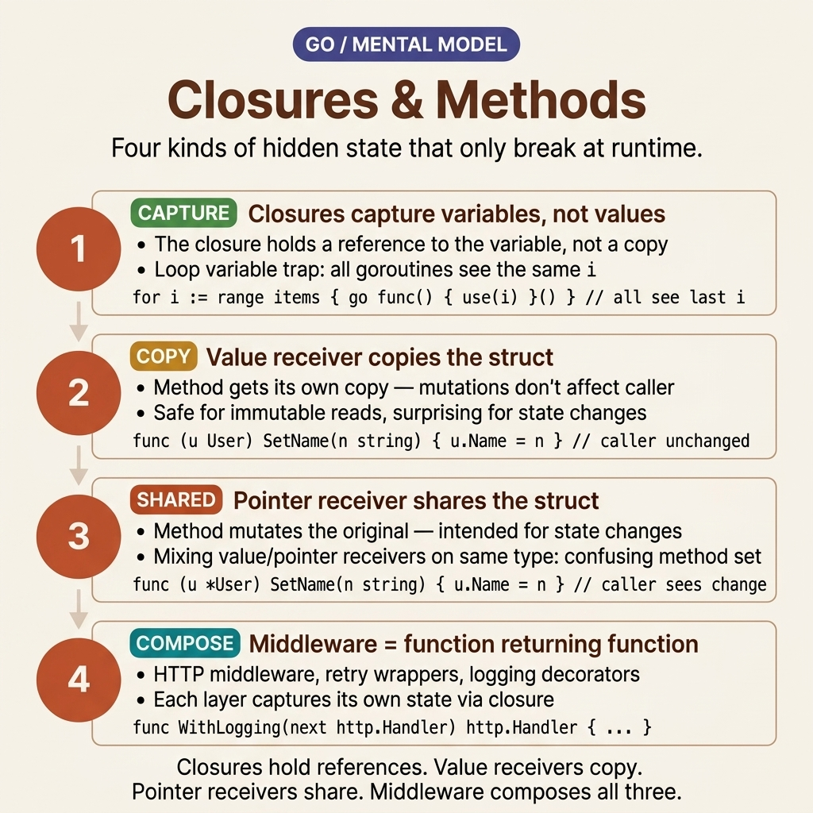
Cơ chế cốt lõi của Hàm - Closures , Biến thể, Phương thức phải rõ ràng. Việc còn lại là nhận ra cú pháp có vẻ gần đúng nhưng cuối cùng lại đưa các lỗi đột biến thầm lặng vào thẳng quá trình sản xuất.
| # | Mức độ nghiêm trọng | Lỗi | Hậu quả | Sửa chữa |
|---|---|---|---|---|
| 1 | 🔴 Gây tử vong | Giá trị receiver dành cho đột biến | Các thay đổi bị mất — phương thức làm thay đổi một bản sao bị cô lập | Thực thi con trỏ receiver *T |
| 2 | 🔴 Gây tử vong | Nil con trỏ receiver gặp sự cố | Lỗi sập runtime (runtime panic) | Xác minh if t == nil khi bắt đầu phương thức |
| 3 | 🟡 Chung | Giá trị hỗn hợp và con trỏ receivers | Sự hài lòng không nhất quán giao diện (interface) | Chọn 1 phong cách thống nhất cho toàn bộ kiểu |
| 4 | 🟡 Chung | Closure chụp biến vòng lặp (pre Go 1.22) | Tất cả [[E26]]] sinh ra đều trỏ đến biến lặp cuối cùng | Thêm v := v bên trong thân vòng lặp để buộc sao chép |
| 5 | 🔵 Nhỏ | Trả về được đặt tên kết hợp với defer | defer âm thầm sửa đổi tên trả về | Chuẩn hóa logic thứ tự thực hiện của bạn |
🔴 Cạm bẫy #1 — Đột biến giá trị receivers "nuốt chửng"
Có lẽ lỗi phổ biến nhất mà người mới gặp phải. Bạn viết một phương thức để sửa đổi một trường, quá trình kiểm tra sẽ chạy - nhưng trường này vẫn không thay đổi:``go
Kiểu dữ liệu User struct{ Name string }
func (u User) SetName(name string) { u.Name = name } // ❌ value receiver = pure copy
func (u *User) SetName(name string) { u.Name = name } // ✅ con trỏ receiver
`A value receiver hoạt động trên bản sao của struct . Các sửa đổi sẽ chết ngay khi phạm vi phương thức kết thúc - người gọi không bao giờ quan sát các thay đổi. Trình biên dịch không đưa ra cảnh báo nào vì mã này hợp lệ về mặt cú pháp.
🔴 Cạm bẫy #2 — Nil con trỏ receiver hoảng loạn Go cho phép nil các con trỏ gọi các phương thức - nhưng ngay khi phương thức đó cố gắng truy cập vào một trường cấu trúc, nó sẽ hoảng sợ:
`go
var u *User // nil
u.SetName("Alice") // panic: nil con trỏ dereference
`Khắc phục: Luôn kiểm tra nil trong nội dung phương thức: if u == nil { return }` . Ngoài ra, hãy đảm bảo các nhà xây dựng của bạn từ chối hoặc phá vỡ các ranh giới trả về nil một cách phổ biến.
---
Bạn đã khám phá Closures & Các phương thức từ những điều cơ bản cơ bản cho đến hàm bậc cao hơn các mẫu thiết kế (design patterns) . Các tài nguyên dưới đây sẽ đưa bạn đi sâu hơn.
| Tài nguyên | Loại | Liên kết | Ghi chú |
|---|---|---|---|
| Go Hàm | Hướng dẫn | [go.dev/tour/moretypes/24](https://go.dev/tour/moretypes/24) | Giá trị hàm, closures |
| Phương pháp | Hướng dẫn | [go.dev/tour/methods/1](https://go.dev/tour/methods/1) | Phương thức receivers |
| Có hiệu lực Go | Chính thức | [go.dev/doc/effectivego#functions](https://go.dev/doc/effectivego#functions) | Thực tiễn tốt nhất |
| Go Thông số | Chính thức | [go.dev/ref/spec#Functiontypes](https://go.dev/ref/spec#Functiontypes) | Đặc tả ngôn ngữ |
---
Nền tảng của Hàm - Closures , Biến thể, Phương thức đã được giải quyết. Các phần mở rộng bên dưới kết nối các giá trị hàm và phương thức receivers với hệ thống loại rộng hơn, ranh giới giao diện (interface) và vòng đời sản xuất.
| Gia hạn | Khi nào | Tại sao | Tệp/Liên kết |
|---|---|---|---|
| Struct Thẻ, Tùy chọn & Builder | Khi người xây dựng cần cấu hình phức tạp | Nơi closures và các phương thức đáp ứng thiết kế API | [../structs/02-tags-options-builder.md](../structs/02-tags-options-builder.md) |
| Các giao diện (interface) — Ẩn, io.Reader/Writer | Khi các loại hàm phải vượt qua các dòng phụ thuộc | Kết nối các giá trị hàm vào cơ chế Go của giao diện (interface) | [../các giao diện (interface)/01-ngầm định (implicit)-io-patterns.md](../các giao diện (interface)/01-ngầm định (implicit)-io-patterns.md) |
| Khẳng định kiểu (type assertion) , Embedding & Bí danh | Khi các bộ phương thức và sự hài lòng của giao diện (interface) cảm thấy mơ hồ | Cơ chế loại chạy bên dưới hành vi receiver | [../types/03-Kiểu dữ liệu-assertion-embedding.md](../types/03-Kiểu dữ liệu-assertion-embedding.md) |
| Generics — Các ràng buộc và mẫu | Xây dựng những người trợ giúp bậc cao có thể tái sử dụng an toàn kiểu | Chuyển đổi tự nhiên sau closures cho các tiện ích có thể tái sử dụng | [../types/02-generics.md](../types/02-generics.md) |
| Bối cảnh | Khi phần mềm trung gian closure yêu cầu hết thời gian chờ hoặc hủy | Nơi logic chức năng đáp ứng vòng đời yêu cầu | [../../đồng thời (concurrency)/03-context.md](../../đồng thời (concurrency)/03-context.md) |
Điều hướng: [← Types](../types/README.md) · [→ strings](./02-strings.md)
strings.Contains(), strings.Split(), strings.ReplaceAll() — Go's standard library covers almost every string operation a developer needs. However, Go strings are UTF-8 byte slices: len("Hello") returns 10 (bytes), not 8 (runes).
Content-Kiểu dữ liệu field, trim excess whitespace, split the header value, replace template placeholders, and verify the email domain. All of these are string operations — and they appear absolutely everywhere in backend code.
The strings package is the all-in-one toolkit for common string operations. But there is one crucial rule you must internalize: Go strings are immutable — you cannot modify a string once it is created. Every operation like Replace, ToUpper, or Trim allocates and returns a brand-new string. This fundamentally impacts performance Bối cảnh áp dụng concatenating strings inside loops — which is exactly why strings.Builder exists.
Go String Characteristics
| Characteristic | Chi tiết kỹ thuật |
|---|---|
| Encoding | UTF-8 by default |
| Immutable | Unchangeable — every operation allocates a new string |
| Kiểu dữ liệu | string — a read-only sequence of bytes |
| Rune | rune (alias for int32) — represents 1 Unicode code point |
| Giá trị mặc định (zero value) | "" (empty string) |
| Comparable | Can be compared with ==, <, > |
Function Families in strings
| Family | Primary Functions |
|---|---|
| Search | Contains, HasPrefix, HasSuffix, Index, Count |
| Split/Join | Split, SplitN, Fields, Join |
| Transform | ToUpper, ToLower, Title, Map |
| Trim | Trim, TrimSpace, TrimPrefix, TrimSuffix, TrimLeft/Right |
| Replace | Replace, ReplaceAll, NewReplacer |
| Builder | strings.Builder — efficient string building and concatenation |
| Reader | strings.NewReader — creates an io.Reader from a string |
---
The organization above shows what is available — but Bối cảnh áp dụng facing a specific task, you still have to choose: Contains or Index? Split or Fields? The decision tree below answers that in 5 seconds.
These string functions look friendly — but severe performance traps lurk: string concatenation inside loops causes O(n²) complexity due to immutability, and len() returns the byte count, not the rune count. Those traps are unpacked in CẠM BẪY.
Mã nguồn & Các ví dụ minh họa
You receive user input: an email address. You need to validate it: does it contain an @? Does it start with a whitespace? Does it end with .com? Previously you might write a regex — but strings.Contains, strings.HasPrefix, and strings.HasSuffix are entirely sufficient.
The strings package provides search and check functions optimized for UTF-8, avoiding regex overhead.
Input: strings.Contains("hello@go.dev", "@") · Output: true
Contains(s, substr) checks the entire substring. ContainsAny(s, chars) searches for any single character from the set. EqualFold provides case-insensitive comparison without ToLower() — faster because no new string is allocated.Contains for substrings, ContainsAny for character sets, and EqualFold for case-insensitive checks. Count tallies non-overlapping occurrences.
Caveat: Contains("", "") returns true — the empty string is universally deemed to be "contained" within any string. Count is strictly non-overlapping: Count("aaa", "aa") equals 1, not 2.
Khi nào sử dụng: Contains for basic validation. HasPrefix/HasSuffix for routing or MIME-Kiểu dữ liệu checks. EqualFold for comparing user input securely — outperforming ToLower + == by avoiding allocation.
Search functions tell you if something is present. Next — once found, you need to split, join, and replace.
package main
import (
"fmt"
"strings"
)
func main() {
s := "Hello, Go World! Welcome to Go programming."
// ━━━━━ Contains / HasPrefix / HasSuffix ━━━━━
fmt.Println(strings.Contains(s, "Go")) // true
fmt.Println(strings.ContainsAny(s, "aeiou")) // true — contains at least 1 character from the set
fmt.Println(strings.ContainsRune(s, 'W')) // true
fmt.Println(strings.HasPrefix(s, "Hello")) // true
fmt.Println(strings.HasSuffix(s, "ing.")) // true
// ━━━━━ Index / LastIndex ━━━━━
fmt.Println(strings.Index(s, "Go")) // 7 — first occurrence
fmt.Println(strings.LastIndex(s, "Go")) // 30 — last occurrence
// ━━━━━ Count ━━━━━
fmt.Println(strings.Count(s, "Go")) // 2 — occurs twice
fmt.Println(strings.Count("cheese", "e")) // 3
// ━━━━━ EqualFold — case-insensitive compare ━━━━━
fmt.Println(strings.EqualFold("Go", "go")) // true
fmt.Println(strings.EqualFold("Go", "GO")) // true
// ━━━━━ Repeat ━━━━━
fmt.Println(strings.Repeat("Go! ", 3)) // "Go! Go! Go! "
}A CSV parser receives the line "Alice,30,Engineer". You need to: split by ,, transform the fields, and join them back into JSON. Regex is overkill and ~10x slower. strings.Split + strings.Join + strings.Fields handle this.
Fields is invaluable for log parsing: it splits by whitespace (including tabs and multiple spaces) without a \s+ regex.
Input: strings.Split("a,b,c", ",") · Output: ["a", "b", "c"]
ReplaceAll scans the entire string per call → N replacements = N scans. NewReplacer compiles a trie once and scans once → O(n) instead of O(n×k). Use it for HTML escaping and batch transformations.Split for exact delimiters and Fields for whitespace. NewReplacer executes batch replacements in O(n). SplitN limits results — useful for parsing keys.
Caveat: Split("", sep) returns [""] (a slice containing 1 empty element), not an empty slice. Fields("") correctly returns [] (an empty slice). Their behavior diverges at the edges — test thoroughly before assuming symmetry.
Khi nào sử dụng: Split drives CSV/TSV parsing. Fields handles command-line arguments and log parsing. SplitN(s, "=", 2) resolves key=value formats safely. Turn to NewReplacer whenever you have ≥ 3 replacement pairs.
Split and Join handle delimiter-based operations. Trimming whitespace, transforming characters, or extracting patterns requires a different set of functions.
package main
import (
"fmt"
"strings"
)
func main() {
// ━━━━━ Split / SplitN ━━━━━
csv := "apple,banana,cherry,date"
parts := strings.Split(csv, ",")
fmt.Println(parts) // [apple banana cherry date]
fmt.Println(len(parts)) // 4
// SplitN — restricts the number of resulting elements
first2 := strings.SplitN(csv, ",", 2)
fmt.Println(first2) // [apple banana,cherry,date]
// SplitAfter — retains the delimiter
fmt.Println(strings.SplitAfter(csv, ","))
// [apple, banana, cherry, date]
// ━━━━━ Fields — split by whitespace ━━━━━
text := " Hello World Go "
words := strings.Fields(text)
fmt.Println(words) // [Hello World Go]
// ✅ Fields automatically handles multiple spaces, tabs, and newlines
// ━━━━━ Join ━━━━━
joined := strings.Join(words, " → ")
fmt.Println(joined) // "Hello → World → Go"
// ━━━━━ Replace / ReplaceAll ━━━━━
original := "foo bar foo baz foo"
// Replace — restricts the number of replacements
fmt.Println(strings.Replace(original, "foo", "FOO", 2))
// "FOO bar FOO baz foo"
// ReplaceAll — replaces all occurrences
fmt.Println(strings.ReplaceAll(original, "foo", "qux"))
// "qux bar qux baz qux"
// ━━━━━ NewReplacer — multiple replacements ━━━━━
// ✅ Significantly more efficient than chaining multiple ReplaceAll calls
r := strings.NewReplacer(
"<", "<",
">", ">",
"&", "&",
)
html := r.Replace("<div>Hello & World</div>")
fmt.Println(html)
// "<div>Hello & World</div>"
}User input is universally dirty: leading spaces, trailing tabs, mixed casing, erratic special characters. Before persisting anything to the database, you must normalize it: " Hello, WORLD!!! " → "hello world". Standard pipeline: Trim → ToLower → Map (filter non-alpha).
strings.Map acts as a Swiss Army knife: it accepts a function func(rune) rune, applies it across every rune, removes the character if it returns -1, or transforms it if it returns anything else.
Input: strings.TrimSpace(" hello ") · Output: "hello"
key=value pattern used to dictate: i := strings.Index(s, "="); key, val := s[:i], s[i+1:] — throwing manual checks around i == -1. Cut modernizes this entirely by returning (before, after, found) — infinitely cleaner and panic-free. CutPrefix and CutSuffix (Go 1.20+) replace the old HasPrefix + TrimPrefix combo loop.TrimSpace sanitizes raw inputs. Map manipulates at the character-level. Cut/CutPrefix/CutSuffix are strictly idiomatic modern Go — always prioritize them over Index + manual slicing.
Caveat: Trim removes individual characters listed in the cutset, not an entire substring: Trim("abba", "ab") logically yields "". Stick to TrimPrefix or TrimSuffix for substring removal. Similarly, ToTitle DOES NOT capitalize the first letter of words — it uppercases everything across the board.
Khi nào sử dụng: TrimSpace on all user input. Cut for structured strings (Go 1.18+). Map strictly for Unicode normalization, manual ciphers, or heavy character filtering.
You know how to search, split, and trim — but every single one of those functions allocates a new string. Concatenating strings in a loop via += generates catastrophic O(n²) bottlenecks. Production code strictly requires strings.Builder.
package main
import (
"fmt"
"strings"
"unicode"
)
func main() {
// ━━━━━ Trim functions ━━━━━
s := " \t Hello, World! \n "
fmt.Printf("[%s]\n", strings.TrimSpace(s))
// [Hello, World!]
// Trim — remove specific characters from both ends
fmt.Println(strings.Trim("***Hello***", "*")) // "Hello"
fmt.Println(strings.TrimLeft("***Hello***", "*")) // "Hello***"
fmt.Println(strings.TrimRight("***Hello***", "*")) // "***Hello"
// TrimPrefix / TrimSuffix — remove exact prefix/suffix
fmt.Println(strings.TrimPrefix("Mr. Smith", "Mr. ")) // "Smith"
fmt.Println(strings.TrimSuffix("file.go", ".go")) // "file"
// TrimFunc — remove chars matching custom predicate
cleaned := strings.TrimFunc("123Hello456", func(r rune) bool {
return unicode.IsDigit(r)
})
fmt.Println(cleaned) // "Hello"
// ━━━━━ Transform ━━━━━
fmt.Println(strings.ToUpper("hello go")) // "HELLO GO"
fmt.Println(strings.ToLower("HELLO GO")) // "hello go"
// ✅ ToTitle — casts each character to titlecase (DOES NOT capitalize word formats)
fmt.Println(strings.ToTitle("hello go")) // "HELLO GO"
// ━━━━━ Map — transform individual runes ━━━━━
// ✅ ROT13 cipher example
rot13 := strings.Map(func(r rune) rune {
switch {
case r >= 'a' && r <= 'z':
return 'a' + (r-'a'+13)%26
case r >= 'A' && r <= 'Z':
return 'A' + (r-'A'+13)%26
}
return r
}, "Hello World")
fmt.Println(rot13) // "Uryyb Jbeyq"
// ━━━━━ Cut (Go 1.18+) — split precisely at the first occurrence ━━━━━
// ✅ Exceptional for clean "key=value" parsing
before, after, found := strings.Cut("user=admin", "=")
fmt.Printf("key=%s, value=%s, found=%v\n", before, after, found)
// key=user, value=admin, found=true
// CutPrefix / CutSuffix (Go 1.20+)
rest, ok := strings.CutPrefix("Bearer token123", "Bearer ")
fmt.Printf("token=%s, ok=%v\n", rest, ok)
// token=token123, ok=true
}You are generating HTML by concatenating strings in a loop: result += ". With 10,000 items, it takes 2 seconds. Why? Go strings are immutable — every += allocates a new string, copying old contents plus the new addition. That is O(n²) memory allocation.
strings.Builder solves this: an internal []byte buffer, WriteString appends without copying. Grow(n) pre-allocates to avoid re-allocation. Result: 100x faster for large string building.
Input: 10,000 passes of builder.WriteString(item) · Output: 1 string, 1 allocation buffer
strings.Builder hundreds of times faster than +=?
The += operator spawns a new string allocation every single pass (immutability rule) → copying all prior bytes + the single new byte → O(n²). A Builder allocates an internal []byte buffer, allowing O(1) amortized byte appending. Using Grow(n) pre-allocates the exact capacity necessary to avoid resizing penalties altogether.strings.Builder is conceptually mandatory whenever you concatenate strings iteratively inside a loop. Utilize Grow() to lock down memory capacity early. Never deploy += in large-scale iterative operations.
Caveat: Builder is definitively not thread-safe. Do not reuse a builder post String() rendering — internal buffers run the risk of becoming illegally shared. Explicitly call Reset() if reuse is unavoidable.
Khi nào sử dụng: Concatenating ≥ 3 strings aggressively or dynamically inside loops. Use fmt.Sprintf for static, localized templating. Restrict + strictly to binding 2 strings outside loops.
---
package main
import (
"fmt"
"strings"
"time"
)
// ━━━━━ Benchmark: + operator vs Builder ━━━━━
func concatPlus(n int) string {
s := ""
for i := range n { // Go 1.22+
s += "x" // ❌ Every iteration maps to a new allocation → O(n²)
}
return s
}
func concatBuilder(n int) string {
var b strings.Builder
b.Grow(n) // ✅ Pre-allocate — circumvents persistent re-allocation
for i := range n { // Go 1.22+
b.WriteByte('x') // ✅ Appends directly across the internal buffer
}
return b.String() // ✅ Finalizes into one string exclusively at the end
}
// ━━━━━ Real-world: Build SQL query ━━━━━
func buildSelectQuery(table string, columns []string, conditions map[string]string) string {
var b strings.Builder
b.WriteString("SELECT ")
if len(columns) == 0 {
b.WriteString("*")
} else {
b.WriteString(strings.Join(columns, ", "))
}
b.WriteString(" FROM ")
b.WriteString(table)
if len(conditions) > 0 {
b.WriteString(" WHERE ")
i := 0
for col, val := range conditions {
if i > 0 {
b.WriteString(" AND ")
}
b.WriteString(col)
b.WriteString(" = '")
b.WriteString(val)
b.WriteString("'")
i++
}
}
return b.String()
}
func main() {
n := 100_000
// ❌ Plus operator — catastrophically slow with expanding strings
start := time.Now()
_ = concatPlus(n)
fmt.Printf("+ operator: %v\n", time.Since(start))
// ✅ Builder — scales hundreds of times faster
start = time.Now()
_ = concatBuilder(n)
fmt.Printf("Builder: %v\n", time.Since(start))
// ✅ Real-world SQL builder
query := buildSelectQuery("users",
[]string{"id", "name", "email"},
map[string]string{"status": "active", "role": "admin"},
)
fmt.Println(query)
// SELECT id, name, email FROM users WHERE status = 'active' AND role = 'admin'
}Sơ đồ trực quan & Luồng hoạt động (Visual Support)
The strings package is much wider than it initially appears, so the best way to learn it is not by memorizing function names alphabetically. An image-first approach helps you route by transformation Kiểu dữ liệu before zooming in on specific helpers.
Figure: API-family map dividing strings into four easily scannable operational families: search/check, split/join, trim/transform, and build/stream.
Once the job family is clear, the code below is worth reading slowly. Each Ví dụ minh họa demonstrates how you swap helpers for the same string task the moment requirements touch performance limits or boundary parsing.
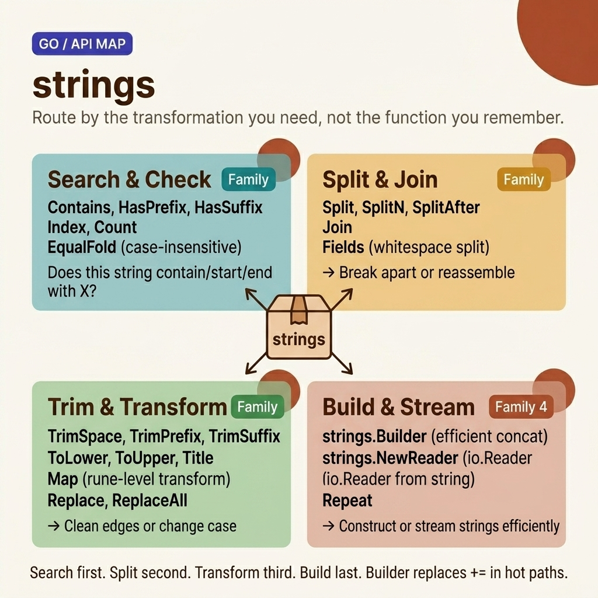
The mechanics of Strings should be clear. What is left is recognizing Cú pháp khai báo that looks almost right but introduces UTF-8 bugs or performance issues into production.
| # | Mức độ nghiêm trọng | Bug | Hậu quả hệ thống | Giải pháp khắc phục |
|---|---|---|---|---|
| 1 | 🔴 FATAL | Using += in loops | O(n²) performance — thousands of allocations | Use strings.Builder with Grow() |
| 2 | 🔴 FATAL | Using len(s) for character count | Corrupted slicing on multibyte UTF-8 | Use utf8.RuneCountInString(s) |
| 3 | 🟡 COMMON | Indexing s[i] expecting a rune | Unicode characters sliced destructively | Iterate with for _, r := range s |
| 4 | 🟡 COMMON | Using deprecated strings.Title() | Incorrect Unicode handling | Use golang.org/x/text/cases |
| 5 | 🔵 MINOR | strings.Split("", ",") returning [""] | Logic errors on empty input | Check len(s) == 0 first |
🔴 Cạm bẫy #1 — String concatenation causing O(n²) disasters
Go strings are immutable. Every += creates a new string by copying all prior bytes + the new byte. In a 10,000-iteration loop: 10,000 allocations, each larger than the last — O(n²). Production ảnh hưởng thực tế: API response times degrade from 5ms to 500ms.
``go
// ❌ O(n²) — every += invocation spawns a fresh string allocation
var s string
for i := 0; i < 10000; i++ {
s += strconv.Itoa(i)
}
// ✅ O(n) — direct buffered writes, finalized with a single allocation
var b strings.Builder
b.Grow(50000) // preemptive memory allocation
for i := 0; i < 10000; i++ {
b.WriteString(strconv.Itoa(i))
}
result := b.String()
`
🔴 Cạm bẫy #2 — Subjugating bytes under the guise of characters
len("Hello 🌍") returns 14 (bytes), not 10 (characters). The emoji 🌍 occupies 4 bytes. Use utf8.RuneCountInString() for character counts, or convert to []rune(s).
Cạm bẫy #2 Chi tiết kỹ thuật: len() counts bytes
`go
package main
import ( "fmt" "unicode/utf8" )
func main() { s := "Hello 🌍"
fmt.Println(len(s)) // 14 (bytes) fmt.Println(utf8.RuneCountInString(s)) // 10 (characters) fmt.Println(len([]rune(s))) // 10 (characters)
// ⚠️ s[0] is a byte, NOT a character fmt.Printf("byte: %d, char: %c\n", s[0], []rune(s)[0]) } ``
---
You have explored Go strings from basic API operations through UTF-8 depths. The resources below go further.
| Tài liệu tham khảo | Kiểu dữ liệu | Liên kết truy cập | Ghi chú bổ sung |
|---|---|---|---|
strings package | Official | [pkg.go.dev/strings](https://pkg.go.dev/strings) | Full API reference documentation |
unicode/utf8 package | Official | [pkg.go.dev/unicode/utf8](https://pkg.go.dev/unicode/utf8) | Rune counting and validation |
| Go Blog — Strings in Go | Blog | [go.dev/blog/strings](https://go.dev/blog/strings) | Internal representation |
| Effective Go — Printing | Official | [go.dev/doc/effectivego#printing](https://go.dev/doc/effectivego#printing) | Format verbs |
golang.org/x/text | External | [pkg.go.dev/golang.org/x/text](https://pkg.go.dev/golang.org/x/text) | Complex i18n and global casing operations |
---
The foundations of Strings are settled. The extensions below deploy string handling into production contexts.
| Extension | Bối cảnh áp dụng | Why | Đường dẫn tệp/Liên kết truy cập |
|---|---|---|---|
regexp | Complex pattern matching | Regex for advanced search and replace | [pkg.go.dev/regexp](https://pkg.go.dev/regexp) |
unicode | Unicode categorization | unicode.IsLetter(), unicode.IsDigit() | [pkg.go.dev/unicode](https://pkg.go.dev/unicode) |
golang.org/x/text | i18n and casing | Proper Unicode casing and collation | [pkg.go.dev/golang.org/x/text](https://pkg.go.dev/golang.org/x/text) |
bytes package | Working with []byte like strings | Avoid string↔[]byte conversions | [pkg.go.dev/bytes](https://pkg.go.dev/bytes) |
strconv | Numeric parsing and formatting | Atoi, Itoa, ParseFloat | [./03-strconv.md](./03-strconv.md) |
---
Navigation: [← Closures & Methods](./01-closures-methods.md) · [→ strconv](./03-strconv.md)
?page=2&limit=50 . Chuỗi truy vấn: sort=desc . Các trường biểu mẫu: price=99.9 . Tệp cấu hình: timeout=30 . Các biến môi trường chẵn: PORT=8080 .
Để sử dụng các giá trị này trong logic nghiệp vụ, bạn phải chuyển đổi chúng một cách an toàn: page thành int , price thành float64 , debug thành bool . strconv package xử lý việc này - phân tích cú pháp đầu vào chuỗi và định dạng lại dữ liệu thành chuỗi. Luôn kiểm tra lỗi trong quá trình phân tích cú pháp, vì đầu vào của người dùng có thể là "hello" khi bạn mong đợi "42" .
Nhóm chức năng cốt lõi
| Gia đình | Phân tích cú pháp (chuỗi → loại) | Format (loại → chuỗi) |
|---|---|---|
| Số nguyên | Atoi , ParseInt | Itoa , FormatInt |
| Nổi | ParseFloat | FormatFloat |
| Bôn | ParseBool | FormatBool |
| Trích dẫn | Unquote | Quote , QuoteRune |
| Nối | — | AppendInt , AppendFloat |
Quy ước đặt tên và phân tích cú pháp Format
``text
Parse__() → string to Kiểu dữ liệu (may fail → returns an Lỗi biên dịch / Runtime)
Format__() → Kiểu dữ liệu to string (cannot fail)
Atoi() → "ASCII to Integer" (idiomatic shortcut for ParseInt)
Itoa() → "Integer to ASCII" (idiomatic shortcut for FormatInt)
`---
Các hàm chuyển đổi này trông đơn giản — nhưng tồn tại các bẫy thầm lặng: gọi
Atoi` và bỏ qua lỗi sẽ đưa ra giá trị 0 vô hình và độ chính xác của float có thể giảm trong format /các chuyến đi khứ hồi. Những cái bẫy đó được giải nén trong những cái bẫy.Mã nguồn & Các ví dụ minh họa
Chuỗi truy vấn HTTP là string s: ?page=3&limit=50&active=true . Bạn phải chuyển đổi chúng thành int và bool cho truy vấn database . fmt.Sscanf ? Quá chậm và thiếu an toàn về loại. strconv.Atoi và strconv.ParseBool là tiêu chuẩn: nhanh và chúng trả về lỗi khi đầu vào không hợp lệ.
Đầu vào: strconv.Atoi("42") · Đầu ra: (42, nil) · strconv.Atoi("abc") · Đầu ra: (0, Lỗi biên dịch / Runtime)> Tại sao Atoi có thể tràn trên hệ thống 32-bit?
Atoi trả về int — kích thước của nó phụ thuộc vào kiến trúc nền tảng (32-bit so với 64-bit). Trên thiết bị 32 bit, đầu vào vượt quá phạm vi int32 → lỗi. Đối với các ranh giới quan trọng, hãy sử dụng ParseInt với kích thước bit rõ ràng.Atoi / Itoa để chuyển đổi đơn giản. ParseBool chấp nhận các biến thể ( "1" , "t" , "true" ) — thuận tiện cho việc phân tích cú pháp cấu hình. Luôn kiểm tra lỗi trả về.Chuyển đổi cơ bản là tiêu chuẩn. Tuy nhiên, việc kiểm soát các giới hạn độ chính xác khoa học thông qua FormatFloat , kết hợp với các chuyển đổi cơ sở riêng biệt, đòi hỏi sự hiểu biết cơ học sâu sắc hơn.
package main
import (
"fmt"
"strconv"
)
func main() {
// ━━━━━ Atoi — string → int ━━━━━
n, err := strconv.Atoi("42")
if err != nil {
fmt.Println("Error:", err)
return
}
fmt.Println(n) // 42
fmt.Printf("Type: %T\n", n) // int
// ⚠️ Fail cleanly when the string is non-numeric
_, err = strconv.Atoi("hello")
fmt.Println(err) // strconv.Atoi: parsing "hello": invalid syntax
// ⚠️ Fail cleanly on overflow limits
_, err = strconv.Atoi("99999999999999999999")
fmt.Println(err) // strconv.Atoi: parsing "...": value out of range
// ━━━━━ Itoa — int → string ━━━━━
s := strconv.Itoa(255)
fmt.Println(s) // "255"
fmt.Printf("Type: %T\n", s) // string
// ━━━━━ ParseBool ━━━━━
// ✅ Accepts: "1", "t", "T", "true", "TRUE", "True"
// "0", "f", "F", "false", "FALSE", "False"
b, _ := strconv.ParseBool("true")
fmt.Println(b) // true
b, _ = strconv.ParseBool("0")
fmt.Println(b) // false
// ━━━━━ FormatBool ━━━━━
fmt.Println(strconv.FormatBool(true)) // "true"
fmt.Println(strconv.FormatBool(false)) // "false"
}Tệp cấu hình cung cấp timeout=30 , rate=0.75 và port=0x1F90 (thập lục phân). Atoi chỉ xử lý cơ sở 10. Bạn cần ParseInt với tham số cơ sở và ParseFloat với kích thước bit rõ ràng. FormatFloat kiểm soát độ chính xác: 'f' (thập phân), 'e' (khoa học), 'g' (thu gọn) — trao quyền kiểm soát đến từng chữ số riêng lẻ.
Đầu vào: strconv.ParseInt("1F90", 16, 64) · Đầu ra: (8080, nil)> Tại sao FormatFloat yêu cầu bốn tham số riêng biệt?
fmt đảm bảo mục đích định dạng ('f' so với 'e'), prec khóa các ràng buộc phân rã số (-1 đảm bảo khả năng đọc an toàn tối thiểu) và bitSize thực thi làm tròn toán học nghiêm ngặt (các float 32 bit hoạt động hoàn toàn khác so với các lớp 64 bit). Luôn liên kết ParseFloat với các kiến trúc 64-bit một cách phổ biến trừ khi xử lý được tối ưu hóa nhiều float32 arrays .ParseInt với các tiền tố base=0 tự động phát hiện 0x , 0o , 0b — hữu ích cho việc phân tích cú pháp cấu hình. FormatFloat với prec=-1 cho đầu ra duy nhất tối thiểu. Sử dụng ParseUint cho các giá trị không dấu.Định dạng được bảo hiểm. Tiếp theo: phân tích cú pháp chuyên biệt, hoạt động byte thô và xử lý trích dẫn.
package main
import (
"fmt"
"strconv"
)
func main() {
// ━━━━━ ParseInt(s, base, bitSize) ━━━━━
// base: 2=binary, 8=octal, 10=decimal, 16=hex, 0=auto-detect
// bitSize: 0/8/16/32/64 — limits acceptable result range capacity
// Decimal
i, _ := strconv.ParseInt("123", 10, 64)
fmt.Println(i) // 123
// Hexadecimal
hex, _ := strconv.ParseInt("FF", 16, 64)
fmt.Println(hex) // 255
// Binary
bin, _ := strconv.ParseInt("1010", 2, 64)
fmt.Println(bin) // 10
// Auto-detect base via prefix (0)
// "0x" → hex, "0o" → octal, "0b" → binary, otherwise assumes decimal
auto, _ := strconv.ParseInt("0xFF", 0, 64)
fmt.Println(auto) // 255
// ━━━━━ ParseUint — handling strictly unsigned values ━━━━━
u, _ := strconv.ParseUint("42", 10, 64)
fmt.Println(u) // 42 (uint64)
// ━━━━━ FormatInt(i, base) ━━━━━
fmt.Println(strconv.FormatInt(255, 16)) // "ff"
fmt.Println(strconv.FormatInt(255, 2)) // "11111111"
fmt.Println(strconv.FormatInt(255, 8)) // "377"
// ━━━━━ ParseFloat(s, bitSize) ━━━━━
f, _ := strconv.ParseFloat("3.14159", 64)
fmt.Printf("%.2f\n", f) // 3.14
// Scientific notation string logic
sci, _ := strconv.ParseFloat("1.5e3", 64)
fmt.Println(sci) // 1500
// ━━━━━ FormatFloat(f, fmt, prec, bitSize) ━━━━━
// fmt: 'f'=decimal, 'e'=scientific, 'g'=auto-simplify, 'b'=binary exp
// prec: specific number of digits succeeding the decimal (-1 = minimum unique required)
fmt.Println(strconv.FormatFloat(3.14159, 'f', 2, 64)) // "3.14"
fmt.Println(strconv.FormatFloat(3.14159, 'e', 4, 64)) // "3.1416e+00"
fmt.Println(strconv.FormatFloat(3.14159, 'g', -1, 64)) // "3.14159"
fmt.Println(strconv.FormatFloat(100000.0, 'g', -1, 64)) // "100000"
}Bạn đang xây dựng một công cụ ghi nhật ký JSON cần các chuỗi thoát an toàn chứa dấu ngoặc kép " , dòng mới
và Unicode. fmt.Sprintf("%q", s) hoạt động nhưng chậm do chi phí phân tích cú pháp format . strconv.Quote nhanh hơn ~3 lần, dành riêng cho việc thoát chuỗi ASCII/Unicode.
Các hàm Append* ( AppendInt , AppendFloat , AppendBool ) vẫn nhanh hơn — chúng nối trực tiếp vào []byte slices mà không tạo các chuỗi tạm thời.
Đầu vào: strconv.Quote("hello
world") · Đầu ra: "\"hello\nworld\""> Tại sao nên sử dụng AppendInt thay vì FormatInt khi xây dựng bộ đệm []byte ?
FormatInt phân bổ một chuỗi trung gian, sau đó yêu cầu chuyển đổi thứ hai thành []byte — hai phân bổ cho mỗi số trong đường dẫn nóng của bạn. AppendInt ghi trực tiếp vào byte hiện có slice , loại bỏ hoàn toàn chuỗi trung gian. Ưu tiên điều này bất cứ khi nào viết mã ghi nhật ký hoặc mã tuần tự hóa thông lượng cao.Quote / Unquote bất cứ khi nào cần xử lý thoát. Ưu tiên AppendXxx trong các đường ống hiệu suất cao. Các trường hợp sử dụng trong thế giới thực: phân tích cú pháp cấu hình, xây dựng CSV và xây dựng chuỗi truy vấn HTTP.---
package main
import (
"fmt"
"strconv"
"strings"
)
func main() {
// ━━━━━ Quote / Unquote — String security rendering ━━━━━
// ✅ Safety-escapes embedded quotes and control characters
fmt.Println(strconv.Quote(`Hello "World"`))
// "Hello \"World\""
fmt.Println(strconv.Quote("tab\there\nnewline"))
// "tab\there\nnewline"
// Unquote — reverses Quote
original, _ := strconv.Unquote(`"Hello \"World\""`)
fmt.Println(original) // Hello "World"
// QuoteRune converts a single character
fmt.Println(strconv.QuoteRune('🚀')) // '🚀'
// ━━━━━ AppendXxx — direct []byte manipulation (zero allocations) ━━━━━
// ✅ Faster than FormatXxx for []byte buffer building
buf := make([]byte, 0, 64)
buf = append(buf, "value="...)
buf = strconv.AppendInt(buf, 42, 10)
buf = append(buf, "&pi="...)
buf = strconv.AppendFloat(buf, 3.14, 'f', 2, 64)
buf = append(buf, "&ok="...)
buf = strconv.AppendBool(buf, true)
fmt.Println(string(buf))
// value=42&pi=3.14&ok=true
// ━━━━━ Real-world System: Parsing Environmental Configurations ━━━━━
config := map[string]string{
"port": "8080",
"timeout": "30",
"debug": "true",
"rate": "0.75",
}
port, _ := strconv.Atoi(config["port"])
timeout, _ := strconv.Atoi(config["timeout"])
debug, _ := strconv.ParseBool(config["debug"])
rate, _ := strconv.ParseFloat(config["rate"], 64)
fmt.Printf("Port: %d, Timeout: %ds, Debug: %v, Rate: %.2f\n",
port, timeout, debug, rate)
// ━━━━━ Real-world System: Iterative CSV Stream Builder ━━━━━
values := []interface{}{1, "Alice", 3.14, true}
var b strings.Builder
for i, v := range values {
if i > 0 {
b.WriteByte(',')
}
switch val := v.(type) {
case int:
b.WriteString(strconv.Itoa(val))
case string:
b.WriteString(strconv.Quote(val))
case float64:
b.WriteString(strconv.FormatFloat(val, 'f', -1, 64))
case bool:
b.WriteString(strconv.FormatBool(val))
}
}
fmt.Println(b.String())
// 1,"Alice",3.14,true
}Sơ đồ trực quan & Luồng hoạt động (Visual Support)
Lỗi phổ biến nhất với strconv là truy cập chức năng trợ giúp quen thuộc theo tên trước khi khóa hướng truyền dữ liệu. Hình ảnh bên dưới buộc phải trả lời trước câu hỏi chính xác đó: văn bản có nhập vào hệ thống loại hay giá trị đã nhập sẽ xuất hiện trên dây dưới dạng chuỗi? Hình: Quyết định strconv map chia bốn hướng hoạt động chính: phân tích cú pháp, format , nối thêm các đường dẫn nóng và chế độ lỗi im lặng được kích hoạt nếu lỗi hoặc kiểm tra độ chính xác bị bỏ qua.
Khi ranh giới định hướng được thiết lập, các khối mã bên dưới sẽ đọc tự nhiên hơn nhiều. Bạn không còn xem Atoi , ParseInt và FormatFloat dưới dạng các API bị ngắt kết nối mà là các cổng riêng biệt hoạt động trên cùng một ranh giới chuyển văn bản thành loại.
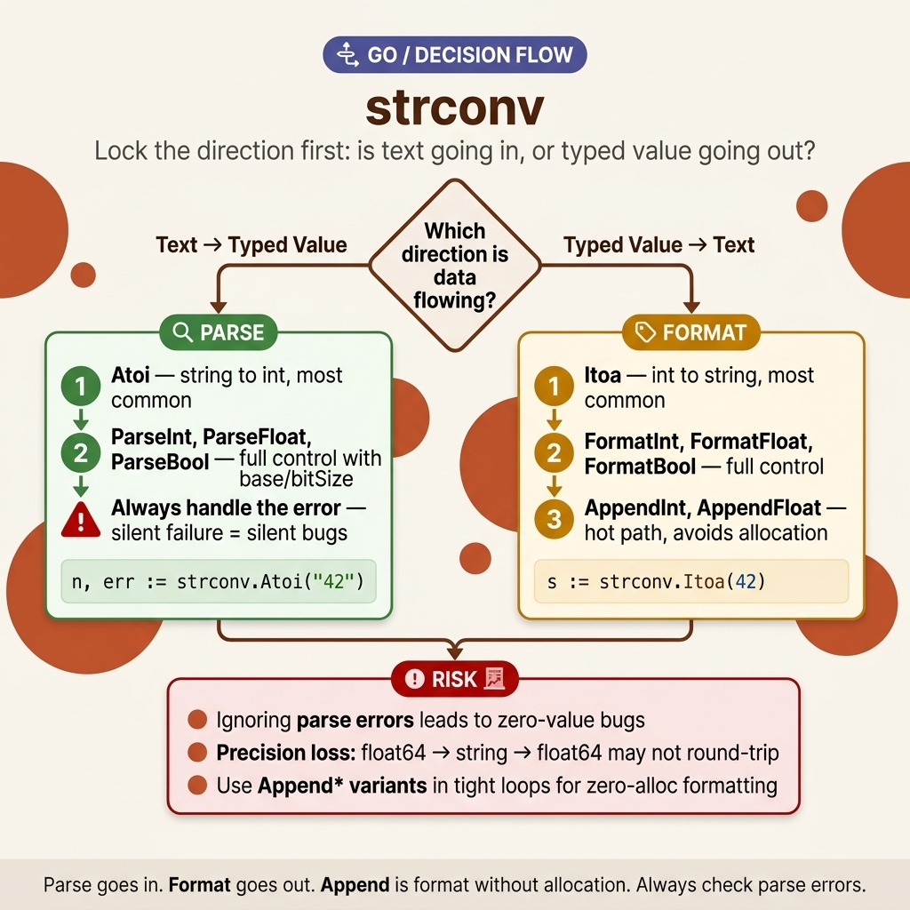
Cơ chế của Strconv rất rõ ràng. Những gì còn lại là nhận dạng mã có vẻ chính xác nhưng lại ẩn các lỗi runtime im lặng.
| # | Mức độ nghiêm trọng | Lỗi | Hậu quả | Sửa chữa |
|---|---|---|---|---|
| 1 | 🔴 Gây tử vong | Bỏ qua lỗi trả về từ các hàm phân tích cú pháp | Im lặng tiêm giá trị 0 hoặc hoảng loạn | Luôn kiểm tra err != nil |
| 2 | 🔴 Gây tử vong | Atoi tràn im lặng trên nền tảng 32 bit | Giá trị số không chính xác mà không có lỗi | Sử dụng ParseInt với bitSize |
| 3 | 🟡 Chung | Sử dụng fmt.Sprintf thay vì strconv để chuyển đổi số | Xử lý chậm hơn tới 5 lần | Thích strconv.Itoa hoặc FormatFloat |
| 4 | 🔵 Nhỏ | Hiểu sai độ chính xác của -1 trong FormatFloat | Đầu ra đúng nhưng có chữ số ở cuối | -1 có nghĩa là "chữ số tối thiểu để biểu thị giá trị duy nhất" |
| 5 | 🔵 Nhỏ | ParseFloat chấp nhận NaN và Inf làm đầu vào hợp lệ | Lỗi logic nếu không được kiểm tra rõ ràng | Xác thực bằng math.IsNaN() / math.IsInf() |
🔴 Cạm bẫy số 1 - Bỏ qua việc kiểm tra lỗi sẽ tạo ra những quả bom có giá trị bằng 0 thầm lặng strconv.Atoi("hello") trả về (0, Lỗi biên dịch / Runtime) . Nếu mã của bạn chạy port, _ := strconv.Atoi(os.Getenv("PORT")) và biến môi trường bị thiếu hoặc không hợp lệ — giá trị cổng của bạn là 0 . Liên kết máy chủ với cổng 0 yêu cầu HĐH chọn một cổng trống ngẫu nhiên → tất cả các dịch vụ hạ nguồn đều mất kết nối. Máy chủ khởi động thành công nhưng không thể truy cập được và không có gì được ghi lại.
Khắc phục: Luôn kiểm tra lỗi chuyển đổi. Đối với các giá trị cấu hình quan trọng, hãy nhanh chóng thực hiện: if err != nil { log.Fatalf("invalid PORT: %v", err) } .
🔴 Cạm bẫy #2 — Tràn Atoi trên nền tảng 32-bit Atoi trả về phụ thuộc vào nền tảng int . Phân tích cú pháp Atoi("3000000000") trên hệ thống 32 bit tràn âm thầm, trả về giá trị không chính xác. Sử dụng ParseInt(s, 10, 64) khi bạn cần đảm bảo độ rộng 64-bit.
---
Bạn đã khám phá strconv từ Atoi cơ bản đến định dạng nâng cao. Các tài nguyên dưới đây đi sâu hơn.
| Tài nguyên | Loại | Liên kết | Ghi chú |
|---|---|---|---|
strconv package | Chính thức | [pkg.go.dev/strconv](https://pkg.go.dev/strconv) | Tham chiếu API |
| Go Blog — Hằng số | Blog | [go.dev/blog/các hằng số](https://go.dev/blog/các hằng số) | Cách các hằng số chưa được gõ hoạt động trong Go |
| Go Spec — Chuyển đổi | Chính thức | [go.dev/ref/spec#Conversions](https://go.dev/ref/spec#Conversions) | Quy tắc và giới hạn chuyển đổi cấp độ ngôn ngữ |
---
Nền tảng của Strconv — Chuyển đổi loại & phân tích cú pháp rất rõ ràng. Các tiện ích mở rộng bên dưới sẽ đưa bạn vào các tình huống chuyển đổi dữ liệu phức tạp hơn.
| Gia hạn | Khi nào | Tại sao | Tệp/Liên kết |
|---|---|---|---|
fmt.Sprintf | Nội suy chuỗi phức tạp | Khả năng đọc tốt hơn với nhiều biến | [./04-fmt.md](./04-fmt.md) |
encoding/json | Thống chế structs và maps | Tự động nhập dữ liệu → chuyển đổi chuỗi | [pkg.go.dev/encoding/json](https://pkg.go.dev/encoding/json) |
math/big | Số lượng lớn tùy ý | Bắt buộc khi giá trị vượt quá int64/float64 | [./05-math.md](./05-math.md) |
golang.org/x/exp/constraints | Generic ràng buộc số | Toán học an toàn kiểu trên các hàm generic | [pkg.go.dev/golang.org/x/exp](https://pkg.go.dev/golang.org/x/exp) |
---
Điều hướng: [← strings](./02-strings.md) · [→ fmt](./04-fmt.md)
fmt .
fmt nhiều hơn println . Đây là bộ công cụ định dạng linh hoạt: Sprintf xây dựng chuỗi một cách an toàn, Fprintf ghi vào any io.Writer (tệp, phản hồi HTTP, bộ đệm) và Errorf với %w tạo ra các lỗi bao bọc để duy trì chuỗi nguyên nhân. Nắm vững fmt có nghĩa là nắm vững cách Go giao tiếp — với nhà phát triển qua nhật ký, với người gọi qua lỗi và với khách hàng qua phản hồi API.
Chức năng in
| Chức năng | Đầu ra | Dòng mới? | Format ? |
|---|---|---|---|
Print | thiết bị xuất chuẩn | ❌ | ❌ |
Println | thiết bị xuất chuẩn | ✅ | ❌ |
Printf | thiết bị xuất chuẩn | ❌ | ✅ |
Sprint | chuỗi trả về | ❌ | ❌ |
Sprintf | chuỗi trả về | ❌ | ✅ |
Sprintln | chuỗi trả về | ✅ | ❌ |
Fprint | io.Writer | ❌ | ❌ |
Fprintf | io.Writer | ❌ | ✅ |
Errorf | lỗi trả về | ❌ | ✅ |
Format Động từ — Bảng tham khảo
| Động từ | Mô tả | Đầu ra ví dụ |
|---|---|---|
%v | Mặc định format | {Alice 25} |
%+v | Struct với tên trường | {Name:Alice Age:25} |
%#v | Biểu diễn cú pháp Go | main.User{Name:"Alice"} |
%T | Loại | main.User |
%d | Số nguyên (thập phân) | 42 |
%b | Số nguyên (nhị phân) | 101010 |
%o | Số nguyên (bát phân) | 52 |
%x | Số nguyên (chữ thường hex) | 2a |
%X | Số nguyên (chữ hoa hex) | 2A |
%f | Phao (thập phân) | 3.141593 |
%e | Phao (khoa học) | 3.141593e+00 |
%g | Phao (nhỏ gọn) | 3.14159 |
%s | Chuỗi | hello |
%q | Chuỗi trích dẫn | "hello" |
%c | Nhân vật (rune) | A |
%p | Con trỏ địa chỉ | 0xc000014080 |
%t | Boolean | true |
%% | Nghĩa đen % | % |
Chiều rộng và độ chính xác
| Cú pháp | Mô tả | Đầu ra ví dụ |
|---|---|---|
%10d | Chiều rộng 10, căn phải | 42 |
%-10d | Chiều rộng 10, căn trái | 42 |
%010d | Chiều rộng 10, không đệm | 0000000042 |
%.2f | 2 chữ số thập phân | 3.14 |
%8.2f | Chiều rộng 8, 2 số thập phân | 3.14 |
%.5s | Cắt chuỗi còn 5 ký tự | Hello |
---
Các động từ format này trông quen thuộc — nhưng có bẫy thực sự: %v trên con trỏ in địa chỉ thay vì giá trị và Sprintf trong vòng lặp nóng sẽ tạo ra cơn bão phân bổ. Những cái bẫy đó xuất hiện trong PITFALS.
Mã nguồn & Các ví dụ minh họa
Đầu vào: fmt.Printf("%+v", User{"Go", 15}) · Đầu ra: {Name:Go Age:15}> %v xuất ra {Alice 25} — bạn không thể biết trường nào là trường nào. %+v xuất ra {Name:Alice Age:25} — rõ ràng. %#v thậm chí còn cung cấp cú pháp Go main.User{Name:"Alice", Age:25} - sẵn sàng sao chép-dán. %T cung cấp tên loại - hữu ích khi giao diện (interface) ẩn loại bê tông.
%v cho đầu ra chung, %+v để gỡ lỗi structs , %#v cho kết xuất mã, %T để kiểm tra loại. Định dạng số: %d thập phân, %x hex, %b nhị phân.Những điều cơ bản về in ấn được đề cập. Nhưng format động từ đi sâu hơn: %+v , %#v , chiều rộng/độ chính xác và Stringer giao diện (interface) .
package main
import "fmt"
type User struct {
Name string
Age int
}
func main() {
u := User{"Alice", 25}
// ━━━━━ Print vs Println vs Printf ━━━━━
fmt.Print("no newline")
fmt.Println("with newline")
fmt.Printf("formatted: %s is %d years old\n", u.Name, u.Age)
// ━━━━━ %v variants ━━━━━
fmt.Printf("%%v: %v\n", u) // {Alice 25}
fmt.Printf("%%+v: %+v\n", u) // {Name:Alice Age:25}
fmt.Printf("%%#v: %#v\n", u) // main.User{Name:"Alice", Age:25}
fmt.Printf("%%T: %T\n", u) // main.User
// ━━━━━ Number formats ━━━━━
n := 255
fmt.Printf("Decimal: %d\n", n) // 255
fmt.Printf("Binary: %b\n", n) // 11111111
fmt.Printf("Octal: %o\n", n) // 377
fmt.Printf("Hex: %x\n", n) // ff
fmt.Printf("Hex: %X\n", n) // FF
fmt.Printf("Unicode: %U\n", 'A') // U+0041
// ━━━━━ Float formats ━━━━━
pi := 3.14159265358979
fmt.Printf("Default: %f\n", pi) // 3.141593
fmt.Printf("Scientific: %e\n", pi) // 3.141593e+00
fmt.Printf("Compact: %g\n", pi) // 3.14159265358979
fmt.Printf("2 decimals: %.2f\n", pi) // 3.14
// ━━━━━ String formats ━━━━━
s := "Hello"
fmt.Printf("String: %s\n", s) // Hello
fmt.Printf("Quoted: %q\n", s) // "Hello"
fmt.Printf("Bytes: %x\n", s) // 48656c6c6f
// ━━━━━ Pointer ━━━━━
p := &n
fmt.Printf("Pointer: %p\n", p) // 0xc000014088
}Bạn in một bảng dữ liệu ra terminal: các cột dính vào nhau, các số bị lệch. Printf cung cấp chiều rộng và phần đệm: %10d căn phải trong vòng 10 ký tự, %-10s căn trái, %08x căn lề bằng số 0. Sprintf trả về một chuỗi thay vì in — sử dụng chuỗi đó để xây dựng các chuỗi được định dạng để ghi nhật ký và báo cáo.
Đầu vào: fmt.Sprintf("%-10s %5d", "Go", 42) · Đầu ra: "Go 42"> %w bao bọc lỗi — bảo toàn toàn bộ chuỗi lỗi. errors.Is() và errors.As() có thể duyệt chuỗi để tìm ra nguyên nhân gốc rễ. Nếu không có %w , chuỗi lỗi sẽ bị mất và người gọi không thể kiểm tra kiểu. %v định dạng lỗi thành một chuỗi đơn giản - mất hoàn toàn thông tin loại.
Sprintf để xây dựng chuỗi, Errorf + %w cho Lỗi biên dịch / Runtime wrapping . Chiều rộng và phần đệm cho đầu ra dạng bảng. %010d zero-pad, %-10s căn trái. Format động từ được bao phủ. Tiếp theo: Stringer/GoStringer tùy chỉnh, fmt.Formatter giao diện (interface) và các lựa chọn thay thế ghi nhật ký hiệu suất cao.package main
import "fmt"
func main() {
// ━━━━━ Width & Alignment ━━━━━
fmt.Printf("|%10d|\n", 42) // | 42| right-aligned
fmt.Printf("|%-10d|\n", 42) // |42 | left-aligned
fmt.Printf("|%010d|\n", 42) // |0000000042| zero-padded
fmt.Printf("|%+d|\n", 42) // |+42| show sign
fmt.Printf("|%+d|\n", -42) // |-42| show sign
// ━━━━━ Float precision ━━━━━
fmt.Printf("|%10.2f|\n", 3.14) // | 3.14|
fmt.Printf("|%-10.2f|\n", 3.14) // |3.14 |
// ━━━━━ String width ━━━━━
fmt.Printf("|%15s|\n", "hello") // | hello|
fmt.Printf("|%-15s|\n", "hello") // |hello |
fmt.Printf("|%.3s|\n", "hello") // |hel| truncate
// ━━━━━ Sprintf — build formatted string ━━━━━
name := "API"
version := 2
url := fmt.Sprintf("https://example.com/%s/v%d", name, version)
fmt.Println(url) // https://example.com/API/v2
// ━━━━━ Errorf — create formatted error ━━━━━
id := 42
err := fmt.Errorf("user %d not found", id)
fmt.Println(err) // user 42 not found
// ✅ Wrap error (Go 1.13+)
originalErr := fmt.Errorf("connection refused")
wrappedErr := fmt.Errorf("failed to get user %d: %w", id, originalErr)
fmt.Println(wrappedErr) // failed to get user 42: connection refused
// ━━━━━ Tabular output ━━━━━
type Product struct {
Name string
Price float64
Stock int
}
products := []Product{
{"Laptop", 999.99, 5},
{"Mouse", 29.99, 150},
{"Keyboard", 79.99, 42},
}
fmt.Printf("%-12s %10s %6s\n", "PRODUCT", "PRICE", "STOCK")
fmt.Println("─────────────────────────────────")
for _, p := range products {
fmt.Printf("%-12s %10.2f %6d\n", p.Name, p.Price, p.Stock)
}
}Bạn có Money struct với Amount và Currency . Mỗi time bạn in, bạn viết thủ công fmt.Printf("%s %.2f", m.Currency, m.Amount) . Triển khai fmt.Stringer giao diện (interface) (một phương thức String() string ) và fmt.Println(m) sẽ tự động gọi phương thức đó - DRY và nhất quán.
Họ Fprint ghi vào any io.Writer (tệp, mạng, bộ đệm) thay vì thiết bị xuất chuẩn - tạo thành nền tảng của ghi nhật ký có cấu trúc và kết xuất mẫu.
Đầu vào: fmt.Println(Money{42.5, "USD"}) · Đầu ra: USD 42.50> Tại sao Stringer giao diện (interface) là mẫu quan trọng nhất trong fmt ?
String() string trên một loại tùy chỉnh có nghĩa là fmt.Println(myType) sẽ tự động gọi phương thức đó. Không cần ghi đè toString() hoặc decorator — chỉ một phương thức. Áp dụng nó để ghi nhật ký enum ( LogLevel.String() ), định dạng màu, hiển thị tiền. Fprint + io.Writer tách đích đầu ra khỏi logic định dạng.%v / %s tùy chỉnh. GoStringer cho %#v . Fprint* để ghi vào any io.Writer . Kết hợp với strings.Builder để xây dựng chuỗi hiệu quả.---
package main
import (
"fmt"
"os"
"strings"
)
// ━━━━━ Stringer interface — custom %v output ━━━━━
type Color struct {
R, G, B uint8
}
// ✅ Implement fmt.Stringer → controls %v and %s output
func (c Color) String() string {
return fmt.Sprintf("#%02X%02X%02X", c.R, c.G, c.B)
}
// ✅ Implement fmt.GoStringer → controls %#v output
func (c Color) GoString() string {
return fmt.Sprintf("Color{R:%d, G:%d, B:%d}", c.R, c.G, c.B)
}
// ━━━━━ Custom type with Stringer ━━━━━
type LogLevel int
const (
DEBUG LogLevel = iota
INFO
WARN
ERROR
)
func (l LogLevel) String() string {
names := [...]string{"DEBUG", "INFO", "WARN", "ERROR"}
if int(l) < len(names) {
return names[l]
}
return fmt.Sprintf("LogLevel(%d)", l)
}
func main() {
// ━━━━━ Stringer in action ━━━━━
red := Color{255, 0, 0}
fmt.Println(red) // #FF0000
fmt.Printf("Color: %v\n", red) // Color: #FF0000
fmt.Printf("Go: %#v\n", red) // Go: Color{R:255, G:0, B:0}
// ━━━━━ Enum formatting ━━━━━
level := WARN
fmt.Printf("Level: %v (%d)\n", level, level) // Level: WARN (2)
// ━━━━━ Fprint — write to any io.Writer ━━━━━
// ✅ Write to stderr
fmt.Fprintln(os.Stderr, "This goes to stderr")
// ✅ Write to strings.Builder
var b strings.Builder
fmt.Fprintf(&b, "Name: %s, Age: %d", "Bob", 30)
result := b.String()
fmt.Println(result) // Name: Bob, Age: 30
// ✅ Write to file
f, err := os.CreateTemp("", "output-*.txt")
if err != nil {
fmt.Println("Error:", err)
return
}
defer f.Close()
defer os.Remove(f.Name())
fmt.Fprintf(f, "Report generated\n")
fmt.Fprintf(f, "Users: %d\n", 42)
}Sơ đồ trực quan & Luồng hoạt động (Visual Support)
Khi thứ tự đích và độ phân giải hiển thị, mã bên dưới sẽ không còn cảm giác giống như "ghi nhớ động từ". Thay vào đó, bạn sẽ hiểu tại sao cùng một giá trị lại tạo ra kết quả hoàn toàn khác khi bạn chuyển đổi họ hoặc động từ.
Cơ chế cốt lõi của Fmt — Định dạng, In & Quét rất rõ ràng. Những gì còn lại là cú pháp nhận dạng có vẻ gần như đúng nhưng lại đưa ra các lỗi format hoặc bẫy hiệu suất trong quá trình sản xuất.
| # | Mức độ nghiêm trọng | Lỗi | Hậu quả | Sửa chữa |
|---|---|---|---|---|
| 1 | 🔴 Gây tử vong | Vòng lặp vô hạn Stringer - String() gọi Sprintf bằng receiver | Stack tràn panic | Sử dụng các trường trực tiếp, không phải %v với receiver |
Printf thiếu
| Đầu ra không chuyển sang dòng tiếp theo | Nối
hoặc sử dụng Println |
| 3 | 🟡 Chung | Động từ không khớp → đầu ra %!d(string=hello) | Đầu ra gỡ lỗi trở nên không thể đọc được | Nối động từ với đúng loại |
| 4 | 🟡 Chung | Sprintf chậm hơn strconv khi chuyển đổi số | Suy giảm hiệu suất trong các đường dẫn nóng | Ưu tiên strconv.Itoa() khi bạn chỉ cần number→string |
| 5 | 🔵 Nhỏ | %w chỉ hoạt động bên trong Errorf | Biên dịch tốt nhưng hoạt động không chính xác tại runtime | %w chỉ xử lý các lỗi thông qua fmt.Errorf |
🔴 Cạm bẫy #1 — Sự cố vòng lặp vô hạn của Stringer
Bạn viết một phương thức String() cho kiểu MyType và bên trong nó gọi fmt.Sprintf("%v", m) — vô tình tạo ra đệ quy vô hạn:``go
Kiểu dữ liệu MyType struct{ Name string }
func (m MyType) String() string {
return fmt.Sprintf("MyType: %v", m) // ❌ %v calls String() again → infinite loop!
}
// Giải pháp khắc phục: fmt.Sprintf("MyType: %s", m.Name) ← use the field directly
``fmt thấy %v trên loại có String() → gọi String() → gặp lại %v → gọi String() → tràn stack . Lỗi này chỉ xuất hiện ở runtime — trình biên dịch không đưa ra cảnh báo.
---
Bạn đã khám phá fmt package từ Printf thông qua các trình định dạng tùy chỉnh. Các tài nguyên dưới đây sẽ đưa bạn sâu hơn.
| Tài nguyên | Loại | Liên kết | Ghi chú |
|---|---|---|---|
fmt package | Chính thức | [pkg.go.dev/fmt](https://pkg.go.dev/fmt) | Tham chiếu API |
| Có hiệu lực Go — In ấn | Chính thức | [go.dev/doc/effectivego#printing](https://go.dev/doc/effectivego#printing) | Thực tiễn tốt nhất |
| Format bảng động từ | Bên ngoài | [yourbasic.org/golang/fmt-printf-reference-cheat-sheet](https://yourbasic.org/golang/fmt-printf-reference-cheat-sheet/) | Tham khảo nhanh |
---
Nền tảng của Fmt — Định dạng, In & Quét rất rõ ràng. Các tiện ích mở rộng bên dưới giúp bạn đưa định dạng vào sản xuất bằng tính năng ghi nhật ký có cấu trúc, căn chỉnh CÔNG CỤ CLI và tạo mẫu.
| Gia hạn | Khi nào | Tại sao | Tệp/Liên kết |
|---|---|---|---|
log / slog | Ghi nhật ký có cấu trúc | Ghi nhật ký sản xuất thay vì fmt.Println | [pkg.go.dev/log/slog](https://pkg.go.dev/log/slog) |
text/tabwriter | Đầu ra dạng bảng được căn chỉnh | Tự động căn chỉnh cột | [pkg.go.dev/text/tabwriter](https://pkg.go.dev/text/tabwriter) |
text/template | Tạo văn bản phức tạp | Công cụ tạo mẫu tích hợp | [pkg.go.dev/text/template](https://pkg.go.dev/text/template) |
encoding/json | Đầu ra có cấu trúc | Sắp xếp JSON cho API | [pkg.go.dev/encoding/json](https://pkg.go.dev/encoding/json) |
fmt.Formatter | Động từ format tùy chỉnh | Triển khai cho các loại tùy chỉnh phức tạp | [pkg.go.dev/fmt#Formatter](https://pkg.go.dev/fmt#Formatter) |
---
Điều hướng: [← strconv](./03-strconv.md) · [→ math](./05-math.md)
math — Go bao gồm math , math/rand/v2 và math/big .
Điều đầu tiên cần biết: hầu hết các hàm trong math đều chấp nhận và trả về float64 . Đây là lý do tại sao bạn không thể gọi math.Sqrt(25) bằng int - bạn phải truyền: math.Sqrt(float64(25)) . Go 1.21 đã thêm min / max tích hợp cho loại any comparable — giảm đáng kể bản soạn sẵn. Và math/rand/v2 ( Go 1.22+) thay thế hoàn toàn math/rand cũ bằng API đơn giản hơn và nguồn mặc định mạnh hơn về mặt mật mã.
Nhóm chức năng math package được tổ chức thành 6 nhóm chức năng — mỗi nhóm giải quyết một miền khác nhau:
| Gia đình | Chức năng |
|---|---|
| Cơ bản | Abs , Max , Min , Ceil , Floor , Round |
| Nguồn/Gốc | Pow , Sqrt , Cbrt , Exp , Log , Log2 , Log10 |
| Trig | Sin , Cos , Tan , Asin , Acos , Atan , Atan2 |
| Đặc biệt | IsNaN , IsInf , NaN , Inf , Mod , Remainder |
| Một chút | math/bits — OnesCount , Len , LeadingZeros |
| Ngẫu nhiên | math/rand/v2 — IntN , Float64 , N[T] |
| Lớn | math/big — Int , Float , Rat (độ chính xác tùy ý) |
Tại sao math/rand/v2 thay vì math/rand ? package cũ có trạng thái toàn cầu, không thread -safe nếu không gieo hạt thủ công và có API dài dòng ( rand.Intn(n) so với rand.IntN(n) của v2). v2 sử dụng ChaCha8 PRNG theo mặc định — phân phối nhanh hơn, tốt hơn và không cần gieo hạt thủ công.
Các hằng số quan trọng
| Hằng số | Giá trị / Mô tả |
|---|---|
math.Pi | 3.14159265358979... |
math.E | 2.71828182845904... (số Euler) |
math.MaxInt | Giá trị tối đa của int |
math.MinInt | Giá trị tối thiểu của int |
math.MaxFloat64 | 1.7976931348623157e+308 |
math.SmallestNonzeroFloat64 | 5e-324 |
math.MaxInt64 | 9223372036854775807 |
Tích hợp tối thiểu/tối đa ( Go 1.21+)
``text
Go < 1.21: math.Max(float64, float64) float64 ← float64 only
Go >= 1.21: min(x, y) / max(x, y) ← built-in, any comparable Kiểu dữ liệu
`Tại sao phải đến Go 1.21? Các hàm generic tích hợp cần có generics ( Go 1.18+) và time bổ sung để khái quát hóa hệ thống loại. Trước đó, bạn phải viết các trình trợ giúp theo loại cụ thể hoặc sử dụng math.Max với float64.
---
Các hàm toán học này trông có vẻ chuẩn — nhưng vẫn tồn tại những bẫy nguy hiểm: so sánh float64 với
==` không thành công do mất độ chính xác và tràn số nguyên diễn ra âm thầm. Những cái bẫy đó xuất hiện trong PITFALS.Mã nguồn & Các ví dụ minh họa
Bạn đang tính khoảng cách Euclide giữa 2 điểm: d = √((x₂-x₁)² + (y₂-y₁)²) . Bạn cần math.Sqrt , math.Pow . Tính chu vi của một hình tròn: C = 2πr — mã cứng 3.14159 ? Thay vào đó, hãy sử dụng math.Pi - nó chính xác đến hơn 15 chữ số. Package math cung cấp các hằng số ( Pi , E , MaxFloat64 ) và các hàm ( Abs , Ceil , Floor , Round ) cho tất cả các nhu cầu số học cơ bản.
Đầu vào: math.Sqrt(16) · Đầu ra: 4 · math.Pi · Đầu ra: 3.141592653589793> Các nhà thiết kế Go đã quyết định chống lại việc nạp chồng hàm. Abs cho int là tầm thường: if n < 0 { n = -n } . Go 1.21+ có loại min / max tích hợp cho any comparable loại - nhưng vẫn không có loại generic Abs tích hợp sẵn. Làm tròn đến N chữ số thập phân: math.Round(x*100)/100 — thủ thuật nhân rồi chia.
math.Pi , math.E cho các hằng số. Tích hợp min / max ( Go 1.21+) thay thế math.Max/Min . math.Round(x*N)/N cho N chữ số thập phân. Luôn kiểm tra IsNaN / IsInf sau các thao tác float.Những điều cơ bản về toán học được bao phủ. Nhưng số học dấu phẩy động có những bẫy chính xác mà nhiều nhà phát triển bỏ qua.
package main
import (
"fmt"
"math"
)
func main() {
// ━━━━━ Constants ━━━━━
fmt.Printf("Pi: %.10f\n", math.Pi) // 3.1415926536
fmt.Printf("E: %.10f\n", math.E) // 2.7182818285
fmt.Printf("MaxInt64: %d\n", math.MaxInt64) // 9223372036854775807
// ━━━━━ Abs ━━━━━
fmt.Println(math.Abs(-42.5)) // 42.5
// ✅ Go 1.21+ built-in min/max (works with int, float, string)
fmt.Println(min(3, 7)) // 3
fmt.Println(max(3, 7)) // 7
fmt.Println(min("apple", "banana")) // "apple"
// ━━━━━ Rounding ━━━━━
x := 2.7
fmt.Println(math.Floor(x)) // 2
fmt.Println(math.Ceil(x)) // 3
fmt.Println(math.Round(x)) // 3
fmt.Println(math.Trunc(x)) // 2
// ✅ Round to N decimal places
price := 19.456
rounded := math.Round(price*100) / 100
fmt.Printf("%.2f\n", rounded) // 19.46
// ━━━━━ Power & Root ━━━━━
fmt.Println(math.Pow(2, 10)) // 1024
fmt.Println(math.Sqrt(144)) // 12
fmt.Println(math.Cbrt(27)) // 3
fmt.Println(math.Log(math.E)) // 1
fmt.Println(math.Log2(1024)) // 10
fmt.Println(math.Log10(1000)) // 3
// ━━━━━ Mod & Remainder ━━━━━
fmt.Println(math.Mod(10, 3)) // 1
fmt.Println(math.Remainder(10, 3)) // 1
// ━━━━━ Special values ━━━━━
fmt.Println(math.IsNaN(math.NaN())) // true
fmt.Println(math.IsInf(math.Inf(1), 1)) // true (positive infinity)
fmt.Println(math.IsInf(math.Inf(-1), -1)) // true (negative infinity)
}Bạn cần tạo mã thông báo ngẫu nhiên cho ID session , một cổng ngẫu nhiên để kiểm tra hoặc xáo trộn danh sách phát. Go 1.22+ cung cấp cho math/rand/v2 một API sạch hơn và tự động gieo hạt (không còn rand.Seed() như v1). Nhưng math/rand không an toàn về mặt mật mã - phù hợp với logic trò chơi, nhưng đối với mã thông báo bảo mật, bạn phải sử dụng crypto/rand .
Đầu vào: rand.IntN(100) · Đầu ra: int ngẫu nhiên trong [0, 100) · rand.Float64() · Đầu ra: float ngẫu nhiên trong [0, 1)> package cũ : trạng thái toàn cầu, thủ công rand.Seed() , API chi tiết ( Intn so với IntN ). v2 sử dụng ChaCha8 PRNG — gieo hạt tự động, thread -an toàn, phân phối tốt hơn. Generic rand.N[T]() cho loại ngẫu nhiên an toàn. Shuffle sử dụng Fisher-Yates - O(n) tại chỗ.
rand.IntN(n) cho [0,n), rand.Float64() cho [0,1). Shuffle để ngẫu nhiên hóa slices . Chuỗi ngẫu nhiên: xây dựng từ bộ ký tự với IntN(len(charset)) .Độ chính xác của phao được bảo hiểm. Tiếp theo: math/big cho độ chính xác tùy ý, crypto/rand cho số học ngẫu nhiên an toàn và an toàn tràn.
package main
import (
"fmt"
"math/rand/v2"
)
func main() {
// ━━━━━ math/rand/v2 (Go 1.22+) ━━━━━
// ✅ Automatically seeded, no need for rand.Seed()
// Random int [0, n)
fmt.Println(rand.IntN(100)) // random 0-99
// Random float [0.0, 1.0)
fmt.Println(rand.Float64()) // random 0.0-0.999...
// ✅ Generic N[T] — works with any integer type
var n int32 = rand.N[int32](1000)
fmt.Println(n) // random int32 0-999
// ━━━━━ Random in range [min, max] ━━━━━
randomInRange := func(min, max int) int {
return rand.IntN(max-min+1) + min
}
fmt.Println(randomInRange(1, 6)) // dice roll: 1-6
// ━━━━━ Random element from slice ━━━━━
colors := []string{"red", "green", "blue", "yellow"}
randomColor := colors[rand.IntN(len(colors))]
fmt.Println("Random color:", randomColor)
// ━━━━━ Shuffle slice ━━━━━
deck := []int{1, 2, 3, 4, 5, 6, 7, 8, 9, 10}
rand.Shuffle(len(deck), func(i, j int) {
deck[i], deck[j] = deck[j], deck[i]
})
fmt.Println("Shuffled:", deck)
// ━━━━━ Random string ━━━━━
const charset = "abcdefghijklmnopqrstuvwxyzABCDEFGHIJKLMNOPQRSTUVWXYZ0123456789"
randomString := func(length int) string {
b := make([]byte, length)
for i := range b {
b[i] = charset[rand.IntN(len(charset))]
}
return string(b)
}
fmt.Println("Random ID:", randomString(8))
}Tính toán Fibonacci(200)? int64 tràn ở mức Fibonacci(93). Tính lãi kép trên 500 kỳ? float64 mất độ chính xác. Package math/big giải quyết vấn đề này: big.Int cho số nguyên có kích thước không giới hạn, big.Float cho số học chính xác tùy ý.
Kết hợp với hình học (khoảng cách, diện tích) và thống kê (trung bình, độ lệch chuẩn) để hiển thị math package trong bối cảnh sản xuất.
Đầu vào: big.NewInt(0).Fib(200) · Đầu ra: số có 42 chữ số, không tràn> Tại sao nên sử dụng math.Hypot thay vì sqrt(x²+y²) thủ công ?
Hypot xử lý tràn/tràn theo cách ổn định về mặt số học — khi x hoặc y cực kỳ lớn hoặc nhỏ, công thức thủ công có thể tràn tại x² . Hypot chuẩn hóa trước khi tính toán. Các hàm thống kê (trung bình/trung bình/stddev) là các khối xây dựng - stdlib của Go không bao gồm chúng; bạn phải tự thực hiện chúng hoặc sử dụng gonum .math/big để có độ chính xác tùy ý (ngoài int64/float64). math.Hypot cho khoảng cách ổn định về mặt số lượng. Thống kê yêu cầu thực hiện thủ công hoặc thư viện bên ngoài.---
package main
import (
"fmt"
"math"
"math/big"
"sort"
)
// ━━━━━ Geometry functions ━━━━━
func distance(x1, y1, x2, y2 float64) float64 {
return math.Hypot(x2-x1, y2-y1) // ✅ Hypot = sqrt(x² + y²) — numerically stable
}
func degToRad(deg float64) float64 {
return deg * math.Pi / 180
}
func radToDeg(rad float64) float64 {
return rad * 180 / math.Pi
}
// ━━━━━ Statistics ━━━━━
func mean(nums []float64) float64 {
sum := 0.0
for _, n := range nums {
sum += n
}
return sum / float64(len(nums))
}
func median(nums []float64) float64 {
sorted := make([]float64, len(nums))
copy(sorted, nums)
sort.Float64s(sorted)
n := len(sorted)
if n%2 == 0 {
return (sorted[n/2-1] + sorted[n/2]) / 2
}
return sorted[n/2]
}
func stddev(nums []float64) float64 {
avg := mean(nums)
sumSq := 0.0
for _, n := range nums {
diff := n - avg
sumSq += diff * diff
}
return math.Sqrt(sumSq / float64(len(nums)))
}
func main() {
// ━━━━━ Geometry ━━━━━
d := distance(0, 0, 3, 4)
fmt.Printf("Distance: %.2f\n", d) // 5.00
angle := math.Atan2(4, 3)
fmt.Printf("Angle: %.2f rad = %.2f deg\n", angle, radToDeg(angle))
// ━━━━━ Statistics ━━━━━
data := []float64{4, 8, 15, 16, 23, 42}
fmt.Printf("Mean: %.2f\n", mean(data))
fmt.Printf("Median: %.2f\n", median(data))
fmt.Printf("StdDev: %.2f\n", stddev(data))
// ━━━━━ math/big — Arbitrary precision ━━━━━
// ✅ Compute Fibonacci(100) — exceeds int64 range
a := big.NewInt(0)
b := big.NewInt(1)
for i := range 100 { // Go 1.22+
a.Add(a, b)
a, b = b, a
}
fmt.Printf("Fibonacci(100) = %s\n", a.String())
// 354224848179261915075
// ✅ Big factorial
factorial := big.NewInt(1)
for i := int64(1); i <= 50; i++ {
factorial.Mul(factorial, big.NewInt(i))
}
fmt.Printf("50! = %s\n", factorial.String())
}Sơ đồ trực quan & Luồng hoạt động (Visual Support)
Với math , vấn đề không phải là package thiếu tổ chức. Vấn đề là bạn dễ dàng gộp tất cả các hàm số vào một nhóm tinh thần và quên rằng mỗi nhóm trả lời một loại câu hỏi về cơ bản khác nhau. Hình ảnh dưới đây phân tách các nhóm đó trước tiên. Hình: Thẻ phân loại cho làn math chia package theo nhóm bài toán: bề mặt làm tròn, lõi toán học, hằng số và giới hạn số, cùng với các phần mở rộng như ngẫu nhiên, số lớn và trợ giúp bit.
Sau khi đã rõ loại vấn đề, mã bên dưới sẽ hiển thị các chi tiết đáng tập trung vào: cách các số âm thay đổi hành vi làm tròn, nơi xuất hiện sự mất độ chính xác và khi nào bạn phải để lại math cho math/big hoặc math/bits .
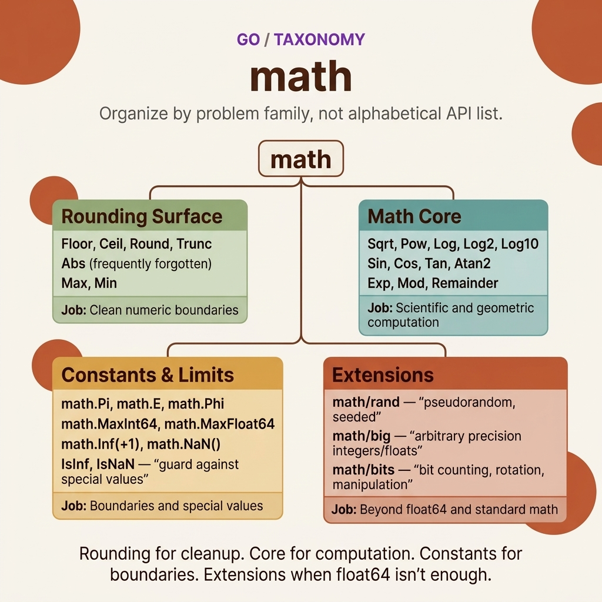
Cơ chế cốt lõi của Toán học — Hàm số & Hằng số rất rõ ràng. Những gì còn lại là cú pháp nhận dạng có vẻ gần như đúng nhưng lại đưa ra các lỗi dấu phẩy động hoặc các vấn đề bảo mật trong quá trình sản xuất.
| # | Mức độ nghiêm trọng | Lỗi | Hậu quả | Sửa chữa |
|---|---|---|---|---|
| 1 | 🔴 Gây tử vong | So sánh NaN: NaN != NaN | Điều kiện luôn sai | Sử dụng math.IsNaN() |
| 2 | 🔴 Gây tử vong | Tràn số nguyên không có lỗi | Giá trị sai im lặng | Kiểm tra: if a > math.MaxInt64 - b |
| 3 | 🟡 Chung | Độ chính xác nổi: 0.1 + 0.2 != 0.3 | Lỗi logic khi so sánh | Epsilon: math.Abs(a-b) < 1e-9 |
| 4 | 🟡 Chung | math.Max/Min chỉ chấp nhận float64 (trước Go 1.21) | Chi phí chuyển đổi loại | Tích hợp min() / max() Go 1.21+ |
| 5 | 🔵 Nhỏ | rand.IntN(0) hoảng loạn | Runtime sự cố | Kiểm tra n > 0 trước khi gọi |
🔴 Cạm bẫy số 1 — NaN là một "vi-rút" trong mã của bạn NaN (Không phải số) là một giá trị đặc biệt: mọi so sánh với NaN đều trả về sai, bao gồm NaN == NaN . Khi NaN xuất hiện trong một phép tính pipeline , nó sẽ lan truyền qua mọi thao tác: NaN + 5 = NaN , NaN * 0 = NaN . Kết quả: một báo cáo hiển thị NaN cho cột doanh thu và không ai biết nó bắt đầu sai từ khi nào.
Khắc phục: Kiểm tra math.IsNaN() sau mỗi lần chia float. Đặc biệt lưu ý rằng 0.0 / 0.0 = NaN (nó không panic thích chia số nguyên cho 0).
🔴 Cạm bẫy #2 — Tràn số nguyên ở chế độ im lặng Go không panic khi tràn số nguyên - nó bao quanh bằng cách sử dụng số học mô-đun. math.MaxInt64 + 1 bằng math.MinInt64 (một số âm!). Trong tính toán tài chính, điều này biến +$9.2 quintillion thành -$9.2 quintillion mà không có bất kỳ lỗi nào.
Khắc phục: Kiểm tra trước khi thêm: if a > math.MaxInt64 - b { / overflow / } . Hoặc sử dụng math/big cho các số vượt quá phạm vi.
---
Bạn đã khám phá phép toán package từ cơ bản đến độ chính xác tùy ý. Các tài nguyên dưới đây đi sâu hơn.
| Tài nguyên | Loại | Liên kết | Ghi chú |
|---|---|---|---|
math package | Chính thức | [pkg.go.dev/math](https://pkg.go.dev/math) | Tham chiếu API |
math/rand/v2 | Chính thức | [pkg.go.dev/math/rand/v2](https://pkg.go.dev/math/rand/v2) | Go 1.22+ ngẫu nhiên |
math/big | Chính thức | [pkg.go.dev/math/big](https://pkg.go.dev/math/big) | Độ chính xác tùy ý |
math/bits | Chính thức | [pkg.go.dev/math/bits](https://pkg.go.dev/math/bits) | Thao tác bit |
---
Nền tảng của Toán học — Hàm số & Hằng số rất rõ ràng. Các tiện ích mở rộng bên dưới giúp bạn đưa các phép toán số vào sản xuất với tính toán ngẫu nhiên, số lớn và tính toán khoa học an toàn bằng tiền điện tử.
| Gia hạn | Khi nào | Tại sao | Tệp/Liên kết |
|---|---|---|---|
math/bits | Thao tác bit | OnesCount, Len, RotateLeft | [pkg.go.dev/math/bits](https://pkg.go.dev/math/bits) |
crypto/rand | Bảo mật quan trọng ngẫu nhiên | Số ngẫu nhiên mật mã | [pkg.go.dev/crypto/rand](https://pkg.go.dev/crypto/rand) |
gonum.org/v1/gonum | Máy tính khoa học | Đại số tuyến tính, thống kê, FFT | [gonum.org](https://gonum.org) |
math/cmplx | số phức | Mandelbrot, xử lý tín hiệu | [pkg.go.dev/math/cmplx](https://pkg.go.dev/math/cmplx) |
constraints generic | Toán an toàn kiểu | Kẹp, Abs cho loại số any | [pkg.go.dev/golang.org/x/exp/constraints](https://pkg.go.dev/golang.org/x/exp/constraints) |
---
Điều hướng: [← fmt](./04-fmt.md) · [→ slices & maps](./06-slices-maps.md)
index out of range [5] with length 3 . Máy chủ gặp sự cố, trả lại 500 cho mọi khách hàng. Bạn mở mã và tìm thấy data := users[2:5] — một phụ- slice tham chiếu đến một array cơ bản mà append trong goroutine khác đã bị thu nhỏ. Hai dòng mã trông hoàn toàn vô hại đang âm thầm chia sẻ bộ nhớ mà bạn chưa từng biết đến.
A slice trong Go không phải là array — nó là chế độ xem vào array bên dưới. append có thể phân bổ một array hoàn toàn mới hoặc ghi đè lên cái hiện có tùy theo dung lượng. Trong khi đó, Maps cố tình ngẫu nhiên hóa thứ tự lặp lại - không phải là lỗi, mà là cách Go buộc bạn không bao giờ phụ thuộc vào trình tự truyền tải. Hiểu nhầm hai cấu trúc dữ liệu này là nguồn lỗi sản xuất phổ biến nhất trong Go .
Các hàm tích hợp cho Slices | Chức năng | Signature | Mô tả |
| -------- | ------------------------------- | --------------------------------- | |make | make([]T, len, cap) | Tạo slice với len và dung lượng |
| append | append(s []T, elems ...T) []T | Thêm phần tử, có thể phân bổ lại |
| copy | copy(dst, src []T) int | Sao chép phần tử, trả về số lượng đã sao chép |
| len | len(s []T) int | Số phần tử hiện tại |
| cap | cap(s []T) int | Dung lượng (bộ nhớ được cấp phát) |
| clear | clear(s []T) ( Go 1.21+) | Đặt tất cả các phần tử về giá trị 0 |
Các hàm tích hợp cho Maps | Chức năng | Signature | Mô tả |
| -------- | ----------------------------- | --------------------------------- | |make | make(map[K]V, hint) | Tạo map , gợi ý = kích thước dự kiến |
| delete | delete(m map[K]V, key K) | Xóa chìa khóa; không hoạt động nếu thiếu chìa khóa |
| len | len(m map[K]V) int | Số cặp khóa-giá trị |
| clear | clear(m map[K]V) ( Go 1.21+) | Xóa tất cả các mục |
Package slices ( Go 1.21+)
| Chức năng | Mô tả |
|---|---|
slices.Sort | Sắp xếp slice tại chỗ |
slices.SortFunc | Sắp xếp bằng bộ so sánh tùy chỉnh |
slices.Contains | Kiểm tra xem phần tử có tồn tại không |
slices.Index | Tìm chỉ số của phần tử |
slices.Delete | Xóa các phần tử theo phạm vi |
slices.Insert | Chèn phần tử vào vị trí |
slices.Compact | Xóa các bản sao liên tiếp |
slices.Reverse | Đảo ngược slice tại chỗ |
slices.Clip | Giảm dung lượng theo chiều dài |
---
Các thao tác trên trông có vẻ đơn giản trên giấy tờ. Phần có nhiều khả năng đánh lừa bạn nhất là cách trạng thái thực sự biến đổi tại runtime . Hình ảnh bên dưới đưa những cơ chế ẩn đó vào một mô hình tinh thần mà bạn nên ghi nhớ mỗi time khi gỡ lỗi một vấn đề về bộ nhớ.
Mã nguồn & Các ví dụ minh họa
Bạn có một danh sách người dùng và cần: thêm người dùng mới ( append ), xóa người dùng theo chỉ mục và sao chép danh sách để sao lưu. Slices và maps là hai cấu trúc dữ liệu bạn sử dụng nhiều nhất trong Go — nhưng chúng có kèm theo lỗi: append không thể sửa đổi bản gốc slice và delete trên map không panic nếu thiếu khóa.
Hiểu các hoạt động tích hợp ( make , append , copy , delete , len , cap ) là nền tảng cho mọi việc bạn làm với dữ liệu trong Go .
Đầu vào: append([]int{1,2}, 3) · Đầu ra: [1, 2, 3]> Khi len == cap , không còn chỗ trống trong array bên dưới. append phân bổ array mới (thường có dung lượng 2×), sao chép dữ liệu cũ và thêm phần tử mới. Giá trị trả về là tiêu đề slice mới trỏ đến array mới - nếu bạn không gán lại ( s = append(s, v) ), bạn sẽ mất tham chiếu.
s = append(s, v) . Sử dụng thành ngữ dấu phẩy-ok val, ok := m[key] để kiểm tra sự tồn tại của khóa một cách an toàn. clear() ( Go 1.21+) đặt lại bộ sưu tập trong khi vẫn giữ lại bộ nhớ được phân bổ. copy chỉ chuyển min(len(dst), len(src)) mục.Những thao tác cơ bản đó là đủ cho logic đơn giản. Nhưng các vòng lặp viết tay để tìm kiếm, sắp xếp hoặc xóa phạm vi rất dễ bị hỏng ở các cạnh - đó chính xác là lý do tại sao Go 1.21 đã kéo generic slices và maps packages vào thư viện chuẩn.
package main
import "fmt"
func main() {
// ━━━━━ Slice basics ━━━━━
s := make([]int, 0, 5)
fmt.Printf("len=%d cap=%d %v\n", len(s), cap(s), s) // len=0 cap=5 []
// ✅ Append — always reassign because append may create a new slice
s = append(s, 1, 2, 3)
fmt.Println(s) // [1 2 3]
// Append another slice
more := []int{4, 5, 6}
s = append(s, more...) // ✅ Spread operator
fmt.Println(s) // [1 2 3 4 5 6]
// ━━━━━ Copy ━━━━━
src := []int{10, 20, 30}
dst := make([]int, len(src))
n := copy(dst, src)
fmt.Printf("Copied %d items: %v\n", n, dst) // Copied 3 items: [10 20 30]
// ⚠️ Copy only copies min(len(dst), len(src)) items
small := make([]int, 2)
copy(small, src)
fmt.Println(small) // [10 20] — only 2 items
// ━━━━━ Slice expressions ━━━━━
a := []int{0, 1, 2, 3, 4, 5}
fmt.Println(a[2:4]) // [2 3] — from index 2 to 3
fmt.Println(a[:3]) // [0 1 2] — first 3
fmt.Println(a[3:]) // [3 4 5] — from index 3
// ━━━━━ Map basics ━━━━━
m := map[string]int{
"go": 1,
"python": 2,
"rust": 3,
}
// Access
fmt.Println(m["go"]) // 1
// ✅ Comma-ok pattern — check whether key exists
val, ok := m["java"]
fmt.Printf("val=%d, exists=%v\n", val, ok) // val=0, exists=false
// Delete
delete(m, "python")
fmt.Println(len(m)) // 2
// ✅ Clear (Go 1.21+) — remove all entries, keep map
clear(m)
fmt.Println(len(m)) // 0
}Trước Go 1.21, việc sắp xếp slice bắt buộc sort.Slice(s, func(i, j int) bool {...}) — dài dòng và không dài generic . Tìm một phần tử có nghĩa là viết một vòng lặp. So sánh hai slices có nghĩa là lặp lại từng phần tử. Package slices ( Go 1.21+) cung cấp các hàm generic : slices.Sort , slices.Contains , slices.Equal , slices.Compact — an toàn kiểu, ngắn gọn và thường nhanh hơn mã viết tay.
Đầu vào: slices.Contains([]string{"a","b","c"}, "b") · Đầu ra: true> sort.Slice sử dụng giao diện (interface){} + phản chiếu — chậm hơn. slices.Sort sử dụng generics — loại an toàn, không phản xạ, nhanh hơn ~30%. slices.SortFunc + cmp.Compare cung cấp một bộ so sánh tùy chỉnh an toàn hơn so với thủ công if a < b return -1 .
slices.Contains / Index để tìm kiếm, slices.Delete để xóa phạm vi, Sắp xếp + Thu gọn để có các giá trị duy nhất. slices.Reverse hoạt động tại chỗ. slices.Min / Max bao gồm các loại comparable . slices package xử lý tốt thế giới array một chiều. Nhưng vấn đề gai góc nhất nằm ở lãnh thổ map - nơi các hệ thống yêu cầu hợp nhất cấu hình, sao chép dữ liệu bị cô lập và tổng hợp theo nhóm cũng như nơi các bản sao nông bất cẩn tạo ra các lỗi thầm lặng. Đó là mục đích mà maps package được tạo ra.package main
import (
"cmp"
"fmt"
"slices"
)
func main() {
// ━━━━━ Sort ━━━━━
nums := []int{5, 3, 8, 1, 9, 2}
slices.Sort(nums)
fmt.Println(nums) // [1 2 3 5 8 9]
// SortFunc — custom comparator
type User struct {
Name string
Age int
}
users := []User{
{"Charlie", 30},
{"Alice", 25},
{"Bob", 28},
}
slices.SortFunc(users, func(a, b User) int {
return cmp.Compare(a.Age, b.Age) // ✅ cmp.Compare for type-safe comparison
})
fmt.Println(users)
// [{Alice 25} {Bob 28} {Charlie 30}]
// ━━━━━ Search ━━━━━
names := []string{"Alice", "Bob", "Charlie", "David"}
fmt.Println(slices.Contains(names, "Bob")) // true
fmt.Println(slices.Contains(names, "Eve")) // false
fmt.Println(slices.Index(names, "Charlie")) // 2
fmt.Println(slices.Index(names, "Eve")) // -1
// ━━━━━ Insert / Delete ━━━━━
s := []int{1, 2, 5, 6}
// Insert at index 2
s = slices.Insert(s, 2, 3, 4)
fmt.Println(s) // [1 2 3 4 5 6]
// Delete range [1, 3) — removes indices 1 and 2
s = slices.Delete(s, 1, 3)
fmt.Println(s) // [1 4 5 6]
// ━━━━━ Compact — remove consecutive duplicates ━━━━━
dup := []int{1, 1, 2, 2, 2, 3, 3, 1}
dup = slices.Compact(dup)
fmt.Println(dup) // [1 2 3 1] — only consecutive dups removed
// ✅ For unique values: sort first, then compact
all := []int{3, 1, 4, 1, 5, 9, 2, 6, 5, 3}
slices.Sort(all)
all = slices.Compact(all)
fmt.Println(all) // [1 2 3 4 5 6 9]
// ━━━━━ Other utilities ━━━━━
r := []int{1, 2, 3, 4, 5}
slices.Reverse(r)
fmt.Println(r) // [5 4 3 2 1]
fmt.Println(slices.Min([]int{5, 2, 8, 1})) // 1
fmt.Println(slices.Max([]int{5, 2, 8, 1})) // 8
}Bạn có cấu hình map và cần: hợp nhất các giá trị mặc định với phần ghi đè của người dùng, sao chép map để tránh trạng thái chia sẻ và thu thập tất cả các khóa cho đầu ra được sắp xếp. Trước Go 1.21, mỗi thao tác này đều yêu cầu các hàm tiện ích viết tay. Package maps ( Go 1.21+) cung cấp maps.Clone , maps.Copy , maps.Keys , maps.Values , maps.Equal — loại bỏ bản mẫu và tránh các lỗi phổ biến như sao chép nông và nhầm lẫn bản sao sâu.
Đầu vào: maps.Clone(map[string]int{"a": 1}) · Đầu ra: bản sao độc lập; sửa đổi nó không ảnh hưởng đến bản gốc> Tại sao maps.Copy ghi đè lên khóa?
maps.Copy(dst, src) sao chép tất cả các cặp khóa-giá trị từ src vào dst . Nếu một phím va chạm, src sẽ thắng. Đây là mẫu hợp nhất: mặc định + ghi đè. maps.Clone tạo ra một bản sao nông — maps / slices lồng nhau vẫn chia sẻ các tham chiếu. maps.Equal thực hiện đẳng thức sâu O(n) trên các giá trị map .maps.Clone cho bản sao nông, maps.Copy để hợp nhất/ghi đè. Mẫu theo nhóm: map[key][]Item + append . Bộ đếm tần số: map[key]int + ++ .---
package main
import (
"fmt"
"maps"
"slices"
)
func main() {
// ━━━━━ maps.Keys / maps.Values ━━━━━
inventory := map[string]int{
"laptop": 5,
"mouse": 50,
"keyboard": 30,
}
// ✅ Get sorted keys
keys := slices.Sorted(maps.Keys(inventory))
fmt.Println("Products:", keys) // [keyboard laptop mouse]
values := slices.Collect(maps.Values(inventory))
fmt.Println("Counts:", values)
// ━━━━━ maps.Clone — shallow copy ━━━━━
clone := maps.Clone(inventory)
clone["laptop"] = 10 // ✅ Does not affect original
fmt.Println("Original:", inventory["laptop"]) // 5
fmt.Println("Clone:", clone["laptop"]) // 10
// ━━━━━ maps.Equal — compare maps ━━━━━
m1 := map[string]int{"a": 1, "b": 2}
m2 := map[string]int{"a": 1, "b": 2}
m3 := map[string]int{"a": 1, "b": 3}
fmt.Println(maps.Equal(m1, m2)) // true
fmt.Println(maps.Equal(m1, m3)) // false
// ━━━━━ maps.Copy — merge maps ━━━━━
defaults := map[string]string{
"host": "localhost",
"port": "8080",
"mode": "debug",
}
overrides := map[string]string{
"port": "3000",
"mode": "production",
}
// ✅ Copy overrides into defaults — overrides win
maps.Copy(defaults, overrides)
fmt.Println(defaults)
// map[host:localhost mode:production port:3000]
// ━━━━━ Pattern: Group by ━━━━━
type Item struct {
Name string
Category string
}
items := []Item{
{"Go", "language"},
{"Python", "language"},
{"Docker", "tool"},
{"Rust", "language"},
{"K8s", "tool"},
}
grouped := make(map[string][]Item)
for _, item := range items {
grouped[item.Category] = append(grouped[item.Category], item)
}
for cat, group := range grouped {
fmt.Printf("%s: %d items\n", cat, len(group))
}
// ━━━━━ Pattern: Frequency counter ━━━━━
text := "go is great and go is fast"
freq := make(map[string]int)
for _, word := range []string{"go", "is", "great", "and", "go", "is", "fast"} {
freq[word]++
}
fmt.Println(freq)
// map[and:1 fast:1 go:2 great:1 is:2]
_ = text
}Sơ đồ trực quan & Luồng hoạt động (Visual Support)
Chủ đề này rất dễ bị đánh giá sai vì bề mặt API quá nhỏ. Nó trông giống như một số thao tác cơ bản, nhưng các lỗi thực sự lại bùng phát ở điểm giao nhau của bí danh, ngữ nghĩa nil và ranh giới đột biến. Hình ảnh bên dưới hiển thị chính xác ba điểm áp lực đó. Hình: Thẻ mô hình trí tuệ kết hợp bốn thứ bạn cần ghi nhớ đồng thời trong đầu khi làm việc với slices và maps : tiêu đề slice , hỗ trợ chia sẻ array , nil - map ngữ nghĩa và vai trò thực tế của slices / maps packages .
Với những ranh giới đó hiện đã hiển thị, mã bên dưới sẽ đọc rất khác: bạn sẽ không chỉ xem từng chức năng làm gì mà còn xem liệu thao tác đó có âm thầm giữ bí danh hay mở đường dẫn cho người gọi làm hỏng dữ liệu hay không.
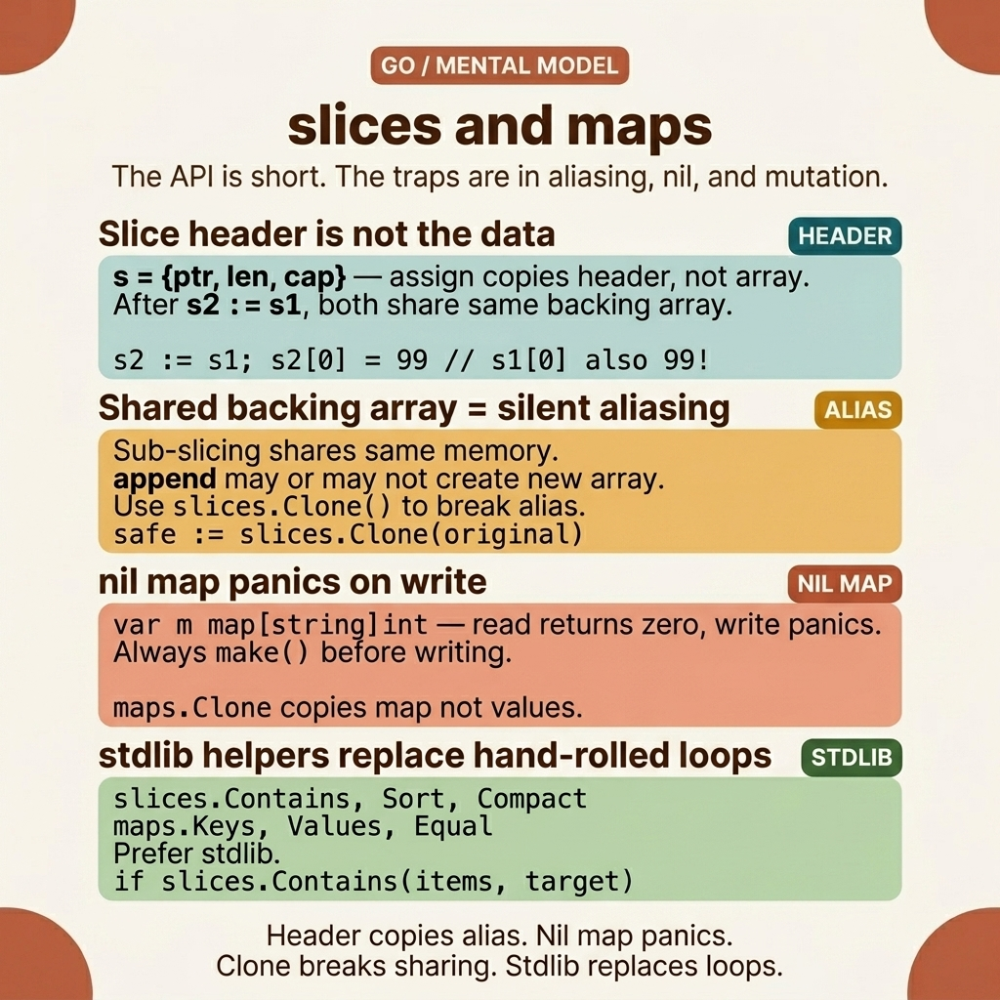
Các cơ chế chính xác đã có trong tay. Điều còn lại là nhận ra những điểm mà mã trông gần như đúng nhưng âm thầm tạo ra lỗi đột biến slice hoặc vấn đề đặt hàng map ngay trong quá trình sản xuất.
| # | Mức độ nghiêm trọng | Lỗi | Hậu quả | Sửa chữa |
|---|---|---|---|---|
| 1 | 🔴 Gây tử vong | Không gán lại append — append(s, v) làm mất dữ liệu | Mất dữ liệu | Luôn s = append(s, v) |
| 2 | 🔴 Gây tử vong | Đồng thời map đọc+ghi → panic | Runtime sự cố | sync.RWMutex hoặc sync.Map |
| 3 | 🔴 Gây tử vong | Nil map viết → panic | Runtime sự cố | make(map[K]V) hoặc theo nghĩa đen map[K]V{} |
| 4 | 🟡 Chung | Slice cổ phiếu cơ bản array | Sửa đổi phụ slice ảnh hưởng đến bản gốc | slices.Clone() hoặc copy() |
| 5 | 🟡 Chung | Lặp lại + xóa slice → bỏ qua các phần tử | Lỗi logic | Lặp lại ngược lại hoặc sử dụng slices.DeleteFunc |
🔴 Cạm bẫy #1 — Nối thêm dữ liệu đang âm thầm nuốt chửng
Mã này biên dịch, chạy và trông hoàn toàn chính xác:``go
func addItem(items []int, val int) {
append(items, val) // ← looks reasonable, but data is lost
}
``append trả về mới slice (có khả năng trỏ đến array mới nếu dung lượng đã đầy). Nếu bạn không gán lại items = append(items, val) , giá trị mới sẽ bị loại bỏ. Trình biên dịch Go không đưa ra cảnh báo - đây là lỗi logic thuần túy. Tồi tệ hơn: nếu dung lượng vẫn còn, append ghi vào array ban đầu nhưng slice của tiêu đề len không được cập nhật - dữ liệu tồn tại nhưng vô hình.
Khắc phục: Luôn s = append(s, v) . Nếu bạn cần sửa đổi slice bên trong một hàm: trả về slice mới hoặc sử dụng *[]T .
🔴 Cạm bẫy #2 — Map sự cố đồng thời mà bạn không thể tái tạo Maps trong Go không phải là thread -safe. Hai các goroutine đọc và ghi cùng một map kích hoạt một lỗi sập runtime (runtime panic) (không phải một cuộc chạy đua dữ liệu — Go runtime cố ý gặp sự cố thông qua phát hiện [[E19]]] đồng thời):
``go
m := map[string]int{}
go func() { m["a"] = 1 }()
go func() { _ = m["a"] }()
// fatal Lỗi biên dịch / Runtime: đồng thời map read and map write
`Lỗi này không ổn định — nó chỉ xuất hiện khi bộ lập lịch xen kẽ vào đúng thời điểm. Vượt qua các bài kiểm tra, vượt qua giai đoạn, sự cố trong quá trình sản xuất. Sử dụng sync.RWMutex để truy cập đồng thời hoặc sync.Map cho khối lượng công việc đọc nhiều.
🔴 Cạm bẫy #3 — Nil map : im lặng khi đọc, gây chết người khi ghi
Dòng này sẽ không bao giờ tồn tại sau một yêu cầu duy nhất:
`go
var config map[string]string // nil map — points to nothing
config["host"] = "localhost" // panic: assignment to entry in nil map
`Đây là một lỗi thô sơ nhưng kinh điển khi việc chèn cấu hình hoặc phân tích cú pháp JSON bỏ qua quá trình khởi tạo. A nil map cho phép đọc an toàn (nó hoạt động như một map trống và trả về giá trị 0 mà không gặp sự cố), nhưng any ghi gây ra panic ngay lập tức. Luôn sử dụng make(map[K]V) — và chuyển gợi ý kích thước nếu bạn biết số lượng mục nhập dự kiến.
🟡 Cạm bẫy #4 — Slice bộ nhớ chung
Ví dụ bên dưới minh họa cách một sub- slice (một khung nhìn) đi qua ranh giới và sửa đổi array ban đầu:
`go
package main
import "fmt"
func main() {
original := []int{1, 2, 3, 4, 5}
sub := original[1:3] // [2 3] — shares underlying array!
sub[0] = 99
fmt.Println(original) // [1 99 3 4 5] — ⚠️ original was modified!
// ✅ Giải pháp khắc phục: clone before modifying
safe := make([]int, len(original[1:3]))
copy(safe, original[1:3])
safe[0] = 42
fmt.Println(original) // [1 99 3 4 5] — unaffected
}
`### 🟡 Cạm bẫy #5 — Lặp lại và xóa: bước nhảy vọt của chỉ số
Thói quen xóa các phần tử trong khi lặp về phía trước là một cái bẫy - array co lại dưới chân bạn:
`go
users := []string{"Bob", "Alice", "Alice", "Eve"}
for i, u := range users {
if u == "Alice" {
users = append(users[:i], users[i+1:]...) // ⚠ Index shifts, skipping adjacent element
}
}
`Quét slice từ trước ra sau trong khi loại bỏ các phần tử gây ra sự dịch chuyển chỉ mục khiến âm thầm bỏ qua các mục lân cận. Giải pháp dứt khoát là slices.DeleteFunc` , xử lý quá trình quét toàn bộ mà không có nguy cơ any bỏ qua lần lặp tiếp theo.
---
Bạn đã xem qua slices & maps từ cơ bản đến các mẫu đồng thời. Các tài nguyên dưới đây sẽ đưa bạn sâu hơn.
| Tài nguyên | Loại | Liên kết | Ghi chú |
|---|---|---|---|
slices package | Chính thức | [pkg.go.dev/slices](https://pkg.go.dev/slices) | Go 1.21+ generic slices |
maps package | Chính thức | [pkg.go.dev/maps](https://pkg.go.dev/maps) | Go 1.21+ generic maps |
| Go Blog — Slices giới thiệu | Blog | [go.dev/blog/slices-intro](https://go.dev/blog/slices-intro) | Cơ khí nội bộ |
| Go Blog — Go Slices cách sử dụng | Blog | [go.dev/blog/slices](https://go.dev/blog/slices) | Thực tiễn tốt nhất |
| Go Wiki — SliceTricks | Wiki | [go.dev/wiki/SliceTricks](https://go.dev/wiki/SliceTricks) | Mẫu cổ điển |
---
Bạn vừa thành thạo các thao tác slice và map trong thế giới thoải mái của việc thực thi tuần tự đơn goroutine . Mã chạy có thể dự đoán được — nhưng khối lượng công việc sản xuất thực tế hiếm khi hoạt động tách biệt.
Khi hàng nghìn yêu cầu đồng thời tấn công dịch vụ của bạn và các goroutine bắt đầu tranh giành cấu hình dùng chung map , mọi bài học về maps đơn giản từ bài viết này đột nhiên sụp đổ. Đó là khi sync.Map đi vào hình ảnh. Và khi bạn cần một cấu trúc dữ liệu có thể yield phần tử có mức độ ưu tiên cao nhất một cách hiệu quả thay vì quét toàn bộ slice , container/heap là cánh cửa tiếp theo sẽ mở ra.
| Gia hạn | Khi nào | Tại sao | Tệp/Liên kết |
|---|---|---|---|
sync.Map | Truy cập đồng thời map | Thread -safe map tích hợp | [pkg.go.dev/sync#Map](https://pkg.go.dev/sync#Map) |
container/heap | Hàng đợi ưu tiên | Heap giao diện (interface) cho các loại tùy chỉnh | [pkg.go.dev/container/heap](https://pkg.go.dev/container/heap) |
container/list | Danh sách liên kết đôi | O(1) chèn/xóa giữa | [pkg.go.dev/container/list](https://pkg.go.dev/container/list) |
container/ring | Bộ đệm tròn | Bộ đệm xoay có kích thước cố định | [pkg.go.dev/container/ring](https://pkg.go.dev/container/ring) |
| Generics bộ sưu tập | Tiện ích loại an toàn | Thư viện lo , samber/lo | [github.com/samber/lo](https://github.com/samber/lo) |
---
Điều hướng: [← math](./05-math.md) · [→ Functions README](./README.md)
Nhà sản xuất xác định phương thức 8 các giao diện (interface) buộc người tiêu dùng thực hiện các hành vi mà họ không bao giờ sử dụng. Sau đó, các thử nghiệm yêu cầu triển khai mock đầy đủ cho một phương thức duy nhất. Cách khắc phục: người tiêu dùng xác định giao diện (interface) tối thiểu họ cần.
exportReport(dest ???) bắt đầu ghi vào một tập tin. Lần chạy nước rút tiếp theo: S3. Tiếp theo: bộ đệm thử nghiệm. Mã hóa cứng Go giải quyết vấn đề này bằng io.Writer — 1 phương thức: Write([]byte) (int, Lỗi biên dịch / Runtime) . Các tệp, phản hồi HTTP, bytes.Buffer , strings.Builder và người viết S3 đều đáp ứng điều đó. Các hàm chấp nhận io.Writer không cần thay đổi khi đích thay đổi. không có từ khóa implements — một loại thỏa mãn giao diện (interface) bằng cách sử dụng đúng phương thức signatures . Đây là kiểu gõ cấu trúc.
Sự hài lòng tiềm ẩn có một khía cạnh sắc nét: Go các giao diện (interface) lưu trữ (Kiểu dữ liệu, value) nội bộ. A nil *bytes.Buffer được gán cho một io.Writer là không a nil giao diện (interface) — w != nil trả về true và w.Write() hoảng loạn. Cái bẫy này được giải nén trong PITFALS.
1.1 Giao diện (interface) Quy tắc
| Quy tắc | Mô tả |
|---|---|
| ngầm định | Không có từ khóa implements — phương thức đối sánh signatures là đủ |
| Nhỏ | Ưu tiên 1–2 phương pháp để có khả năng kết hợp tối đa |
| Đặt tên | Phương thức đơn các giao diện (interface) sử dụng hậu tố -er : Reader , Writer |
| Sự kết hợp (composition) | Nhúng các giao diện (interface) để kết hợp: ReadWriter = Reader + Writer |
any | Bí danh giao diện (interface){} - chấp nhận loại any |
1.2 Thư viện chuẩn Các giao diện (interface) — Tham khảo
| Giao diện (interface) | Phương pháp | Package | Trường hợp sử dụng |
|---|---|---|---|
io.Reader | Read([]byte) (int, Lỗi biên dịch / Runtime) | io | Đọc từ nguồn byte |
io.Writer | Write([]byte) (int, Lỗi biên dịch / Runtime) | io | Ghi vào đích byte |
io.Closer | Close() Lỗi biên dịch / Runtime | io | Phát hành một nguồn tài nguyên |
fmt.Stringer | String() string | fmt | Biểu diễn chuỗi tùy chỉnh |
Lỗi biên dịch / Runtime | Lỗi biên dịch / Runtime() string | dựng sẵn | Giá trị lỗi |
sort.Giao diện (interface) | Len, Less, Swap | sắp xếp | Sắp xếp bộ sưu tập tùy chỉnh |
http.Handler | ServeHTTP(w, r) | mạng/http | Trình xử lý yêu cầu HTTP |
json.Marshaler | MarshalJSON() ([]byte, Lỗi biên dịch / Runtime) | mã hóa/json | Mã hóa JSON tùy chỉnh |
Tiêu chuẩn các giao diện (interface) ở trên bao gồm hầu hết các trường hợp sử dụng. Các chế độ thất bại bên dưới bộc lộ những cái bẫy có thể bắt được ngay cả những nhà phát triển Go có kinh nghiệm.
1.3 Các kiểu lỗi
| Khiếm khuyết | Nguyên nhân | Hậu quả | Sửa chữa |
|---|---|---|---|
| Nil giao diện (interface) vs giao diện (interface) giữ nil | var w io.Writer ( nil ) vs var w io.Writer = (bytes.Buffer)(nil) (không- nil !) | w != nil là đúng → w.Write() hoảng sợ | Trả về nil một cách rõ ràng, không phải là nil con trỏ |
| Con trỏ receiver so với giá trị | func (t T) Phương thức() → chỉ *T thỏa mãn giao diện (interface) , không phải T | Lỗi biên dịch im lặng | Sử dụng con trỏ một cách nhất quán |
| Chất béo các giao diện (interface) (>3 phương pháp) | Quá nhiều phương thức trong một giao diện (interface) | Khó mock , khó kiểm tra | Phân tách thành các giao diện (interface) nhỏ hơn |
---
Lý thuyết là rõ ràng. Điều nguy hiểm là sự thỏa mãn tiềm ẩn có thể bị phá vỡ một cách âm thầm: thêm một phương thức vào giao diện (interface) và mọi loại đã thỏa mãn trước đó sẽ ngừng biên dịch - không có dòng implements để tìm kiếm.
Mã nguồn & Các ví dụ minh họa
implements — phương thức đối sánh signatures là yêu cầu duy nhất. []Shape giữ loại any đáp ứng hợp đồng.Thang đo mức độ hài lòng ngầm định vì stdlib sử dụng cùng một mẫu: io.Reader là phương thức 1 giao diện (interface) được hàng trăm loại thỏa mãn. Ví dụ tiếp theo cho thấy cách soạn thảo và trang trí cho người đọc.
---
package main
import "fmt"
// ✅ Define interface — small, focused (2 methods)
type Shape interface {
Area() float64
Perimeter() float64
}
// ✅ Rectangle implements Shape IMPLICITLY
type Rectangle struct {
Width, Height float64
}
func (r Rectangle) Area() float64 { return r.Width * r.Height }
func (r Rectangle) Perimeter() float64 { return 2 * (r.Width + r.Height) }
func (r Rectangle) String() string { return fmt.Sprintf("Rect(%gx%g)", r.Width, r.Height) }
// ✅ Circle also implements Shape — no "implements" keyword
type Circle struct {
Radius float64
}
func (c Circle) Area() float64 { return 3.14159 * c.Radius * c.Radius }
func (c Circle) Perimeter() float64 { return 2 * 3.14159 * c.Radius }
// ✅ Accept interface → works with ANY Shape implementation
func PrintShape(s Shape) {
fmt.Printf("Area=%.2f Perimeter=%.2f\n", s.Area(), s.Perimeter())
}
func TotalArea(shapes []Shape) float64 {
total := 0.0
for _, s := range shapes {
total += s.Area()
}
return total
}
func main() {
shapes := []Shape{
Rectangle{10, 5},
Circle{7},
Rectangle{3, 4},
}
for _, s := range shapes {
PrintShape(s)
}
fmt.Printf("Total: %.2f\n", TotalArea(shapes))
}io.Reader hoạt động với mọi loại có Read . Thêm phương thức thứ hai và bạn loại trừ một nửa stdlib. các giao diện (interface) nhỏ tối đa hóa khả năng kết hợp.
Tại sao trang trí? Go không có sự kế thừa (inheritance) . Thay vào đó, hãy bọc một io.Reader bên trong một io.Reader khác để thêm hành vi. Stack họ: &GzipReader{&UpperReader{fileReader}} . Mỗi lớp là độc lập và có thể kiểm tra được.
io.Reader / io.Writer để tách khỏi các loại bê tông. Trình trang trí thay thế sự kế thừa (inheritance) cho hành vi phân lớp.---
package main
import (
"bytes"
"fmt"
"io"
"os"
"strings"
)
// ✅ Custom type implementing io.Reader — decorator pattern
type UpperReader struct {
reader io.Reader
}
func (u *UpperReader) Read(p []byte) (int, error) {
n, err := u.reader.Read(p)
for i := range n {
if p[i] >= 'a' && p[i] <= 'z' {
p[i] -= 32 // Convert to uppercase
}
}
return n, err
}
// ✅ Accept io.Reader → works with ANY reader
func CountWords(r io.Reader) (int, error) {
data, err := io.ReadAll(r)
if err != nil {
return 0, err
}
words := strings.Fields(string(data))
return len(words), nil
}
func main() {
// ✅ strings.Reader implements io.Reader
count, _ := CountWords(strings.NewReader("hello world foo bar"))
fmt.Println("Words:", count) // 4
// ✅ bytes.Buffer implements io.Reader AND io.Writer
var buf bytes.Buffer
buf.WriteString("data from buffer")
count, _ = CountWords(&buf)
fmt.Println("Words:", count) // 3
// ✅ io.Copy — works with ANY Reader→Writer pair
src := strings.NewReader("Hello, 世界")
io.Copy(os.Stdout, src)
fmt.Println()
// ✅ Compose readers — decorator pattern: UpperReader wraps any Reader
upper := &UpperReader{reader: strings.NewReader("hello go")}
io.Copy(os.Stdout, upper) // HELLO GO
fmt.Println()
}Tại sao biên dịch- time bảo vệ? var Writer = (MyWriter)(nil) không biên dịch được time nếu MyWriter không triển khai Writer . Điều này phát hiện các phương thức còn thiếu trước khi chạy thử nghiệm.
var I = (*T)(nil) để biên dịch- time xác minh. Loại công tắc xử lý công văn runtime một cách an toàn.---
package main
import "fmt"
// ✅ Small interfaces — 1 method each
type Reader interface {
Read(p []byte) (n int, err error)
}
type Writer interface {
Write(p []byte) (n int, err error)
}
type Closer interface {
Close() error
}
// ✅ Interface composition — embed to combine
type ReadWriter interface {
Reader
Writer
}
type ReadWriteCloser interface {
Reader
Writer
Closer
}
// ✅ Type assertion — safe comma-ok pattern
func describe(i interface{}) {
// ❌ UNSAFE: s := i.(string) — panics if wrong type
// ✅ Safe assertion with comma-ok
if s, ok := i.(string); ok {
fmt.Println("String:", s)
return
}
// ✅ Type switch — runtime dispatch by type
switch v := i.(type) {
case int:
fmt.Println("Int:", v*2)
case string:
fmt.Println("String:", v)
case bool:
fmt.Println("Bool:", v)
default:
fmt.Printf("Unknown: %T = %v\n", v, v)
}
}
// ✅ Compile-time interface guard — fails at compile if not satisfied
type MyWriter struct{}
func (w *MyWriter) Write(p []byte) (int, error) {
return len(p), nil
}
// This line fails at compile-time if *MyWriter doesn't implement Writer
var _ Writer = (*MyWriter)(nil)
func main() {
describe(42)
describe("hello")
describe(true)
describe(3.14)
}Sơ đồ trực quan & Luồng hoạt động (Visual Support)
Hầu hết sự nhầm lẫn giao diện (interface) xuất phát từ việc chiếu hệ thống phân cấp lớp OOP lên kiểu cấu trúc của Go . Hình ảnh này củng cố ba điều bạn cần nắm giữ đồng thời: sự hài lòng tiềm ẩn, cặp (Kiểu dữ liệu, value) và bẫy nil - giao diện (interface) . Hình: Mô hình tinh thần cho Go các giao diện (interface) — sự hài lòng tiềm ẩn, giao diện (interface) sự kết hợp (composition) , và sự khác biệt giữa nil - giao diện (interface) so với nil -value.
Với mô hình này, mã bên dưới có cách đọc khác nhau: bạn sẽ thấy không chỉ chức năng của từng mẫu mà còn thấy hợp đồng ngầm có thể bị phá vỡ ở đâu.
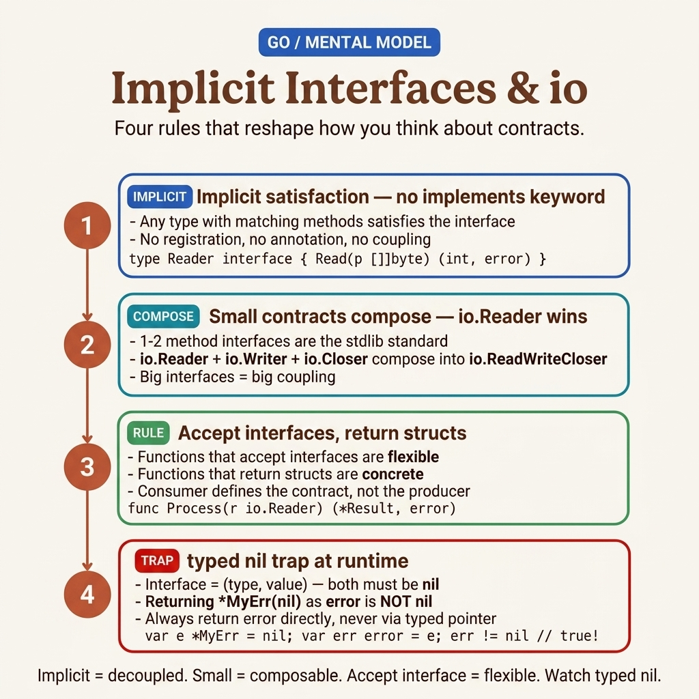
Cơ chế của Các giao diện (interface) rất rõ ràng. Những gì còn lại là nhận dạng các mẫu trông có vẻ chính xác nhưng gây ra lỗi runtime hoặc lỗi loại im lặng.
| # | Mức độ nghiêm trọng | Khiếm khuyết | Hậu quả | Sửa chữa |
|---|---|---|---|---|
| 1 | 🔴 Gây tử vong | Nil giao diện (interface) vs giao diện (interface) giữ nil | w != nil là đúng nhưng w.Write() hoảng sợ | Trả về nil một cách rõ ràng, không phải là nil con trỏ |
| 2 | 🔴 Gây tử vong | Không an toàn khẳng định kiểu (type assertion) i.(string) | Hoảng sợ nếu gõ sai | Sử dụng dấu phẩy-ok: s, ok := i.(string) |
| 3 | 🟡 Chung | Con trỏ receiver không bao gồm sự hài lòng về giá trị | T không đáp ứng giao diện (interface) yêu cầu phương thức *T | Sử dụng con trỏ receivers một cách nhất quán |
| 4 | 🟡 Chung | Chất béo các giao diện (interface) (>3 phương pháp) | Khó mock , khó kiểm tra | Phân tách thành phương thức 1–2 các giao diện (interface) |
| 5 | 🟡 Chung | Trả về các giao diện (interface) thay vì các loại cụ thể | Người gọi không thể truy cập các phương thức cụ thể | "Chấp nhận các giao diện (interface) , trả về structs " |
| 6 | 🔵 Nhỏ | Lạm dụng giao diện (interface){} / any | Mất an toàn kiểu | Thay vào đó, hãy sử dụng generics ( Go 1.18+) |
🔴 Cạm bẫy #1 — Nil giao diện (interface) bẫy
A Go giao diện (interface) lưu trữ (Kiểu dữ liệu, value) . Trả về một nil con trỏ đã nhập sẽ bao bọc nó trong một nil giao diện (interface) - w != nil là true , nhưng việc gọi phương thức any sẽ gây hoảng loạn.``go
func getWriter() io.Writer {
var buf *bytes.Buffer // nil
return buf // ❌ giao diện (interface){Kiểu dữ liệu: *Buffer, value: nil} — w != nil is true!
}
// Giải pháp khắc phục: return nil explicitly
func getWriter() io.Writer { return nil }
`Quy tắc: Không bao giờ trả lại nil con trỏ đã nhập dưới dạng giao diện (interface) . Trả về nil trực tiếp.
🔴 Cạm bẫy #2 — Xác nhận kiểu panic s := i.(string) hoảng sợ nếu i không phải là một chuỗi. Không giống như các ngôn ngữ khác, Go không trả về giá trị mặc định - nó bị lỗi.
Khắc phục: Luôn sử dụng dạng dấu phẩy-ok: s, ok := i.(string)` .
---
---
| Tài nguyên | Loại | Liên kết | Mô tả |
|---|---|---|---|
| Go Chuyến tham quan | Chính thức | [go.dev/tour/methods/9](https://go.dev/tour/methods/9) | Hướng dẫn tương tác giao diện (interface) |
| io Package | Chính thức | [pkg.go.dev/io](https://pkg.go.dev/io) | Truyền phát lõi các giao diện (interface) |
| Có hiệu lực Go | Chính thức | [go.dev/doc/effectivego#các giao diện (interface)](https://go.dev/doc/effectivego#các giao diện (interface)) | Hướng dẫn đặt tên và thiết kế |
---
Nền tảng của Các giao diện (interface) đã được giải quyết. Các tiện ích mở rộng bên dưới kết nối các mẫu giao diện (interface) với thử nghiệm, generics và HTTP sản xuất.
| Gia hạn | Khi nào | Tại sao | Tệp/Liên kết |
|---|---|---|---|
| DI & Giả lập (mocking) | Thử nghiệm với các phần phụ thuộc bị cô lập | Thay thế các triển khai thực tế bằng mocks qua các giao diện (interface) | [02-di-giả lập (mocking)-patterns.md](./02-di-giả lập (mocking)-patterns.md) |
| Generics | Các chức năng tái sử dụng an toàn kiểu | Ràng buộc các tham số loại với các giao diện (interface) | [../types/02-generics.md](../types/02-generics.md) |
| Trình xử lý HTTP | Xây dựng dịch vụ web | http.Handler là phương thức 1 giao diện (interface) | [../../đồng thời (concurrency)/03-context.md](../../đồng thời (concurrency)/03-context.md) |
| loại. Giao diện (interface) | Sắp xếp tùy chỉnh | Len , Less , Swap để đặt hàng bộ sưu tập | [pkg.go.dev/sort](https://pkg.go.dev/sort) |
---
Điều hướng: [← Structs](../structs/) · [→ DI & Giả lập (mocking) Patterns](./02-di-giả lập (mocking)-patterns.md)
Trình xử lý của bạn gọi database , bộ đệm và API bên ngoài. Việc kiểm tra nó yêu cầu Postgres, Redis và máy chủ HTTP mock đang chạy. CI mất 5 phút mỗi lần chạy. Cách khắc phục: xác định các giao diện (interface) cho từng phần phụ thuộc, đưa chúng vào thông qua hàm tạo và hoán đổi các triển khai thực tế cho mocks trong bộ nhớ trong quá trình kiểm tra.
GetUser đạt database . Mỗi bản ghi hạt giống thử nghiệm, chạy truy vấn và dọn dẹp. CI tạo ra các thùng chứa Postgres cho mọi bộ phần mềm. Chạy 200 bài kiểm tra mất 4 phút. Thay thế loại bê tông UserRepository bằng giao diện (interface) , thêm map được hỗ trợ mock và các thử nghiệm sẽ chạy trong micro giây.
Đây là Tiêm phụ thuộc (Dependency Injection) trong Go : không khung, không trang trí, không phản chiếu. Xác định một giao diện (interface) ở người tiêu dùng, chấp nhận nó trong hàm tạo và chuyển phần triển khai thực sự trong main() và mock trong _test.go .
DI Nguyên tắc trong Go | Nguyên tắc | Mô tả | Tại sao |
| --- | --- | --- | | Do người tiêu dùng xác định các giao diện (interface) | Người tiêu dùng (dịch vụ) xác định giao diện (interface) , không phải nhà sản xuất (repo) | Loại bỏ khớp nối nhập khẩu | | Tiêm hàm tạo | Các phần phụ thuộc được truyền dưới dạng đối số của hàm tạo | Rõ ràng, có thể theo dõi trong IDE | | Nhỏ các giao diện (interface) | 1–3 phương thức cho mỗi giao diện (interface) | Dễ mock , dễ soạn | | Không có khung DI | Không có thùng chứa, không có sự phản ánh | Biên dịch- time an toàn, không có ma thuật |Chế độ lỗi
| Khiếm khuyết | Nguyên nhân | Hậu quả | Sửa chữa |
|---|---|---|---|
| Chất béo các giao diện (interface) (hơn 10 phương pháp) | giao diện (interface) đơn cho tất cả các hoạt động repo | Mỗi mock phải triển khai hơn 10 phương thức | Chia theo trường hợp sử dụng (Trình đọc, Trình ghi, Trình xóa) |
| Phía nhà sản xuất các giao diện (interface) | Giao diện (interface) được xác định bên cạnh phần triển khai | Người tiêu dùng buộc phải nhập khẩu nhà sản xuất package | Xác định giao diện (interface) tại người tiêu dùng |
| Phụ thuộc cụ thể | Trường Struct là *PostgresRepo không phải UserRepo | Không thể thay thế mocks | Sử dụng các loại giao diện (interface) trong các trường struct |
---
Mã nguồn & Các ví dụ minh họa
---
// ✅ Define interface at consumer (UserService package)
type UserRepository interface {
FindByID(ctx context.Context, id string) (*User, error)
Create(ctx context.Context, user *User) error
Delete(ctx context.Context, id string) error
}
// ✅ Service depends on interface, not concrete type
type UserService struct {
repo UserRepository // interface field
}
// ✅ Constructor injection — explicit, no magic
func NewUserService(repo UserRepository) *UserService {
return &UserService{repo: repo}
}
func (s *UserService) GetUser(ctx context.Context, id string) (*User, error) {
return s.repo.FindByID(ctx, id)
}Tại sao _ cho context.Context ? Các trường hợp thử nghiệm sử dụng context.Background() — không cần hết thời gian chờ hoặc hủy. Dấu gạch dưới báo hiệu rằng tham số này không được sử dụng có chủ ý.
---
// ✅ Mock implementation — in-memory, no DB dependency
type MockUserRepo struct {
users map[string]*User
}
func NewMockUserRepo() *MockUserRepo {
return &MockUserRepo{users: make(map[string]*User)}
}
func (m *MockUserRepo) FindByID(_ context.Context, id string) (*User, error) {
user, ok := m.users[id]
if !ok {
return nil, apperror.ErrNotFound
}
return user, nil
}
func (m *MockUserRepo) Create(_ context.Context, user *User) error {
m.users[user.ID] = user
return nil
}
func (m *MockUserRepo) Delete(_ context.Context, id string) error {
delete(m.users, id)
return nil
}
// ✅ Test — inject mock, no DB, microsecond execution
func TestGetUser(t *testing.T) {
mockRepo := NewMockUserRepo()
mockRepo.users["1"] = &User{ID: "1", Name: "Alice"}
service := NewUserService(mockRepo) // inject mock
user, err := service.GetUser(context.Background(), "1")
assert.NoError(t, err)
assert.Equal(t, "Alice", user.Name)
}``bash
# Install mockery
go install github.com/vektra/mockery/v2@latest
# Generate mock from giao diện (interface) mockery --name=UserRepository --dir=./internal/domain --output=./internal/domain/mocks ``
mock.Anything lại dành cho ngữ cảnh? Giá trị ngữ cảnh khác nhau giữa các thử nghiệm. mock.Anything khớp với giá trị any , giữ kỳ vọng tập trung vào tham số kinh doanh ( "1" ).
Tại sao AssertExpectations ? Không có nó, bài kiểm tra sẽ vượt qua ngay cả khi mock chưa bao giờ được gọi. AssertExpectations xác minh rằng mọi kỳ vọng được khai báo đều thực sự được viện dẫn.
mockery loại bỏ bản soạn sẵn cho các giao diện (interface) lớn. Kết hợp với AssertExpectations để ngăn chặn kết quả dương tính giả.---
// Generated: internal/domain/mocks/UserRepository.go
// ✅ No manual mock code — all auto-generated
func TestGetUser_WithMockery(t *testing.T) {
mockRepo := mocks.NewUserRepository(t)
// ✅ Setup expectations — declarative
mockRepo.EXPECT().
FindByID(mock.Anything, "1").
Return(&User{ID: "1", Name: "Alice"}, nil)
service := NewUserService(mockRepo)
user, err := service.GetUser(context.Background(), "1")
assert.NoError(t, err)
assert.Equal(t, "Alice", user.Name)
mockRepo.AssertExpectations(t) // ✅ Verify all expectations met
}Sơ đồ trực quan & Luồng hoạt động (Visual Support)
Cơ chế của DI & Giả lập (mocking) rất rõ ràng. Những gì còn lại là nhận ra các mẫu gây ra độ tin cậy của bài kiểm tra sai.
| # | Mức độ nghiêm trọng | Khiếm khuyết | Hậu quả | Sửa chữa |
|---|---|---|---|---|
| 1 | 🔴 Gây tử vong | Thiếu AssertExpectations trên mocks | Kiểm thử đạt ngay cả khi các phương thức dự kiến không bao giờ được gọi | Luôn gọi mockRepo.AssertExpectations(t) |
| 2 | 🟡 Chung | Chất béo các giao diện (interface) (hơn 10 phương pháp) | Mọi mock phải triển khai tất cả các phương thức | Tách các giao diện (interface) theo trường hợp sử dụng |
| 3 | 🟡 Chung | Giao diện (interface) được xác định tại nhà sản xuất, không phải người tiêu dùng | Người tiêu dùng nhập nhà sản xuất package | Xác định giao diện (interface) tại người tiêu dùng |
| 4 | 🟡 Chung | Các loại struct được mã hóa cứng trong hàm signatures | Không thể thay thế mocks | Chấp nhận các giao diện (interface) , không phải loại cụ thể |
| 5 | 🔵 Nhỏ | mocks được thiết kế quá mức với logic phức tạp | Mock kiểm tra mock , không phải mã | Giữ mocks đơn giản: trả về các giá trị cố định |
🔴 Cạm bẫy số 1 — Thiếu xác minh khẳng định
Đã tạo mocks ghi lại các kỳ vọng nhưng không tự động thực thi chúng. Nếu không có AssertExpectations(t) , thử nghiệm sẽ vượt qua ngay cả khi phương thức mock không bao giờ được gọi — một kết quả dương tính giả che giấu các lỗi thực sự.
---
---
| Tài nguyên | Loại | Liên kết | Mô tả |
|---|---|---|---|
| chế nhạo | Công cụ | [github.com/vektra/mockery](https://github.com/vektra/mockery) | Tự động tạo mocks từ các giao diện (interface) |
| Go Giao diện (interface) Các phương pháp hay nhất | Chính thức | [go.dev/wiki/CodeReviewComments#các giao diện (interface)](https://github.com/golang/go/wiki/CodeReviewComments#các giao diện (interface)) | Giao diện (interface) hướng dẫn đặt tên và thiết kế |
| google/dây | Công cụ | [github.com/google/wire](https://github.com/google/wire) | Biên dịch- time tiêm phụ thuộc (Dependency Injection) |
---
Nền tảng của DI & Giả lập (mocking) đã được giải quyết. Các tiện ích mở rộng bên dưới kết nối các mẫu DI để kiểm tra quy trình làm việc và nối dây sản xuất.
| Gia hạn | Khi nào | Tại sao | Tệp/Liên kết |
|---|---|---|---|
| Ẩn Các giao diện (interface) | Hiểu cơ học giao diện (interface) | Nền tảng cho các hợp đồng do người tiêu dùng xác định | [01-ngầm định (implicit)-io-patterns.md](./01-ngầm định (implicit)-io-patterns.md) |
| Kiểm tra theo hướng bảng | Cấu trúc các ca kiểm thử một cách có hệ thống | Kết hợp với DI mocks để có phạm vi phủ sóng toàn diện | [../../testing/01-table-driven-giả lập (mocking).md](../testing/01-table-driven-giả lập (mocking).md) |
| google/dây | Đồ thị phụ thuộc phức tạp | Biên dịch- tạo mã time DI cho các ứng dụng lớn | [github.com/google/wire](https://github.com/google/wire) |
---
Điều hướng: [← Ngầm định (implicit) Các giao diện (interface)](./01-ngầm định (implicit)-io-patterns.md) · [→ Structs](../structs/01-sự kết hợp (composition)-embedding.md)
Trình xử lý API của bạn gọi một dịch vụ, dịch vụ này gọi một kho lưu trữ, gọi là PostgreSQL. Truy vấn không thành công với connection refused . Nhật ký xử lý: "something went wrong" . Ba giờ sau, kỹ sư trực vẫn không thể tìm ra nguyên nhân gốc rễ vì mỗi lớp đều nuốt lỗi ban đầu và thay thế bằng một chuỗi mới.
Đây là vấn đề Go của Lỗi biên dịch / Runtime wrapping giải quyết. Mỗi lớp thêm ngữ cảnh riêng của nó — tên hàm, giá trị tham số, mô tả hoạt động — trong khi vẫn giữ nguyên lỗi ban đầu ở cuối chuỗi. Khi lỗi đến trình xử lý, errors.Is(err, pgx.ErrNoRows) vẫn trả về true , thậm chí thông qua ba lớp gói. Kỹ sư đọc một dòng nhật ký và biết chính xác truy vấn nào, tham số nào và lỗi cơ sở hạ tầng nào đã gây ra sự cố.
Nhưng có một cái bẫy. Sử dụng %v thay vì %w trong fmt.Errorf âm thầm phá vỡ chuỗi. Thông báo lỗi trông giống hệt trong nhật ký, nhưng errors.Is ngừng hoạt động. Các bài kiểm tra vượt qua vì chúng so sánh các chuỗi. Việc ngừng sản xuất do phần mềm trung gian kiểm tra các loại lỗi.
1.1 Loại lỗi — 4 mẫu Go cung cấp bốn mẫu lỗi. Mỗi cái phục vụ một mục đích khác nhau:
| Loại | Mô tả | Trường hợp sử dụng |
|---|---|---|
| Trọng điểm | Package -biến xuất cấp | var ErrNotFound = errors.New("not found") |
| Loại tùy chỉnh | Struct triển khai Lỗi biên dịch / Runtime giao diện (interface) | Mang trạng thái HTTP, tên hoạt động, siêu dữ liệu |
| Đã gói | Chuỗi lỗi thông qua fmt.Errorf("context: %w", err) | Thêm mẩu bánh mì trong khi vẫn bảo tồn nguyên nhân gốc rễ |
| Đục | Trả về Lỗi biên dịch / Runtime mà không để lộ nội bộ | Ẩn chi tiết triển khai trên các ranh giới package |
"not found" thành "no rows" , kiểm tra err.Lỗi biên dịch / Runtime() == "not found" của bạn sẽ im lặng. Các biến quan trọng như ErrNotFound cung cấp cho bạn mục tiêu so sánh ổn định, an toàn về loại thông qua errors.Is(err, ErrNotFound) .1.2 Hàm lỗi ( Go 1.13+)
| Chức năng | Mô tả |
|---|---|
errors.New("msg") | Tạo một giá trị lỗi đơn giản |
fmt.Errorf("ctx: %w", err) | Bao bọc lỗi bằng ngữ cảnh bổ sung |
errors.Is(err, target) | Đi theo chuỗi và kiểm tra một lính canh cụ thể |
errors.As(err, &target) | Đi theo chuỗi và trích xuất một loại lỗi cụ thể |
errors.Unwrap(err) | Trả về lỗi tiếp theo trong chuỗi |
errors.Join(err1, err2) | Kết hợp nhiều lỗi thành một ( Go 1.20+) |
%w thay vì %v ? %v chuyển lỗi được gói thành một chuỗi phẳng — errors.Is và errors.As không thể đi qua chuỗi được nữa. %w giữ nguyên lỗi ban đầu dưới dạng giá trị được liên kết, giữ cho toàn bộ chuỗi có thể kiểm tra được.1.3 Các kiểu lỗi
| # | Mức độ nghiêm trọng | Khiếm khuyết | Hậu quả | Sửa chữa |
|---|---|---|---|---|
| 1 | 🔴 Gây tử vong | Sử dụng %v thay vì %w | Lỗi đứt chuỗi; errors.Is trả về sai | Luôn sử dụng %w khi gói lỗi |
| 2 | 🔴 Gây tử vong | So sánh các chuỗi lỗi ( err.Lỗi biên dịch / Runtime() == "..." ) | Ngắt khi thông báo lỗi thay đổi | Sử dụng các biến trọng điểm với errors.Is |
| 3 | 🟠 Thiếu tá | Gọi panic cho các lỗi dự kiến | Sự cố toàn bộ quá trình | Trả về Lỗi biên dịch / Runtime cho các điều kiện dự kiến |
| 4 | 🟡 Chung | Gói gọn từng lớp mà không tăng thêm giá trị | Thông điệp tường trình trở thành chuỗi không thể đọc được | Chỉ thêm ngữ cảnh khi nó cung cấp thông tin mới |
---
Bốn loại lỗi và chức năng của chúng tạo thành nền tảng. Hình ảnh bên dưới cho thấy cách gói tạo nên một chuỗi — và cách errors.Is đi qua chuỗi đó.
Mã nguồn & Các ví dụ minh họa
Bạn mở một tập tin config. Tập tin không tồn tại. Hàm của bạn sẽ xử lý lỗi bằng đường dẫn tệp và người gọi sẽ kiểm tra os.ErrNotExist thông qua chuỗi. Một gói, một kiểm tra - mẫu đơn giản nhất.
os bằng ngữ cảnh và xác minh lỗi đó thông qua chuỗi bằng cách sử dụng errors.Is .
Phương pháp: fmt.Errorf("readConfig(%s): %w", path, err) bảo toàn chuỗi. errors.Is(err, os.ErrNotExist) đi ngang qua nó.
Ví dụ: readConfig("/nonexistent") → lỗi gói → errors.Is vẫn tìm thấy os.ErrNotExist .> Kết luận: %w thêm đường dẫn tệp để gỡ lỗi mà không làm đứt chuỗi. Người gọi sử dụng errors.Is để khớp với os.ErrNotExist thông qua gói. Nếu bạn thay thế %w bằng %v , nhật ký trông giống nhau — nhưng errors.Is âm thầm ngừng hoạt động.
Khi nào nên sử dụng: Lỗi Sentinel hoạt động hiệu quả nhất khi người gọi từ packages khác cần kiểm tra các điều kiện cụ thể. Xuất trọng điểm ( var ErrNotFound ) và bọc ngữ cảnh ở mỗi lớp.
Lỗi Sentinel xử lý việc kiểm tra danh tính đơn giản. Nhưng khi bạn cần mang siêu dữ liệu có cấu trúc — mã trạng thái HTTP, tên hoạt động, ID yêu cầu — loại custom Lỗi biên dịch / Runtime là công cụ phù hợp.
---
package main
import (
"errors"
"fmt"
"os"
)
// ✅ Sentinel errors — package level, exported
var (
ErrNotFound = errors.New("not found")
ErrUnauthorized = errors.New("unauthorized")
ErrForbidden = errors.New("forbidden")
)
// ✅ Always check errors — Go idiom #1
func readConfig(path string) ([]byte, error) {
data, err := os.ReadFile(path)
if err != nil {
// ✅ Wrap with context using %w — preserve error chain
return nil, fmt.Errorf("readConfig(%s): %w", path, err)
}
return data, nil
}
func main() {
data, err := readConfig("/nonexistent")
if err != nil {
fmt.Println("Error:", err)
// Error: readConfig(/nonexistent): open /nonexistent: no such file or directory
// ✅ errors.Is() traverses the chain — finds os.ErrNotExist despite wrapping
if errors.Is(err, os.ErrNotExist) {
fmt.Println("File does not exist")
}
return
}
fmt.Println(string(data))
}errors.Is / errors.As .
Cách tiếp cận: AppError struct với các phương thức Lỗi biên dịch / Runtime() và Unwrap() . Trình trợ giúp của nhà xây dựng thực thi việc tạo nhất quán.
Ví dụ: GetUser(42) trả về AppError . Trình xử lý trích xuất mã trạng thái HTTP thông qua errors.As .> Tại sao lại có cả errors.Is và errors.As ?
errors.Is câu trả lời "liệu lính gác cụ thể này có ở đâu đó trong chuỗi không?" - kiểm tra danh tính boolean. errors.As trả lời "có *AppError ở đâu đó trong chuỗi không, và nếu có, hãy cho tôi tài liệu tham khảo về nó." Bạn cần cả hai: Is để đưa ra quyết định định tuyến, As để trích xuất siêu dữ liệu như mã trạng thái HTTP hoặc tên hoạt động.
Kết luận: Các loại lỗi tùy chỉnh chuyển lỗi từ chuỗi mờ thành dữ liệu có cấu trúc. Unwrap() giữ cho chuỗi có thể đi qua được. Trình trợ giúp của trình xây dựng thực thi việc tạo nhất quán trên toàn bộ cơ sở mã.
Các loại tùy chỉnh xử lý các lỗi đơn lẻ bằng siêu dữ liệu phong phú. Nhưng việc xác thực thường không thành công vì nhiều lý do cùng một lúc — thiếu tên, email không hợp lệ, mật khẩu yếu. Go [[C8]]] của 1.20 tổng hợp chúng thành một giá trị lỗi duy nhất.
---
package main
import (
"errors"
"fmt"
"net/http"
)
// ✅ Custom error type — carries structured context
type AppError struct {
Code int `json:"code"`
Message string `json:"message"`
Op string `json:"op"` // Operation that failed
Err error `json:"-"` // Underlying error (wrapped)
}
func (e *AppError) Error() string {
if e.Err != nil {
return fmt.Sprintf("[%s] %s: %v", e.Op, e.Message, e.Err)
}
return fmt.Sprintf("[%s] %s", e.Op, e.Message)
}
// ✅ Implement Unwrap() so errors.Is/As can traverse through AppError
func (e *AppError) Unwrap() error {
return e.Err
}
// ✅ Constructor helpers — enforcing consistent error creation
func NewNotFoundError(op string, err error) *AppError {
return &AppError{Code: http.StatusNotFound, Message: "not found", Op: op, Err: err}
}
func NewValidationError(op, msg string) *AppError {
return &AppError{Code: http.StatusBadRequest, Message: msg, Op: op}
}
// ✅ Service using custom errors
var ErrUserNotFound = errors.New("user not found")
func GetUser(id int64) (*struct{ Name string }, error) {
if id <= 0 {
return nil, NewValidationError("GetUser", "id must be positive")
}
return nil, NewNotFoundError("GetUser", fmt.Errorf("id=%d: %w", id, ErrUserNotFound))
}
func main() {
_, err := GetUser(42)
if err != nil {
// ✅ errors.Is — sentinel check through the chain
if errors.Is(err, ErrUserNotFound) {
fmt.Println("User not found!")
}
// ✅ errors.As — extract typed error to access structured fields
var appErr *AppError
if errors.As(err, &appErr) {
fmt.Printf("HTTP %d: %s (op: %s)\n", appErr.Code, appErr.Message, appErr.Op)
}
}
}Trình xử lý của bạn gọi một dịch vụ gọi một kho lưu trữ. Mỗi lớp bao bọc lỗi bằng tên hàm của nó. Thông báo lỗi cuối cùng có nội dung giống như một cuộc gọi stack : handler.GetUser: service.GetUser: query users WHERE id=42: connection refused . Trong khi đó, chức năng xác thực của bạn thu thập nhiều lỗi và trả về chúng dưới dạng một lỗi.
errors.Join .
Phương pháp tiếp cận: Mỗi lớp sử dụng fmt.Errorf("layer: %w", err) . Quá trình xác thực thu thập các lỗi vào một slice và nối chúng lại.
Ví dụ: handler_GetUser(42) tạo ra lỗi đường dẫn cuộc gọi đầy đủ. validateUser("", "a") tạo ra hai lỗi trong một.> Tại sao phải gói lớp thay vì ghi lại từng lớp?
Việc ghi nhật ký ở mỗi lớp sẽ tạo ra các thông báo trùng lặp — cùng một lỗi xuất hiện ba lần trong ba tệp nhật ký. Việc gói sẽ trì hoãn quyết định ghi nhật ký ở lớp trên cùng (trình xử lý hoặc phần mềm trung gian). Mỗi lớp đóng góp bối cảnh; chỉ lớp trên cùng mới quyết định đăng nhập, trả về HTTP hay kích hoạt cảnh báo.
Kết luận: Chuỗi gói tạo ra đường dẫn cuộc gọi có cấu trúc. errors.Join ( Go 1.20+) tổng hợp nhiều lỗi độc lập thành một lỗi mà errors.Is vẫn có thể kiểm tra. Cả hai mẫu đều xử lý lỗi rõ ràng mà không trùng lặp đầu ra nhật ký.
---
package main
import (
"errors"
"fmt"
)
// ✅ Error wrapping chain — each layer adds its context
func repository_FindUser(id int64) error {
return fmt.Errorf("query users WHERE id=%d: %w", id, errors.New("connection refused"))
}
func service_GetUser(id int64) error {
err := repository_FindUser(id)
if err != nil {
return fmt.Errorf("service.GetUser: %w", err)
}
return nil
}
func handler_GetUser(id int64) error {
err := service_GetUser(id)
if err != nil {
return fmt.Errorf("handler.GetUser: %w", err)
}
return nil
}
// ✅ Multi-error — aggregate validation failures into one error
func validateUser(name, email string) error {
var errs []error
if name == "" {
errs = append(errs, errors.New("name is required"))
}
if email == "" {
errs = append(errs, errors.New("email is required"))
}
if len(email) > 0 && len(email) < 5 {
errs = append(errs, errors.New("email too short"))
}
return errors.Join(errs...) // nil if no errors ← elegant!
}
func main() {
// ✅ Error chain shows full call path
err := handler_GetUser(42)
fmt.Println(err)
// handler.GetUser: service.GetUser: query users WHERE id=42: connection refused
// ✅ Multi-error — both failures reported in one value
err = validateUser("", "a")
if err != nil {
fmt.Println(err)
// name is required
// email too short
}
}Sơ đồ trực quan & Luồng hoạt động (Visual Support)
Khía cạnh nguy hiểm nhất của việc xử lý lỗi không phải là cú pháp - đó là chuỗi vô hình. Khi ba lớp, mỗi lớp bao bọc một lỗi, nhà phát triển cần xem đường dẫn mở gói đầy đủ để hiểu lý do tại sao errors.Is khớp hoặc không thành công. Hình: Lỗi gói chuỗi từ kho lưu trữ thông qua dịch vụ đến trình xử lý. Mỗi gói %w sẽ giữ nguyên lỗi ban đầu. errors.Is đi qua toàn bộ chuỗi từ trên xuống dưới. Sử dụng %v tại lớp any sẽ cắt đứt chuỗi vĩnh viễn.
Với cơ chế chuỗi hiển thị, phần mã bên dưới thể hiện ba kiểu leo thang: lỗi trọng điểm khi bao bọc, custom Lỗi biên dịch / Runtime loại với errors.As và chuỗi nhiều lớp với errors.Join .
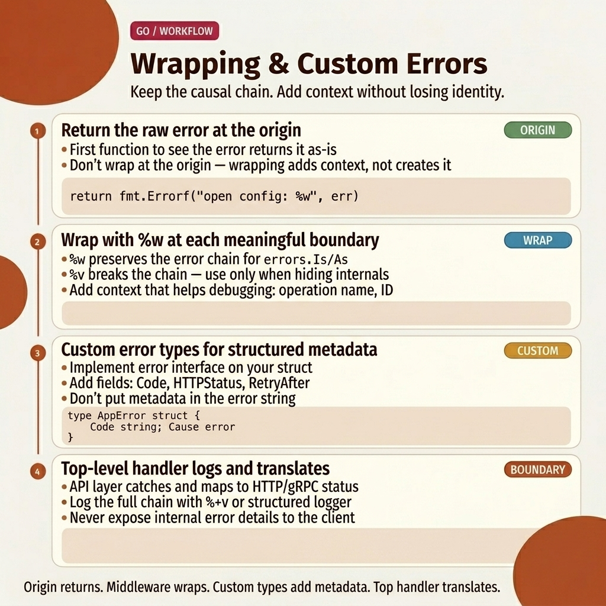
Cú pháp xử lý lỗi rất đơn giản. Mối nguy hiểm thực sự là mã biên dịch, vượt qua các bài kiểm tra và âm thầm phá vỡ trong quá trình sản xuất.
| # | Mức độ nghiêm trọng | Lỗi | Hậu quả | Sửa chữa |
|---|---|---|---|---|
| 1 | 🔴 Gây tử vong | Sử dụng %v thay vì %w trong fmt.Errorf | đứt dây chuyền; errors.Is/As trả về sai | Luôn sử dụng %w để duy trì chuỗi lỗi |
| 2 | 🔴 Gây tử vong | So sánh err.Lỗi biên dịch / Runtime() == "not found" | Bị ngắt khi văn bản thông báo lỗi thay đổi | Xác định các biến trọng điểm; sử dụng errors.Is(err, ErrNotFound) |
| 3 | 🟡 Chung | Bao bọc cùng một lỗi ở mọi lớp | Đầu ra nhật ký trở thành chuỗi 200 ký tự không thể đọc được | Chỉ thêm ngữ cảnh khi lớp cung cấp thông tin mới |
| 4 | 🟡 Chung | Gọi panic để tìm lỗi logic nghiệp vụ | Sự cố quá trình; không có sự xuống cấp duyên dáng | Dự trữ panic cho các lỗi lập trình; trả về Lỗi biên dịch / Runtime nếu không thì |
| 5 | 🔵 Nhỏ | Quên Unwrap() trên các loại custom Lỗi biên dịch / Runtime | errors.Is/As không thể duyệt qua loại | Triển khai Unwrap() Lỗi biên dịch / Runtime trên mọi loại trình bao bọc |
---
| Tài nguyên | Loại | Liên kết | Ghi chú |
|---|---|---|---|
| Go Lỗi Blog | Chính thức | [go.dev/blog/go1.13-errors](https://go.dev/blog/go1.13-errors) | Giới thiệu %w , errors.Is , errors.As |
| Có hiệu lực Go | Chính thức | [go.dev/doc/effectivego#errors](https://go.dev/doc/effectivego#errors) | Quy ước xử lý lỗi thành ngữ |
---
Lỗi gói và các loại tùy chỉnh được bảo hiểm. Bước tiếp theo phụ thuộc vào việc bạn cần cơ chế chuỗi sâu hơn hay một miền lỗi hoàn toàn khác.
| Mở rộng | Khi nào | Cơ sở lý luận | Tệp/Liên kết |
|---|---|---|---|
| Sentinel + Gói + Tham gia | Khi kết hợp lính canh, chuỗi gói và mẫu nhiều lỗi | Đi sâu vào errors.Join ( Go 1.20+), errors.Is với các lính gác được bao bọc và kiểm tra nhiều lỗi | [02-sentinel-wrapping-join.md](./02-sentinel-wrapping-join.md) |
---
Điều hướng: [← Các giao diện (interface)](../các giao diện (interface)/README.md) · [→ Sentinel, Wrapping, Join](./02-sentinel-wrapping-join.md)
Lỗi Sentinel giải quyết điều này. var ErrNotFound = errors.New("not found") tạo ra con trỏ ổn định. errors.Is(err, ErrNotFound) so sánh theo danh tính, không phải theo nội dung chuỗi. Người lái xe có thể tự do thay đổi tin nhắn của mình — việc kiểm tra trọng điểm của bạn vẫn hoạt động.
Nhưng chỉ lính gác thôi thì chưa đủ. Khi kho lưu trữ đưa lỗi GORM vào trọng điểm của bạn, bạn sẽ mất dấu vết stack ban đầu. fmt.Errorf("UserRepo.FindByID: %w", err) bảo tồn chuỗi. Và khi quá trình xác thực tạo ra ba lỗi cùng một lúc, errors.Join sẽ tổng hợp chúng thành một lỗi duy nhất mà errors.Is vẫn có thể kiểm tra.
Mẫu lỗi kiến trúc
| Kỹ thuật | Mô tả | Trường hợp sử dụng |
|---|---|---|
| Lỗi trọng điểm | Package -level var ErrFoo = errors.New(...) | Kiểm tra danh tính ổn định trên packages |
Gói %w | fmt.Errorf("context: %w", err) bảo toàn chuỗi | Thêm mẩu bánh mì trong khi vẫn giữ nguyên nguyên nhân gốc rễ |
errors.Is | Đi theo chuỗi để phù hợp với một lính canh cụ thể | Quyết định định tuyến (404 so với 500) |
errors.As | Đi theo chuỗi để trích xuất một loại lỗi cụ thể | Truy cập siêu dữ liệu (mã HTTP, tên hoạt động) |
errors.Join | Tổng hợp nhiều lỗi thành một ( Go 1.20+) | Lỗi xác thực, hoạt động hàng loạt |
Chế độ lỗi
| # | Mức độ nghiêm trọng | Khiếm khuyết | Hậu quả | Sửa chữa |
|---|---|---|---|---|
| 1 | 🔴 Gây tử vong | Tạo errors.New() bên trong một hàm | Mỗi lệnh gọi trả về một con trỏ khác nhau — errors.Is không bao giờ khớp | Xác định trọng điểm ở cấp độ package là var |
| 2 | 🔴 Gây tử vong | Thiếu Unwrap() trên loại custom Lỗi biên dịch / Runtime | errors.Is/As không thể đi qua nó | Triển khai Unwrap() Lỗi biên dịch / Runtime trên mọi loại trình bao bọc |
| 3 | 🟡 Chung | Quên nil kiểm tra sau errors.Join | errors.Join trả về nil khi không có lỗi nào — an toàn, nhưng người gọi có thể không mong đợi điều đó | Tài liệu tham gia trống = nil |
---
Với lý thuyết đã được thiết lập, hình ảnh bên dưới cho thấy cách trọng điểm, gói và liên kết tương tác với nhau trong kiến trúc dịch vụ thực tế.
Mã nguồn & Các ví dụ minh họa
Ứng dụng của bạn có sáu chế độ lỗi phổ biến: không tìm thấy, trái phép, bị cấm, xung đột, xác thực và lỗi nội bộ. Mỗi người cần một danh tính ổn định mà người gọi có thể kiểm tra mà không cần phân tích chuỗi.
var ErrNotFound = errors.New("not found") ở cấp độ package — một con trỏ , được chia sẻ giữa tất cả người gọi.
Quy tắc: Không bao giờ tạo trọng điểm bên trong hàm. errors.New() bên trong một hàm trả về một con trỏ mới trên mỗi lệnh gọi — errors.Is sẽ không bao giờ khớp.> Kết luận: Các biến trọng điểm cung cấp cho người gọi một mục tiêu so sánh ổn định. errors.Is(err, apperror.ErrNotFound) hoạt động bất kể có bao nhiêu lớp bao bọc lỗi. Giá trị canh gác con trỏ không bao giờ thay đổi — không giống như các tin nhắn chuỗi, sẽ âm thầm ngắt khi được nâng cấp.
Khi nào nên sử dụng: Xuất thông tin cảnh báo khi người gọi từ packages khác cần khớp với các điều kiện lỗi cụ thể. Giữ chúng trong một apperror package chuyên dụng để có thể khám phá.
Người canh gác xác định điều gì đã xảy ra. Nhưng khi bạn cần theo dõi ở đâu thì nó đã sai — kho lưu trữ nào, dịch vụ nào, tham số nào — việc gói sẽ thêm ngữ cảnh đó.
---
package apperror
import "errors"
// ✅ Sentinel errors — package-level constants
// Convention: Err prefix + PascalCase name
var (
ErrNotFound = errors.New("not found")
ErrUnauthorized = errors.New("unauthorized")
ErrForbidden = errors.New("forbidden")
ErrConflict = errors.New("conflict")
ErrValidation = errors.New("validation error")
ErrInternal = errors.New("internal server error")
)
// Usage:
// return apperror.ErrNotFound
// if errors.Is(err, apperror.ErrNotFound) { ... }%w . Trình xử lý kiểm tra với errors.Is .
Ví dụ: FindByID trả về apperror.ErrNotFound . GetByID bao bọc nó bằng ID người dùng. Trình xử lý khớp ErrNotFound qua chuỗi và trả về HTTP 404.> Tại sao map GORM lại xảy ra lỗi với bộ phận giám sát ứng dụng?
Người xử lý của bạn không nên biết về GORM . Nếu bạn chuyển từ GORM sang pgx , mọi kiểm tra errors.Is(err, gorm.ErrRecordNotFound) trong lớp xử lý sẽ bị hỏng. Kho lưu trữ dịch các lỗi cụ thể ORM thành các trọng điểm cấp ứng dụng. Trình xử lý chỉ phụ thuộc vào việc triển khai apperror.ErrNotFound - database vẫn bị ẩn sau ranh giới kho lưu trữ.
Kết luận: Chuỗi gói đọc giống như một lệnh gọi stack : UserService.GetByID(abc123): not found . Mỗi lớp thêm chính xác một phần bối cảnh. errors.Is đi theo chuỗi từ trên xuống dưới và tìm thấy trọng điểm ở gốc.
Sentinel + gói bao gồm việc kiểm tra danh tính bằng ngữ cảnh. Nhưng khi trình xử lý lỗi của bạn cần dữ liệu có cấu trúc - mã trạng thái HTTP, phần mở rộng loại lỗi, thông báo hướng tới người dùng - loại custom Lỗi biên dịch / Runtime mang siêu dữ liệu đó.
---
package service
import (
"context"
"errors"
"fmt"
"myapp/internal/apperror"
"gorm.io/gorm"
"github.com/gofiber/fiber/v2"
)
// ✅ Repository — maps ORM error to app sentinel
func (r *UserRepo) FindByID(ctx context.Context, id string) (*User, error) {
var user User
err := r.db.WithContext(ctx).First(&user, "id = ?", id).Error
if errors.Is(err, gorm.ErrRecordNotFound) {
// Map ORM error → app sentinel
return nil, apperror.ErrNotFound
}
if err != nil {
return nil, fmt.Errorf("UserRepo.FindByID: %w", err)
}
return &user, nil
}
// ✅ Service — wraps with operation context
func (s *UserService) GetByID(ctx context.Context, id string) (*User, error) {
user, err := s.repo.FindByID(ctx, id)
if err != nil {
return nil, fmt.Errorf("UserService.GetByID(%s): %w", id, err)
}
return user, nil
}
// ✅ Handler — checks sentinel through the wrapping chain
func handler(c fiber.Ctx) error {
user, err := userService.GetByID(c.Context(), c.Params("id"))
if err != nil {
// errors.Is traverses: handler wrap → service wrap → sentinel ✅
if errors.Is(err, apperror.ErrNotFound) {
return fiber.NewError(404, "user not found")
}
return err // → 500
}
return c.JSON(user)
}API của bạn trả về phản hồi lỗi JSON với trường Kiểu dữ liệu ( NOTFOUND , BADREQUEST ), mã trạng thái HTTP và thông báo mà con người có thể đọc được. Một Lỗi biên dịch / Runtime giao diện (interface) đơn giản không thể mang các trường này. Bạn cần một struct .
AppError struct với Lỗi biên dịch / Runtime() và Unwrap() . Trình trợ giúp của hàm xây dựng thực thi tính nhất quán. Trình xử lý lỗi trung tâm sử dụng errors.As để trích xuất struct .
Ví dụ: Trình xử lý gọi errors.As(err, &appErr) để trích xuất mã trạng thái HTTP và trả về phản hồi JSON có cấu trúc.> Tại sao errors.As thay vì khẳng định kiểu (type assertion) ?
khẳng định kiểu (type assertion) err.(*AppError) trực tiếp chỉ phù hợp với lỗi cấp cao nhất. Nếu AppError được gói trong một lỗi khác, xác nhận sẽ không thành công. errors.As đi qua toàn bộ chuỗi - nó tìm thấy AppError thậm chí qua nhiều lớp gói. Điều này làm cho trình xử lý lỗi của bạn có khả năng phục hồi tốt trước những thay đổi về gói trong tương lai.
Kết luận: Các loại lỗi tùy chỉnh biến Go 's Lỗi biên dịch / Runtime giao diện (interface) thành dữ liệu có cấu trúc. Trình xử lý lỗi trung tâm sử dụng errors.As một lần, trích xuất tất cả siêu dữ liệu trong một lần kiểm tra. Các loại lỗi mới (ví dụ: NewForbidden , NewConflict ) được đưa vào mà không thay đổi logic xử lý.
Các loại tùy chỉnh xử lý các lỗi đơn lẻ bằng siêu dữ liệu. Nhưng việc xác thực thường xuyên tạo ra nhiều lỗi cùng một lúc. Go 1.20's errors.Join giải quyết vấn đề này.
---
package apperror
import "fmt"
// ✅ Custom error type — carries structured metadata
type AppError struct {
Code int // HTTP status code
Type string // Error type slug (NOT_FOUND, BAD_REQUEST)
Message string // User-facing message
Cause error // Original error (wrapped)
}
func (e *AppError) Error() string {
if e.Cause != nil {
return fmt.Sprintf("%s: %v", e.Message, e.Cause)
}
return e.Message
}
// ✅ Unwrap — allows errors.Is/As to traverse through AppError
func (e *AppError) Unwrap() error {
return e.Cause
}
// ✅ Constructors — enforce consistent creation
func NewNotFound(msg string, cause error) *AppError {
return &AppError{Code: 404, Type: "NOT_FOUND", Message: msg, Cause: cause}
}
func NewBadRequest(msg string, cause error) *AppError {
return &AppError{Code: 400, Type: "BAD_REQUEST", Message: msg, Cause: cause}
}
// ✅ Central error handler — errors.As extracts the AppError struct
func errorHandler(c fiber.Ctx, err error) error {
var appErr *AppError
if errors.As(err, &appErr) {
return c.Status(appErr.Code).JSON(fiber.Map{
"type": appErr.Type,
"message": appErr.Message,
})
}
// Fallback — unknown error type
return c.Status(500).JSON(fiber.Map{"message": "internal error"})
}Hàm validateUser của bạn sẽ kiểm tra tên, email và tuổi. Cả ba đều có thể thất bại một cách độc lập. Thay vì quay lại lần thất bại đầu tiên, bạn thu thập tất cả các lỗi và trả lại chúng như một lỗi.
Lỗi biên dịch / Runtime mà errors.Is vẫn có thể kiểm tra.
Phương pháp tiếp cận: Thu thập lỗi vào một []Lỗi biên dịch / Runtime slice . errors.Join(errs...) kết hợp chúng. Trả về nil khi slice trống.
Ví dụ: validateUser với tên trống và tuổi không hợp lệ sẽ trả về cả hai lỗi trong một giá trị.> Tại sao errors.Join thay vì ValidationError struct tùy chỉnh ?
errors.Join là một hàm thư viện tiêu chuẩn — không có kiểu tùy chỉnh, không có bản soạn sẵn. Nó trả về nil khi không có lỗi nào, điều này giúp loại bỏ sự cần thiết phải kiểm tra if len(errs) > 0 . Và errors.Is có thể kiểm tra từng lỗi riêng lẻ bên trong kết quả đã nối. Đối với hầu hết các trường hợp sử dụng xác thực, errors.Join đơn giản hơn struct chuyên dụng.
Khi nào nên ưu tiên một tùy chỉnh struct : Khi bạn cần các trường có cấu trúc (mã HTTP, tên trường, quy tắc xác thực) được đính kèm với mỗi lỗi. Trong trường hợp đó, hãy tạo một ValidationError struct và nối nhiều phiên bản.
Kết luận: errors.Join tổng hợp nhiều lỗi độc lập thành một giá trị lỗi. errors.Is kiểm tra từng đứa trẻ. Kết hợp với các lỗi nghiêm trọng, điều này bao gồm việc xác thực hàng loạt, các hoạt động song song và dọn dẹp trong đó nhiều bước có thể bị lỗi một cách độc lập.
---
package validation
import "errors"
// ✅ Multi-error validation using errors.Join (Go 1.20+)
func validateUser(u *User) error {
var errs []error
if u.Name == "" {
errs = append(errs, errors.New("name is required"))
}
if u.Email == "" {
errs = append(errs, errors.New("email is required"))
}
if u.Age < 18 {
errs = append(errs, errors.New("must be 18+"))
}
// Returns nil if errs is empty — no wrapper, no allocation
return errors.Join(errs...)
}
// Usage:
// err := validateUser(user)
// if err != nil {
// fmt.Println(err)
// // name is required
// // must be 18+
// }
// errors.Is(err, specificErr) still works — Join preserves Is/As traversalSơ đồ trực quan & Luồng hoạt động (Visual Support)
Phần khó nhất trong việc xử lý lỗi là nhìn thấy chuỗi. Ba lớp gói tạo ra một danh sách lỗi được liên kết. errors.Is duyệt danh sách này từ trên xuống dưới. errors.Join tạo một cây thay vì danh sách — một lỗi với nhiều con. Hình: Quyết định map để lựa chọn giữa trọng điểm, gói, loại tùy chỉnh và tham gia. Bắt đầu với tùy chọn đơn giản nhất (sentinel) và chỉ chuyển lên cấp cao hơn khi trường hợp sử dụng yêu cầu tổng hợp hoặc siêu dữ liệu phong phú hơn.
Với quyết định map được định tuyến, phần mã bên dưới thể hiện từng mẫu một cách riêng biệt và sau đó kết hợp chúng trong trình xử lý lỗi kiểu sản xuất.
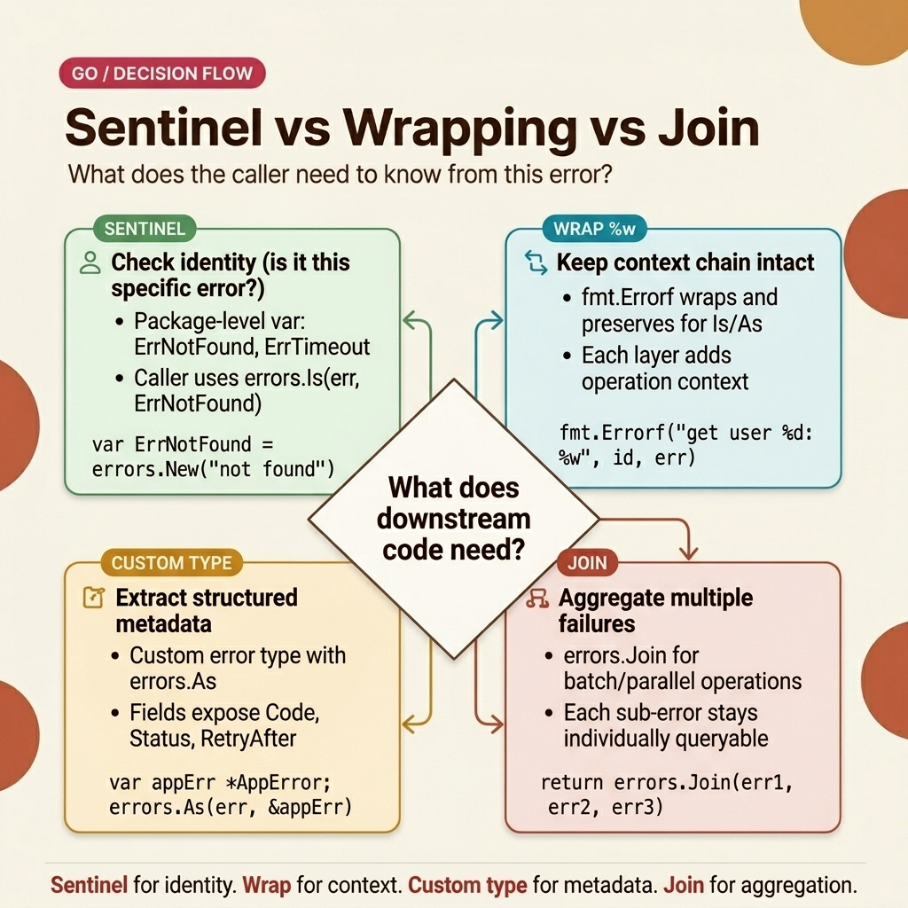
Cú pháp của canh gác, gói và nối rất đơn giản. Các lỗi ẩn giấu trong việc sử dụng sai mục đích một cách tinh vi trong quá trình biên dịch, vượt qua các bài kiểm tra và gián đoạn trong quá trình sản xuất.
| # | Mức độ nghiêm trọng | Khiếm khuyết | Hậu quả | Sửa chữa |
|---|---|---|---|---|
| 1 | 🔴 Gây tử vong | Sử dụng %v thay vì %w | Ngắt chuỗi - errors.Is/As trả về sai | Luôn sử dụng %w trong fmt.Errorf |
| 2 | 🔴 Gây tử vong | Tạo trọng điểm bên trong các hàm | Mỗi cuộc gọi trả về một con trỏ mới — errors.Is không bao giờ khớp | Xác định trọng điểm ở cấp độ package là var |
| 3 | 🟡 Chung | Bao bọc quá mức ở mọi lớp | Thông báo lỗi trở thành chuỗi 300 ký tự | Chỉ gói khi lớp thêm ngữ cảnh mới |
| 4 | 🟡 Chung | Ghi nhật ký và gói ở cùng một lớp | Lỗi tương tự xuất hiện hai lần trong nhật ký | Hoặc ghi hoặc gói - không phải cả hai |
| 5 | 🔵 Nhỏ | Bỏ qua giá trị trả về errors.Join của nil | An toàn nhưng đáng ngạc nhiên - việc tham gia không có lỗi nào trả về nil , không phải lỗi trống | Tài liệu tham gia trống = nil |
---
| Tài nguyên | Loại | Liên kết | Ghi chú |
|---|---|---|---|
| Go Blog | Chính thức | [go.dev/blog/go1.13-errors](https://go.dev/blog/go1.13-errors) | Giới thiệu %w , errors.Is , errors.As |
| Có hiệu lực Go | Chính thức | [go.dev/doc/effectivego#errors](https://go.dev/doc/effectivego#errors) | Các mẫu và quy ước xử lý lỗi thành ngữ |
---
Các lỗi trọng điểm, cách gói, loại tùy chỉnh và phép nối đều được đề cập. Bước tiếp theo phụ thuộc vào việc bạn cần xem lại những điều cơ bản hay đi sâu vào kiểm tra chuỗi lỗi.
| Mở rộng | Khi nào | Cơ sở lý luận | Tệp/Liên kết |
|---|---|---|---|
| Lỗi biên dịch / Runtime Wrapping Khái niệm cơ bản | Khi bạn cần ôn lại các nguyên tắc cơ bản về %w , errors.Is/As | Bao gồm ba ví dụ về mã (cơ bản, trung cấp, nâng cao) từ đầu | [01-wrapping-custom.md](./01-wrapping-custom.md) |
---
Điều hướng: [← Lỗi biên dịch / Runtime Wrapping](./01-wrapping-custom.md) · [→ Các giao diện (interface)](../các giao diện (interface)/01-ngầm định (implicit)-io-patterns.md)
Sao chép any repo có cấu trúc tốt Go và bạn sẽ thấy ngay kiến trúc của nó: cmd/ cho các điểm vào, internal/ cho riêng tư packages , pkg/ cho các thư viện dùng chung. Cây thư mục là biểu đồ module . Việc nhập từ internal/ bên ngoài cha mẹ module sẽ gây ra lỗi trình biên dịch - không phải là quy ước, mà là sự đảm bảo cứng rắn.
exportReport() sống ở internal/report . Máy chủ API trong cmd/server nhập nó một cách tự do. Nhưng người tiêu dùng bên ngoài go get là module của bạn không thể - trình biên dịch chặn nó. Đây là internal/ thực thi: zero-config tính đóng gói (encapsulation) .
Go Mô hình hiển thị của cũng đơn giản không kém: mã định danh chữ hoa = đã xuất, chữ thường = chưa xuất. Không có từ khóa public / private / protected . Một ký tự quyết định phạm vi truy cập.
Package Quy tắc Go thực thi 5 quy tắc cơ bản cho tổ chức package :
| Quy tắc | Mô tả |
|---|---|
| Thư mục = Package | Mỗi thư mục là một package |
| Chữ hoa = Đã xuất | Mã định danh viết hoa là công khai |
internal/ Ranh giới | Trình biên dịch chặn nhập từ bên ngoài của internal/ packages |
main Điểm vào | Package main + func main() = nhị phân thực thi |
| Không nhập khẩu tuần hoàn | Trình biên dịch từ chối chu kỳ nhập |
Tại sao hiển thị theo trường hợp? Nó loại bỏ hoàn toàn các từ khóa public / private / protected . Nhìn lướt qua một cái tên sẽ cho bạn biết phạm vi truy cập của nó.
Bố cục dự án (Tiêu chuẩn)``
project/
├── cmd/
│ ├── server/main.go # API server entrypoint
│ └── worker/main.go # Worker entrypoint
├── internal/ # Private packages
│ ├── domain/ # Business entities
│ ├── usecase/ # Business logic
│ ├── repository/ # Data access
│ └── handler/ # HTTP handlers
├── pkg/ # Public packages (reusable)
├── go.mod # Module định nghĩa
├── go.sum # Dependency checksums
└── Makefile
`Tại sao có nhiều tệp nhị phân cmd/ ? Một module có thể tạo ra nhiều tệp thực thi (máy chủ API, nhân viên, công cụ CÔNG CỤ CLI) trong khi chia sẻ internal/ packages . Mỗi cmd/*/main.go là một mục tiêu xây dựng riêng biệt.
đi mod Lệnh
Lệnh Mô tả go mod init Khởi tạo module mới go mod tidyThêm phần còn thiếu, xóa phần phụ thuộc không sử dụng go mod downloadTải các phần phụ thuộc xuống bộ đệm cục bộ go mod vendorSao chép các phần phụ thuộc vào vendor/ go mod graphIn biểu đồ phụ thuộc module go get pkg@versionThêm hoặc nâng cấp phần phụ thuộc go work initKhởi tạo đa- module workspace
Tại sao nên chạy
go mod tidy thường xuyên? Nó loại bỏ các phần phụ thuộc không được sử dụng và thêm những phần phụ thuộc còn thiếu — giữ cho go.mod và go.sum chính xác. Các mục nhập cũ gây ra lỗi CI và lỗi nhập khó hiểu.
---
Các quy tắc là rõ ràng. Hình ảnh bên dưới maps cách packages , modules và ranh giới
internal/` tương tác trong một dự án thực.Mã nguồn & Các ví dụ minh họa
Bố cục dự án Go tiêu chuẩn với điểm vào go.mod , cmd/ và phân lớp internal/ packages .
cmd/ nối các phụ thuộc, internal/ ẩn việc triển khai, domain/ xác định hợp đồng. Cây thư mục là sơ đồ kiến trúc.---
// go.mod
module github.com/myorg/myapp
go 1.22
require (
github.com/gin-gonic/gin v1.9.1
github.com/jackc/pgx/v5 v5.5.3
)``
// ✅ Import rules:
// cmd/server/main.go → CAN import internal/auth
// internal/handler/user.go → CAN import internal/auth
// external-module → CANNOT import internal/auth ← blocked!
`> Tại sao internal/` ? Nó cung cấp tính đóng gói (encapsulation) mà không cần cấu hình. Không có thẻ xây dựng, không có công cụ sửa đổi truy cập — chỉ là tên thư mục mà trình biên dịch nhận ra.
internal/ cho any package không nên là một phần của API công khai của module của bạn. Trình biên dịch thực thi điều này một cách tự động.---
// internal/auth/token.go — ONLY accessible by this module
package auth
import "errors"
var ErrInvalidToken = errors.New("invalid token")
// ✅ Exported within internal
func ValidateToken(token string) (int64, error) {
if token == "" {
return 0, ErrInvalidToken
}
// ... validate JWT
return 42, nil
}
// unexported
func generateSecret() string {
return "secret"
}Khi một monorepo chứa nhiều modules phụ thuộc lẫn nhau, go work cho phép bạn phát triển chúng đồng thời mà không cần xuất bản các phiên bản trung gian.``bash
# ✅ Multi-module monorepo
mkdir myproject && cd myproject
# Module 1: shared library mkdir -p libs/common && cd libs/common go mod init github.com/myorg/common cd ../..
# Module 2: API service mkdir -p services/api && cd services/api go mod init github.com/myorg/api cd ../..
# ✅ Create workspace go work init go work use ./libs/common go work use ./services/api ``
go work thay thế các lệnh replace để phát triển đa module cục bộ. Nó ở trong .gitignore và không gây ô nhiễm go.mod .---
// go.work
go 1.22
use (
./libs/common
./services/api
)Sơ đồ trực quan & Luồng hoạt động (Visual Support)
Hầu hết sự nhầm lẫn về Go packages xuất phát từ việc kết hợp các thư mục với đường dẫn nhập. Hình ảnh bên dưới maps mối quan hệ giữa cấu trúc thư mục, khai báo module và các ranh giới do trình biên dịch thực thi. Hình: Bố cục Module hiển thị các ranh giới cmd/ , internal/ và pkg/ với các mũi tên hướng nhập và các điểm thực thi trình biên dịch.
Với mô hình này, các ví dụ mã bên dưới hiển thị từng lớp đang hoạt động - từ cấu trúc dự án cơ bản thông qua việc thực thi internal/ đến đa module workspaces .
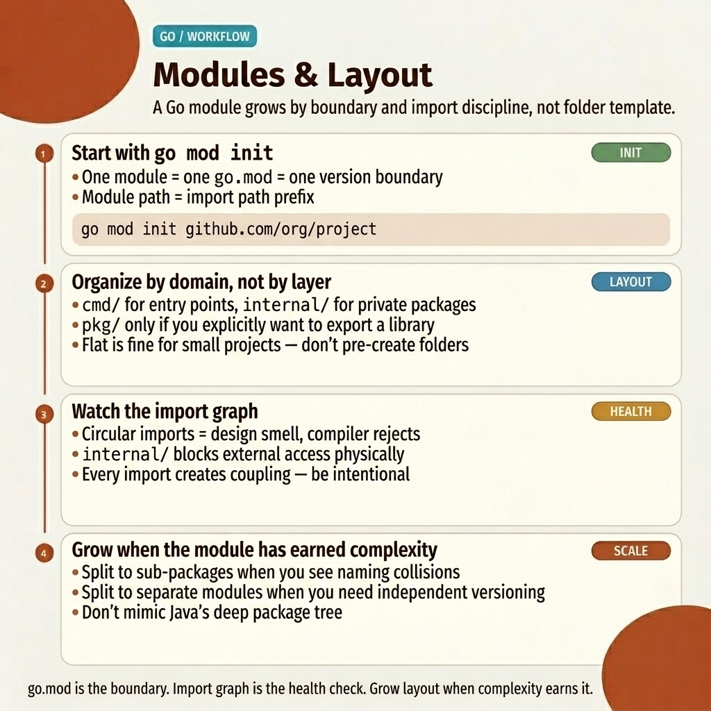
Các quy tắc bố trí rất đơn giản. Những cái bẫy bên dưới bắt những đội bỏ qua go mod tidy hoặc sử dụng sai internal/ .
| # | Mức độ nghiêm trọng | Lỗi | Hậu quả | Sửa chữa |
|---|----------|------|----------|------|
| 1 | 🔴 Gây tử vong | Nhập vòng tròn giữa packages | Trình biên dịch từ chối bản dựng | Tái cấu trúc các loại được chia sẻ thành một package | riêng biệt
| 2 | 🟡 Chung | Cũ go.mod với các phụ thuộc không được sử dụng | Lỗi CI, lỗi nhập khó hiểu | Chạy go mod tidy trước mỗi lần xác nhận |
---
| Tài nguyên | Loại | Liên kết | Mô tả |
|---|---|---|---|
| Go Modules | Chính thức | [go.dev/ref/mod](https://go.dev/ref/mod) | Hoàn thành tham chiếu hệ thống module |
| Bố cục dự án | Cộng đồng | [github.com/golang-standards/project-layout](https://github.com/golang-standards/project-layout) | Cấu trúc dự án chuẩn cộng đồng |
| Go Workspaces | Chính thức | [go.dev/doc/tutorial/workspaces](https://go.dev/doc/tutorial/workspaces) | Multi- module workspace hướng dẫn |
---
Nền tảng của Packages & Modules đã được giải quyết. Tiện ích mở rộng bên dưới kết nối với quy trình công việc workspace và vendoring .
| Gia hạn | Khi nào | Tại sao | Tệp/Liên kết |
|---|---|---|---|
| Go Workspaces & Vendoring | Multi- module repos, bản dựng ngoại tuyến, đăng ký riêng tư | Bao gồm go work , vendor/ , GOPRIVATE | [02-workspaces-vendoring.md](./02-workspaces-vendoring.md) |
Điều hướng: [← Errors](../errors/) · [→ Testing](../testing/)
Phát triển đồng thời thư viện dùng chung và dịch vụ API? Nếu không có workspaces , mọi thay đổi đối với thư viện đều yêu cầu cập nhật cam kết, đẩy và go get trong dịch vụ. Với go.work , cả hai modules đều giải quyết cục bộ - không có chu kỳ xuất bản.
go.work , mọi thay đổi thư viện đều yêu cầu: cam kết → đẩy → thẻ → go get trong dịch vụ. Đó là 4 bước cho mỗi lần lặp. Với go.work , các thay đổi sẽ hiển thị ngay lập tức — workspace ghi đè độ phân giải module cục bộ.
Vendoring giải quyết một vấn đề khác: các bản dựng có thể tái tạo mà không cần truy cập mạng. go mod vendor sao chép tất cả các phụ thuộc vào vendor/ và go build -mod=vendor chỉ sử dụng chúng. Môi trường không có khoảng cách, CI không có internet và kiểm tra tuân thủ đều được hưởng lợi. GOPRIVATE xử lý trường hợp thứ ba: nội bộ modules sẽ bỏ qua tổng kiểm tra công khai database .
Khi nào nên sử dụng cái gì
| Tình huống | Công cụ | Mục đích |
|---|---|---|
| Chỉnh sửa đồng thời nhiều modules | go.work | Phát triển chéo cục bộ module mà không xuất bản |
| Xây dựng mà không cần truy cập mạng | go mod vendor | Lưu trữ tất cả các phụ thuộc cục bộ |
| Tìm nạp nội bộ công ty packages | GOPRIVATE | Bỏ qua DB tổng kiểm tra công khai cho các kho lưu trữ riêng tư |
| Tạm thời sử dụng ngã ba cục bộ | replace chỉ thị | Trỏ tới một đường dẫn cục bộ hoặc repo rẽ nhánh |
Tại sao go.work thay vì replace ? replace chỉ thị sửa đổi go.mod , được cam kết kiểm soát phiên bản và phá vỡ các bản dựng của nhà phát triển khác. go.work vẫn cục bộ ( .gitignore d) và không ảnh hưởng đến tệp module .
---
Mã nguồn & Các ví dụ minh họa
Một monorepo có ba modules : thư viện dùng chung, dịch vụ API và nhân viên. go.work liên kết chúng để phát triển cục bộ đồng thời.``bash
# Project structure:
my-project/
├── go.work # workspace root
├── services/
│ ├── api/
│ │ ├── go.mod # module: myproject/services/api
│ │ └── main.go
│ └── worker/
│ ├── go.mod # module: myproject/services/worker
│ └── main.go
└── pkg/
└── shared/
├── go.mod # module: myproject/pkg/shared
└── utils.go
`
`bash
# Initialize workspace
cd my-project
go work init ./services/api ./services/worker ./pkg/shared
# go.work (auto-generated): go 1.22
use ( ./services/api ./services/worker ./pkg/shared )
# Now: all modules can import each other without versioning
# services/api can import "myproject/pkg/shared" directly
`> Takeaway: go.work loại bỏ chu kỳ xuất bản trong quá trình phát triển cục bộ. Thêm nó vào .gitignore` - nó chỉ là một công cụ cục bộ.
---
``bash
# Create vendor directory with all dependencies
go mod vendor
# Build using vendor (offline, reproducible) go build -mod=vendor ./...
# Verify vendor matches go.sum
go mod verify
`
`
# vendor/ structure:
vendor/
├── github.com/
│ └── gin-gonic/
│ └── gin/
├── gorm.io/
│ └── gorm/
└── modules.txt # dependency list
`> Khi nào cần đến nhà cung cấp? Môi trường không có khoảng cách, yêu cầu tuân thủ nghiêm ngặt hoặc hệ thống CI không có quyền truy cập Internet. Đối với hầu hết các dự án, bộ đệm module ( go mod download` ) là đủ.
go mod vendor + go build -mod=vendor cung cấp các bản dựng ngoại tuyến, có thể tái tạo hoàn toàn.---
``bash
# Tell Go to skip checksum DB for private modules
export GOPRIVATE=github.com/mycompany/,gitlab.com/myorg/
# Configure Git for private repos (SSH) git config --global url."git@github.com:mycompany/".insteadOf "https://github.com/mycompany/"
# Or use GONOSUMDB + GOFLAGS
export GONOSUMDB=github.com/mycompany/*
`> Takeaway: GOPRIVATE yêu cầu go get` bỏ qua proxy công khai và tổng kiểm tra database . Kết hợp với cấu hình Git dựa trên SSH để xác thực liền mạch.
---
Lệnh replace ghi đè độ phân giải module trong go.mod . Sử dụng cho các nhánh cục bộ tạm thời - nhưng không cam kết chúng với các kho lưu trữ được chia sẻ.> Tại sao phải xử lý replace cẩn thận? Các lệnh replace đã cam kết phá vỡ các bản dựng của nhà phát triển khác — đường dẫn cục bộ không tồn tại trên máy của họ. Ưu tiên go.work để phát triển địa phương.
replace để gỡ lỗi cục bộ nhanh chóng. Sử dụng go.work để phát triển đa module bền vững. Không bao giờ cam kết chỉ thị replace trỏ đến đường dẫn cục bộ.---
// go.mod
module myapp
go 1.22
require (
github.com/mycompany/shared-lib v1.2.0
)
// ✅ Local development: point to local copy
replace github.com/mycompany/shared-lib => ../shared-lib
// ✅ Fork: use forked repo
replace github.com/original/lib => github.com/myfork/lib v1.0.0-patchedSơ đồ trực quan & Luồng hoạt động (Visual Support)
Cây quyết định rất đơn giản: local multi- module dev → go.work ; bản dựng ngoại tuyến → vendor/ ; kho lưu trữ riêng tư → GOPRIVATE . Hình ảnh bên dưới maps ba đường dẫn này. Hình: Quyết định map định tuyến các kịch bản phụ thuộc tới đúng công cụ: go.work dành cho nhà phát triển cục bộ, vendor/ dành cho các bản dựng ngoại tuyến, GOPRIVATE dành cho nội bộ modules .
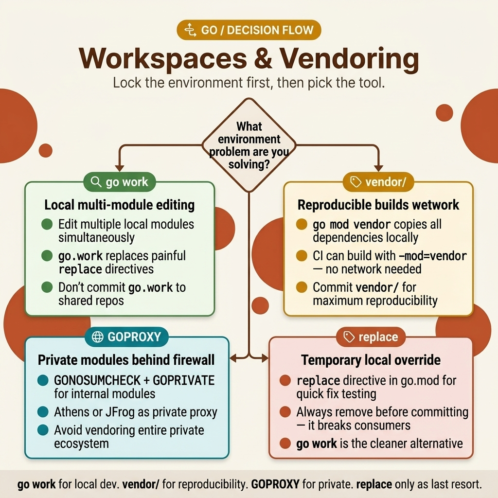
Các công cụ rất đơn giản. Những cái bẫy bên dưới sẽ bắt những nhóm thực hiện chỉ thị replace hoặc quên cập nhật danh mục nhà cung cấp của họ.
| # | Mức độ nghiêm trọng | Lỗi | Hậu quả | Sửa chữa |
|---|---|---|---|---|
| 1 | 🔴 Gây tử vong | Cam kết chỉ thị replace với đường dẫn cục bộ | Các bản dựng phá vỡ dành cho tất cả các nhà phát triển khác | Thay vào đó hãy sử dụng go.work ; thêm go.work vào .gitignore |
| 2 | 🟡 Chung | Thư mục vendor/ cũ sau khi cập nhật phụ thuộc | Bản dựng sử dụng phiên bản phụ thuộc cũ | Chạy go mod vendor sau mỗi go get |
---
| Tài nguyên | Loại | Liên kết | Mô tả |
|---|---|---|---|
| Go Workspaces | Chính thức | [go.dev/doc/tutorial/workspaces](https://go.dev/doc/tutorial/workspaces) | Multi- module workspace hướng dẫn |
| Go Modules | Chính thức | [go.dev/ref/mod](https://go.dev/ref/mod) | Hoàn thành module và tham chiếu phụ thuộc |
---
Nền tảng của Workspaces & Vendoring đã được giải quyết. Tiện ích mở rộng bên dưới kết nối trở lại các nguyên tắc cơ bản về bố cục module .
| Gia hạn | Khi nào | Tại sao | Tệp/Liên kết |
|---|---|---|---|
| Modules & Bố cục | Cấu trúc dự án và ranh giới internal/ | Nền tảng cho tổ chức package | [01-modules-layout.md](./01-modules-layout.md) |
---
Điều hướng: [← Modules Layout](./01-modules-layout.md) · [→ Basics](../basics/01-Cú pháp khai báo-các biến.md)
Ngày đầu tiên viết Go . Bạn khởi chạy IDE, tạo user.go và gõ ngay class User — lỗi. Bạn thử abstract class BaseEntity — lỗi. User extends BaseEntity implements Serializable - cú pháp về cơ bản không tồn tại.
Bạn tìm kiếm: " Go có hỗ trợ OOP không?" Stack Overflow nói: " Go không phải là ngôn ngữ hướng đối tượng." Bạn đọc thêm: " Go hỗ trợ tính đóng gói (encapsulation) , tính đa hình (polymorphism) , và sự kết hợp (composition) ." Những câu lệnh này mâu thuẫn với nhau - đó là sự nhầm lẫn cốt lõi khi đến từ Java hoặc TypeScript.
Sự thật: Go có OOP, nhưng là một biến thể rút gọn. Không có từ khóa class , không có phân cấp sự kế thừa (inheritance) , không có ràng buộc abstract , không có phạm vi protected . Thay vào đó, Go sử dụng:
| OOP truyền thống | Go Tương đương | Sự khác biệt cốt lõi |
|---|---|---|
class | struct | Dữ liệu + phương pháp; không phân cấp |
extends | Embedding | Sự kết hợp (composition) (has-a), không phải sự kế thừa (inheritance) (is-a) |
implements | Sự hài lòng tiềm ẩn | Không có tuyên bố rõ ràng; phương pháp phù hợp đủ |
abstract | Giao diện (interface) | Tối giản, do người tiêu dùng xác định |
private/public | chữ thường/chữ hoa | Package -phạm vi cấp độ |
new() | Hàm Factory | Xác thực rõ ràng |
this | Receiver (u *User) | Rõ ràng, không có trạng thái ngầm định |
Tại sao Go lại thiết kế cấu trúc chính xác này? Go có nguồn gốc từ Google — điều hướng các cơ sở mã với hàng tỷ dòng và hàng nghìn kỹ sư cam kết hàng ngày. Pike, Thompson và Griesemer đã cố tình loại bỏ:
- Sự kế thừa (inheritance) : Bởi vì hệ thống phân cấp cấp 5+ trên thực tế đảm bảo các lớp cơ sở dễ vỡ, vấn đề kim cương và khớp nối chặt chẽ.
- Từ khóa lớp: Bởi vì struct + phương thức cung cấp đủ khả năng — lớp thêm lễ không cần thiết.
- Ngụ ý
this: Bởi vì receivers rõ ràng giúp việc theo dõi mã dễ dàng hơn nhiều trên quy mô lớn.
Kết quả: OOP của Go giữ lại những gì quan trọng - tính đóng gói (encapsulation) , tính đa hình (polymorphism) , sự kết hợp (composition) - trong khi loại bỏ sự kế thừa (inheritance) mong manh, các lớp trạng thái trừu tượng và hệ thống phân cấp phức tạp.
Chế độ lỗi
| Lỗi Tâm Thần | Triệu chứng | Hậu quả |
|---|---|---|
| " Go thiếu OOP" | Viết spaghetti thủ tục phẳng | Logic miền chảy máu khắp nơi, không tính đóng gói (encapsulation) |
| " Go OOP = Java OOP" | Dịch các mẫu doanh nghiệp Java 1:1 | Dài dòng, không thành ngữ, khó ôn lại |
| "Mọi struct cần một giao diện (interface) " | Chất béo các giao diện (interface) được xác định tại ranh giới nhà sản xuất | Khớp nối, mock chết tiệt, vi phạm ISP |
Thiếu mô hình theo một trong hai hướng đều phải trả giá thực sự. Dưới đây cho thấy mô hình tinh thần thực sự hoạt động như thế nào - lập bản đồ dòng suy nghĩ, không chỉ cú pháp.
---
Mã nguồn & Các ví dụ minh họa
Bạn xử lý một lớp Java tiêu chuẩn: User bao gồm các trường riêng tư, hàm tạo, getters và phương thức nghiệp vụ. Điều này di chuyển mạnh đến mức nào vào Go ?
NewXxx() xử lý việc xác thực cấu trúc.
Ví dụ: User Lớp Java → User Go struct .> Takeaway: Không class , không this , không có bản tóm tắt get/set. Structs + phương thức + chức năng factory = hoàn thành. receiver (u *User) rõ ràng làm rõ những gì Java ẩn đằng sau ẩn this . Struct + các phương thức xử lý một thực thể duy nhất. Khi bạn cần tính đa hình (polymorphism) — làm cho các loại khác nhau có chung một hợp đồng hành vi — Java sử dụng implements . Go xử lý nó như thế nào?---
// mental_model.go — Java class → Go struct
// Java:
// public class User {
// private String email;
// private String name;
// public User(String email, String name) { this.email = email; this.name = name; }
// public String getEmail() { return email; }
// public String greet() { return "Hello, " + name; }
// }
// Go equivalent:
type User struct {
email string // lowercase = unexported (strictly private to the declared package)
name string
}
// NewUser acts as the constructor proxy. Go inherently lacks an explicit constructor keyword.
// Execute validation here — the factory function strictly guarantees the resulting object is logically valid.
func NewUser(email, name string) (*User, error) {
if email == "" {
return nil, fmt.Errorf("email strictly required")
}
return &User{email: email, name: name}, nil
}
// Method bound to User — utilizing an explicit receiver bypassing the implicit Java `this` pointer
// (u *User) defines a pointer receiver — safely mutating the core origin struct while massively avoiding memory copy overhead
func (u *User) Email() string { return u.email }
func (u *User) Greet() string {
return "Hello, " + u.name
}Java: class EmailNotifier implements Notifier {} . Go : loại bỏ hoàn toàn từ khóa implements - nếu struct có các phương thức khớp, nó đáp ứng hợp đồng.
implements sang Go của ngầm định (implicit) giao diện (interface) .
Phương pháp tiếp cận: Xác định giao diện (interface) ở ranh giới người tiêu dùng. Any struct đáp ứng nó bằng cách cung cấp các phương thức khớp.
Ví dụ: Notifier giao diện (interface) — EmailNotifier và SlackNotifier ngầm thỏa mãn điều đó.> Tại sao lại ngầm hiểu sự hài lòng thay vì rõ ràng implements ?
Rõ ràng implements tạo ra sự liên kết chặt chẽ: nhà sản xuất PHẢI biết giao diện (interface) tồn tại. Go đảo ngược điều này: người tiêu dùng xác định mức giao diện (interface) tối thiểu mà nó cần. Nhà sản xuất thực hiện các phương thức mà không biết giao diện (interface) nào sẽ sử dụng chúng. Kết quả: không có nhập khẩu từ nhà sản xuất đến người tiêu dùng. Tách rời sạch sẽ.
Bẫy: Không tạo " giao diện (interface) cho mọi struct " — nếu chỉ tồn tại 1 triển khai cụ thể và bạn không cần kiểm tra mock , hãy bỏ qua giao diện (interface) . Các giao diện (interface) xuất hiện khi tồn tại ≥2 lần triển khai HOẶC khi thử nghiệm yêu cầu ranh giới mock .
Ẩn các giao diện (interface) bìa tính đa hình (polymorphism) . Nhưng khi bạn cần sử dụng lại mã kiểu chéo - Java sử dụng extends . Go xử lý việc đó như thế nào?
---
// implicit_interface.go — Java implements → Go implicit satisfaction
// Java:
// interface Notifier { void send(String to, String msg); }
// class EmailNotifier implements Notifier {
// public void send(String to, String msg) { __BLOCK_COMMENT_0__ }
// }
// Go: Interface rigorously defined WHERE IT IS ACTIVELY CONSUMED — entirely ignoring the upstream producer origin
type Notifier interface {
Send(to, msg string) error
}
// EmailNotifier — EXPLICITLY NO "implements Notifier" hard declaration
// If this root struct functionally ships the `Send(to, msg string) error` method → it automatically structurally satisfies the `Notifier` constraint
type EmailNotifier struct {
SMTPHost string
}
func (e *EmailNotifier) Send(to, msg string) error {
// execute internal SMTP dispatch
fmt.Printf("[Email] to=%s msg=%s via %s\n", to, msg, e.SMTPHost)
return nil
}
type SlackNotifier struct {
WebhookURL string
}
func (s *SlackNotifier) Send(to, msg string) error {
// execute internal Slack webhook payload transit
fmt.Printf("[Slack] channel=%s msg=%s\n", to, msg)
return nil
}
// ✅ Consumer processes strictly generic interfaces — completely oblivious tracking concrete nested types
type OrderService struct {
notifier Notifier // structurally injected dependency — dynamically accepting Email, Slack, or any compatible future architectural entity
}
func (os *OrderService) Complete(orderID string) error {
// ... sequentially finalize root order transition parameters ...
return os.notifier.Send("ops-channel", "Order "+orderID+" completed successfully")
}BaseEntity.createdAt gợn sóng thông qua User , AdminUser và mọi lớp con. Đó là vấn đề Lớp cơ sở mong manh. Với Go embedding : thay đổi Timestamps.CreatedAt chỉ ảnh hưởng đến các loại nhúng Timestamps . Không có vtables, không có xung đột thứ tự giải quyết phương pháp. Và quan trọng là: Admin KHÔNG phải là User - bạn cần một giao diện (interface) rõ ràng cho tính đa hình (polymorphism) . Điều này nghe có vẻ hạn chế nhưng tỏ ra an toàn hơn: nó buộc phải suy nghĩ có chủ ý về tính đa hình (polymorphism) thay vì mặc định là sự kế thừa (inheritance) .extends .Những ví dụ này map cho 3 trụ cột OOP. Tiếp theo: các bẫy phổ biến trong đó tư duy Java kích hoạt lỗi Go .
---
// flat_composition.go — Java 3-level hierarchy → Go flat embedding
// Java:
// abstract class BaseEntity { Long id; LocalDateTime createdAt; }
// class User extends BaseEntity { String email; }
// class AdminUser extends User { String role; boolean canDelete(); }
// Go: NO explicit hierarchy. Embedding strictly = composition, entirely excluding inheritance.
// ✅ Reusable "base" fields — fundamentally NOT a parent class
type Timestamps struct {
CreatedAt time.Time
UpdatedAt time.Time
}
func (t *Timestamps) Touch() {
now := time.Now()
if t.CreatedAt.IsZero() {
t.CreatedAt = now
}
t.UpdatedAt = now
}
// ✅ User simply embeds Timestamps — explicitly "has timestamps", strictly not "is a timestamp"
type User struct {
Timestamps // embedded element — implicitly promotes nested fields/methods
ID int64
Email string
}
// ✅ Admin cleanly embeds User — explicitly "has user data", strictly not "is a user"
type Admin struct {
User // embedded element — silently promotes User fields/methods upward
Role string
Perms []string
}
func (a *Admin) CanDelete() bool {
for _, p := range a.Perms {
if p == "delete" {
return true
}
}
return false
}
// ⚠️ CRITICAL DIFFERENCE from Java:
// var u User = admin ← FATAL COMPILE ERROR in Go!
// Admin variables strictly ARE NOT statically assignable targeting User allocations.
// An Admin physically HAS a User. Construct a dynamic interface dictating polymorphism:
type Authenticatable interface {
GetEmail() string
}
func (u *User) GetEmail() string { return u.Email }
// ✅ Both structured User and Admin completely satisfy Authenticatable — executing via the natively promoted method
// func authenticate(a Authenticatable) { ... }Sơ đồ trực quan & Luồng hoạt động (Visual Support)
Mâu thuẫn không nằm ở cú pháp - mà là ở dòng suy nghĩ. Khi bạn nghĩ "Tôi cần tính đa hình (polymorphism) ", Java sẽ thúc đẩy bạn hướng tới extends → override . Go hướng bạn tới giao diện (interface) → sự hài lòng tiềm ẩn. Cùng một đích đến, những con đường ngược nhau.
Java OOP Stack so với Go OOP Stack
mermaid flowchart TD A[Require grouping data + behavior?] --> B{Complex behavior?} B -->|No — pure rigid data| C[simple struct] B -->|Yes — active methods necessary| D[struct + methods] D --> E{Require reusing active behavior?} E -->|No| F[Terminal — struct + methods purely suffice] E -->|Yes| G{Is-a or practically Has-a?} G -->|Has-a| H[Embedding / Fast Sự kết hợp (composition)] G -->|Is-a... genuinely?| I[Giao diện (interface) — silent ngầm định (implicit) satisfaction] I --> J{Total tường minh (explicit) methods?} J -->|1-3| K[✅ Small modular giao diện (interface) — Go standard] J -->|4+| L[⚠️ Heavily split — Enforce ISP] ```Hình: Luồng quyết định của nhà phát triển Go — hầu hết các đường dẫn đều kết thúc ở struct + phương thức đơn giản hoặc [[E4]]] nhỏ. Embedding chỉ xuất hiện khi cần nâng cấp phương thức.Mô hình tinh thần là rõ ràng. Đoạn mã bên dưới maps biến nó thành các tạo phẩm đang hoạt động — bắt đầu từ bản dịch "lớp sang struct " đơn giản nhất.
---
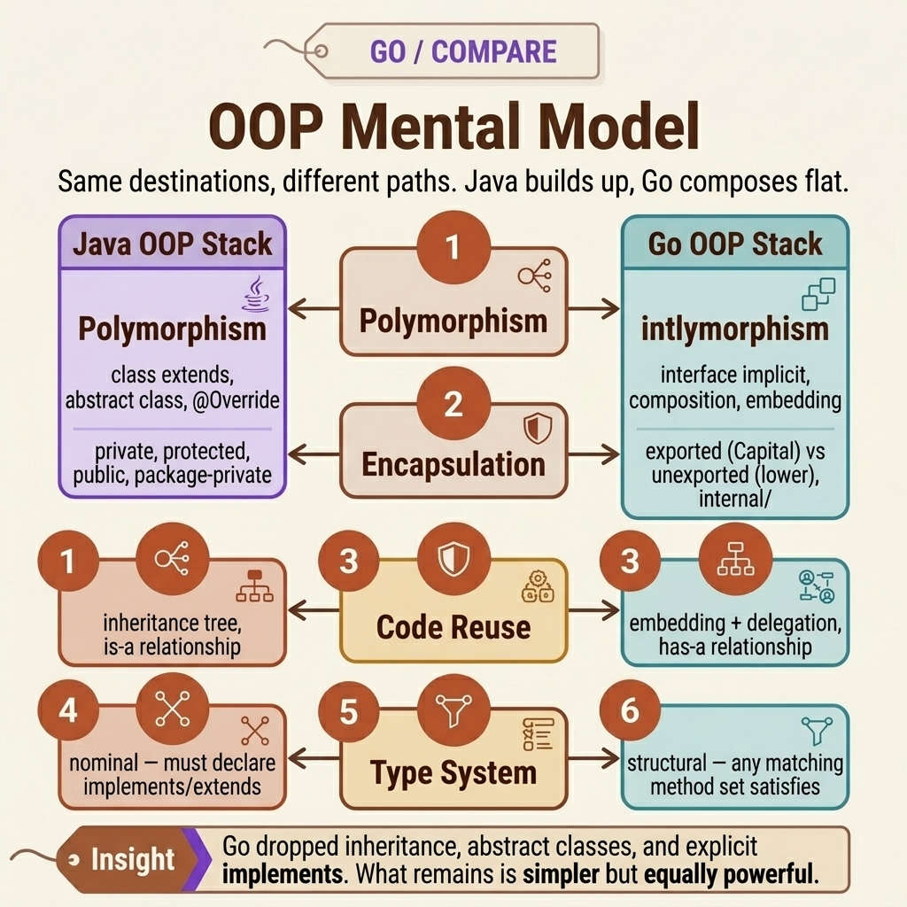
| # | Mức độ nghiêm trọng | Lỗi | Hậu quả | Sửa chữa |
|---|---|---|---|---|
| 1 | 🔴 Gây tử vong | Dịch 1:1 Java các mẫu thiết kế (design patterns) | Một AbstractFactoryBuilder dài 200 dòng mà không ai có thể xem lại | Rút gọn: struct + factory + nhỏ giao diện (interface) |
| 2 | 🔴 Gây tử vong | Giả sử embedding = sự kế thừa (inheritance) ( admin = user ) | Biên dịch lỗi; hoặc tệ hơn là lỗi logic runtime im lặng | Embedding là có-a. Sử dụng các giao diện (interface) cho tính đa hình (polymorphism) |
| 3 | 🟡 Chung | Tạo fat các giao diện (interface) trước khi cần 2 lần triển khai | Giao diện (interface) ranh giới có giá trị bằng 0 | YAGNI: tạo các giao diện (interface) khi tồn tại ≥2 biến thể |
| 4 | 🟡 Chung | Thêm getter/setter cho mọi trường | Bộ nhớ cơ Java dư thừa | Go tiêu chuẩn: xuất trực tiếp các trường khi thích hợp |
| 5 | 🔵 Nhỏ | Sử dụng this.field bằng bộ nhớ cơ | Không thành ngữ | Sử dụng ngắn receivers (ví dụ: u *User ) |
🔴 Cạm bẫy #1 — Java-to- Go dịch = quái vật nghi lễ
Nhà phát triển Java viết Go tự nhiên tạo ra:``go
// ❌ Java-translated Go — structurally excessively complex
Kiểu dữ liệu UserFactory giao diện (interface) {
CreateUser(email string) (*User, Lỗi biên dịch / Runtime)
}
Kiểu dữ liệu UserFactoryImpl struct{}
func (f UserFactoryImpl) CreateUser(email string) (User, Lỗi biên dịch / Runtime) { / ... / }
`Sự cần thiết quan trọng hoàn toàn:`go
// ✅ Idiomatic Go — clean robust simple factory function
func NewUser(email string) (User, Lỗi biên dịch / Runtime) { / ... */ }
`Các ranh giới giao diện (interface) UserFactory` về mặt logic chỉ tồn tại một cách chính xác khi vận hành nhiều ranh giới triển khai một cách rõ ràng hoặc an toàn giả lập (mocking) .
---
| Tài nguyên | Loại | Liên kết | Ghi chú |
|---|---|---|---|
| Go Câu hỏi thường gặp — Go OOP? | Chính thức | https://go.dev/doc/faq#IsGoanobject-orientlingu | Câu trả lời dứt khoát của Rob Pike |
| Có hiệu lực Go | Chính thức | https://go.dev/doc/effect_go | Thành ngữ cấu trúc kinh điển |
| Go Blog — Sự kết hợp (composition) | Chính thức | https://go.dev/blog/ embedding | Embedding được giải thích thuần túy về mặt khái niệm |
---
Cốt lõi của Mô hình tinh thần OOP - Điều chỉnh lại cho Go rất rõ ràng. Các nhánh bên dưới điều hướng theo chiều sâu từng trụ cột OOP.
| Gia hạn | Khi nào | Cơ sở lý luận | Tệp/Liên kết |
|---|---|---|---|
| [Tính đóng gói (encapsulation) & Visibility](./02-tính đóng gói (encapsulation)-visibility.md) | Khi điều hướng mức độ hiển thị package -level nguyên bản | Chữ hoa/chữ thường có vẻ đơn giản - độ phức tạp thực sự nằm bên trong packages chính xác | Tiếp theo theo thứ tự |
| [Sự kết hợp (composition) over Sự kế thừa (inheritance)](./03-sự kết hợp (composition)-over-sự kế thừa (inheritance).md) | Khi mẫu cấu trúc embedding cho DDD | Embedding + ủy quyền = Go thay thế cho kéo dài | Logic OOP cốt lõi |
| [Các giao diện (interface) & Tính đa hình (polymorphism)](./04-các giao diện (interface)-tính đa hình (polymorphism).md) | Khi yêu cầu thiết kế tính đa hình (polymorphism) sạch sẽ | Giới hạn mô-đun ngầm định, do người tiêu dùng xác định — tìm hiểu sâu | Logic OOP cốt lõi |
| [Structs & Sự kết hợp (composition)](../structs/01-sự kết hợp (composition)-embedding.md) | Khi thực thi chi tiết cấu trúc cụ thể struct một cách hiệu quả | Thẻ Struct , ngữ nghĩa bản sao gốc, đường dẫn mẫu hàm tạo rõ ràng | Liên kết chéo |
---
Điều hướng: [← OOP in Go](./README.md) · [→ Tính đóng gói (encapsulation)](./02-tính đóng gói (encapsulation)-visibility.md)
Đánh giá mã, Thứ Năm, 3 giờ chiều. Nhà phát triển gửi đăng ký người dùng mô hình PR modules :``go
Kiểu dữ liệu User struct {
ID int64
Email string
Password string // ← Uppercase = exported publicly
}
`Trình xử lý API tiến hành sắp xếp các phản hồi JSON chỉ đạo User ; hàm băm mật khẩu thô bị rò rỉ công khai trực tiếp vào tải trọng giao diện người dùng. Sự cố sản xuất chính thức được tuyên bố vào lúc 7 giờ tối.
Đây là hiểu lầm phổ biến nhất khi ánh xạ tư duy OOP sang Go : khả năng hiển thị không nằm ở cấp độ struct — nó hoạt động ở cấp độ package .
| Cấu trúc Java/TS | Bản địa Go Tương đương | Phạm vi kiến trúc |
|---|---|---|
private field | lowercase field | Bị cô lập nghiêm ngặt trong cùng một package |
protected | Khái niệm cơ bản bị bỏ qua | Go vốn dĩ vĩnh viễn thiếu các cơ chế phân lớp chức năng |
public | Uppercase field | Có thể truy cập toàn cầu ở mọi nơi tích cực nhập package |
internal | internal/ thư mục con | Bị cô lập nghiêm ngặt trong ranh giới bao trùm module giống hệt nhau |
Mô hình cốt lõi Go tính đóng gói (encapsulation) rất đơn giản: chữ hoa = đã xuất, chữ thường = chưa xuất.
Nhưng đơn giản ≠ không thể sai lầm:
- Trường không được xuất password
ẩn khỏi packages bên ngoài nhưng vẫn hiển thị trong cùng package . - Mọi Đường dẫn tệp trong cùng package đều có thể thấy các trường ngang hàng chưa được xuất.
- Thư mục internal/` chặn nhập từ modules bên ngoài.
Chế độ lỗi
| Lỗi cấu trúc | Nguyên nhân gốc rễ | Hậu quả hệ thống |
|---|---|---|
| Xuất các trường nhạy cảm | Mặc định viết hoa một cách mù quáng | Rò rỉ dữ liệu thông qua việc sắp xếp JSON |
| Người khổng lồ nguyên khối packages | Kết xuất mọi thành phần vào một thư mục | Chưa được xuất khẩu = có thể truy cập được ở mọi nơi bên trong package |
| Bỏ qua xác thực hàm tạo | Sử dụng chữ struct thô | Tạo User{Email: ""} phá vỡ xác thực |
Dưới đây: quy tắc hiển thị chính xác trong mã làm việc.
---
Mã nguồn & Các ví dụ minh họa
ChangeEmail() thay thế các setters để thực thi các quy tắc kinh doanh.---
// visibility.go — user package
package user
import "time"
type User struct {
id int64 // unexported — package internal
email string // unexported — prevents JSON leakage
name string // unexported
password string // unexported — CRITICAL: never export this
CreatedAt time.Time // ⚠️ Exported — JSON marshal will include this
}
func (u *User) ID() int64 { return u.id }
func (u *User) Email() string { return u.email }
func (u *User) Name() string { return u.name }
func (u *User) ChangeEmail(newEmail string) error {
if newEmail == "" {
return fmt.Errorf("email cannot be empty")
}
u.email = newEmail
return nil
}User{Email: ""} không hợp lệ.---
// user.go — constructor enforcement
package user
import (
"fmt"
"strings"
"time"
)
type User struct {
id int64
email string
name string
createdAt time.Time
}
func NewUser(email, name string) (*User, error) {
email = strings.TrimSpace(email)
if email == "" {
return nil, fmt.Errorf("user: email required")
}
name = strings.TrimSpace(name)
if name == "" {
return nil, fmt.Errorf("user: name required")
}
return &User{
email: email,
name: name,
createdAt: time.Now(),
}, nil
}---
// domain/repository.go
package domain
import "context"
type UserRepository interface {
FindByID(ctx context.Context, id int64) (*User, error)
}Sơ đồ trực quan & Luồng hoạt động (Visual Support)
Go Phạm vi hiển thị
Hình: 3 cấp phạm vi: ranh giới package , ranh giới module và giới hạn module bên ngoài.Tính đóng gói (encapsulation) Luồng quyết định
Hình: Các quyết định kiến trúc chỉ ra một cách hiệu quả các đường dẫn được xuất và không được xuất về mặt cấu trúc chỉ dựa vào ranh giới phạm vi kết hợp với độ nhạy nội tại.---
| # | Mức độ nghiêm trọng | Lỗi | Hậu quả | Sửa chữa |
|---|---|---|---|---|
| 1 | 🔴 Gây tử vong | Xuất các trường nhạy cảm (Mật khẩu) | Rò rỉ dữ liệu trực tiếp qua phản hồi API JSON | Sử dụng chữ thường + không có getter |
| 2 | 🔴 Gây tử vong | Xây dựng khối đá khổng lồ packages | Các trường chưa xuất vẫn có thể truy cập được trong suốt | Chia rẽ quyết liệt |
| 3 | 🟡 Chung | Thêm getters cho mọi trường một cách mù quáng | Bộ nhớ cơ Java còn sót lại | Sử dụng các phương thức miền nếu cần có bộ bảo vệ xác thực |
---
| Tài nguyên | Loại | Liên kết | Ghi chú |
|---|---|---|---|
| Có hiệu lực Go — Tên | Chính thức | https://go.dev/doc/effect_go#names | Đặt tên chính xác = khả năng hiển thị chặt chẽ |
| Go Nội bộ Packages | Chính thức | https://go.dev/doc/go1.4#internalpackages | Nội bộ/tính năng nghiêm ngặt |
---
Hãy cân nhắc việc di chuyển các miền Java sang Go . Các hệ thống kế thừa xây dựng hệ thống phân cấp lớp rộng khắp với nhiều cấp độ gốc giúp âm thầm phá vỡ các mối phụ thuộc ở cấp dưới. Go đi theo một con đường khác. Không có từ khóa extends . Structs nhúng các tham chiếu được nhắm mục tiêu để sử dụng lại mã mà không tạo hệ thống phân cấp ghép nối. Sự kết hợp (composition) thay thế hoàn toàn các lớp cha.
Embedding so với Trường được đặt tên so với Giao diện (interface) | Kỹ thuật | Cú pháp | Vai trò |
| --- | --- | --- | | Embedding |Kiểu dữ liệu User struct { Timestamps } | Phương pháp xúc tiến lập bản đồ các tuyến chức năng cụ thể |
| Trường được đặt tên | Kiểu dữ liệu User struct { ts Timestamps } | Truy cập phụ thuộc rõ ràng xác định các mục tiêu riêng biệt |
| Giao diện (interface) | Kiểu dữ liệu Saver giao diện (interface) { Save() Lỗi biên dịch / Runtime } | Đường dẫn hợp đồng thiết lập các ràng buộc thực thi cơ bản |
Khi nào nên nhúng Structs ?
- Phương thức map kiểm tra hành vi rõ ràng kiểm tra giới hạn nhận dạng cấu trúc.
- Cấu trúc mục tiêu tránh các lỗi gốc chặn chồng chéo trường đệ quy runtime .
- Logic mục tiêu triển khai các cấu trúc hành vi lồng nhau các giao diện (interface) rõ ràng.
Chế độ lỗi
| Lỗi | Hậu quả | Sửa chữa |
|---|---|---|
| Embedding tiện ích đơn giản | user.Execute() quảng bá các phương thức HTTP, gây nhầm lẫn cho API | Sử dụng các trường được đặt tên cho các tiện ích |
| Nhiều va chạm nhúng | Phương thức giống hệt signatures gây ra lỗi trình biên dịch | Xác định các phương thức bao bọc rõ ràng để giải quyết sự mơ hồ |
| Xử lý embedding là sự kế thừa (inheritance) | Go từ chối việc gán loại giữa các loại được nhúng | Sử dụng các giao diện (interface) cho tính đa hình (polymorphism) |
Mã nguồn & Các ví dụ minh họa
Timestamps trên structs mà không cần các lớp cơ sở.
Phương pháp: Nhúng trực tiếp Timestamps ; các phương pháp được quảng bá tự động.
Độ phức tạp: Cơ bản> Takeaway: Anonymous embedding quảng bá các trường và phương thức. Sự kết hợp (composition) giữ nguyên các định nghĩa trong khi chia sẻ hành vi.package model
import "time"
type Timestamps struct {
CreatedAt time.Time
UpdatedAt time.Time
}
func (t *Timestamps) Touch() {
now := time.Now()
if t.CreatedAt.IsZero() {
t.CreatedAt = now
}
t.UpdatedAt = now
}
type User struct {
Timestamps // Anonymous field promoting inner structures
ID int64
Email string
}
func main() {
u := User{Email: "test@domain.com"}
u.Touch() // Invokes Timestamps.Touch() resolving operations natively
_ = u.CreatedAt
}package model
import "fmt"
type User struct {
Email string
}
func (u *User) String() string { return "User:" + u.Email }
type Logger struct {
Level string
}
func (l *Logger) String() string { return "Logger:" + l.Level }
type Admin struct {
User
Logger
Role string
}
// Map explicit functions bypassing distinct ambiguous method selections
func (a *Admin) String() string {
return fmt.Sprintf("Admin(%s, log=%s)", a.User.String(), a.Logger.String())
}
func main() {
a := Admin{
User: User{Email: "admin@domain.com"},
Logger: Logger{Level: "info"},
}
fmt.Println(a.String())
}AggregateRoot để theo dõi sự kiện; xác thực chuyển đổi trạng thái trong các phương thức miền.
Độ phức tạp: Nâng cao> Takeaway: Các gốc tổng hợp theo dõi các sự kiện miền thông qua sự kết hợp (composition) được nhúng. Embedding tạo các đối tượng chức năng thực thi các bất biến kinh doanh một cách tự nhiên.package domain
import (
"fmt"
"time"
)
type DomainEvent interface {
EventName() string
}
type AggregateRoot struct {
id string
events []DomainEvent
}
func (ar *AggregateRoot) ID() string { return ar.id }
func (ar *AggregateRoot) AddEvent(e DomainEvent) {
ar.events = append(ar.events, e)
}
type Order struct {
AggregateRoot
Status string
}
func NewOrder(id string) *Order {
return &Order{
AggregateRoot: AggregateRoot{id: id},
Status: "DRAFT",
}
}
type ItemAddedEvent struct {
OrderID string
}
func (e *ItemAddedEvent) EventName() string { return "item.added" }
func (o *Order) AddItem() error {
if o.Status != "DRAFT" {
return fmt.Errorf("invalid mapping processing state transitions")
}
o.AddEvent(&ItemAddedEvent{OrderID: o.ID()})
return nil
}Sơ đồ trực quan & Luồng hoạt động (Visual Support)
Độ phân giải phương thức phát hiện các xung đột khi biên dịch time , chặn các phương thức được quảng bá không rõ ràng.
| # | Mức độ nghiêm trọng | Khiếm khuyết | Sửa chữa |
|---|---|---|---|
| 1 | 🔴 Gây tử vong | Xử lý structs được nhúng làm kiểu cha mẹ, mong đợi sự phân công tính đa hình (polymorphism) | Sử dụng các giao diện (interface) cho tính đa hình (polymorphism) , không phải gõ bài tập |
| 2 | 🔴 Gây tử vong | Embedding tiện ích structs gây ô nhiễm bề mặt API miền | Sử dụng các trường được đặt tên để cách ly quyền truy cập tiện ích |
| 3 | 🟡 Chung | Xâu chuỗi các phần nhúng đa cấp che khuất nguồn gốc trường | Giới hạn độ sâu embedding ; thích các trường được đặt tên cho rõ ràng |
| Tài nguyên | Liên kết | Lưu ý |
|---|---|---|
| Có hiệu lực Go | [https://go.dev/doc/effectivego#embedding](https://go.dev/doc/effectivego#embedding) | Embedding ngữ nghĩa và quy tắc |
| Go Blog | [https://go.dev/blog/embedding](https://go.dev/blog/embedding) | mẫu Sự kết hợp (composition) |
---
Hãy xem xét một cuộc hồi tưởng chạy nước rút. Báo cáo phạm vi kiểm tra cho thấy 23%. Nhóm kỹ thuật nhận xét: "Các phần phụ thuộc Giả lập (mocking) quá khó." Bạn xem lại cơ sở mã:``java
// Java — producer-defined fat giao diện (interface)
public giao diện (interface) PaymentGateway {
PaymentResult charge(Money amount, String token);
RefundResult refund(String txnId);
Balance getBalance();
List`Sáu phương pháp. Thử nghiệm chỉ yêu cầu xác thực charge() — nhưng mock được tạo phải triển khai tất cả sáu phương pháp. Khi PaymentGateway thêm phương thức thứ bảy trong quá trình nâng cấp, mọi mock sẽ phá vỡ quá trình biên dịch. Các nhà phát triển nhận thấy điều này thật mệt mỏi, bỏ qua các bài kiểm tra đơn vị và mức độ phù hợp giảm xuống.
Phản hồi Go : giao diện (interface) do người tiêu dùng xác định. Nếu thử nghiệm package chỉ đánh giá charge() , hãy xác định một phương thức duy nhất giao diện (interface) :`go
// Go — consumer-defined, 1 phương thức
Kiểu dữ liệu Charger giao diện (interface) {
Charge(ctx context.Context, amount Money, token string) (PaymentResult, Lỗi biên dịch / Runtime)
}
`mock yêu cầu chính xác 1 phương thức. Nếu nhà sản xuất cơ bản thêm 20 phương thức mới, thì người tiêu dùng giao diện (interface) vẫn không bị ảnh hưởng. Tách rời hoàn toàn.
Go Giao diện (interface) Quy tắc
| Quy tắc | Java/TS | Go |
|---|---|---|
| Tuyên bố | class X implements Y | Không cần thiết - hoàn toàn ngầm định |
| Quyền sở hữu | Nhà sản xuất ra lệnh giao diện (interface) | Người tiêu dùng xác định chính xác giao diện (interface) |
| Kích thước thành phần | Chất béo — 5 đến 20 phương pháp được quan sát | Nhỏ — tối ưu 1 đến 3 phương pháp |
| Thùng rỗng | Object | any (bí danh cho giao diện (interface){} ) |
| Kiểm tra loại | instanceof | Xác nhận kiểu hoặc cấu trúc lựa chọn theo kiểu (type switch) |
Hướng dẫn của Rob Pike
Thư viện chuẩn Go gốc chứng minh quy tắc này:
- io.Reader
— 1 phương thức:Read([]byte) (int, Lỗi biên dịch / Runtime)-io.Writer— 1 phương thức:Write([]byte) (int, Lỗi biên dịch / Runtime)-fmt.Stringer— 1 phương thức:String() string-Lỗi biên dịch / Runtime— 1 phương thức:Lỗi biên dịch / Runtime() string` các giao diện (interface) mạnh nhất trong thư viện chuẩn của Go có chính xác 1 phương thức.
Chế độ lỗi
| Khiếm khuyết cấu trúc | Nguyên nhân gốc rễ | Hiệu ứng gợn sóng |
|---|---|---|
| Fat giao diện (interface) được định cấu hình tại nhà sản xuất | Tư duy Java mặc định phản chiếu TẤT CẢ các phương thức | Khớp nối cứng, lỗi mock , vi phạm ISP |
| Bị cô lập giao diện (interface) cho 1 lần triển khai duy nhất | Thói quen lễ OOP cơ khí | Cấu trúc gián tiếp vô nghĩa mang lại giá trị bằng 0 |
Cách sử dụng Generic giao diện (interface){} ở mọi nơi | Ưu tiên tính linh hoạt lỏng lẻo | Mất hoàn toàn an toàn kiểu tĩnh, runtime hoảng loạn |
Bẫy mỡ giao diện (interface) đã rõ ràng. Chúng ta hãy xem thiết kế do người tiêu dùng xác định trông như thế nào - từ các mẫu 1 phương thức cơ bản đến các mẫu tổng hợp các giao diện (interface) .
---
Mã nguồn & Các ví dụ minh họa
Thực tế đơn giản nhất khiến các nhà phát triển Java bối rối: Go structs thỏa mãn các giao diện (interface) mà không cần khai báo rõ ràng.
Dog và Cat thỏa mãn Animal — không cần khai báo.> Takeaway: Không implements , không @Override , không đăng ký lớp học. Phương thức khớp signature = sự hài lòng. Trình biên dịch xác thực tại trang gọi chứ không phải định nghĩa.Sự hài lòng tiềm ẩn có tác dụng trong các ví dụ về đồ chơi. Mẫu sản xuất: xác định các giao diện (interface) trong người tiêu dùng package cho tiêm phụ thuộc (Dependency Injection) .
---
// implicit.go — strict implicit interface satisfaction
package main
import "fmt"
// Target Interface — explicitly defined structurally by the CONSUMER package
type Animal interface {
Speak() string
}
// Dog — features a Speak() method → immediately satisfies Animal implicitly
type Dog struct{ Name string }
func (d Dog) Speak() string { return d.Name + " says: Woof!" }
// Cat — also features Speak() → cleanly satisfies Animal structurally
type Cat struct{ Name string }
func (c Cat) Speak() string { return c.Name + " says: Meow!" }
// ✅ General function accepts standard interface — blind to the concrete type
func MakeNoise(a Animal) {
fmt.Println(a.Speak())
}
func main() {
// ✅ Active compiler strictly verifies the target implicitly satisfies Animal here
MakeNoise(Dog{Name: "Rex"}) // Prints: Rex says: Woof!
MakeNoise(Cat{Name: "Luna"}) // Prints: Luna says: Meow!
}OrderService định nghĩa 2 các giao diện (interface) ( OrderSaver , OrderNotifier ), mỗi cái có 1 phương thức.
Ví dụ: Kiểm tra mocks triển khai chính xác 1 phương thức cho mỗi giao diện (interface) .các giao diện (interface).OrderRepository package chung chia sẻ giữa người sản xuất và người tiêu dùng thông qua nhập khẩu nhiều. Do người tiêu dùng xác định: nhà sản xuất không bao giờ nhập khẩu người tiêu dùng → tách rời rõ ràng. Nếu người tiêu dùng tái cấu trúc giao diện (interface) thì chỉ nhà sản xuất bị ảnh hưởng mới cần cập nhật.
Quy tắc vàng: "Chấp nhận các giao diện (interface) , trả lại bê tông structs ." Tham số hàm = giao diện (interface) . Hàm trả về = loại cụ thể.
Phương thức đơn các giao diện (interface) là tiêu chuẩn. Khi người tiêu dùng cần nhiều khả năng (ví dụ: ReadWriteCloser ), giao diện (interface) sự kết hợp (composition) sẽ xử lý nó.
--- \n
// order_service.go — specific consumer-defined modular interfaces
package order
import "context"
// ✅ Concrete interfaces structurally formulated strictly by the CONSUMER target (order package)
// Each isolated interface equals the exact method the operational OrderService needs
// Producers (external packages like postgres or email) never import these constraints
type OrderSaver interface {
Save(ctx context.Context, o *Order) error
}
type OrderNotifier interface {
NotifyOrderPlaced(ctx context.Context, orderID string) error
}
type OrderService struct {
saver OrderSaver
notifier OrderNotifier
}
func NewOrderService(s OrderSaver, n OrderNotifier) *OrderService {
return &OrderService{saver: s, notifier: n}
}
func (os *OrderService) PlaceOrder(ctx context.Context, o *Order) error {
if err := o.Place(); err != nil {
return fmt.Errorf("place order execution failed: %w", err)
}
if err := os.saver.Save(ctx, o); err != nil {
return fmt.Errorf("save order boundary failed: %w", err)
}
// General notification failures = operationally non-critical, actively log and silently continue
if err := os.notifier.NotifyOrderPlaced(ctx, o.ID()); err != nil {
log.Printf("WARN: notify failed for %s: %v", o.ID(), err)
}
return nil
}ReadWriter = Reader + Writer . Loại công tắc phát hiện khả năng.> Tại sao giao diện (interface) sự kết hợp (composition) trên 1 lớn giao diện (interface) ?
Một Storage giao diện (interface) lớn buộc người tiêu dùng phải biết tất cả các phương pháp. CopyKey chỉ cần Reader và Writer . Yêu cầu Storage sẽ kết hợp quá mức. Sự kết hợp (composition) xây dựng các phần nhỏ, chỉ kết hợp khi cần thiết. Việc tuân thủ ISP là tự động.
Xác nhận kiểu so với lựa chọn theo kiểu (type switch) : store.(Deleter) hỏi "điều này cũng hỗ trợ xóa phải không?" - chọn tham gia khả năng runtime . Loại công tắc gửi đi theo loại cụ thể — hữu ích cho việc tuần tự hóa, ghi nhật ký hoặc xử lý lỗi.
---
// composition.go — active interface composition plus strict type assertion
package storage
import (
"context"
"fmt"
"io"
)
// ✅ Small explicit interfaces — exactly 1 method each
type Reader interface {
Read(ctx context.Context, key string) ([]byte, error)
}
type Writer interface {
Write(ctx context.Context, key string, data []byte) error
}
type Deleter interface {
Delete(ctx context.Context, key string) error
}
// ✅ Composed interface — embedding, NOT extends
type ReadWriter interface {
Reader
Writer
}
type Storage interface {
Reader
Writer
Deleter
}
// MemoryStore satisfies Storage (all 3 methods)
type MemoryStore struct {
data map[string][]byte
}
func NewMemoryStore() *MemoryStore {
return &MemoryStore{data: make(map[string][]byte)}
}
func (m *MemoryStore) Read(ctx context.Context, key string) ([]byte, error) {
v, ok := m.data[key]
if !ok {
return nil, fmt.Errorf("key not found: %s", key)
}
return v, nil
}
func (m *MemoryStore) Write(ctx context.Context, key string, data []byte) error {
m.data[key] = data
return nil
}
func (m *MemoryStore) Delete(ctx context.Context, key string) error {
delete(m.data, key)
return nil
}
// ✅ Function accepts smaller interface — caller does not need full Storage
func CopyKey(ctx context.Context, src Reader, dst Writer, key string) error {
data, err := src.Read(ctx, key)
if err != nil {
return err
}
return dst.Write(ctx, key, data)
}
// ✅ Type assertion — checking if a narrow interface supports wider behavior
func MaybePurge(ctx context.Context, store Reader, key string) {
// store might also support Deleter — check at runtime
if d, ok := store.(Deleter); ok {
_ = d.Delete(ctx, key)
fmt.Println("purged", key)
} else {
fmt.Println("store does not support delete — skip purge")
}
}
// ✅ Type switch — dispatch by concrete type
func Describe(w io.Writer) string {
switch w.(type) {
case *os.File:
return "file writer"
case *bytes.Buffer:
return "buffer writer"
default:
return "unknown writer type"
}
}Sơ đồ trực quan & Luồng hoạt động (Visual Support)
Thiết lập do nhà sản xuất xác định và thiết lập do người tiêu dùng xác định
mermaid flowchart TD A[Require tính đa hình (polymorphism) structure?] --> B{How many exact methods does the executing caller actually utilize?} B -->|Exactly 1| C["1-phương thức target giao diện (interface)\nio.Reader, fmt.Stringer"] B -->|2 to 3| D["Small combined giao diện (interface)\nio.ReadWriter, io.ReadCloser"] B -->|4 or greater| E{Do absolutely all callers execute all 4+ methods?} E -->|Yes| F["⚠️ Extremely rare — audit cách áp dụng thực tế design boundary"] E -->|No| G["Execute strict Split: ISP compliance\nReader + Writer + Closer patterns separately"] ```Hình: Mặc định là 1-3 phương pháp. Phương pháp 4+ yêu cầu sự biện minh mạnh mẽ. Chia tách là mặc định.Quy tắc do người tiêu dùng xác định là rõ ràng. Đoạn mã bên dưới triển khai nó - từ sự thỏa mãn tiềm ẩn cơ bản đến sự thỏa mãn ngầm định các giao diện (interface) .
---
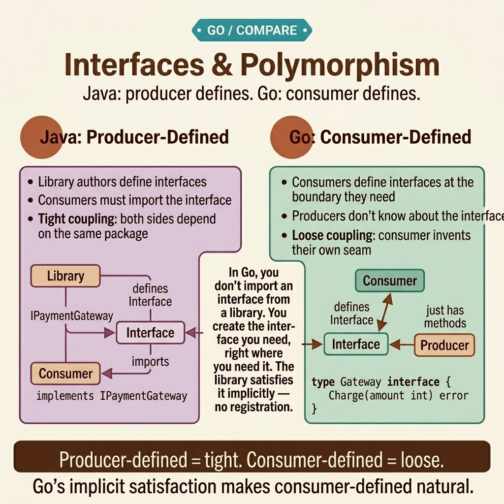
| # | Mức độ nghiêm trọng | Khiếm khuyết | Hậu quả | Sửa chữa |
|---|---|---|---|---|
| 1 | 🔴 Gây tử vong | Fat các giao diện (interface) tại nhà sản xuất (di sản Java) | Khớp nối, mock chết tiệt, vi phạm ISP | Phương pháp do người tiêu dùng xác định, 3 phương pháp |
| 2 | 🔴 Gây tử vong | Sử dụng any ở mọi nơi trên các API | Mất an toàn kiểu, runtime hoảng loạn | Sử dụng các loại bê tông nhỏ hoặc các giao diện (interface) |
| 3 | 🟡 Chung | Tạo một giao diện (interface) cho 1 lần triển khai | Sự gián tiếp vô nghĩa | Sử dụng loại bê tông. Thêm giao diện (interface) khi cần ≥2 biến thể hoặc mock |
| 4 | 🟡 Chung | Trả về các giao diện (interface) thay vì structs | Người gọi mất quyền truy cập vào các phương thức cơ bản | "Chấp nhận các giao diện (interface) , trả lại bê tông structs " |
| 5 | 🔵 Nhỏ | Đặt tên Java ( IUser ) | Không thành ngữ | Sử dụng hậu tố -er : Reader , Writer |
---
| Tài nguyên | Loại | Liên kết | Ghi chú |
|---|---|---|---|
| Có hiệu lực Go — Các giao diện (interface) | Chính thức | https://go.dev/doc/effect_go# các giao diện (interface) | Tài liệu tham khảo kinh điển |
| Go Châm ngôn | Triết học | https://go-proverbs.github.io/ | Nguyên tắc thiết kế cốt lõi |
| Go Blog — Lỗi là giá trị | Chính thức | https://go.dev/blog/errors-are-values | Lỗi giao diện (interface) — phương thức đơn |
---
Cốt lõi của Các giao diện (interface) & Tính đa hình (polymorphism) rất rõ ràng. Các phần mở rộng bên dưới đi sâu hơn vào các nguyên tắc và mô hình sản xuất SOLID .
| Gia hạn | Khi nào | Cơ sở lý luận | Tệp/Liên kết |
|---|---|---|---|
| [SOLID in Go](./05-solid-in-go.md) | Khi áp dụng các nguyên tắc vào kiến trúc | Go -SRP, OCP, DIP cụ thể | Tiếp theo theo thứ tự |
| [Các mẫu thiết kế (design patterns) Go Way](./06-design-patterns-go-way.md) | Khi triển khai Factory , Strategy , Observer | Các mẫu được xây dựng trên các giao diện (interface) | Tệp mẫu |
| [Các giao diện (interface) Deep Dive](../các giao diện (interface)/01-ngầm định (implicit)-io-patterns.md) | Khi khám phá các mẫu io.Reader , io.Writer | Thư viện chuẩn giao diện (interface) sự kết hợp (composition) | Liên kết chéo |
---
Điều hướng: [← Sự kết hợp (composition)](./03-sự kết hợp (composition)-over-sự kế thừa (inheritance).md) · [→ SOLID in Go](./05-solid-in-go.md)
Hãy xem xét đánh giá mã vào thứ Ba. Bạn nhận xét về OrderProcessor struct bên trong PR:
Một nhà phát triển cấp dưới trả lời: "Nhưng Go không có lớp. SRP có áp dụng cho struct không? Và OCP — Mở/Đóng — 'mở để mở rộng' nghĩa là gì khi ngôn ngữ thiếu extends ?"
Đây là một câu hỏi hay. Các nguyên tắc SOLID vẫn hợp lệ trong Go — nhưng biểu thức thay đổi:
| Nguyên tắc | Biểu thức Java | Go Biểu thức |
|---|---|---|
| S — Trách nhiệm duy nhất | Một lớp học, một lý do cụ thể để thay đổi | Một struct / package , một trách nhiệm công việc riêng biệt |
| O — Mở/Đóng | Định nghĩa lớp trừu tượng + ghi đè chính thức | hợp đồng Giao diện (interface) + triển khai cấu trúc mới |
| L — Thay thế Liskov | Lớp con hoạt động có thể thay thế trực tiếp cho lớp cha | Giao diện (interface) người triển khai vẫn có thể thay thế một cách an toàn |
| I — Giao diện (interface) Phân chia | Tách mỡ khổng lồ các giao diện (interface) | các giao diện (interface) tập trung nhỏ được mô hình hóa ngay từ đầu |
| D — Đảo ngược phụ thuộc | Lớp trừu tượng/ giao diện (interface) cứng nhắc DI | Nội dung dựa trên hàm tạo + cụ thể do người tiêu dùng xác định giao diện (interface) |
Nếu bạn cho rằng " SOLID trong Go là quá dễ dàng vì Go thực thi thuần sự kết hợp (composition) " — điều đó đúng... liên quan đến O, L và I. Nhưng S (SRP) và D (DIP) vẫn yêu cầu kỷ luật cấu trúc nghiêm ngặt — Go không tự động thực thi chúng.
Chế độ lỗi
| Khiếm khuyết cấu trúc | Nguyên nhân gốc rễ | Hiệu ứng gợn sóng |
|---|---|---|
| " SOLID = ủy quyền một giao diện (interface) cho mỗi struct " | Hiểu sai logic cơ bản của ISP | Lễ vô nghĩa, vi phạm nghiêm ngặt YAGNI |
| " Go structs thiếu lớp nên SRP không thành công" | Phạm vi cấu trúc SRP khó hiểu | Tạo Thần 500 dòng structs |
| "DIP = nhập generic giao diện (interface) packages " | Duy trì các ràng buộc kiểu Java DI lỗi thời | Khớp nối phụ thuộc giao diện (interface) được chia sẻ nghiêm trọng |
SRP xếp hạng đầu tiên vì nó tác động đến kiến trúc nhiều nhất — nhưng nó tạo ra sự nhầm lẫn nặng nề khi đến từ nền tảng Java. Chúng ta hãy xem xét từng nguyên tắc riêng biệt.
---
Mã nguồn & Các ví dụ minh họa
Sơ đồ trực quan & Luồng hoạt động (Visual Support)
SOLID Ánh xạ quyết định: Java → Go
mermaid flowchart TD A[Review specific struct/package định nghĩa] --> B{Can you describe it utilizing 1 short sentence?} B -->|No — requiring the word 'and'| C["⚠️ Major SRP violation"] B -->|Yes| D{Does adding behavior = modifying the existing code layer?} D -->|Yes| E["⚠️ Major OCP violation"] D -->|No — adding new Kiểu dữ liệu parameters| F{Does the giao diện (interface) exceed 3 distinct methods?} F -->|Yes| G["⚠️ Definite ISP concern"] F -->|No| H{Does the struct depend upon a specific concrete Kiểu dữ liệu?} H -->|Yes| I["⚠️ Major DIP violation"] H -->|No — depends purely upon giao diện (interface)| J["✅ SOLID operations validated OK"] ``Hình: 4 câu hỏi đánh giá tuần tự nhắm mục tiêu phát hiện vi phạm. Hoàn hảo để triển khai trong quá trình đánh giá mã — mỗi câu hỏi cụ thể kiểm tra chính xác 1 nguyên tắc.
Bây giờ chúng ta sẽ triển khai từng nguyên tắc - bắt đầu với SRP, nguyên tắc thường bị vi phạm nhất.
---
Ví dụ 1: Cơ bản — SRP: Một Struct , Một công việc
Một vị thần struct làm quá nhiều việc. Phân chia trách nhiệm.
Mục tiêu: Khắc phục các vi phạm SRP.
Cách tiếp cận: Mô tả struct . Nếu bạn sử dụng "và", hãy chia nó ra.
Ví dụ: OrderProcessor trở thành OrderValidator cộng OrderRepository cộng OrderNotifier .`go
// ❌ SRP violation — God struct
Kiểu dữ liệu OrderProcessor struct {
db *sql.DB
smtp *smtp.Client
rules []ValidationRule
}
func (op OrderProcessor) Process(o Order) Lỗi biên dịch / Runtime {
// validation (Lý do khuyên đọc 1)
for , r := range op.rules { / validate / }
// persistence (Lý do khuyên đọc 2)
, err := op.db.Exec("INSERT INTO orders")
// notification (Lý do khuyên đọc 3)
op.smtp.Send(o.CustomerEmail, "Order confirmed")
return nil
}
// ✅ SRP fixed — 1 job per struct
Kiểu dữ liệu OrderValidator struct {
rules []ValidationRule
}
func (v OrderValidator) Validate(o Order) Lỗi biên dịch / Runtime {
for , r := range v.rules {
if err := r.Check(o); err != nil {
return err
}
}
return nil
}
Kiểu dữ liệu OrderRepository struct {
db *sql.DB
}
func (r OrderRepository) Save(ctx context.Context, o Order) Lỗi biên dịch / Runtime {
, err := r.db.ExecContext(ctx, "INSERT INTO orders")
return err
}
Kiểu dữ liệu OrderNotifier struct {
smtp *smtp.Client
}
func (n OrderNotifier) Notify(ctx context.Context, o Order) Lỗi biên dịch / Runtime {
return n.smtp.Send(o.CustomerEmail, "Order confirmed")
}
// Orchestrator — thin coordinator
Kiểu dữ liệu OrderService struct {
validator *OrderValidator
repo *OrderRepository
notifier *OrderNotifier
}
func (s OrderService) Process(ctx context.Context, o Order) Lỗi biên dịch / Runtime {
if err := s.validator.Validate(o); err != nil { return err }
if err := s.repo.Save(ctx, o); err != nil { return err }
= s.notifier.Notify(ctx, o) // non-critical
return nil
}
`> Takeaway: SRP trong Go có nghĩa là struct có một công việc. Không sử dụng "và" trong mô tả của nó. Tọa độ dịch vụ struct , nó không giữ logic.
---
Ví dụ 2: Trung cấp — OCP + DIP: Thêm hành vi mà không sửa đổi
Thêm giá strategy bằng cách tạo struct mới, không sửa đổi dịch vụ. Việc tiêm Giao diện (interface) đáp ứng OCP và DIP.
Mục tiêu: OCP — mở để mở rộng, đóng để sửa đổi. DIP - phụ thuộc vào sự trừu tượng.
Cách tiếp cận: Sử dụng PricingStrategy giao diện (interface) . Triển khai cụ thể.
Ví dụ: Thêm WeekendPricing mà không sửa đổi CheckoutService .`go
// ocpdip.go — Open/Closed + Dependency Inversion
package checkout
import "time"
// Giao diện (interface) — abstraction (DIP)
Kiểu dữ liệu PricingStrategy giao diện (interface) {
Calculate(entry, exit time.Time) int64 // cents
}
// ✅ Implementation 1
Kiểu dữ liệu HourlyPricing struct {
RatePerHour int64
}
func (h *HourlyPricing) Calculate(entry, exit time.Time) int64 {
hours := int64(exit.Sub(entry).Hours()) + 1
return hours * h.RatePerHour
}
// ✅ Implementation 2 — added LATER, NO code modified
Kiểu dữ liệu BlockPricing struct {
RatePerBlock int64
BlockHours int64
}
func (b *BlockPricing) Calculate(entry, exit time.Time) int64 {
hours := int64(exit.Sub(entry).Hours())
blocks := (hours / b.BlockHours) + 1
return blocks * b.RatePerBlock
}
// ✅ Implementation 3 — added EVEN LATER. CheckoutService remains unmodified.
Kiểu dữ liệu WeekendPricing struct {
Weekday PricingStrategy // sự kết hợp (composition)!
Weekend PricingStrategy
}
func (w *WeekendPricing) Calculate(entry, exit time.Time) int64 {
if entry.Weekday() == time.Saturday || entry.Weekday() == time.Sunday {
return w.Weekend.Calculate(entry, exit)
}
return w.Weekday.Calculate(entry, exit)
}
// CheckoutService — NEVER MODIFIED Bối cảnh áp dụng new pricing added
// Depends on giao diện (interface) (DIP)
Kiểu dữ liệu CheckoutService struct {
pricing PricingStrategy // injected at construction
}
func NewCheckoutService(p PricingStrategy) *CheckoutService {
return &CheckoutService{pricing: p}
}
func (cs *CheckoutService) Checkout(entry, exit time.Time) int64 {
return cs.pricing.Calculate(entry, exit)
}
`> Tại sao lại là OCP và DIP?
OCP: CheckoutService không thể sửa đổi. Để thêm WeekendPricing , hãy viết một struct mới . Mã dịch vụ không có thay đổi.
DIP: CheckoutService phụ thuộc vào PricingStrategy (trừu tượng), không phải HourlyPricing (cụ thể).
Bài học rút ra: OCP cộng với DIP trong Go là hệ thống dây dẫn và bộ tạo giao diện (interface) . Trình xây dựng cộng với giao diện (interface) là tất cả những gì bạn cần. Không cần khuôn khổ.
\n### Ví dụ 3: Nâng cao — ISP + LSP: Tách Giao diện (interface) & Đảm bảo khả năng thay thế
Quy tắc ISP: người gọi cần một phương thức sẽ nhận được giao diện (interface) với một phương thức. Quy tắc LSP: mọi triển khai đều hoạt động chính xác khi được thay thế.
Mục tiêu: ISP — chia mỡ các giao diện (interface) . LSP - đảm bảo khả năng thay thế an toàn.
Phương pháp tiếp cận: Xây dựng nhỏ các giao diện (interface) . Cấm hoảng loạn hoặc giá trị trả về không mong muốn trong quá trình triển khai.
Ví dụ: Kho lưu trữ chia thành Reader và Writer. Phát hiện vi phạm LSP.`go
// isplsp.go — Giao diện (interface) Segregation plus Liskov Substitution
package repository
import "context"
// ✅ ISP — split by caller requirements, not by domain
Kiểu dữ liệu UserReader giao diện (interface) {
FindByID(ctx context.Context, id int64) (*User, Lỗi biên dịch / Runtime)
FindByEmail(ctx context.Context, email string) (*User, Lỗi biên dịch / Runtime)
}
Kiểu dữ liệu UserWriter giao diện (interface) {
Save(ctx context.Context, u *User) Lỗi biên dịch / Runtime
Delete(ctx context.Context, id int64) Lỗi biên dịch / Runtime
}
// Composed giao diện (interface) if both are required
Kiểu dữ liệu UserRepository giao diện (interface) {
UserReader
UserWriter
}
// ✅ Query handler requires Reader only — Writer methods are ignored
func GetUserHandler(reader UserReader) http.HandlerFunc {
return func(w http.ResponseWriter, r *http.Request) {
user, err := reader.FindByID(r.Context(), parseID(r))
// handler logic
}
}
// ✅ Command handler requires Writer only
func DeleteUserHandler(writer UserWriter) http.HandlerFunc {
return func(w http.ResponseWriter, r *http.Request) {
err := writer.Delete(r.Context(), parseID(r))
// handler logic
}
}
// --- LSP — Substitutability Rules ---
// ✅ Correct: PostgresRepo implements the full contract
Kiểu dữ liệu PostgresRepo struct{ db *sql.DB }
func (r PostgresRepo) FindByID(ctx context.Context, id int64) (User, Lỗi biên dịch / Runtime) {
// Proper implementation
return nil, sql.ErrNoRows // allow caller checking via errors.Is
}
// ❌ LSP VIOLATION: CacheRepo.Delete() panics
Kiểu dữ liệu BrokenCacheRepo struct{}
func (r *BrokenCacheRepo) Delete(ctx context.Context, id int64) Lỗi biên dịch / Runtime {
panic("cache does not support delete") // 🔴 LSP VIOLATION
// The caller expects an Lỗi biên dịch / Runtime return. A panic breaks substitution.
}
// ✅ LSP CORRECT: CacheRepo returns tường minh (explicit) errors
Kiểu dữ liệu CacheRepo struct{}
func (r *CacheRepo) Delete(ctx context.Context, id int64) Lỗi biên dịch / Runtime {
return fmt.Errorf("cache repository does not support delete") // ✅ safe handling
}
``> Tại sao panic lại tương đương với vi phạm LSP?
Delete() Lỗi biên dịch / Runtime . Người gọi mong đợi một lỗi trả về và xử lý nó. panic làm hỏng quá trình thực thi. Việc thay thế BrokenCacheRepo cho PostgresRepo gây ra sự cố runtime . LSP bị hỏng.
Quy tắc ISP: Nếu quá trình triển khai phải để trống các phương thức hoặc gây hoảng loạn thì mục tiêu giao diện (interface) quá béo. Chia nó ra.
---
## 4. Cạm bẫy
| # | Mức độ nghiêm trọng | Khiếm khuyết | Hậu quả | Sửa chữa |
|---|---|---|---|---|
| 1 | 🔴 Gây tử vong | Hoảng loạn bên trong quá trình triển khai giao diện (interface) | Vi phạm LSP và sự cố ứng dụng | Trả về lỗi tiêu chuẩn. Đừng panic . |
| 2 | 🔴 Gây tử vong | Chúa structs với vô số phụ thuộc | ISP và SRP bị vi phạm, kiểm tra thất bại | Chia thành các định nghĩa struct tập trung. |
| 3 | 🟡 Chung | Ưu tiên giao diện (interface) cho mọi struct | Lễ và sự gián tiếp vô ích | Xác định một loại cụ thể đầu tiên. Chỉ sử dụng các giao diện (interface) khi cần mocks . |
| 4 | 🟡 Chung | Đã chia sẻ giao diện (interface) packages | Khớp nối chặt chẽ đánh bại DIP | Người tiêu dùng xác định các giao diện (interface) nguyên bản khi được sử dụng. |
| 5 | 🔵 Nhỏ | Đặt tên structs như XxxImpl | Định dạng kế thừa Java | Đặt tên mang tính mô tả như PostgresRepo . |
---
## 5. GIỚI THIỆU
| Tài nguyên | Loại | Liên kết | Ghi chú |
|---|---|---|---|
| SOLID Go Thiết kế | Trình bày | https://dave.cheney.net/2016/08/20/ solid -go-design | Buổi nói chuyện của Dave Cheney |
| Go Châm ngôn | Triết học | https://go-proverbs.github.io/ | Báo giá kiến trúc |
| Có hiệu lực Go | Tài liệu | https://go.dev/doc/effectgo | Mẫu mã gốc |
---
## 6. KHUYẾN NGHỊ
Các hoạt động cốt lõi của SOLID trong Go rất rõ ràng. Các phần mở rộng bên dưới chuyển đổi các nguyên tắc SOLID thành các mẫu và kiến trúc thực tế.
| Gia hạn | Khi nào | Cơ sở lý luận | Liên kết tập tin |
|---|---|---|---|
| [Các mẫu thiết kế (design patterns) Formats](./06-design-patterns-go-way.md) | Khi triển khai các mẫu cấu trúc | Factory , Strategy , Observer | Trình tự tiếp theo |
| [OOP Mental Model Configs](./01-oop-mental-model.md) | Rà soát các quy tắc cơ bản | Đánh giá cấu trúc rộng rãi | Go quay lại |
| [Các giao diện (interface) structure deep dive](../các giao diện (interface)/02-di-giả lập (mocking)-patterns.md) | Khi cần logic mock | DI cấu trúc nối dây | Module băng qua |
---
Điều hướng thư mục: [← Các giao diện (interface) module](./04-các giao diện (interface)-tính đa hình (polymorphism).md) · [→ Các mẫu thiết kế (design patterns) logic](./06-design-patterns-go-way.md)
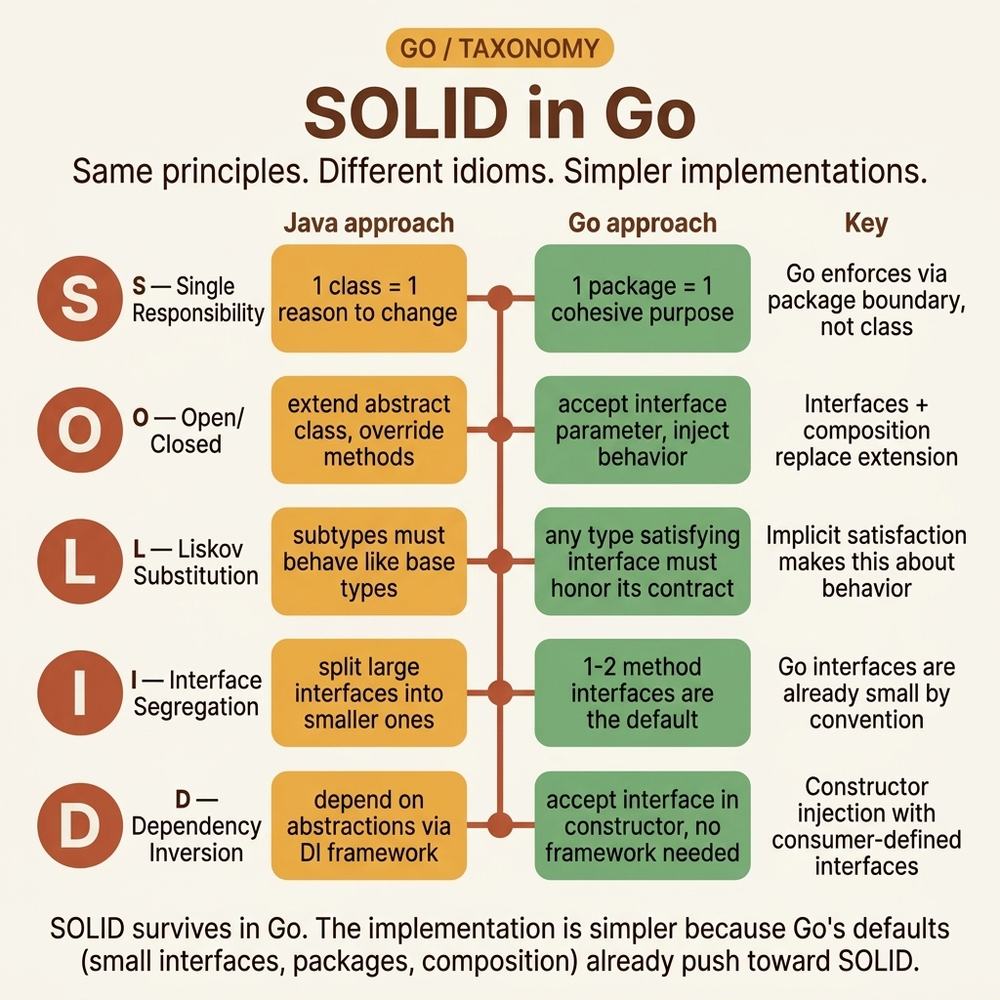
| # | Mức độ nghiêm trọng | Khiếm khuyết | Hậu quả | Sửa chữa |
|---|---|---|---|---|
| 1 | 🔴 Gây tử vong | Hoảng loạn bên trong quá trình triển khai giao diện (interface) | Vi phạm LSP và sự cố ứng dụng | Trả về lỗi tiêu chuẩn. Đừng panic . |
| 2 | 🔴 Gây tử vong | Chúa structs với vô số phụ thuộc | ISP và SRP bị vi phạm, kiểm tra thất bại | Chia thành các định nghĩa struct tập trung. |
| 3 | 🟡 Chung | Ưu tiên giao diện (interface) cho mọi struct | Lễ và sự gián tiếp vô ích | Xác định một loại cụ thể đầu tiên. Chỉ sử dụng các giao diện (interface) khi cần mocks . |
| 4 | 🟡 Chung | Đã chia sẻ giao diện (interface) packages | Khớp nối chặt chẽ đánh bại DIP | Người tiêu dùng xác định các giao diện (interface) nguyên bản khi được sử dụng. |
| 5 | 🔵 Nhỏ | Đặt tên structs như XxxImpl | Định dạng kế thừa Java | Đặt tên mang tính mô tả như PostgresRepo . |
---
| Tài nguyên | Loại | Liên kết | Ghi chú |
|---|---|---|---|
| SOLID Go Thiết kế | Trình bày | https://dave.cheney.net/2016/08/20/ solid -go-design | Buổi nói chuyện của Dave Cheney |
| Go Châm ngôn | Triết học | https://go-proverbs.github.io/ | Báo giá kiến trúc |
| Có hiệu lực Go | Tài liệu | https://go.dev/doc/effect_go | Mẫu mã gốc |
---
Các hoạt động cốt lõi của SOLID trong Go rất rõ ràng. Các phần mở rộng bên dưới chuyển đổi các nguyên tắc SOLID thành các mẫu và kiến trúc thực tế.
| Gia hạn | Khi nào | Cơ sở lý luận | Liên kết tập tin |
|---|---|---|---|
| [Các mẫu thiết kế (design patterns) Formats](./06-design-patterns-go-way.md) | Khi triển khai các mẫu cấu trúc | Factory , Strategy , Observer | Trình tự tiếp theo |
| [OOP Mental Model Configs](./01-oop-mental-model.md) | Rà soát các quy tắc cơ bản | Đánh giá cấu trúc rộng rãi | Go quay lại |
| [Các giao diện (interface) structure deep dive](../các giao diện (interface)/02-di-giả lập (mocking)-patterns.md) | Khi cần logic mock | DI cấu trúc nối dây | Module băng qua |
---
Điều hướng thư mục: [← Các giao diện (interface) module](./04-các giao diện (interface)-tính đa hình (polymorphism).md) · [→ Các mẫu thiết kế (design patterns) logic](./06-design-patterns-go-way.md)
Một nhóm phát triển mới bắt đầu viết Go . Bạn xem xét một PR tạo AbstractPaymentProcessorFactory — chứa 4 tệp, 3 các giao diện (interface) , 2 cơ sở trừu tượng structs , trải dài 150 dòng.
Người đánh giá mã cấp cao nhận xét: "Bạn chỉ yêu cầu NewStripeProcessor() . Một hàm. Tổng cộng có 8 dòng."``go
func NewStripeProcessor(apiKey string) *StripeProcessor {
return &StripeProcessor{apiKey: apiKey}
}
`Bạn so sánh AbstractPaymentProcessorFactory và nhận ra: Java cần 150 dòng vì new bỏ qua xác thực, các hàm tạo không thể trả về lỗi và hệ thống phân cấp lớp cần một lớp trừu tượng cho tính đa hình (polymorphism) . Go : Các hàm NewXxx()` xác thực, trả về lỗi và các loại cụ thể yield . Mẫu Factory giảm xuống còn 1 hàm.
Không phải mọi mẫu đều đơn giản hóa như nhau — Strategy , Observer và Middleware vẫn cần cấu trúc. Nhưng cấu trúc đó nhẹ hơn cấu trúc tương đương của Java.
Ma trận chuyển đổi mẫu
| Mẫu kế thừa | Triển khai Java Format | Go Format Thực hiện | Kết quả đơn giản hóa |
|---|---|---|---|
| Factory | Các lớp kế thừa factory + cụ thể factory | NewXxx() chức năng chính xác | Lớp học → 1 hàm gốc |
| Builder | Builder lớp logic + Giám đốc chính thức | Tùy chọn chức năng format With...() | Phần tử lớp → hàm thuần túy |
| Singleton | Khóa kiểm tra hai lần + trường tĩnh cứng nhắc | sync.Once + target package -biến cấp độ | Giảm 20 dòng → 5 dòng |
| Strategy | Giao diện (interface) + định nghĩa trừu tượng + lớp cụ thể | Bản địa giao diện (interface) + cấu trúc thô struct | Không cần định dạng lớp cơ sở trừu tượng |
| Observer | Ánh xạ EventListener + Điều phối EventManager | Các kênh (channel) tham số + thực thi các goroutine | Không có danh sách đăng ký, không có chuỗi callback riêng biệt |
| Decorator | Các lớp bao bọc sâu chính thức mở rộng cơ sở | Mẫu hàm phần mềm trung gian func(H) H | Không cần lớp cơ sở |
| Iterator | Iterator format giao diện (interface) + vòng bê tông | Đích range logic + cấu trúc các kênh (channel) | Được xây dựng chính thức trực tiếp vào các thành phần ngôn ngữ trình biên dịch |
| Phương pháp mẫu | Lớp trừu tượng sự kế thừa (inheritance) + ghi đè bắt buộc | Giao thức giao diện (interface) cơ bản + chức năng mặc định gốc | Không có lớp trừu tượng |
Chế độ lỗi
| Khiếm khuyết cấu trúc | Nguyên nhân gốc rễ | Hiệu ứng gợn sóng |
|---|---|---|
| Dịch các mẫu Java 1:1 | "Phải có nhà máy trừu tượng" | Kỹ thuật quá mức, không thành ngữ |
| Bỏ qua hoàn toàn các mẫu | " Go rất đơn giản, không cần mẫu" | Mã spaghetti ở quy mô |
| Xây dựng mô hình sớm | Triển khai trước 3 trường hợp sử dụng cụ thể | Trừu tượng không cần thiết |
Mẫu map rõ ràng. Hãy triển khai 3 mẫu quan trọng - bắt đầu bằng Factory .
---
Mã nguồn & Các ví dụ minh họa
Sơ đồ trực quan & Luồng hoạt động (Visual Support)
Java so với Go Độ phức tạp về cấu trúc
mermaid flowchart TD A[Require dynamically generating new memory objects?] -->|Executing validation at pure construction stage| B["Factory pattern: NewXxx() target execution"] A -->|Configuring numerous distinct optional specific initialization parameters| C["Builder pattern logic: Functional Options các biến"] D[Require natively swapping execution behavior methods?] -->|Executing pure runtime algorithmic procedural swaps| E["Strategy logic mapping: Tường minh (explicit) giao diện (interface) targeted parameter injection"] D -->|Targeting HTTP networking Request execution pipeline elements| F["Decorator execution model: Functional middleware func(H)H mapping"] G[Require broadcasting fundamental system events functionally?] -->|Targeting distinct async decoupled operations| H["Observer architectural format: Pure native các kênh (channel) operations"] G -->|Execution via tight synchronous execution callback requirements| I["Event callback handling logic: Simple formal func structure slice"] J[Require rigid global exact strict native singleton instance định nghĩa?] --> K["Singleton structural parameter định nghĩa: Native sync.Once các biến"] ``Hình: 7 mẫu phổ biến được dịch sang thành ngữ Go . Không có lớp trừu tượng ở bất cứ đâu.
---
Ví dụ 1: Cơ bản — Factory + Tùy chọn chức năng.
Mẫu Factory trong Java: abstractFactory → ConcreteFactory → Product. Hàm Go :
NewXxx() . Khi cần nhiều thông số tùy chọn: các tùy chọn chức năng.
Mục tiêu: mẫu Factory + Builder thay thế (tùy chọn chức năng).
Phương pháp tiếp cận: NewServer() thông số bắt buộc + WithXxx() thông số tùy chọn.
Ví dụ: Máy chủ HTTP có thời gian chờ, trình ghi nhật ký, TLS có thể định cấu hình.`go
// factory.go — Factory + Functional Options pattern
package server
import (
"log"
"time"
"crypto/tls"
)
// Server — the "product"
Kiểu dữ liệu Server struct {
host string
port int
timeout time.Duration
logger *log.Logger
tlsConfig *tls.Config
maxBodyBytes int64
}
// Option — functional option Kiểu dữ liệu
Kiểu dữ liệu Option func(*Server)
// WithXxx — each option is a function returning Option
func WithTimeout(d time.Duration) Option {
return func(s *Server) { s.timeout = d }
}
func WithLogger(l *log.Logger) Option {
return func(s *Server) { s.logger = l }
}
func WithTLS(config *tls.Config) Option {
return func(s *Server) { s.tlsConfig = config }
}
func WithMaxBody(bytes int64) Option {
return func(s *Server) { s.maxBodyBytes = bytes }
}
// NewServer — factory function: required params + optional options
// ✅ Replace: AbstractServerFactory + ConcreteServerFactory + ServerBuilder + Director
func NewServer(host string, port int, opts ...Option) (*Server, Lỗi biên dịch / Runtime) {
if host == "" {
return nil, fmt.Errorf("host required")
}
if port <= 0 || port > 65535 {
return nil, fmt.Errorf("invalid port: %d", port)
}
// Defaults — sane, overridable
s := &Server{
host: host,
port: port,
timeout: 30 * time.Second,
maxBodyBytes: 1 << 20, // 1MB
}
// Apply options
for , opt := range opts {
opt(s)
}
return s, nil
}
// Usage:
// s, err := NewServer("localhost", 8080,
// WithTimeout(5 * time.Second),
// WithTLS(tlsConfig),
// WithLogger(customLogger),
// )
`> Tại sao có lớp Tùy chọn chức năng thay vì lớp Builder ?
Lớp Builder : ServerBuilder.SetHost().SetPort().Build() — đối tượng builder có thể thay đổi, các phương thức xâu chuỗi, bước Build() riêng biệt. Tùy chọn chức năng: hàm bất biến, có thể kết hợp, không có trạng thái trung gian. Dave Cheney ( nhóm cốt lõi Go ): "Các tùy chọn chức năng là cách giống Go nhất để xây dựng các đối tượng phức tạp." Cần một lựa chọn khác sau này? Thêm 1 chức năng - mã hiện tại không thay đổi.
Takeaway: hàm Factory = NewXxx() . Builder = Tùy chọn chức năng WithXxx() . Cả hai mẫu Java đều thu gọn thành một mẫu Go - đơn giản hơn, thành ngữ hơn. Factory bao gồm việc tạo đối tượng. Strategy hoán đổi hành vi bìa - mẫu quan trọng nhất đối với OCP.
---
Ví dụ 2: Trung cấp — Strategy + Middleware ( Decorator ). Strategy : thuật toán hoán đổi tại runtime thông qua giao diện (interface) tiêm. Phần mềm trung gian: mẫu decorator cho đường dẫn HTTP.
Mục tiêu: mẫu Strategy + Decorator làm phần mềm trung gian.
Cách tiếp cận: Compressor giao diện (interface) ( strategy ). Middleware func(http.Handler) http.Handler ( decorator ).
Ví dụ: Trình nén tệp hoán đổi gzip/zstd. Chuỗi phần mềm trung gian HTTP.`go
// strategy.go — Strategy pattern
package compress
import (
"bytes"
"compress/gzip"
"io"
)
// Compressor — strategy giao diện (interface)
Kiểu dữ liệu Compressor giao diện (interface) {
Compress(data []byte) ([]byte, Lỗi biên dịch / Runtime)
Extension() string
}
// GzipCompressor — concrete strategy
Kiểu dữ liệu GzipCompressor struct {
Level int
}
func (g *GzipCompressor) Compress(data []byte) ([]byte, Lỗi biên dịch / Runtime) {
var buf bytes.Buffer
w, err := gzip.NewWriterLevel(&buf, g.Level)
if err != nil {
return nil, err
}
if , err := w.Write(data); err != nil {
return nil, err
}
if err := w.Close(); err != nil {
return nil, err
}
return buf.Bytes(), nil
}
func (g *GzipCompressor) Extension() string { return ".gz" }
// ZstdCompressor — another strategy (added later, 0 changes to FileExporter)
Kiểu dữ liệu ZstdCompressor struct{}
func (z *ZstdCompressor) Compress(data []byte) ([]byte, Lỗi biên dịch / Runtime) {
// ... zstd compression ...
return data, nil
}
func (z *ZstdCompressor) Extension() string { return ".zst" }
// FileExporter — uses strategy, doesn't know which compressor
Kiểu dữ liệu FileExporter struct {
compressor Compressor // injected
}
func NewFileExporter(c Compressor) *FileExporter {
return &FileExporter{compressor: c}
}
func (fe *FileExporter) Export(filename string, data []byte) Lỗi biên dịch / Runtime {
compressed, err := fe.compressor.Compress(data)
if err != nil {
return fmt.Errorf("compress: %w", err)
}
outFile := filename + fe.compressor.Extension()
return os.WriteFile(outFile, compressed, 0644)
}
`
`go
// middleware.go — Decorator pattern as HTTP middleware
package middleware
import (
"log"
"net/http"
"time"
)
// Middleware Kiểu dữ liệu — decorator pattern in 1 line
// func(http.Handler) http.Handler = wraps handler, returns new handler
Kiểu dữ liệu Middleware func(http.Handler) http.Handler
// Logging middleware
func Logging(logger *log.Logger) Middleware {
return func(next http.Handler) http.Handler {
return http.HandlerFunc(func(w http.ResponseWriter, r *http.Request) {
start := time.Now()
next.ServeHTTP(w, r) // ← delegate to wrapped handler
logger.Printf("%s %s %v", r.Phương thức, r.URL.Path, time.Since(start))
})
}
}
// Auth middleware
func RequireAuth(tokenValidator func(string) bool) Middleware {
return func(next http.Handler) http.Handler {
return http.HandlerFunc(func(w http.ResponseWriter, r *http.Request) {
token := r.Header.Get("Authorization")
if !tokenValidator(token) {
http.Lỗi biên dịch / Runtime(w, "unauthorized", http.StatusUnauthorized)
return // ← short circuit: don't call next
}
next.ServeHTTP(w, r)
})
}
}
// Chain — compose middleware
func Chain(handler http.Handler, middlewares ...Middleware) http.Handler {
// Apply in reverse order — outermost middleware wraps first
for i := len(middlewares) - 1; i >= 0; i-- {
handler = middlewares[i](handler)
}
return handler
}
// Usage:
// handler := Chain(myHandler,
// Logging(logger),
// RequireAuth(validateToken),
// RateLimit(100),
// )
`> Tại sao lại là phần mềm trung gian thay vì lớp Decorator ?
Java Decorator : class LoggingHandler extends HandlerWrapper { ... } — lớp trên decorator , mở rộng base. Go : func(http.Handler) http.Handler — 1 hàm = 1 decorator . Không có lớp, không mở rộng, không có cơ sở. Soạn với Chain() . Cùng một mẫu.
Takeaway: Strategy = giao diện (interface) + tiêm — giống như Java, trừ lớp trừu tượng. Middleware = decorator thông qua hàm sự kết hợp (composition) - Go Mặt chức năng của Go tỏa sáng ở đây. Factory , Strategy , Decorator bao gồm các mẫu "cấu trúc + hành vi". Observer - mẫu dành cho hướng sự kiện - Go có một công cụ tích hợp: các kênh (channel) .
---
Ví dụ 3: Nâng cao — Observer qua Các kênh (channel) + Singleton qua sync.Once. Observer trong Go không cần EventListener giao diện (interface) — các kênh (channel) LÀ cơ chế. Singleton :
sync.Once thay vì khóa được kiểm tra hai lần.
Mục tiêu: mẫu Observer qua các kênh (channel) . Singleton qua sync.Once.
Phương pháp tiếp cận: Sự kiện kênh (channel) + người đăng ký các goroutine . Package -level var + sync.Once.
Ví dụ: Xuất bản/đăng ký xe buýt sự kiện. Cấu hình singleton .`go
// observer.go — Observer pattern via các kênh (channel)
package eventbus
import (
"context"
"sync"
)
// Event — domain event
Kiểu dữ liệu Event struct {
Kiểu dữ liệu string
Payload any
}
// EventBus — publisher
Kiểu dữ liệu EventBus struct {
mu sync.RWMutex
subscribers map[string][]chan Event
}
func NewEventBus() *EventBus {
return &EventBus{
subscribers: make(map[string][]chan Event),
}
}
// Subscribe — returns kênh (channel) for events of given Kiểu dữ liệu
// ✅ No EventListener giao diện (interface) needed — kênh (channel) IS the listener
func (eb *EventBus) Subscribe(eventType string, bufSize int) <-chan Event {
ch := make(chan Event, bufSize)
eb.mu.Lock()
eb.subscribers[eventType] = append(eb.subscribers[eventType], ch)
eb.mu.Unlock()
return ch
}
// Publish — fan-out to all subscribers
func (eb *EventBus) Publish(ctx context.Context, evt Event) {
eb.mu.RLock()
subs := eb.subscribers[evt.Kiểu dữ liệu]
eb.mu.RUnlock()
for , ch := range subs {
select {
case ch <- evt: // non-blocking if buffer available
case <-ctx.Done():
return
default:
// ⚠️ Subscriber slow — drop event (or log, or buffer)
// Decision: drop vs block vs buffer depends on your SLA
}
}
}
// Close — clean up all các kênh (channel)
func (eb *EventBus) Close() {
eb.mu.Lock()
defer eb.mu.Unlock()
for , subs := range eb.subscribers {
for , ch := range subs {
close(ch)
}
}
}
// Usage:
// bus := NewEventBus()
// orderEvents := bus.Subscribe("order.placed", 100)
// go func() {
// for evt := range orderEvents {
// log.Printf("Order placed: %v", evt.Payload)
// }
// }()
// bus.Publish(ctx, Event{Kiểu dữ liệu: "order.placed", Payload: order})
`
`go
// singleton.go — Singleton via sync.Once
package config
import (
"os"
"sync"
)
// config — unexported Kiểu dữ liệu, cannot be instantiated externally
Kiểu dữ liệu config struct {
DatabaseURL string
Port string
Debug bool
}
var (
instance *config
once sync.Once
)
// Get — returns singleton config
// ✅ sync.Once guarantees exactly 1 initialization, thread-safe
// No double-checked locking, no volatile, no synchronized
func Get() *config {
once.Do(func() {
instance = &config{
DatabaseURL: os.Getenv("DATABASEURL"),
Port: getEnvOr("PORT", "8080"),
Debug: os.Getenv("DEBUG") == "true",
}
})
return instance
}
func getEnvOr(key, fallback string) string {
if v := os.Getenv(key); v != "" {
return v
}
return fallback
}
// Usage: cfg := config.Get()
// First call: initializes. All subsequent calls: returns same instance.
// Thread-safe. No mutex needed after initialization.
``> Tại sao kênh (channel) thay vì callback /EventListener?.
listener.onEvent(event) — đồng bộ callback , người nghe phải triển khai giao diện (interface) , hủy đăng ký phức tạp. Go các kênh (channel) : async theo mặc định, được lưu vào bộ đệm để tách rời, range để lặp lại, close() để phân tách. Kênh (channel) tích hợp áp suất ngược (bộ đệm đầy = nhà xuất bản bị chặn hoặc bị rớt). Không có EventListener, không có điệu nhảy hủy đăng ký.
đồng bộ hóa.Một lần so với khóa được kiểm tra hai lần?
Java DCL: 10 dòng, volatile + synchronized + kiểm tra null × 2. Dễ mắc lỗi. Go sync.Once : được đảm bảo bởi runtime , không có cơ hội chạy đua. Tổng cộng 5 dòng. Xong.
sync.Once — 5 dòng, thread -an toàn, xong. Nhiều mẫu GoF được đơn giản hóa hoặc hấp thụ bởi các tính năng tích hợp của Go .---
## 4. Cạm bẫy
| # | Mức độ nghiêm trọng | Lỗi | Hậu quả | Sửa chữa |
|---|---|---|---|---|
| 1 | 🔴 Gây tử vong | Dịch các mẫu Java 1:1 (lớp AbstractFactory, Builder ) | Kỹ thuật quá mức, không thành ngữ | NewXxx() + tùy chọn chức năng |
| 2 | 🔴 Gây tử vong | Observer bị rò rỉ goroutine — người đăng ký không bao giờ đóng | Rò rỉ bộ nhớ, số lượng goroutine tăng mãi mãi | Hủy bối cảnh + dọn dẹp Close() + defer |
| 3 | 🟡 Chung | Singleton lạm dụng (sử dụng cho mọi thứ) | Sự phụ thuộc ẩn giấu, thử nghiệm địa ngục | Thích tiêm rõ ràng. Singleton chỉ dành cho cấu hình, logger |
| 4 | 🟡 Chung | Kênh (channel) Observer không có áp suất ngược | Nhà xuất bản chặn khi người đăng ký chậm | Đã lưu vào bộ đệm kênh (channel) + select default hoặc ghi |
| 5 | 🔵 Nhỏ | Mẫu sớm - áp dụng trước trường hợp sử dụng thứ 3 | Trừu tượng không cần thiết | Đợi 3 trường hợp cụ thể rồi trích xuất mẫu |
---
## 5. GIỚI THIỆU
| Tài nguyên | Loại | Liên kết | Lưu ý |
|---|---|---|---|
| Go Các mẫu thiết kế (design patterns) | Sách | https://www.packtpub.com/product/go-design-potypes/9781786466204 | Toàn diện |
| Dave Cheney — SOLID Go | Nói chuyện | https://dave.cheney.net/2016/08/20/ solid -go-design | Mẫu + SOLID |
| Tùy chọn chức năng | Blog | https://dave.cheney.net/2014/10/17/function-options-for-friend-apis | Đề xuất ban đầu |
---
## 6. KHUYẾN NGHỊ
Cốt lõi của Các mẫu thiết kế (design patterns) — Go Cách rất rõ ràng. Các nhánh tiện ích mở rộng bên dưới giúp bạn đưa các mẫu thiết kế (design patterns) vào sản xuất với DDD, kiến trúc sạch và các mẫu vi dịch vụ.
| Gia hạn | Khi nào | Lý do | Tệp/Liên kết |
|---|---|---|---|
| [Go Đồng thời (concurrency)](../../đồng thời (concurrency)/) | Khi bạn cần các goroutine , các kênh (channel) , hãy đồng bộ hóa các mẫu | mẫu Observer → đồng thời (concurrency) lặn sâu | Go bài hát |
| [Go Các mẫu thiết kế (design patterns)](../../design-patterns/) | Khi bạn cần một danh mục mẫu đầy đủ | Tất cả các mẫu GoF đều thành ngữ | Go bài hát |
| [Clean Architecture](../../../architecture/go/) | Khi bạn cần cấu trúc ứng dụng | DDD + Kiến trúc sạch trong Go | Kiến trúc |
| [OOP Mental Model](./01-oop-mental-model.md) | Khi bạn cần xem lại khung hình | Toàn bộ Java map → Go | Thư mục này |
---
Điều hướng: [← SOLID in Go](./05-solid-in-go.md) · [→ OOP in Go Hub](./README.md)
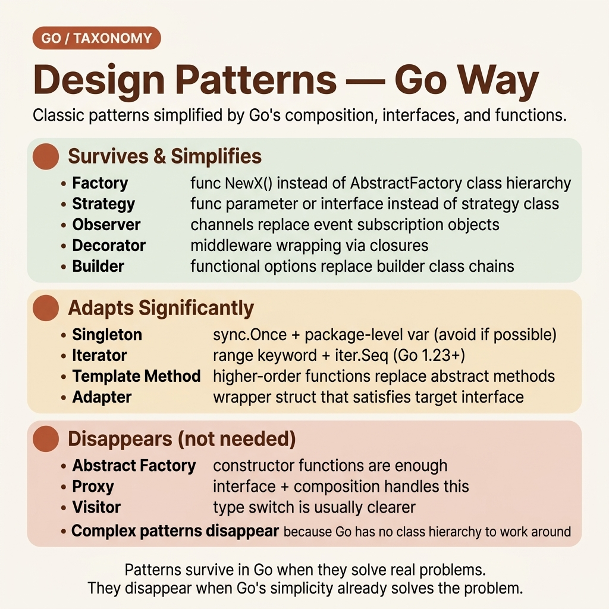
| # | Mức độ nghiêm trọng | Lỗi | Hậu quả | Sửa chữa |
|---|---|---|---|---|
| 1 | 🔴 Gây tử vong | Dịch các mẫu Java 1:1 (lớp AbstractFactory, Builder ) | Kỹ thuật quá mức, không thành ngữ | NewXxx() + tùy chọn chức năng |
| 2 | 🔴 Gây tử vong | Observer bị rò rỉ goroutine — người đăng ký không bao giờ đóng | Rò rỉ bộ nhớ, số lượng goroutine tăng mãi mãi | Hủy bối cảnh + dọn dẹp Close() + defer |
| 3 | 🟡 Chung | Singleton lạm dụng (sử dụng cho mọi thứ) | Sự phụ thuộc ẩn giấu, thử nghiệm địa ngục | Thích tiêm rõ ràng. Singleton chỉ dành cho cấu hình, logger |
| 4 | 🟡 Chung | Kênh (channel) Observer không có áp suất ngược | Nhà xuất bản chặn khi người đăng ký chậm | Đã lưu vào bộ đệm kênh (channel) + select default hoặc ghi |
| 5 | 🔵 Nhỏ | Mẫu sớm - áp dụng trước trường hợp sử dụng thứ 3 | Trừu tượng không cần thiết | Đợi 3 trường hợp cụ thể rồi trích xuất mẫu |
---
| Tài nguyên | Loại | Liên kết | Lưu ý |
|---|---|---|---|
| Go Các mẫu thiết kế (design patterns) | Sách | https://www.packtpub.com/product/go-design-potypes/9781786466204 | Toàn diện |
| Dave Cheney — SOLID Go | Nói chuyện | https://dave.cheney.net/2016/08/20/ solid -go-design | Mẫu + SOLID |
| Tùy chọn chức năng | Blog | https://dave.cheney.net/2014/10/17/function-options-for-friend-apis | Đề xuất ban đầu |
---
Cốt lõi của Các mẫu thiết kế (design patterns) — Go Cách rất rõ ràng. Các nhánh tiện ích mở rộng bên dưới giúp bạn đưa các mẫu thiết kế (design patterns) vào sản xuất với DDD, kiến trúc sạch và các mẫu vi dịch vụ.
| Gia hạn | Khi nào | Lý do | Tệp/Liên kết |
|---|---|---|---|
| [Go Đồng thời (concurrency)](../../đồng thời (concurrency)/) | Khi bạn cần các goroutine , các kênh (channel) , hãy đồng bộ hóa các mẫu | mẫu Observer → đồng thời (concurrency) lặn sâu | Go bài hát |
| [Go Các mẫu thiết kế (design patterns)](../../design-patterns/) | Khi bạn cần một danh mục mẫu đầy đủ | Tất cả các mẫu GoF đều thành ngữ | Go bài hát |
| [Clean Architecture](../../../architecture/go/) | Khi bạn cần cấu trúc ứng dụng | DDD + Kiến trúc sạch trong Go | Kiến trúc |
| [OOP Mental Model](./01-oop-mental-model.md) | Khi bạn cần xem lại khung hình | Toàn bộ Java map → Go | Thư mục này |
---
Điều hướng: [← SOLID in Go](./05-solid-in-go.md) · [→ OOP in Go Hub](./README.md)
Trình xử lý webhook của bạn nhận được HMAC signature dưới dạng chuỗi hex trong tiêu đề X-Hub-Signature . Phần phụ trợ của bạn tính toán thông báo và nhận được []byte thô. Bạn so sánh chúng với == - việc kiểm tra đều thất bại time . Chuỗi hex "a1b2c3" và byte slice []byte{0xa1, 0xb2, 0xc3} trông có vẻ liên quan nhưng chúng chiếm các bố cục bộ nhớ khác nhau. Bạn cần hex.EncodeToString để đưa chúng vào cùng một biểu diễn trước khi so sánh.
Các nhà phát triển JavaScript mong đợi sự ép buộc ngầm giữa chuỗi và dữ liệu nhị phân. Go từ chối. string(bytes) và []byte(str) tạo các bản sao rõ ràng - chuỗi không thay đổi, byte slice vẫn có thể thay đổi. Việc trộn lẫn chúng sẽ làm hỏng các so sánh mật mã và rò rỉ bộ nhớ trong các tình huống phát trực tuyến.
1.1 Các kiểu bất biến và lỗi
| Ranh giới | Trách nhiệm cốt lõi |
|---|---|
[]byte | Phổ quát format . Bộ mã hóa mật mã, I/O và JSON chỉ sử dụng byte slices . |
| Mã hóa | Base64 và hex là các trình bao bọc vận chuyển - chúng chuyển đổi byte slices thành các chuỗi có thể in được để truyền mạng. |
| Quy tắc | Cơ sở lý luận |
|---|---|
| Bản sao rõ ràng | string(buf) cấp phát một chuỗi mới. Việc thay đổi buf sau khi truyền không ảnh hưởng đến chuỗi. |
| Quy trình đọc | Tránh io.ReadAll trên đầu vào không đáng tin cậy. Truyền tải trọng lớn qua json.NewDecoder để giới hạn mức sử dụng bộ nhớ. |
1.2 Chuỗi thất bại
- Sai lệch Base64: Bạn giải mã tải trọng JWT bằng
base64.StdEncodingthay vìbase64.URLEncoding. Base64 tiêu chuẩn sử dụng+và/; Base64 an toàn cho URL sử dụng-và_. Bộ giải mã âm thầm tạo ra các byte sai. - Bộ giải mã OOM: Một khách hàng tải lên nội dung JSON 2 GB. Bạn gọi
io.ReadAll(request.Body)và tải toàn bộ tải trọng vào bộ nhớ. Nhóm Kubernetes đạt đến giới hạn bộ nhớ và bị hủy.
Mã nguồn & Các ví dụ minh họa
string và []byte cho tải trọng mạng và mật mã.
Phương pháp tiếp cận: Sử dụng các phôi []byte() gốc và encoding/base64 để mã hóa truyền tải.
Độ phức tạp: O(N) — mỗi chuyển đổi sẽ sao chép toàn bộ bộ đệm.> Takeaway: string(buf) và []byte(str) là những bản sao rõ ràng. Việc thay đổi byte slice sau khi chuyển đổi không ảnh hưởng đến chuỗi. Sử dụng URLEncoding cho mã thông báo JWT và tham số URL; sử dụng StdEncoding cho mọi thứ khác.---
// basic_coercion.go
package helper
import (
"encoding/base64"
"fmt"
)
func ExecuteConversions(payload string) error {
// ✅ string → []byte creates a mutable copy
buffer := []byte(payload)
// ✅ []byte → string creates an immutable copy
reverted := string(buffer)
standardEncoded := base64.StdEncoding.EncodeToString(buffer)
urlEncoded := base64.URLEncoding.EncodeToString(buffer)
fmt.Printf("Reverted: %s | Std: %s | URL: %s\n", reverted, standardEncoded, urlEncoded)
return nil
}hex.EncodeToString và so sánh các chuỗi.
Độ phức tạp: O(N) — một lần mã hóa, một lần so sánh.> Takeaway: Không bao giờ so sánh trực tiếp byte thô với chuỗi hex. hex.EncodeToString chuyển đổi []byte{0xa1} thành "a1" — cả hai bên phải có cùng cách biểu diễn.---
// crypto_mapping.go
package helper
import (
"encoding/hex"
"fmt"
)
func VerifyHexadecimalSignatures(rawHash []byte, providedSignature string) error {
// ✅ Encode the raw bytes to a hex string for comparison
generatedHex := hex.EncodeToString(rawHash)
if generatedHex != providedSignature {
return fmt.Errorf("signature mismatch: expected %s, got %s", generatedHex, providedSignature)
}
return nil
}json.NewDecoder(reader) để phân tích cú pháp trực tiếp từ io.ReadCloser .
Độ phức tạp: O(1) chi phí bộ nhớ — bộ giải mã đọc mã thông báo theo mã thông báo.> Takeaway: io.ReadAll trên đầu vào không đáng tin cậy là một vectơ OOM. json.NewDecoder đọc phần thân HTTP dưới dạng luồng - bộ nhớ không đổi bất kể kích thước tải trọng.---
// streaming_json.go
package helper
import (
"encoding/json"
"net/http"
)
type VerificationPayload struct {
EntityIdentifier string `json:"entity_identifier"`
Action string `json:"action"`
}
func StreamIncomingPayload(request *http.Request) (VerificationPayload, error) {
defer request.Body.Close()
var payload VerificationPayload
// ✅ Stream-parse: reads from the body without buffering the entire content
decoder := json.NewDecoder(request.Body)
decoder.DisallowUnknownFields()
if err := decoder.Decode(&payload); err != nil {
return VerificationPayload{}, err
}
return payload, nil
}multipart.Writer để ghi các trường và phần tệp vào bộ đệm dùng chung.
Độ phức tạp: Logic đệm O(1) — ghi luồng trực tiếp.> Takeaway: multipart.Writer tự động xử lý các điểm đánh dấu ranh giới. Gọi Close() trước khi đọc bộ đệm - nó ghi ranh giới cuối cùng.// multipart_assembly.go
package helper
import (
"bytes"
"mime/multipart"
)
func BuildMultipartTransmission(metadata string, binary []byte) (*bytes.Buffer, string, error) {
buffer := new(bytes.Buffer)
writer := multipart.NewWriter(buffer)
_ = writer.WriteField("diagnostic_metadata", metadata)
if len(binary) > 0 {
part, _ := writer.CreateFormFile("diagnostic_binary", "payload.bin")
// ✅ Write binary data directly to the multipart stream
part.Write(binary)
}
// Close writes the multipart termination boundary
writer.Close()
return buffer, writer.FormDataContentType(), nil
}Sơ đồ trực quan & Luồng hoạt động (Visual Support)
Bối cảnh chuyển đổi có một trung tâm trung tâm: []byte . Mọi format — chuỗi, Base64, hex, JSON — chuyển đổi thành và từ byte. Hình ảnh neo giữ hệ thống phân cấp này. Hình: []byte nằm ở trung tâm. Các chuỗi, Base64, hex và JSON đều chuyển đổi thông qua byte slices . Tải trọng mạng đến dưới dạng byte; định dạng hiển thị để lại dưới dạng chuỗi.
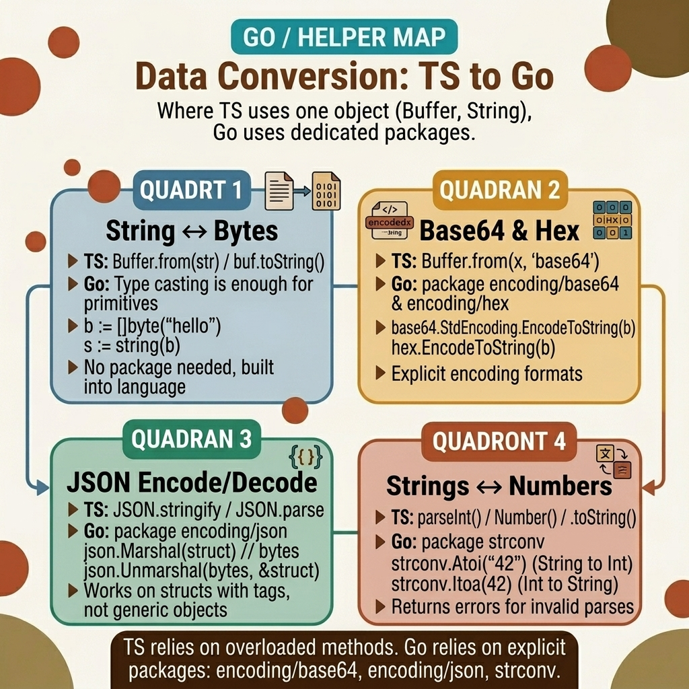
| # | Khiếm khuyết | Sửa chữa |
|---|---|---|
| 1 | Sử dụng StdEncoding cho tải trọng URL/ JWT | Sử dụng base64.URLEncoding — mã hóa tiêu chuẩn chứa + và / phá vỡ các tham số URL |
| 2 | Gọi io.ReadAll trên các phần thân HTTP không đáng tin cậy | Sử dụng json.NewDecoder để phân tích cú pháp luồng; thêm http.MaxBytesReader làm bộ bảo vệ kích thước |
| 3 | So sánh byte thô với chuỗi hex/Base64 | Mã hóa cả hai bên thành cùng một format trước khi so sánh |
| 4 | Giả sử string(buf) chia sẻ bộ nhớ với buf | Nó tạo ra một bản sao. Đột biến buf sau khi truyền là an toàn nhưng phân bổ thêm bộ nhớ |
| Tài nguyên | Liên kết |
|---|---|
encoding/base64 | [pkg.go.dev/encoding/base64](https://pkg.go.dev/encoding/base64) |
encoding/json | [pkg.go.dev/encoding/json](https://pkg.go.dev/encoding/json) |
| Gia hạn | Khi nào | Cơ sở lý luận |
|---|---|---|
| [Array Pipeline](./02-array-pipeline.md) | Khi xử lý bộ sưu tập các bản ghi được chuyển đổi | Generic Map , Filter , Reduce trên đã gõ slices |
| [Promise & Async](./04-promise-async.md) | Khi gọi đồng thời nhiều API bên ngoài | Các mẫu errgroup và kênh (channel) cho I/O song song |
Điều hướng: [← Bridge Router](./README.md) · [→ Array Pipeline](./02-array-pipeline.md)
Một nhà phát triển giao diện người dùng cấp cao xử lý 50.000 hồ sơ nhân viên bằng cách sử dụng Filter(employees).Map(extractName) . Mỗi bước pipeline phân bổ một slice mới và sao chép structs . Hai bước trên bản ghi 50K = phân bổ 100K. Vùng chứa hết bộ nhớ.
JavaScript ẩn chi phí này đằng sau garbage collector của nó. Go làm cho nó rõ ràng: mọi append sang một slice mới đều tốn bộ nhớ. Generics ( Go 1.18+) cho phép bạn viết các hàm an toàn kiểu Map , Filter và Reduce — nhưng chúng vẫn phân bổ các hàm trung gian slices . Đối với các đường dẫn nóng, vòng lặp for thủ công với một kết quả được phân bổ trước duy nhất slice nhanh hơn 3-5 lần.
1.1 Các kiểu bất biến và lỗi
| Ranh giới | Trách nhiệm cốt lõi |
|---|---|
| Pipeline loại | Chuỗi JavaScript biến đổi dữ liệu một cách ngầm định. Các tiện ích Go chuyển rõ ràng closures qua gõ slices . |
| Hiệu suất | Đường dẫn khai báo ưu tiên khả năng đọc. Vòng lặp đường dẫn nóng ưu tiên phân bổ tối thiểu. |
| Quy tắc | Cơ sở lý luận |
|---|---|
| Tránh xâu chuỗi sâu | Reduce(Map(Filter(data))) phá hủy khả năng đọc. Chia thành các biến trung gian. |
| Bản sao giá trị so với các con trỏ | Map qua []User sao chép mỗi struct . Đối với structs lớn, hãy sử dụng []*User để tránh sao chép. |
1.2 Chuỗi thất bại
- Phần tử ảo:
Findtrả về giá trị 0 struct vàfalsekhi không có kết quả khớp nào tồn tại. Nếu bạn bỏ qua boolean, bạn xử lýUser{ID: 0}- điều này có thể vô tình khớp với một bản ghi thực trong database của bạn. - Sự cố comparable :
Includes(slice, target)yêu cầu ràng buộccomparable. Việc truyền slice của maps sẽ gây ra lỗi biên dịch. Thay vào đó hãy sử dụngSomevới một vị ngữ.
Mã nguồn & Các ví dụ minh họa
Map , Filter và Reduce bằng cách sử dụng Go generics .
Phương pháp tiếp cận: Mỗi hàm nhận một []T và một closure , trả về một slice mới .
Độ phức tạp: O(N) cho mỗi hàm — một lần chuyển qua đầu vào slice .> Takeaway: make([]R, len(slice)) phân bổ trước dung lượng chính xác cho Map . Filter sử dụng append vì kích thước đầu ra không xác định. Phân bổ trước bằng make([]T, 0, len(slice)) giúp giảm phân bổ lại khi bộ lọc giữ lại hầu hết các phần tử.---
// core_pipeline.go
package utils
// Map transforms each element using the mapper function.
func Map[T any, R any](slice []T, mapper func(T) R) []R {
result := make([]R, len(slice))
for i, item := range slice {
result[i] = mapper(item)
}
return result
}
// Filter returns elements where the predicate returns true.
func Filter[T any](slice []T, predicate func(T) bool) []T {
var result []T
for _, item := range slice {
if predicate(item) {
result = append(result, item)
}
}
return result
}
// Reduce collapses a slice into a single value using an accumulator.
func Reduce[T any, R any](slice []T, reducer func(R, T) R, initial R) R {
result := initial
for _, item := range slice {
result = reducer(result, item)
}
return result
}Find trả về (T, bool) — boolean thay thế undefined của JavaScript. Includes yêu cầu ràng buộc comparable .
Độ phức tạp: Trường hợp tốt nhất O(1) — cả hai đều bị đoản mạch trong trận đấu đầu tiên.> Takeaway: Luôn kiểm tra giá trị trả về boolean từ Find . Giá trị 0 của struct là giá trị hợp lệ - User{ID: 0} là giá trị thực struct , không phải nil . Việc bỏ qua boolean sẽ dẫn đến việc xử lý các bản ghi ảo.---
// validation_logic.go
package utils
// Find returns the first element matching the predicate, plus a boolean.
func Find[T any](slice []T, predicate func(T) bool) (T, bool) {
for _, item := range slice {
if predicate(item) {
return item, true
}
}
var zero T
return zero, false
}
// Includes checks if a value exists in the slice.
// Requires comparable constraint — maps and slices cannot use ==.
func Includes[T comparable](slice []T, target T) bool {
for _, item := range slice {
if item == target {
return true
}
}
return false
}FlatMap maps mỗi phần tử thành một slice và nối. Chunk chia theo kích thước cố định.
Độ phức tạp: O(N×M) cho việc mở rộng FlatMap ; O(N) cho Chunk .> Takeaway: Chunk sub- slices chia sẻ phần hỗ trợ array với bản gốc slice . Sửa đổi các phần tử trong một đoạn sẽ sửa đổi bản gốc. Nếu bạn cần cách ly, hãy sao chép từng đoạn bằng slices.Clone .// complex_restructuring.go
package utils
// FlatMap maps each element to a slice and flattens the results.
func FlatMap[T any, R any](slice []T, fn func(T) []R) []R {
var result []R
for _, item := range slice {
result = append(result, fn(item)...)
}
return result
}
// Chunk splits a slice into batches of the given size.
func Chunk[T any](slice []T, size int) [][]T {
if size <= 0 {
return nil
}
result := make([][]T, 0, (len(slice)+size-1)/size)
for i := 0; i < len(slice); i += size {
end := i + size
if end > len(slice) {
end = len(slice)
}
result = append(result, slice[i:end])
}
return result
}Sơ đồ trực quan & Luồng hoạt động (Visual Support)
Khoảng cách giữa chuỗi JavaScript và vòng lặp rõ ràng Go là mô hình phân bổ. Hình ảnh maps mỗi phương thức JS array tương đương với Go của nó. Hình: Các phương thức JS array được ánh xạ tới Go generic tương đương. Mỗi hàm Go chấp nhận một kiểu gõ slice và một closure . Không giống như JS, mỗi bước phân bổ một slice mới.
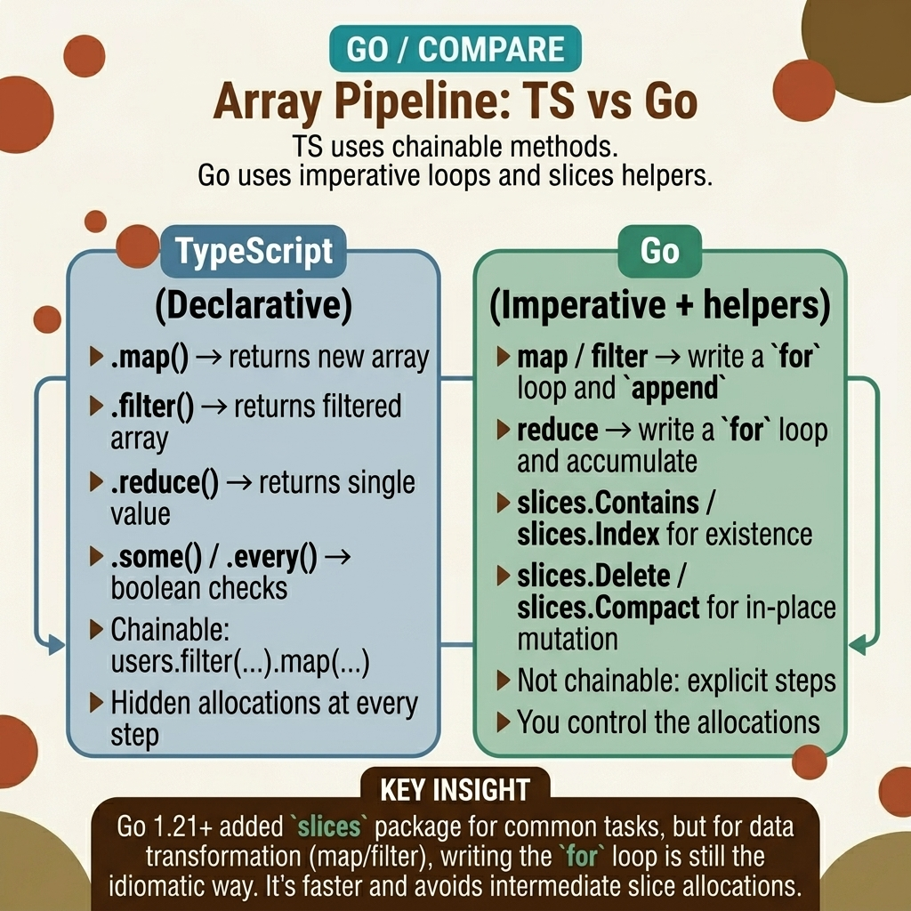
| # | Khiếm khuyết | Sửa chữa |
|---|---|---|
| 1 | Lồng Reduce(Map(Filter(...))) vào một biểu thức | Chia thành các biến trung gian - khả năng đọc quan trọng hơn một dòng |
| 2 | Bỏ qua trả về boolean từ Find | Luôn kiểm tra ok - giá trị 0 là hợp lệ structs , không phải null |
| 3 | Sử dụng generic Map trên các đường dẫn nóng có structs lớn | Thay thế bằng vòng lặp for thủ công để phân bổ trước và tránh các bản sao |
| 4 | Sửa đổi các phần tử slice bên trong Filter | Phần tử Slice là bản sao cho các loại giá trị. Để đột biến, hãy sử dụng []*T |
| Tài nguyên | Liên kết |
|---|---|
samber/lo Thư viện tiện ích | [github.com/samber/lo](https://github.com/samber/lo) |
Tiêu chuẩn slices Package | [pkg.go.dev/slices](https://pkg.go.dev/slices) |
| Gia hạn | Khi nào | Cơ sở lý luận |
|---|---|---|
| [Object Maps](./03-object-map-utils.md) | Khi làm việc với dữ liệu khóa-giá trị động | Generic Keys , Merge , Pick cho map[K]V |
| [Optional Types](./11-optional-nullable.md) | Khi xử lý các giá trị rỗng hoặc vắng mặt | Find trả về giá trị 0 — các tùy chọn làm cho sự vắng mặt trở nên rõ ràng |
Điều hướng: [← Data Conversion](./01-data-conversion.md) · [→ Object Maps](./03-object-map-utils.md)
Nhà phát triển TypeScript chuyển việc hợp nhất cấu hình: {...defaultConfig, ...envConfig} . Họ thử reflect để hợp nhất structs một cách linh hoạt. Mã biên dịch, chạy chậm hơn 10 lần so với vòng lặp thủ công và hoảng loạn khi thêm trường mới mà không cập nhật logic phản chiếu. Go maps ( map[K]V ) thay thế các đối tượng động của JavaScript. Nhưng maps có hai điểm khác biệt quan trọng: thứ tự lặp được cố tình ngẫu nhiên hóa (không có thứ tự khóa ổn định) và việc đọc/ghi đồng thời gây ra sự cố runtime nghiêm trọng - không phải là cuộc đua dữ liệu, mà là fatal Lỗi biên dịch / Runtime: đồng thời map writes không thể phục hồi.
1.1 Các kiểu bất biến và lỗi
| Ranh giới | Trách nhiệm cốt lõi |
|---|---|
map[K]V | Tương đương động của các đối tượng JS. Khóa phải là comparable ; các giá trị có thể là loại any . |
| Lặp lại ngẫu nhiên | Go ngẫu nhiên hóa thứ tự range để ngăn mã phụ thuộc vào thứ tự chèn. |
| Quy tắc | Cơ sở lý luận |
|---|---|
| Không bao giờ thay đổi maps tại chỗ | result[k] = v làm thay đổi bản gốc map . Tạo một map mới để hợp nhất. |
| Sắp xếp khóa sau khi trích xuất | Keys(m) trả về một thứ tự ngẫu nhiên slice . Sắp xếp nếu bạn cần đầu ra xác định. |
1.2 Chuỗi thất bại
- Sắp xếp khóa bị thiếu: Bạn trích xuất khóa map và ghi vào tệp cấu hình. Các thử nghiệm thành công cục bộ, thất bại trong CI — vì thứ tự khóa thay đổi giữa các lần chạy.
- Bẫy phản chiếu struct : Sử dụng
reflectđể trích xuất các trường struct bỏ qua sự an toàn biên dịch- time . Việc thêm trường vào struct âm thầm phá vỡ mã phản chiếu tại runtime .
Mã nguồn & Các ví dụ minh họa
make([]K, 0, len(m)) để tránh phân bổ lại.
Độ phức tạp: O(N) — một lần vượt qua map .> Bài học rút ra: Việc phân bổ trước bằng cap = len(m) sẽ tránh tăng trưởng slice trong vòng lặp. Luôn sắp xếp kết quả nếu bạn cần thứ tự xác định - slices.Sort(Keys(m)) .---
// basic_maps.go
package utils
// Entry represents a key-value pair, equivalent to JS [key, value] tuples.
type Entry[K comparable, V any] struct {
Key K
Value V
}
// Keys returns all map keys as a slice. Order is non-deterministic.
func Keys[K comparable, V any](m map[K]V) []K {
keys := make([]K, 0, len(m))
for k := range m {
keys = append(keys, k)
}
return keys
}
// Entries returns all key-value pairs as a slice of Entry structs.
func Entries[K comparable, V any](m map[K]V) []Entry[K, V] {
entries := make([]Entry[K, V], 0, len(m))
for k, v := range m {
entries = append(entries, Entry[K, V]{Key: k, Value: v})
}
return entries
}Object.assign ) và trích xuất một tập hợp con các khóa (như Lodash pick ).
Phương pháp tiếp cận: Merge tạo một map mới và sao chép các mục nhập — sau maps ghi đè lên các mục trước đó. Pick chỉ chọn các phím được chỉ định.
Độ phức tạp: O(N+M) để hợp nhất; O(K) để chọn trong đó K = số lượng phím được chọn.> Takeaway: Merge luôn trả về một map mới — bản gốc không được sửa đổi. Đây là Go tương đương với Object.assign({}, ...maps) (lưu ý đối tượng trống là đối số đầu tiên).---
// mutable_config.go
package utils
// Merge combines multiple maps into one. Later maps overwrite earlier entries.
func Merge[K comparable, V any](maps ...map[K]V) map[K]V {
total := 0
for _, m := range maps {
total += len(m)
}
result := make(map[K]V, total)
for _, m := range maps {
for k, v := range m {
// ✅ Last-write-wins: later maps take priority
result[k] = v
}
}
return result
}
// Pick returns a new map containing only the specified keys.
func Pick[K comparable, V any](m map[K]V, keys ...K) map[K]V {
result := make(map[K]V, len(keys))
for _, k := range keys {
if v, ok := m[k]; ok {
result[k] = v
}
}
return result
}Invert yêu cầu cả K và V phải là comparable . FilterMap chấp nhận một vị từ trên các cặp khóa-giá trị.
Độ phức tạp: O(N) — một lượt cho mỗi thao tác.> Takeaway: Invert bị mất khi các giá trị không phải là duy nhất. Trước tiên hãy kiểm tra tính duy nhất hoặc sử dụng map[V][]K để bảo toàn tất cả các khóa gốc.// transform_maps.go
package utils
// Invert swaps keys and values. Duplicate values overwrite earlier entries.
func Invert[K comparable, V comparable](m map[K]V) map[V]K {
result := make(map[V]K, len(m))
for k, v := range m {
// ⚠️ If two keys map to the same value, one entry is lost
result[v] = k
}
return result
}
// FilterMap returns a new map containing only entries that match the predicate.
func FilterMap[K comparable, V any](m map[K]V, predicate func(K, V) bool) map[K]V {
result := make(map[K]V)
for k, v := range m {
if predicate(k, v) {
result[k] = v
}
}
return result
}Sơ đồ trực quan & Luồng hoạt động (Visual Support)
Các đối tượng JavaScript và Go maps trông giống nhau nhưng hoạt động khác nhau. Hình ảnh maps mỗi phương thức JS Object. tương đương với Go generic của nó. Hình: JS Object.keys/values/entries/assign được ánh xạ tới các hàm Go generic . Go yêu cầu các vòng lặp rõ ràng trong đó JavaScript cung cấp các phương thức tích hợp sẵn.*
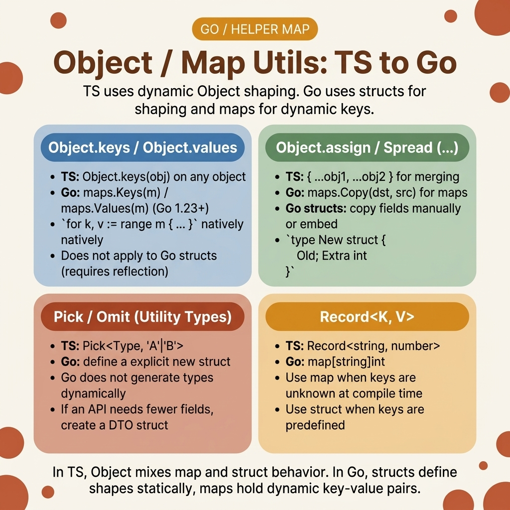
| # | Khiếm khuyết | Sửa chữa |
|---|---|---|
| 1 | Đồng thời map đọc và ghi | Sử dụng sync.RWMutex hoặc sync.Map . Nguyên nhân ghi đồng thời fatal Lỗi biên dịch / Runtime: đồng thời map writes - không thể phục hồi được. |
| 2 | Mong đợi thứ tự lặp lại xác định | Go sắp xếp ngẫu nhiên thứ tự range theo thiết kế. Sắp xếp các khóa sau khi trích xuất nếu thứ tự quan trọng. |
| 3 | Thay đổi map được truyền dưới dạng đối số hàm | Maps là các loại tham chiếu. Đột biến bên trong một hàm ảnh hưởng đến người gọi. Sao chép trước nếu bạn cần cách ly. |
| Tài nguyên | Liên kết |
|---|---|
maps Package ( Go 1.21+) | [pkg.go.dev/maps](https://pkg.go.dev/maps) |
| Go Generics Hướng dẫn | [go.dev/doc/tutorial/generics](https://go.dev/doc/tutorial/generics) |
| Gia hạn | Khi nào | Cơ sở lý luận |
|---|---|---|
| [Đồng thời Maps](./09-set-đồng thời-map.md) | Khi nhiều các goroutine truy cập vào cùng một map | Các mẫu được bảo vệ sync.Map và mutex |
| [Array Pipelines](./02-array-pipeline.md) | Khi xử lý slices được trích xuất từ maps | Generic Map , Filter , Reduce trên đã gõ slices |
Điều hướng: [← Array Pipeline](./02-array-pipeline.md) · [→ Promise & Async](./04-promise-async.md)
Nhà phát triển giao diện người dùng xây dựng điểm cuối phụ trợ tổng hợp ba lệnh gọi API. Họ viết go fetchUser() , go fetchOrders() , go fetchPermissions() - ba các goroutine bắn ra. Nhưng hàm main sẽ trả về ngay sau khi khởi chạy chúng. Không giống như JavaScript, trong đó await Promise.all(...) chặn cho đến khi tất cả promises giải quyết, Go 's main thoát ra và các goroutine bị giết một cách âm thầm.
Bản sửa lỗi yêu cầu đồng bộ hóa rõ ràng: sync.WaitGroup cho các tác vụ quên và quên hoặc errgroup cho các tác vụ trả về lỗi. errgroup tương đương trực tiếp với Promise.all - nó đợi tất cả các goroutine hoàn thành và hủy nhóm nếu any một nhóm không thành công.
1.1 Các kiểu bất biến và lỗi
| Ranh giới | Trách nhiệm cốt lõi |
|---|---|
| Các goroutine | Nhẹ threads được ghép kênh trên hệ điều hành threads . Không bao giờ sinh sản mà không có điều kiện thoát cụ thể. |
errgroup | Sự thay thế Promise.all trực tiếp. Hủy bỏ anh em các goroutine khi trả về lỗi. |
| Quy tắc | Cơ sở lý luận |
|---|---|
Luôn vượt qua context.Context | Go tương đương với AbortController . Cung cấp thời gian chờ và tuyên truyền hủy bỏ. |
| Bộ đệm các kênh (channel) để khớp với đồng thời (concurrency) | Không có bộ đệm các kênh (channel) chặn người gửi cho đến khi receiver đọc. Nếu không có ai đọc, goroutine sẽ bị rò rỉ. |
1.2 Chuỗi thất bại
- Zombie goroutine : A goroutine gọi API bên ngoài mà không hết thời gian chờ ngữ cảnh. API bị treo. goroutine chặn vĩnh viễn, rò rỉ bộ nhớ trong suốt thời gian tồn tại của quy trình.
- Cuộc đua dữ liệu trở lại: Nhà phát triển gán kết quả cho các biến được chia sẻ bên trong các goroutine —
user = fetchUser(). Hai các goroutine ghi vào cùng một biến mà không đồng bộ hóa. Máy dò chủng tộc bắt được nó; sản xuất mà không có-raceâm thầm làm hỏng dữ liệu.
Mã nguồn & Các ví dụ minh họa
<-ch sẽ chặn cho đến khi giá trị đến.
Độ phức tạp: O(1) — một goroutine , một kênh (channel) gửi/nhận.> Takeaway: Vùng đệm kênh (channel) ( make(chan string, 1) ) là rất quan trọng. Nếu người gọi từ bỏ kênh (channel) , lệnh gửi không có bộ đệm sẽ chặn vĩnh viễn - goroutine sẽ bị rò rỉ. Bộ đệm 1 cho phép goroutine gửi và thoát ngay cả khi không có receiver .---
// basic_async.go
package async
import (
"fmt"
"time"
)
// TS: async function fetchUser(id) { return "User" }
func FetchUserAsync(id int) <-chan string {
ch := make(chan string, 1) // Buffer prevents block if receiver vanishes.
go func() {
time.Sleep(100 * time.Millisecond) // Simulate IO
ch <- fmt.Sprintf("User_%d", id)
}()
return ch
}
func ExecuteAwait() {
// TS: const user = await fetchUser(1)
userChannel := FetchUserAsync(1)
result := <-userChannel // Blocks until the goroutine sends
fmt.Println("Result", result)
}await Promise.all([...]) .
Phương pháp tiếp cận: errgroup.WithContext tạo một nhóm hủy tất cả các goroutine nếu any một nhóm trả về lỗi.
Độ phức tạp: O(N) — một goroutine cho mỗi nhiệm vụ.> Tại sao errgroup thay vì sync.WaitGroup ? WaitGroup không xử lý lỗi — nếu một goroutine bị lỗi, những cái khác vẫn tiếp tục chạy và người gọi không bao giờ biết về lỗi đó. errgroup trả về lỗi đầu tiên và (khi được tạo bằng WithContext ) hủy bối cảnh dẫn xuất để các goroutine khác có thể kiểm tra ctx.Err() và thoát sớm.---
// errgroup_sync.go
package async
import (
"context"
"fmt"
"time"
"golang.org/x/sync/errgroup"
)
func ExecutePromiseAll() error {
var user, metadata string
group, _ := errgroup.WithContext(context.Background())
group.Go(func() error {
time.Sleep(100 * time.Millisecond)
user = "Alice"
return nil
})
group.Go(func() error {
time.Sleep(150 * time.Millisecond)
metadata = "Authorized"
return nil
})
// TS: await Promise.all([task1, task2])
if err := group.Wait(); err != nil {
return err
}
fmt.Printf("Results: %s, %s\n", user, metadata)
return nil
}select chặn cho đến khi kênh (channel) đầu tiên nhận được giá trị. time.After cung cấp dự phòng hết thời gian chờ.
Độ phức tạp: O(N) goroutine sinh sản; Lựa chọn O(1).> Điểm rút lui: Vòng thua goroutine tiếp tục diễn ra sau khi select chọn được người chiến thắng. Nó gửi đến kênh (channel) của nó, nhưng không ai đọc - kênh (channel) được đệm sẽ hấp thụ giá trị và goroutine thoát ra một cách sạch sẽ. Nếu không lưu vào bộ đệm, goroutine bị mất sẽ bị chặn vĩnh viễn.// race_condition.go
package async
import (
"fmt"
"time"
)
func ExecutePromiseRace() string {
fastChannel := make(chan string, 1)
slowChannel := make(chan string, 1)
// TS: const result = await Promise.race([task1, task2])
go func() {
time.Sleep(50 * time.Millisecond)
fastChannel <- "Primary DB"
}()
go func() {
time.Sleep(200 * time.Millisecond)
slowChannel <- "Fallback DB"
}()
select {
case result := <-fastChannel:
return result
case result := <-slowChannel:
return result
case <-time.After(300 * time.Millisecond):
return "Timeout"
}
}Sơ đồ trực quan & Luồng hoạt động (Visual Support)
| # | Khiếm khuyết | Sửa chữa |
|---|---|---|
| 1 | Sinh sản các goroutine mà không hủy ngữ cảnh | Luôn vượt qua context.WithCancel hoặc context.WithTimeout . Hủy khi có lỗi hoặc thoát chức năng. |
| 2 | Viết kết quả vào các biến được chia sẻ từ các goroutine | Sử dụng các kênh (channel) để trả về giá trị hoặc bảo vệ trạng thái chia sẻ bằng sync.Mutex . |
| 3 | Thiếu thời gian chờ khi chạy dài các goroutine | Liên kết time.After hoặc context.WithTimeout trong các khối select để ngăn chặn việc chờ đợi vô hạn. |
| Tài nguyên | Liên kết |
|---|---|
| Bối cảnh Package | [pkg.go.dev/context](https://pkg.go.dev/context) |
| Go Đồng thời (concurrency) Mẫu | [go.dev/blog/pipelines](https://go.dev/blog/pipelines) |
| Gia hạn | Khi nào | Cơ sở lý luận |
|---|---|---|
| [Context Patterns](../../đồng thời (concurrency)/03-context.md) | Khi truyền thời gian chờ thông qua chuỗi cuộc gọi | Cây khử sâu với context.WithTimeout |
| [Worker Pools](../../đồng thời (concurrency)/08-worker-pool-tunny.md) | Khi giới hạn số lượng goroutine đồng thời | Ngăn chặn tình trạng cạn kiệt bộ nhớ khi sinh sản goroutine không giới hạn |
Điều hướng: [← Map Utils](./03-object-map-utils.md) · [→ Date Time Utilities](./05-date-time.md)
Giao diện người dùng của bạn gửi dấu thời gian ISO 8601. Kỹ sư phụ trợ phân tích chúng bằng time.Parse("YYYY-MM-DD", input) — sao chép mô hình tinh thần JavaScript. Go chấp nhận chuỗi không có lỗi biên dịch. Nhưng [[E40]]] được phân tích cú pháp là vô nghĩa: năm, tháng và ngày được thay thế bằng các ký tự không liên quan vì Y , M , D không có ý nghĩa trong hệ thống Go 's format . Go sử dụng tham chiếu ma thuật date : Mon Jan 2 15:04:05 MST 2006 . Các số tuân theo trình tự 1-2-3-4-5-6-7 : Tháng=1, Ngày=2, Giờ=15 (3 giờ chiều), Phút=04, Giây=05, Năm=2006, Độ lệch múi giờ=-0700. Ví dụ, bạn viết format — "2006-01-02" có nghĩa là "năm-tháng-ngày" vì đó là các giá trị tham chiếu ở các vị trí đó.
1.1 Các kiểu bất biến và lỗi
| Ranh giới | Trách nhiệm cốt lõi |
|---|---|
| Tham khảo ma thuật date | Bố cục Format sử dụng các giá trị tham chiếu: Tháng=1, Ngày=2, Giờ=3/15, Phút=4, Giây=5, Năm=6, Múi giờ=7. |
| Các loại thời lượng | time.Duration lưu trữ nano giây. Sử dụng hằng số time.Hour , time.Minute cho số học. |
| Quy tắc | Cơ sở lý luận |
|---|---|
Từ chối mã thông báo YYYY-MM-DD | Họ biên dịch nhưng tạo ra kết quả sai. Chỉ sử dụng 2006-01-02 . |
| Chỉ định rõ ràng múi giờ | time.Parse giả sử UTC. Sử dụng time.ParseInLocation khi đầu vào ở múi giờ địa phương. |
1.2 Chuỗi thất bại
- Múi giờ bị thiếu: Bạn lưu trữ dấu thời gian bằng
t.Format(time.RFC3339)nhưng phân tích lại chúng mà không có vị trí. Giao diện người dùng hiển thị thời gian đặt chỗ giảm 7 giờ vì UTC được giả định thay vìAsia/HoChiMinh. - Bẫy sử dụng tháng:
time.Now().Month()trả vềtime.Month(một loại được đặt tên), không phảiint. So sánh nó với một số nguyên từ API không thành công khi biên dịch time . Truyền vớiint(month).
Mã nguồn & Các ví dụ minh họa
2006-01-02 15:04:05 cho bố cục. Sử dụng time.RFC3339 cho đầu ra ISO 8601.
Độ phức tạp: O(1) cho mỗi lệnh gọi phân tích cú pháp/ format .> Bài học: Ghi nhớ chuỗi 1-2-3-4-5-6-7 (tháng-ngày-giờ-phút-giây-năm-múi giờ). Mọi bố cục Go format là sự sắp xếp lại các giá trị tham chiếu này.---
// basic_parsing.go
package dates
import (
"fmt"
"time"
)
func ParseFrontendTimestamp(payload string) (time.Time, error) {
// TS: dayjs(payload).format('YYYY-MM-DD HH:mm:ss')
// ✅ Go uses the 1-2-3-4-5-6 reference sequence
layout := "2006-01-02 15:04:05"
parsed, err := time.Parse(layout, payload)
if err != nil {
return time.Time{}, err
}
return parsed, nil
}
func FormatStandardOutput(now time.Time) string {
// RFC3339 = "2006-01-02T15:04:05Z07:00" (ISO 8601)
return now.Format(time.RFC3339)
}moment().add(hours, 'hour').tz("Asia/Tokyo") .
Phương pháp tiếp cận: Sử dụng time.Duration để bù giờ và time.LoadLocation để chuyển đổi múi giờ.
Độ phức tạp: O(1) cho mỗi thao tác.> Takeaway: Sử dụng AddDate(0, 1, 0) cho "một tháng sau" — nó xử lý chính xác các độ dài tháng khác nhau. 30 24 time.Hour cung cấp cho bạn chính xác 720 giờ, sai đối với tháng 2 và các tháng có 31 ngày.---
// bounded_durations.go
package dates
import (
"time"
)
func ScheduleFutureTask(hours int, targetLocation string) (time.Time, error) {
// TS: moment().add(hours, 'hour').tz("Asia/Tokyo")
now := time.Now()
offset := time.Duration(hours) * time.Hour
future := now.Add(offset)
// ✅ LoadLocation handles DST transitions automatically
loc, err := time.LoadLocation(targetLocation)
if err != nil {
return time.Time{}, err
}
return future.In(loc), nil
}
func CalculateCalendarOffset() time.Time {
now := time.Now()
// ✅ AddDate handles calendar months (28/29/30/31 days)
// Adding 30*24*time.Hour skips this and breaks on February
return now.AddDate(0, 1, 0)
}setInterval(fn, 1000) của JavaScript bằng Go 's time.Ticker .
Phương pháp tiếp cận: time.NewTicker gửi kênh (channel) đều đặn. select chặn trên mã đánh dấu và hủy ngữ cảnh.
Độ phức tạp: O(1) mỗi tích tắc.> Takeaway: Luôn gọi ticker.Stop() qua defer . time.Tick() (không có New ) trả về kênh (channel) mà không có cách nào để ngăn chặn goroutine cơ bản - nó rò rỉ trong suốt thời gian tồn tại của quá trình.// interval_polling.go
package dates
import (
"context"
"fmt"
"time"
)
func ExecutePollingInterval(ctx context.Context, duration time.Duration) {
// TS: setInterval(fn, 1000)
ticker := time.NewTicker(duration)
// ✅ Stop the ticker to release the underlying goroutine
defer ticker.Stop()
for {
select {
case <-ticker.C:
fmt.Println("Polling active configurations")
case <-ctx.Done():
fmt.Println("Terminating interval loop")
return
}
}
}Sơ đồ trực quan & Luồng hoạt động (Visual Support)
Tham chiếu format là phần khó hiểu nhất của Go 's time package . Mã thông báo JavaScript maps trực quan cho các giá trị tham chiếu Go . Hình: Mã thông báo JavaScript format (YYYY, MM, DD, HH, mm, ss) được ánh xạ tới các giá trị tham chiếu Go (2006, 01, 02, 15, 04, 05). Một chữ số bị đặt sai vị trí sẽ tạo ra một lỗi âm thầm date .
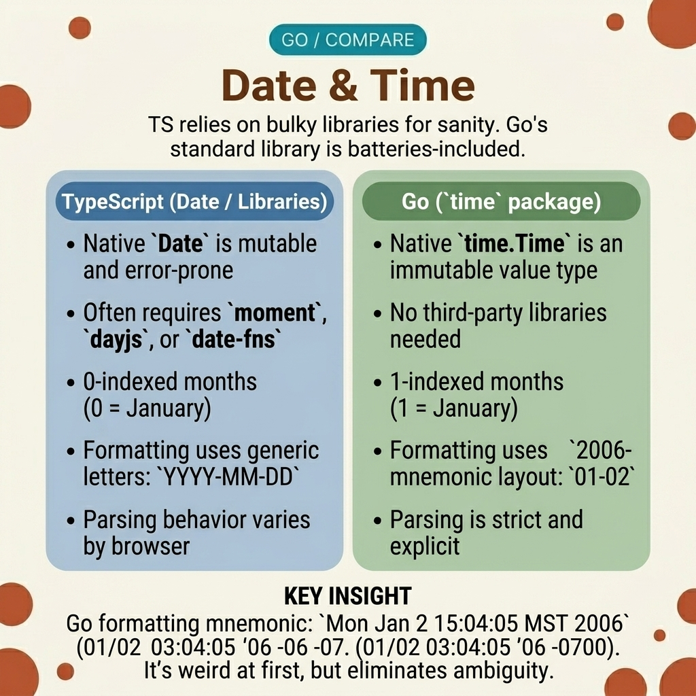
| # | Khiếm khuyết | Sửa chữa |
|---|---|---|
| 1 | Sử dụng mã thông báo YYYY-MM-DD format trong Go | Thay thế bằng 2006-01-02 . Tham chiếu của Go date là hợp lệ duy nhất format . |
| 2 | Giả sử time.Parse sử dụng múi giờ địa phương | time.Parse mặc định là UTC. Sử dụng time.ParseInLocation cho giờ địa phương. |
| 3 | Sử dụng time.Sleep để mô phỏng setTimeout | Sử dụng time.AfterFunc(d, fn) để thực hiện trì hoãn không chặn. |
| Tài nguyên | Liên kết |
|---|---|
time package | [pkg.go.dev/time](https://pkg.go.dev/time) |
| Format hằng số | [pkg.go.dev/time#pkg-các hằng số](https://pkg.go.dev/time#pkg-các hằng số) |
| Gia hạn | Khi nào | Cơ sở lý luận |
|---|---|---|
| [Promise and Async](./04-promise-async.md) | Khi kết hợp các thao tác time với I/O đồng thời | Thời gian chờ theo ngữ cảnh tích hợp trực tiếp với các mẫu mã đánh dấu |
| [Enum Types](./06-enum-union-types.md) | Khi lập mô hình các trạng thái dựa trên time - (hàng ngày, hàng tuần, hàng tháng) | iota hằng số cho các loại khoảng thời gian lập kế hoạch |
Điều hướng: [← Async Contexts](./04-promise-async.md) · [→ Enum Types](./06-enum-union-types.md)
Một kỹ sư giao diện người dùng xác định trạng thái API bằng Kiểu dữ liệu Status = "ACTIVE" | "INACTIVE" . TypeScript từ chối Status = "UNKNOWN" lúc biên dịch time . Kỹ sư chuyển cái này sang Go dưới dạng Kiểu dữ liệu Status string - nhưng Go cho phép bất kỳ ai viết Status("UNKNOWN") và trình biên dịch chấp nhận nó một cách im lặng. Trạng thái không hợp lệ đạt đến database , làm hỏng hồ sơ. Go không cung cấp kiểu chữ, không có từ khóa enum và không có kiểm tra switch đầy đủ. Bạn nhận được hai công cụ:
1. const + iota cho các enum số có giá trị tăng tự động.
2. Đã niêm phong các giao diện (interface) đối với các loại kết hợp — một phương thức chưa được xuất sẽ ngăn packages bên ngoài thêm các biến thể mới.
Cả hai đều yêu cầu xác thực rõ ràng: Go sẽ không bắt gặp các trường hợp switch bị thiếu khi biên dịch time .
1.1 Các kiểu bất biến và lỗi
| Ranh giới | Trách nhiệm cốt lõi |
|---|---|
iota nhóm | Các hằng số tự động tăng trong khối const . Đặt lại về 0 trong mỗi khối mới. |
| Đã niêm phong các giao diện (interface) | Một giao diện (interface) với phương thức chưa được xuất ( sealed() ) hạn chế việc triển khai ở package hiện tại. |
| Quy tắc | Cơ sở lý luận |
|---|---|
Bỏ qua số 0 bằng _ | iota bắt đầu từ 0. Nếu số 0 là giá trị mặc định hợp lệ, các giá trị 0 ngẫu nhiên sẽ tạo ra các kết quả khớp ảo. Bỏ qua nó. |
Thêm phương thức .IsValid() | Các hằng chuỗi không có sự kiểm tra toàn diện. Đính kèm phương thức xác thực để từ chối các giá trị không xác định. |
1.2 Chuỗi thất bại
- Việc đặt lại iota : Bạn chia một khối
constthành hai khối với suy nghĩiotatiếp tục đếm. Nó đặt lại về 0 trong khối thứ hai - hai hằng số khác nhau có cùng giá trị số, gây ra xung đột im lặng. - Khẳng định sai: Bạn viết
s.(Circle)không có thành ngữ dấu phẩy-ok. Nếuskhông phải làCircle, Go hoảng sợ. Sử dụng khốiv, ok := s.(Circle)hoặcswitch s.(Kiểu dữ liệu).
Mã nguồn & Các ví dụ minh họa
const + iota cho mức độ ưu tiên bằng số, const với các giá trị chuỗi rõ ràng cho các trạng thái. Thêm .IsValid() để xác thực runtime .
Độ phức tạp: O(1) cho mỗi lần kiểm tra xác thực.> Takeaway: Status("UNKNOWN") biên dịch — Go không hạn chế việc truyền kiểu được đặt tên. Phương pháp .IsValid() là cách phòng thủ duy nhất. Gọi nó ở ranh giới (trình xử lý HTTP, trình tiêu thụ thông báo) trước khi chuyển các giá trị vào logic nghiệp vụ.---
// core_enums.go
package helper
import "fmt"
type Priority int
const (
// Skip zero to avoid accidental default matches
_ Priority = iota
PriorityLow
PriorityHigh
)
type Status string
const (
StatusActive Status = "ACTIVE"
StatusInactive Status = "INACTIVE"
)
func (s Status) IsValid() bool {
switch s {
case StatusActive, StatusInactive:
return true
}
return false
}
func ExecuteStatusGuard(input Status) {
if !input.IsValid() {
fmt.Println("Blocked invalid state")
return
}
fmt.Println("Processing valid state")
}sealed() chưa xuất. Chỉ structs trong cùng package mới có thể triển khai nó.
Độ phức tạp: O(1) trên lựa chọn theo kiểu (type switch) .> Takeaway: Phương thức sealed() không được xuất — packages bên ngoài không thể thêm các biến thể Command mới. Điều này mang lại cho bạn quyền kiểm soát cấp độ package đối với liên minh. Luôn bao gồm trường hợp default trong lựa chọn theo kiểu (type switch) để nắm bắt các trạng thái không thể xảy ra trong quá trình tái cấu trúc.---
// sealed_unions.go
package helper
import "fmt"
// TS: type Command = StartCommand | StopCommand
type Command interface {
Execute() error
// ✅ Unexported method prevents external packages from adding variants
sealed()
}
type StartCommand struct{ TargetID string }
func (s StartCommand) Execute() error { return nil }
func (StartCommand) sealed() {}
type StopCommand struct{ Graceful bool }
func (s StopCommand) Execute() error { return nil }
func (StopCommand) sealed() {}
func ProcessCommand(c Command) string {
// TS: switch (c.kind)
switch v := c.(type) {
case StartCommand:
return fmt.Sprintf("Starting %s", v.TargetID)
case StopCommand:
return fmt.Sprintf("Stopping: graceful=%v", v.Graceful)
default:
return "Unknown command"
}
}Result[T] buộc người gọi phải kiểm tra thành công trước khi truy cập giá trị, tương tự như Result của Rust.
Phương pháp tiếp cận: Generic struct với các trường ok boolean, value và err . Unwrap() trả về (T, Lỗi biên dịch / Runtime) .
Độ phức tạp: O(1) mỗi lần mở gói.> Takeaway: Trong hầu hết mã Go , các giá trị trả về (T, Lỗi biên dịch / Runtime) là đủ thành ngữ. Result[T] rất hữu ích trong các tình huống pipeline trong đó bạn muốn xâu chuỗi các thao tác mà không cần kiểm tra lỗi ở mỗi bước — nhưng nó chống lại các quy ước Go . Sử dụng một cách thận trọng.// generic_results.go
package helper
import "fmt"
// TS: type Result<T> = { ok: true, value: T } | { ok: false, error: Error }
type Result[T any] struct {
value T
err error
ok bool
}
func Ok[T any](value T) Result[T] {
return Result[T]{value: value, ok: true}
}
func Err[T any](err error) Result[T] {
return Result[T]{err: err, ok: false}
}
func (r Result[T]) Unwrap() (T, error) {
if r.ok {
return r.value, nil
}
return r.value, r.err
}
func DemonstrateFunctionalReturn() {
result := Ok("Valid Config")
val, err := result.Unwrap()
if err != nil {
fmt.Println("Failed:", err)
return
}
fmt.Println("Processed:", val)
}Sơ đồ trực quan & Luồng hoạt động (Visual Support)
Các enum và kiểu kết hợp của TypeScript map đến Go 's const / iota và được niêm phong các giao diện (interface) . Hình ảnh hiển thị bản dịch. Hình: TS enum trở thành khối const với iota . Các công đoàn bị phân biệt đối xử TS trở nên kín các giao diện (interface) bằng các loại công tắc. Không cung cấp tính đầy đủ của biên dịch- time trong Go .
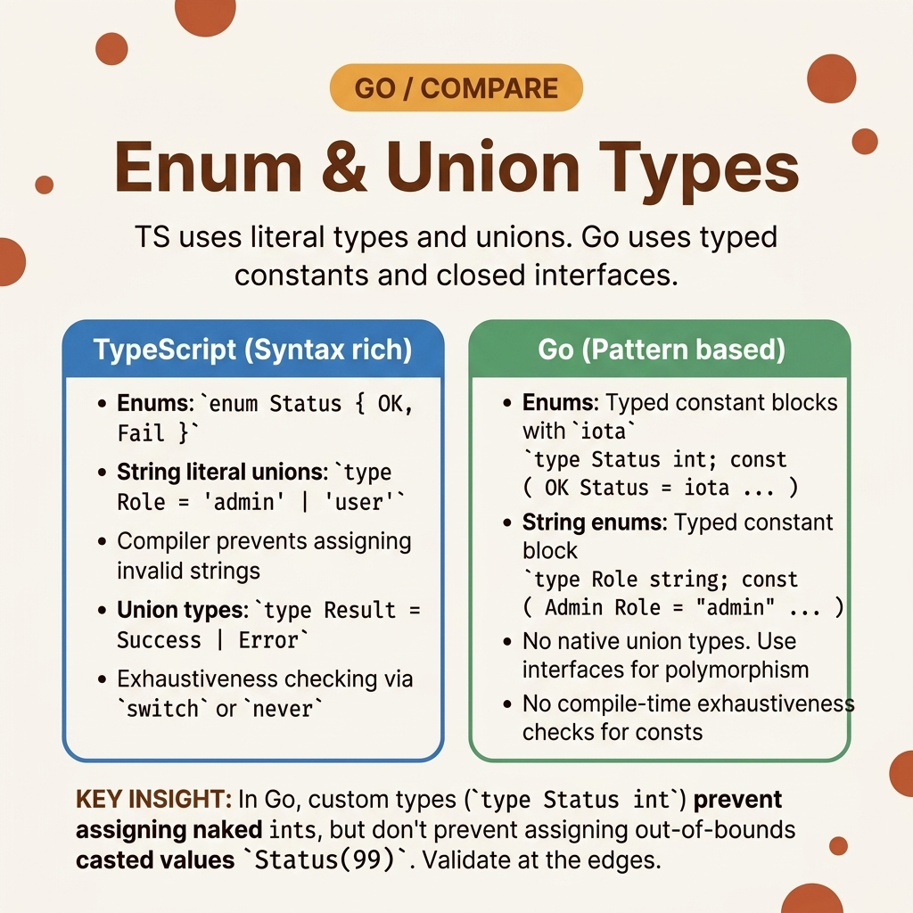
| # | Khiếm khuyết | Sửa chữa |
|---|---|---|
| 1 | Tách các khối const và mong đợi iota tiếp tục | Giữ tất cả các giá trị trong một khối const duy nhất. iota đặt lại trong mỗi khối mới. |
| 2 | Sử dụng số 0 làm giá trị enum hợp lệ | Bỏ qua số 0 bằng _ = iota để các biến chưa được khởi tạo không vô tình khớp với trạng thái hợp lệ. |
| 3 | Thiếu default trong loại switch | Luôn thêm trường hợp default . Nó nắm bắt các biến thể mới được thêm vào trong quá trình tái cấu trúc. |
| Tài nguyên | Liên kết |
|---|---|
| Iota Thông số kỹ thuật | [go.dev/ref/spec#Iota](https://go.dev/ref/spec#Iota) |
Công cụ stringer | [pkg.go.dev/golang.org/x/tools/cmd/stringer](https://pkg.go.dev/golang.org/x/tools/cmd/stringer) |
| Gia hạn | Khi nào | Cơ sở lý luận |
|---|---|---|
| [Data Conversion](./01-data-conversion.md) | Khi phân tích các giá trị enum từ tải trọng đến | Xác thực chuyển đổi chuỗi thành enum ở ranh giới |
| [Lỗi biên dịch / Runtime Handling](./07-Lỗi biên dịch / Runtime-handling.md) | Khi lỗi xác thực cần phản hồi lỗi có cấu trúc | Kết hợp xác thực enum với lỗi trọng điểm |
Điều hướng: [← Date/Time](./05-date-time.md) · [→ Lỗi biên dịch / Runtime Handling](./07-Lỗi biên dịch / Runtime-handling.md)
Một kỹ sư giao diện người dùng thay thế throw new Lỗi biên dịch / Runtime("invalid") bằng panic("invalid") và gói người gọi trong defer/recover . Mã hoạt động trong các thử nghiệm. Trong quá trình sản xuất, panic loại bỏ toàn bộ goroutine stack - bao gồm cả việc chia sẻ công việc đồng thời không liên quan goroutine . Go xử lý lỗi dưới dạng giá trị chứ không phải ngoại lệ. Các hàm trả về bộ dữ liệu (T, Lỗi biên dịch / Runtime) . Người gọi kiểm tra err != nil ngay lập tức — không tháo stack , không có khối bắt ở xa. panic được dành riêng cho các lỗi không thể khôi phục ( nil con trỏ , trạng thái không thể khắc phục) sẽ làm hỏng chương trình. Lỗi thường xuyên (không tìm thấy tệp, đầu vào không hợp lệ, thời gian chờ mạng) trả về lỗi.
1.1 Các kiểu bất biến và lỗi
| Ranh giới | Trách nhiệm cốt lõi |
|---|---|
(T, Lỗi biên dịch / Runtime) trả về | Mọi hàm có thể sai đều trả về một lỗi. Người gọi kiểm tra err != nil trước khi sử dụng T . |
errors.Is / errors.As | Is khớp với các giá trị trọng điểm thông qua các chuỗi được bao bọc. As trích xuất các lỗi đánh máy để truy cập trường. |
| Quy tắc | Cơ sở lý luận |
|---|---|
Không bao giờ sử dụng panic cho luồng điều khiển | panic giải phóng toàn bộ goroutine stack . Chỉ sử dụng nó cho các lỗi lập trình viên, không sử dụng lỗi runtime . |
Gói bằng %w , không phải %v | fmt.Errorf("context: %w", err) bảo tồn chuỗi lỗi. %v chuyển đổi thành một chuỗi — errors.Is ngừng hoạt động. |
1.2 Chuỗi thất bại
- Chuỗi bị mất: Bạn gói một lỗi bằng
fmt.Errorf("failed: %v", err). Động từ%vđịnh dạng lỗi dưới dạng chuỗi và loại bỏ lỗi gốc. Hạ lưuerrors.Is(err, ErrNotFound)trả vềfalsevì chuỗi bị hỏng. - Bộ dữ liệu bị bỏ qua: Bạn viết
result, _ := Execute(). NếuExecutetrả về lỗi,resultlà giá trị bằng 0. Bạn chèn một bản ghi trống vào database mà không để ý.
Mã nguồn & Các ví dụ minh họa
errors.Is .
Cách tiếp cận: Xác định trọng điểm bằng errors.New . Gói bằng fmt.Errorf("context: %w", err) để thêm ngữ cảnh trong khi bảo toàn chuỗi.
Độ phức tạp: O(1) mỗi gói/kiểm tra.> Takeaway: %w là động từ format duy nhất giữ lại chuỗi lỗi. Thay thế mọi %v trong Lỗi biên dịch / Runtime wrapping bằng %w .---
// sentinel_wrapping.go
package errors
import (
"errors"
"fmt"
)
var (
ErrNotFound = errors.New("record missing")
ErrValidation = errors.New("invalid payload")
)
func QueryDatabase(id int) (string, error) {
if id <= 0 {
// ✅ %w preserves the sentinel — errors.Is(err, ErrValidation) works
return "", fmt.Errorf("query validation failure id=%d: %w", id, ErrValidation)
}
return "Record_Hash", nil
}
func ExecuteLookup() {
_, err := QueryDatabase(-5)
if err != nil {
// TS: if (err instanceof ValidationError)
if errors.Is(err, ErrValidation) {
fmt.Println("Blocked invalid query")
return
}
fmt.Println("Unhandled error:", err)
}
}Lỗi biên dịch / Runtime và Unwrap() các giao diện (interface) trên struct . Sử dụng errors.As để trích xuất các trường.
Độ phức tạp: O(1) trên khẳng định kiểu (type assertion) .> Takeaway: errors.As duyệt chuỗi lỗi và trích xuất kết quả khớp đầu tiên. Unwrap() cho phép việc truyền tải này. Nếu không có Unwrap , các lỗi được gói sẽ mờ đối với errors.As .---
// custom_domains.go
package errors
import (
"errors"
"fmt"
)
type DomainError struct {
Code int
Message string
Err error
}
func (e *DomainError) Error() string {
if e.Err != nil {
return fmt.Sprintf("[%d] %s: %v", e.Code, e.Message, e.Err)
}
return fmt.Sprintf("[%d] %s", e.Code, e.Message)
}
func (e *DomainError) Unwrap() error {
return e.Err
}
func ExtractDomain(err error) {
var target *DomainError
// TS: if (e instanceof DomainError)
if errors.As(err, &target) {
fmt.Printf("API Code: %d\n", target.Code)
return
}
}errors.Join ( Go 1.20+). Mỗi lỗi riêng lẻ vẫn có thể khớp với errors.Is .
Độ phức tạp: O(N) — một lỗi cho mỗi quy tắc xác thực.> Takeaway: errors.Join giữ nguyên từng lỗi riêng lẻ — errors.Is(joined, ErrSpecific) hoạt động nếu lỗi phụ any khớp. Đây là Go tương đương với việc thu thập các lỗi xác thực trong array .// aggregate_joins.go
package errors
import (
"errors"
"fmt"
)
func ValidateFields(name string, age int) error {
var aggregated []error
if name == "" {
aggregated = append(aggregated, errors.New("name is required"))
}
if age < 0 || age > 150 {
aggregated = append(aggregated, fmt.Errorf("invalid age: %d", age))
}
if len(aggregated) > 0 {
// ✅ Join combines multiple errors into one; errors.Is checks each
return errors.Join(aggregated...)
}
return nil
}
func VerifyAggregates() {
err := ValidateFields("", -5)
if err != nil {
fmt.Println("Validation errors:", err)
}
}Sơ đồ trực quan & Luồng hoạt động (Visual Support)
JavaScript bắt lỗi từ xa. Go bắt chúng tại nguồn. Hình ảnh so sánh cả hai luồng. Hình: JS try/catch kết thúc nhiều lệnh gọi. Go kiểm tra err != nil sau mỗi cuộc gọi. Mẫu Go dài dòng nhưng xác định chính xác thao tác nào không thành công.
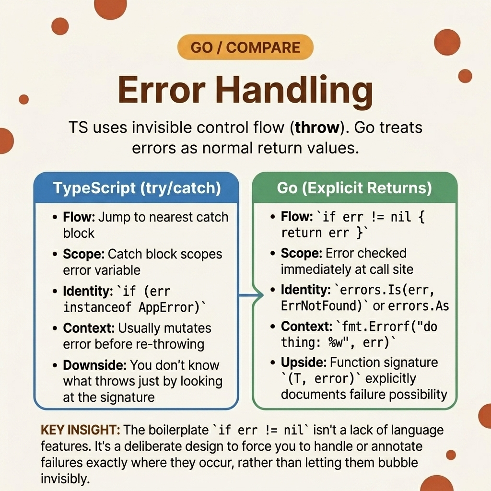
| # | Khiếm khuyết | Sửa chữa |
|---|---|---|
| 1 | Chuyển sai loại con trỏ sang errors.As | Vượt qua &target trong đó target là một *DomainError . Cần có con trỏ kép. |
| 2 | Sử dụng recover để xử lý lỗi thông thường | recover chỉ dành cho sự hoảng loạn. Sử dụng if err != nil cho các lỗi thông thường. |
| 3 | Trả về lỗi thô không có ngữ cảnh | Bao bọc bằng fmt.Errorf("functionName: %w", err) để thêm ngữ cảnh trang web cuộc gọi. |
| Tài nguyên | Liên kết |
|---|---|
errors package | [pkg.go.dev/errors](https://pkg.go.dev/errors) |
| Hiệu lực Go : Lỗi | [go.dev/doc/effectivego#errors](https://go.dev/doc/effectivego#errors) |
| Gia hạn | Khi nào | Cơ sở lý luận |
|---|---|---|
| [Custom Lỗi biên dịch / Runtime Wrappers](../errors/01-wrapping-custom.md) | Khi xây dựng hệ thống phân cấp lỗi microservice nhiều lớp | Các loại lỗi dành riêng cho tên miền với mã HTTP và siêu dữ liệu |
| [Defer/Panic/Recover](../basics/03-defer-panic-recover.md) | Khi xử lý các trạng thái thực sự không thể phục hồi | Các mẫu defer / recover cho panic -safe các goroutine |
Điều hướng: [← Enum Types](./06-enum-union-types.md) · [→ Regex & Templates](./08-regex-templates.md)
A backend developer processes thousands of audit log lines, extracting timestamps and Lỗi biên dịch / Runtime codes. They call regexp.Compile(\d+) inside the loop — one compilation per line. Go builds a finite automaton from the pattern string on every call. At 10K lines/second, the CPU spends more time compiling patterns than matching text.
JavaScript's VM caches RegExp objects transparently. Go exposes the compilation cost directly. The giải pháp khắc phục: declare var pattern = regexp.MustCompile(...) at package phạm vi áp dụng. The pattern compiles once at init time and is safe for đồng thời use across các goroutine.
Go uses the RE2 engine, which guarantees O(N) matching time — no catastrophic backtracking. The trade-off: RE2 does not support lookaheads ((?=...)), lookbehinds ((?<=...)), or backreferences (\1). If your JavaScript regex uses these, you must refactor it into multiple simpler patterns.
1.1 Invariants & Failure Modes
| Boundary | Core Responsibility |
|---|---|
regexp.MustCompile | Compiles at package init, panics on invalid patterns. Use for known-good patterns. Thread-safe. |
| RE2 Cú pháp khai báo | Linear-time guarantee. No lookaheads, lookbehinds, or backreferences. |
| Rule | Rationale |
|---|---|
Use Compile for user input | MustCompile panics on invalid patterns. User-provided patterns must use Compile with Lỗi biên dịch / Runtime handling. |
Use html/template for HTML | text/template does not escape output. Rendering user input produces XSS vulnerabilities. |
1.2 Failure Cascades
- The regex loop collapse: Compiling a pattern inside a hot loop allocates a new automaton per iteration. Under load, GC pauses spike and the service becomes unresponsive.
- The lookahead panic: You port a JavaScript regex with
(?=...)to Go.MustCompilepanics at startup because RE2 does not support lookaheads. The service never starts.
Mã nguồn & Các ví dụ minh họa
MustCompile. Call methods on the cached instance.
Complexity: O(1) compile, O(N) per match/replace.MustCompile panics on invalid patterns, which is correct for hardcoded patterns (you want to fail at startup, not at runtime).---
// core_regex_compilation.go
package parsers
import (
"fmt"
"regexp"
)
// ✅ Compiled once at package init — safe for concurrent use
var digitsPattern = regexp.MustCompile(`\d+`)
func ExtractDigits(input string) {
// TS: input.match(/\d+/g)
matches := digitsPattern.FindAllString(input, -1)
fmt.Println("Count:", len(matches))
fmt.Println("Values:", matches)
}
func MaskCharacters(input string) string {
// TS: input.replace(/\d+/g, "***")
return digitsPattern.ReplaceAllString(input, "***")
}(?P...) Cú pháp khai báo (Lưu ý quan trọng: Go uses P prefix, unlike JavaScript's (?...) ). SubexpNames() returns group names for mapping.
Complexity: O(N) per match.(?P...) — the P prefix is required. JavaScript uses (?...) without the P. Missing the P produces a lỗi biên dịch.---
// grouped_metadata.go
package parsers
import (
"regexp"
)
var accessLogPattern = regexp.MustCompile(`(?P<date>\d{4}-\d{2}-\d{2})\s+\[(?P<level>\w+)\]\s+(?P<message>.+)`)
func ExtractStructuredLogs(logString string) map[string]string {
match := accessLogPattern.FindStringSubmatch(logString)
if match == nil {
return nil
}
result := make(map[string]string)
// SubexpNames()[0] is the full match (empty name) — skip it
for i, name := range accessLogPattern.SubexpNames() {
if i > 0 && name != "" && i < len(match) {
result[name] = match[i]
}
}
return result
}text/template with template.Must for compile-time validation. Execute renders the template into a strings.Builder.
Complexity: O(N) per render.text/template for logs, emails, and internal output. Use html/template for anything rendered in a browser — it auto-escapes HTML entities to prevent XSS.// structural_templates.go
package parsers
import (
"fmt"
"strings"
"text/template"
)
type Notification struct {
User string
Role string
Flags []string
}
// ✅ template.Must panics on parse errors — fail at init, not at runtime
var alertTemplate = template.Must(template.New("alert").Parse(`
User: {{.User}}
Role: {{.Role}}
Flags: {{range .Flags}}[{{.}}] {{end}}
`))
func GenerateWarning(alert Notification) {
var buffer strings.Builder
// Execute renders the template with the provided data
alertTemplate.Execute(&buffer, alert)
fmt.Println(buffer.String())
}Sơ đồ trực quan & Luồng hoạt động (Visual Support)
JavaScript regex methods and Go equivalents map differently. The visual shows the translation.
Figure: JS regex methods (match, replace, test) mapped to Go regexp receivers (FindAllString, ReplaceAllString, MatchString). All Go methods require a pre-compiled Regexp.*
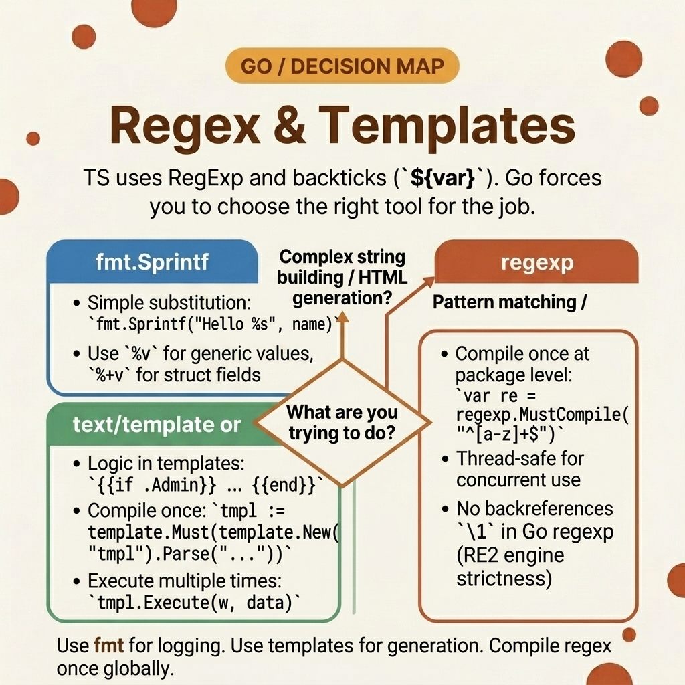
| # | Sai sót / lỗi cạm bẫy | Giải pháp khắc phục |
|---|---|---|
| 1 | Using MustCompile with user-provided patterns | MustCompile panics on invalid input. Use regexp.Compile(input) and handle the Lỗi biên dịch / Runtime. |
| 2 | Porting JavaScript regex with lookaheads | Go's RE2 engine does not support (?=...) or (?<=...). Split into multiple simpler patterns. |
| 3 | Using text/template for HTML output | text/template does not escape HTML. Use html/template to prevent XSS. |
| Tài liệu tham khảo | Liên kết truy cập |
|---|---|
regexp package | [pkg.go.dev/regexp](https://pkg.go.dev/regexp) |
| RE2 Cú pháp khai báo reference | [github.com/google/re2/wiki/Cú pháp khai báo](https://github.com/google/re2/wiki/Cú pháp khai báo) |
| Extension | Bối cảnh áp dụng | Rationale |
|---|---|---|
| [Các goroutine & Các kênh (channel)](../đồng thời (concurrency)/01-các goroutine-and-các kênh (channel).md) | Bối cảnh áp dụng processing logs concurrently | Compiled regexes are thread-safe — share across các goroutine |
| [Data Conversion](./01-data-conversion.md) | Bối cảnh áp dụng replacing fixed strings without regex | strings.Replacer is faster than regex for literal replacements |
Navigation: [← Lỗi biên dịch / Runtime Handling](./07-Lỗi biên dịch / Runtime-handling.md) · [→ Set & Đồng thời Map](./09-set-đồng thời-map.md)
Năm các goroutine chèn ID người dùng vào map[string]bool được chia sẻ cùng một lúc. Go runtime phát hiện quá trình ghi đồng thời và gặp sự cố với fatal Lỗi biên dịch / Runtime: đồng thời map writes — không phục hồi, không tắt máy dễ dàng. Quá trình này bị giết. Go maps không an toàn thread -. Không giống như JavaScript (chạy trên một thread ), Go truy cập thường xuyên maps từ nhiều các goroutine . Có hai lựa chọn:
1. sync.RWMutex — bọc một map thông thường bằng các khóa đọc/ghi. An toàn loại đầy đủ với generics .
2. sync.Map — tích hợp đồng thời map , nhưng sử dụng any cho các khóa và giá trị (không generics , yêu cầu xác nhận loại).
Đối với các bộ, Go không có loại Set . Sử dụng map[T]struct{} — struct trống chiếm 0 byte, làm cho nó trở thành biểu diễn tập hợp hiệu quả về bộ nhớ nhất.
1.1 Các kiểu bất biến và lỗi
| Ranh giới | Trách nhiệm cốt lõi |
|---|---|
| Bộ phân bổ bằng 0 | map[T]struct{} sử dụng 0 byte cho mỗi giá trị. map[T]bool lãng phí 1 byte cho mỗi mục nhập. |
| Thread -truy cập an toàn | Quyền truy cập map không được bảo vệ từ nhiều các goroutine là một sự cố nghiêm trọng, không phải là một cuộc chạy đua dữ liệu. |
| Quy tắc | Cơ sở lý luận |
|---|---|
| Không bao giờ chia sẻ thô maps trên các goroutine | Ngay cả việc đọc đồng thời với một lần ghi cũng làm hỏng quá trình. Sử dụng trình bao bọc mutex hoặc sync.Map . |
Thích trình bao bọc generic hơn sync.Map | sync.Map lưu trữ any - mọi quyền truy cập đều cần có khẳng định kiểu (type assertion) . Trình bao bọc Generic mutex bảo đảm an toàn cho loại. |
1.2 Chuỗi thất bại
- Thuế bộ nhớ boolean:
map[string]boolvới 1 triệu mục nhập sẽ lãng phí 1 MB đối với các giá trị boolean.map[string]struct{}sử dụng chính xác byte bằng 0 cho các giá trị - chỉ các khóa mới tiêu tốn bộ nhớ. - Bẫy
sync.Mapchưa được gõ:sync.Map.Loadtrả vềany. Việc quên khẳng định kiểu (type assertion) âm thầm truyền nhầm loại xuống dòng gây hoang mang xa nguồn.
Mã nguồn & Các ví dụ minh họa
Set[T] an toàn với Add , Has , Delete và Intersection sử dụng các giá trị phân bổ bằng 0.
Phương pháp tiếp cận: Xác định Set[T comparable] làm bí danh loại cho map[T]struct{} .
Độ phức tạp: O(1) mỗi lần thêm/có/xóa; O(min(N,M)) cho giao lộ.> Takeaway: struct{} là giá trị thành ngữ Go "Tôi chỉ quan tâm đến khóa". Nó chiếm 0 byte - unsafe.Sizeof(struct{}{}) trả về 0.---
// generic_sets.go
package collections
type Set[T comparable] map[T]struct{}
func NewSet[T comparable](items ...T) Set[T] {
target := make(Set[T], len(items))
for _, element := range items {
target[element] = struct{}{} // zero bytes per entry
}
return target
}
func (s Set[T]) Add(item T) { s[item] = struct{}{} }
func (s Set[T]) Has(item T) bool { _, exists := s[item]; return exists }
func (s Set[T]) Delete(item T) { delete(s, item) }
func (s Set[T]) Intersection(other Set[T]) Set[T] {
result := NewSet[T]()
for element := range s {
if other.Has(element) {
result.Add(element)
}
}
return result
}RLock để đọc (cho phép nhiều người đọc đồng thời), Lock để ghi (độc quyền).
Độ phức tạp: O(1) cho mỗi thao tác; khóa thang đo tranh chấp với số lượng goroutine .> Takeaway: RWMutex cho phép nhiều người đọc đồng thời — chỉ có thao tác ghi là độc quyền. Điều này quan trọng đối với khối lượng công việc đọc nhiều (bộ đệm cấu hình, cửa hàng session ). Đối với khối lượng công việc ghi nhiều, mutex sẽ trở thành nút thắt cổ chai.---
// secure_maps.go
package collections
import "sync"
type SafeMap[K comparable, V any] struct {
mu sync.RWMutex
store map[K]V
}
func NewSafeMap[K comparable, V any]() *SafeMap[K, V] {
return &SafeMap[K, V]{store: make(map[K]V)}
}
func (sm *SafeMap[K, V]) Set(key K, value V) {
sm.mu.Lock()
defer sm.mu.Unlock()
sm.store[key] = value
}
func (sm *SafeMap[K, V]) Get(key K) (V, bool) {
sm.mu.RLock()
defer sm.mu.RUnlock()
val, ok := sm.store[key]
return val, ok
}sync.Map được tối ưu hóa cho hai mẫu: (1) các khóa được viết một lần và đọc nhiều lần, (2) các bộ khóa rời rạc trên các goroutine . Nó sử dụng any cho cả khóa và giá trị.
Độ phức tạp: O(1) được khấu hao cho mỗi hoạt động.> Takeaway: sync.Map chậm hơn so với mutex -wrapped map để sử dụng thông thường. Nó tỏa sáng theo hai kiểu cụ thể: phím ổn định (đọc nặng) và phím rời (không tranh chấp). Đối với mọi thứ khác, hãy sử dụng generic SafeMap từ Ví dụ 2.// standard_sync_map.go
package collections
import (
"fmt"
"sync"
)
func ExecuteSyncMap() {
var sharedMap sync.Map
// Store accepts any key and any value — no type safety
sharedMap.Store("TargetHost", "127.0.0.1")
sharedMap.Store("ActivePort", 443)
payload, exists := sharedMap.Load("TargetHost")
fmt.Printf("Value: %v (Found: %v)\n", payload, exists)
// LoadOrStore returns existing value if key exists, stores otherwise
current, loaded := sharedMap.LoadOrStore("TargetHost", "192.168.1.1")
fmt.Printf("Value: %v (Was cached: %v)\n", current, loaded)
}Sơ đồ trực quan & Luồng hoạt động (Visual Support)
Bộ JavaScript và bộ dựa trên Go map - khác nhau về bề mặt API và độ an toàn thread . Hình ảnh maps bản dịch. Hình: Các phương thức JS Set được ánh xạ tới các hoạt động Go map[T]struct{} . Go yêu cầu trình bao bọc mutex rõ ràng để truy cập đồng thời.
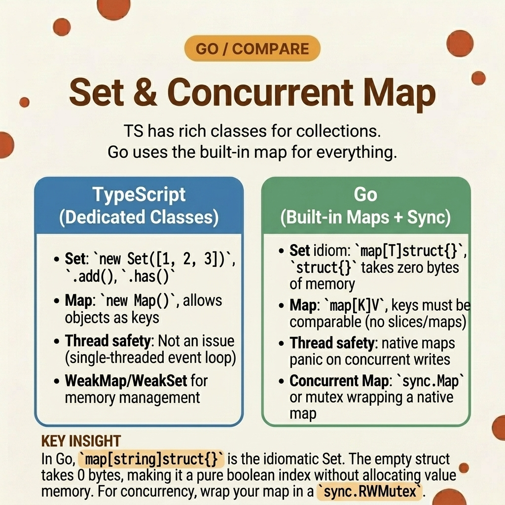
| # | Khiếm khuyết | Sửa chữa |
|---|---|---|
| 1 | Chia sẻ thô map trên các goroutine | Gói bằng sync.RWMutex hoặc sử dụng sync.Map . Việc ghi đồng thời rất nguy hiểm - không phải là một cuộc chạy đua dữ liệu, mà là một sự cố. |
| 2 | Sử dụng sync.Map cho mã an toàn loại | sync.Map lưu trữ any . Sử dụng generic mutex -wrapped map để đảm bảo an toàn về loại. |
| 3 | Sử dụng map[T]bool cho các bộ | Sử dụng map[T]struct{} - 0 byte cho mỗi giá trị thay vì 1 byte cho mỗi boolean. |
| Tài nguyên | Liên kết |
|---|---|
sync.Map tài liệu | [pkg.go.dev/sync#Map](https://pkg.go.dev/sync#Map) |
sync.RWMutex tài liệu | [pkg.go.dev/sync#RWMutex](https://pkg.go.dev/sync#RWMutex) |
| Gia hạn | Khi nào | Cơ sở lý luận |
|---|---|---|
| [Các goroutine & Các kênh (channel)](../đồng thời (concurrency)/01-các goroutine-and-các kênh (channel).md) | Khi thiết kế đường dẫn dữ liệu đồng thời | Hiểu vòng đời goroutine để truy cập map an toàn |
| [Map Utilities](./03-object-map-utils.md) | Khi chuyển đổi dữ liệu map (khóa, hợp nhất, chọn) | Generic các hàm tiện ích cho các hoạt động đơn luồng map |
Điều hướng: [← Regex & Templates](./08-regex-templates.md) · [→ Iterator Patterns](./10-iterator.md)
Nhà phát triển chuyển con trỏ database được phân trang từ for await (const page of fetchPages()) generator của JavaScript. Họ triển khai nó bằng cách sử dụng Go các kênh (channel) - a goroutine gửi các trang tới a kênh (channel) , người tiêu dùng đọc với for page := range ch .
Máy khách ngắt kết nối giữa vòng lặp. Không ai đọc từ kênh (channel) nữa. [[E42]]] chặn vĩnh viễn ch <- page - nó làm rò rỉ bộ nhớ trong suốt thời gian tồn tại của quá trình. Go 1.23+ giải quyết vấn đề này với iter.Seq[V] : a closure -based iterator chạy đồng bộ trong goroutine của người gọi. Khi người tiêu dùng phá vỡ, iterator sẽ dừng ngay lập tức - không có goroutine bị rò rỉ.
1.1 Các kiểu bất biến và lỗi
| Ranh giới | Trách nhiệm cốt lõi |
|---|---|
iter.Seq[V] | Hàm func(yield func(V) bool) gọi yield cho mỗi phần tử. Chạy trong goroutine của người gọi. |
| Đảm bảo không rò rỉ | Không có các goroutine được sinh ra. Khi người tiêu dùng phá vỡ, yield trả về false và iterator thoát ra. |
| Quy tắc | Cơ sở lý luận |
|---|---|
Luôn kiểm tra !yield(v) | Nếu người tiêu dùng thoát ra khỏi vòng lặp for range , yield trả về false . Bỏ qua nó sẽ tạo ra một vòng lặp vô hạn. |
Thích iter.Seq hơn các kênh (channel) | Các trình vòng lặp dựa trên Kênh (channel) yêu cầu quản lý vòng đời goroutine . iter.Seq không có vòng đời - đó là lệnh gọi hàm. |
1.2 Chuỗi thất bại
- Vòng lặp zombie: iterator của bạn bỏ qua giá trị trả về
yield. Người tiêu dùng gọibreaktrong vòng lặpfor range, nhưng iterator tiếp tục tạo ra các giá trị - mức sử dụng CPU vô hạn cho đến khi quá trình bị hủy. - Bẫy kênh (channel) : Bạn sử dụng goroutine và kênh (channel) để triển khai phép lặp lười biếng. Người tiêu dùng từ bỏ kênh (channel) . Các khối goroutine được gửi vĩnh viễn - một khối goroutine bị rò rỉ cho mỗi lần lặp bị bỏ rơi.
Mã nguồn & Các ví dụ minh họa
iter.Seq[int] closure gọi yield cho mỗi giá trị.
Độ phức tạp: Mang lại phần tử O(N).> Takeaway: if !yield(v) { return } là đường quan trọng. Không có nó, break trong vòng lặp của người tiêu dùng không có tác dụng gì - iterator vẫn tiếp tục chạy. Đây là Go tương đương với việc kiểm tra xem người gọi của generator có còn nghe hay không.---
// basic_sequences.go
package iterators
import (
"fmt"
"iter"
)
// TS: function* range(start, end) { for (let i = start; i < end; i++) yield i }
func RangeBounds(start, end int) iter.Seq[int] {
return func(yield func(int) bool) {
for index := start; index < end; index++ {
// ✅ Check yield return: false means the consumer called break
if !yield(index) {
return
}
}
}
}
func ExecuteGenerators() {
// Works directly with for-range (Go 1.23+)
for value := range RangeBounds(1, 4) {
fmt.Printf("Value: %d\n", value)
}
}iter.Seq2[int, T] mang lại hai giá trị cho mỗi lần lặp — chỉ mục và phần tử.
Độ phức tạp: Mang lại phần tử O(N).> Takeaway: iter.Seq2[K, V] hoạt động với for k, v := range ... — phá hủy hai biến. Sử dụng nó cho any iterator tạo ra các cặp (chỉ mục+giá trị, khóa+giá trị, lỗi+kết quả).---
// coordinate_sequences.go
package iterators
import (
"fmt"
"iter"
)
// TS: Array.prototype.entries() → [index, value] pairs
func Enumerate[T any](collection []T) iter.Seq2[int, T] {
return func(yield func(int, T) bool) {
for index, element := range collection {
if !yield(index, element) {
return
}
}
}
}
func MapStructures() {
payload := []string{"Primary", "Secondary", "Tertiary"}
for index, value := range Enumerate(payload) {
fmt.Printf("Index [%d]: %s\n", index, value)
}
}iter.Seq — mỗi hàm bao bọc iterator trước đó và áp dụng một phép biến đổi. Không có slices trung gian được phân bổ.
Độ phức tạp: Tổng O(N) — mỗi phần tử được đánh giá một lần trong chuỗi.> Takeaway: Đường dẫn Iterator lười biếng — FilterSeq không xử lý các phần tử any cho đến khi người tiêu dùng bắt đầu lặp lại. Collect cụ thể hóa chuỗi thành slice . Đây là sự phân chia lười biếng/háo hức tương tự như các phương thức RxJS có thể quan sát được và array .// pipeline_streams.go
package iterators
import (
"iter"
)
func FilterSeq[T any](stream iter.Seq[T], predicate func(T) bool) iter.Seq[T] {
return func(yield func(T) bool) {
for element := range stream {
if predicate(element) {
// ✅ Propagate the consumer's break signal through the chain
if !yield(element) {
return
}
}
}
}
}
func Collect[T any](stream iter.Seq[T]) []T {
var result []T
for element := range stream {
result = append(result, element)
}
return result
}Sơ đồ trực quan & Luồng hoạt động (Visual Support)
JavaScript generators và Go iter.Seq đạt được cùng một mục tiêu (lặp lại lười biếng) thông qua các cơ chế khác nhau. Hình: JS generators sử dụng yield để tạm dừng thực thi. Go iter.Seq sử dụng closure gọi yield(v) - khi yield trả về false , iterator thoát ra. Không liên quan đến các goroutine .
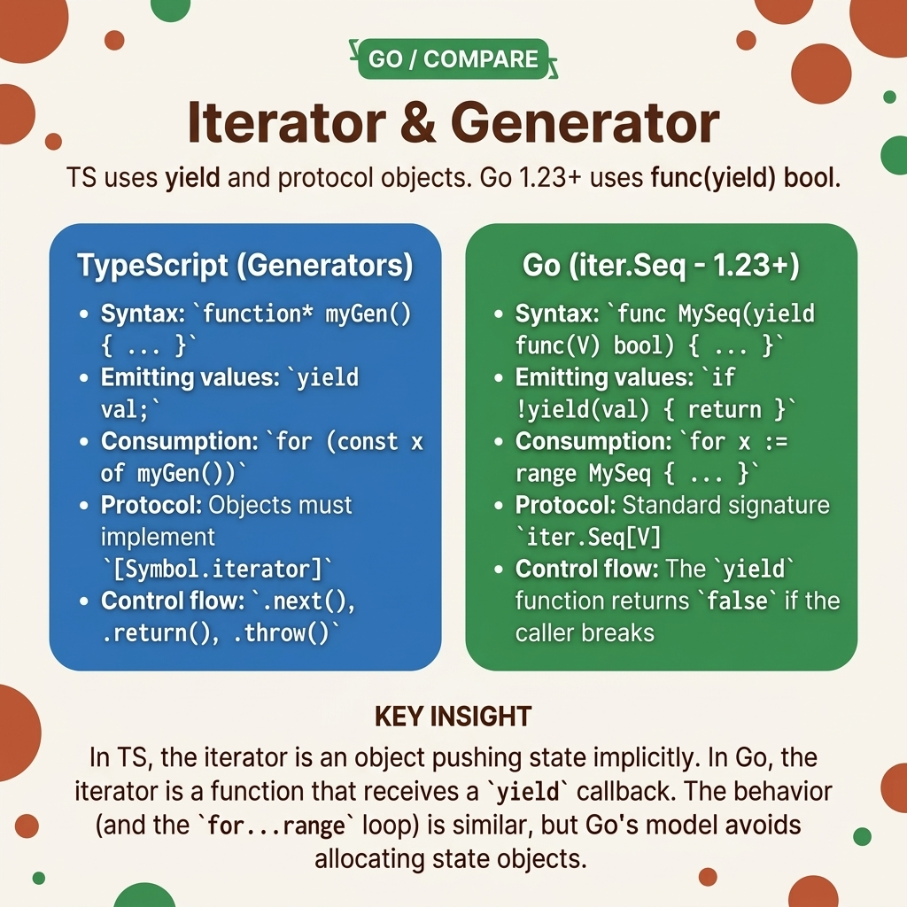
| # | Khiếm khuyết | Sửa chữa |
|---|---|---|
| 1 | Sử dụng các kênh (channel) để triển khai phép lặp lười biếng | Thay thế bằng iter.Seq - không các goroutine , không có vòng đời kênh (channel) , không rò rỉ |
| 2 | Bỏ qua giá trị trả về yield | Luôn kiểm tra if !yield(v) { return } — không có nó, break không có tác dụng |
| 3 | Gọi Collect trên các vòng lặp vô hạn | Thêm trình bao bọc Take(n) dừng sau N phần tử trước khi thu thập |
| Tài nguyên | Liên kết |
|---|---|
iter package | [pkg.go.dev/iter](https://pkg.go.dev/iter) |
| Blog hàm phạm vi | [go.dev/blog/range-functions](https://go.dev/blog/range-functions) |
| Gia hạn | Khi nào | Cơ sở lý luận |
|---|---|---|
| [Array Pipelines](./02-array-pipeline.md) | Khi đầu vào vừa với bộ nhớ | Háo hức Map / Filter / Reduce trên bê tông slices |
| [Optional Types](./11-optional-nullable.md) | Khi các trình vòng lặp có thể tạo ra các giá trị vắng mặt | Optional[T] bao bọc các phần tử nullable trong chuỗi iterator |
Điều hướng: [← Set & Đồng thời Map](./09-set-đồng thời-map.md) · [→ Optional & Nullable](./11-optional-nullable.md)
API của bạn chấp nhận các yêu cầu PATCH với một phần JSON: {"age": 0} . Trường struct Age int nhận giá trị 0 0 — nhưng nó được đặt rõ ràng thành 0 hay không có trong yêu cầu? Với int , bạn không thể biết được. Cả "không được gửi" và "được gửi dưới dạng 0" đều tạo ra cùng một giá trị.
Cách khắc phục: sử dụng *int . Khi trường JSON không có, con trỏ là nil . Khi trường có giá trị 0, con trỏ trỏ đến 0 . con trỏ phân biệt sự vắng mặt với số không.
Mẫu này áp dụng cho tất cả các điểm cuối PATCH, trường cấu hình tùy chọn và cột database có thể rỗng: sử dụng các con trỏ khi "không được đặt" và "không" có nghĩa khác nhau.
1.1 Các kiểu bất biến và lỗi
| Ranh giới | Trách nhiệm cốt lõi |
|---|---|
Các con trỏ T | nil có nghĩa là "chưa được đặt." Non- nil có nghĩa là "được đặt thành giá trị này." Giá trị 0 không còn xung đột với sự vắng mặt. |
| Nil vô hiệu | Truy cập ptr khi ptr == nil hoảng sợ. Luôn kiểm tra ptr != nil trước khi hội thảo. |
| Quy tắc | Cơ sở lý luận |
|---|---|
| Luôn luôn nil -kiểm tra các con trỏ | *ptr trên nil con trỏ là một panic nghiêm trọng — không phải là một lỗi có thể phục hồi được. |
Sử dụng sql.NullString cho các cột DB | Trình điều khiển Database sử dụng NullString / NullInt64 thay vì các con trỏ cho các cột có thể rỗng. |
1.2 Chuỗi thất bại
- Xóa giá trị bằng 0: Yêu cầu PATCH gửi
{"priority": 0}. Trình xử lý sử dụngPriority int, xem0và bỏ qua cập nhật ("không có nghĩa là không thay đổi"). Số 0 rõ ràng của người dùng bị âm thầm bỏ qua. - Xâu chuỗi panic : Bạn chuyển
user?.address?.citysang Go dưới dạnguser.Address.City. NếuAddresslà nil , quyền truy cập sẽ hoảng loạn. Go không có chuỗi tùy chọn - bạn phải kiểm tra từng con trỏ .
Mã nguồn & Các ví dụ minh họa
ptr != nil trước khi hội thảo. Sử dụng OrDefault cho các giá trị dự phòng.
Độ phức tạp: O(1) mỗi lần kiểm tra.> Takeaway: Go không có toán tử ?? . OrDefault là tương đương với generic . Đối với phiên bản trước 1.26 Go , hãy sử dụng trình trợ giúp Ptr [T](v T) *T để tạo các con trỏ thành chữ — Ptr("Active") thay vì khai báo một biến và lấy địa chỉ của nó.---
// basic_pointers.go
package pointers
import "fmt"
type Customer struct {
Name string
}
// TS: function connect(customer?: Customer)
func ConnectSession(customer *Customer) string {
// TS: customer?.name ?? "Anonymous"
if customer == nil {
return "Anonymous"
}
return "Connected: " + customer.Name
}
func OrDefault[T any](ptr *T, fallback T) T {
if ptr != nil {
return *ptr
}
return fallback
}
func ExecuteDefaults() {
var inputPointer *string
fmt.Println("Empty:", OrDefault(inputPointer, "Offline"))
// Go 1.26: new(expr) creates a pointer to a literal
inputPointer = new("Active")
fmt.Println("Active:", OrDefault(inputPointer, "Offline"))
}string và int trong bản vá struct . nil có nghĩa là "không được gửi." Non- nil có nghĩa là "cập nhật giá trị này."
Độ phức tạp: O(1) mỗi trường.> Takeaway: json:"priority,omitempty" với int có nghĩa là: nếu priority không có trong JSON → nil . Nếu priority là 0 trong JSON → int trỏ đến 0 . con trỏ duy trì ý định của người gọi.---
// partial_structs.go
package pointers
import "encoding/json"
type Schema struct {
Category string `json:"category"`
Priority int `json:"priority"`
}
// Partial<Schema> equivalent: pointer fields distinguish absence from zero
type PatchPayload struct {
Category *string `json:"category,omitempty"`
Priority *int `json:"priority,omitempty"`
}
func (s *Schema) ApplyPatch(payload PatchPayload) {
if payload.Category != nil {
s.Category = *payload.Category
}
if payload.Priority != nil {
s.Priority = *payload.Priority
}
}
func DeserializePatch(data []byte) (*Schema, error) {
var payload PatchPayload
if err := json.Unmarshal(data, &payload); err != nil {
return nil, err
}
base := Schema{Category: "General", Priority: 5}
base.ApplyPatch(payload)
return &base, nil
}Optional[T] ngăn chặn tình trạng vô hiệu hóa nil thông qua một API an toàn.
Phương pháp tiếp cận: Bao bọc giá trị và một boolean present . UnwrapOr cung cấp một dự phòng. Map biến đổi giá trị nếu có.
Độ phức tạp: O(1) cho mỗi thao tác.> Takeaway: Optional[T] an toàn hơn *T — không có sự hoảng loạn do vô căn cứ nil . Nhưng nó chống lại các thành ngữ Go : hầu hết mã Go sử dụng (T, bool) trả về (như tra cứu map ) hoặc (T, Lỗi biên dịch / Runtime) . Sử dụng Optional[T] trong pipeline - mã nặng trong đó chuỗi .Map().Map().UnwrapOr() đọc tốt hơn.// functional_optionals.go
package pointers
type Optional[T any] struct {
element T
present bool
}
func Some[T any](value T) Optional[T] {
return Optional[T]{element: value, present: true}
}
func None[T any]() Optional[T] {
return Optional[T]{present: false}
}
func (o Optional[T]) UnwrapOr(fallback T) T {
if o.present {
return o.element
}
return fallback
}
func (o Optional[T]) Map(transform func(T) T) Optional[T] {
if o.present {
return Some(transform(o.element))
}
return None[T]()
}Sơ đồ trực quan & Luồng hoạt động (Visual Support)
Quyết định giữa T , T và Optional[T] phụ thuộc vào việc số 0 có phải là giá trị hợp lệ hay không. Hình: Cây quyết định cho các giá trị tùy chọn. Sử dụng T khi số 0 không bao giờ hợp lệ. Sử dụng T khi số 0 và "không được đặt" cần xử lý khác nhau. Sử dụng Optional[T] khi bạn muốn xâu chuỗi chức năng.
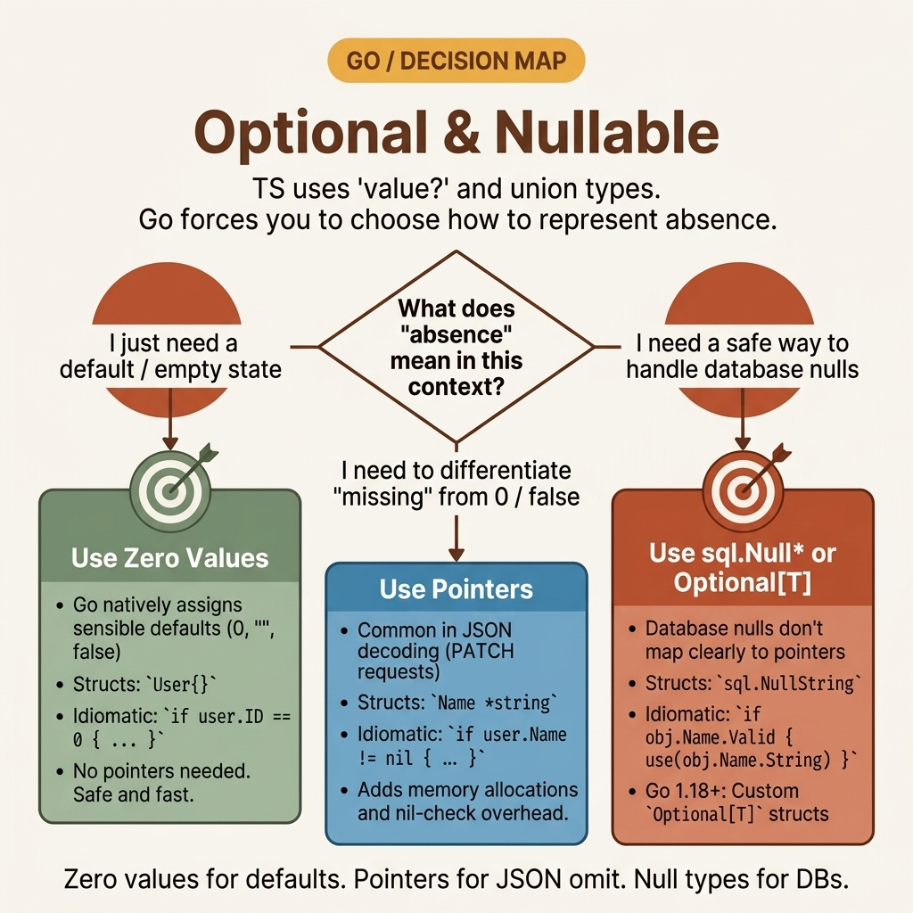
| # | Khiếm khuyết | Sửa chữa |
|---|---|---|
| 1 | Hủy tham chiếu con trỏ không có kiểm tra nil | Luôn kiểm tra if ptr != nil trước ptr . Nil sự vô căn cứ là một panic gây tử vong. |
| 2 | Sử dụng int cho các trường JSON tùy chọn | Sử dụng int - cả hai đều vắng mặt và 0 giải tuần tự hóa thành int(0) , khiến chúng không thể phân biệt được. |
| 3 | Bỏ qua omitempty trên các trường con trỏ | Không có omitempty , nil các con trỏ tuần tự hóa thành null trong JSON. Thêm omitempty để bỏ qua chúng. |
| Tài nguyên | Liên kết |
|---|---|
| Đặc tả giá trị 0 | [go.dev/ref/spec#Thezerovalue](https://go.dev/ref/spec#Thezerovalue) |
| Blog JSON và Go | [go.dev/blog/json](https://go.dev/blog/json) |
| Gia hạn | Khi nào | Cơ sở lý luận |
|---|---|---|
| [Data Conversion](./01-data-conversion.md) | Khi giải tuần tự hóa các tải trọng phức tạp | Các trường Con trỏ kết hợp với giải mã JSON phát trực tuyến |
| [Iterator Patterns](./10-iterator.md) | Khi các trình vòng lặp tạo ra các giá trị null | Optional[T] tích hợp với iter.Seq[Optional[T]] để tạo ra các đường ống lười an toàn |
Điều hướng: [← Iterator Patterns](./10-iterator.md) · [→ Class → Struct](./12-class-struct.md)
Một kiến trúc sư chuyển hệ thống phân cấp bộ điều khiển NestJS: UserController extends BaseController . Họ nhúng BaseController vào một Go struct , mong đợi super.handleRequest() gửi đi một cách đa hình. Nó không. Go embedding là cú pháp để truy cập trường - nó sao chép các phương thức của cha mẹ nhưng không tạo ra chuỗi sự kế thừa (inheritance) . Các phương thức của struct được nhúng luôn đề cập đến loại được nhúng, không phải struct bên ngoài. Go thay thế sự kế thừa (inheritance) bằng hai cơ chế:
1. Struct embedding — quảng bá các trường và phương thức từ bên trong struct . Hữu ích cho việc sử dụng lại việc triển khai nhưng không có công văn đa hình.
2. Các giao diện (interface) — sự hài lòng tiềm ẩn. Any struct với các phương pháp phù hợp sẽ triển khai từ khóa giao diện (interface) , không có implements . Đây là Go của tính đa hình (polymorphism) .
1.1 Các kiểu bất biến và lỗi
| Ranh giới | Trách nhiệm cốt lõi |
|---|---|
| Sự kết hợp (composition) trên sự kế thừa (inheritance) | Embedding thúc đẩy khả năng truy cập trường. Nó không ghi đè các phương thức - receiver của loại được nhúng luôn là chính nó. |
| Ngụ ý các giao diện (interface) | A struct thỏa mãn giao diện (interface) bằng cách có tất cả các phương thức được yêu cầu. Không cần khai báo. |
| Quy tắc | Cơ sở lý luận |
|---|---|
Sử dụng hàm tạo NewXxx() | Go không có cú pháp hàm tạo. Quy ước: NewCustomer(id, email) trả về *Customer đã được xác thực. |
| Sử dụng các tùy chọn chức năng | Cấu hình struct lớn với nhiều trường tùy chọn sẽ không thể đọc được. Các hàm tùy chọn WithTimeout(5s) có tỷ lệ rõ ràng. |
1.2 Chuỗi thất bại
- Bẫy phương thức bị che khuất: Bạn nhúng
BaseLoggervà xác định phương thứcLog()của riêng bạn. Phương thức bên ngoài che mờ phương thức bên trong — mã gọibase.Log()thông qua trường được nhúng vẫn chạy bản gốc chứ không phải phần ghi đè của bạn. Đây không phải là tính đa hình (polymorphism) . - Đột biến value receiver : Bạn đính kèm các phương thức vào
func (c Customer)( value receiver ). Bên trong phương thức,c.Email = "new"sửa đổi một bản sao. struct của người gọi không thay đổi. Sử dụng con trỏ receiversfunc (c *Customer)cho các đột biến.
Mã nguồn & Các ví dụ minh họa
NewCustomer xác nhận đầu vào. Con trỏ receivers kích hoạt đột biến.
Độ phức tạp: O(1) cho mỗi công trình.> Takeaway: Go sử dụng cách viết hoa để kiểm soát truy cập — chữ hoa = được xuất (công khai), chữ thường = không được xuất (riêng tư cho package ). Không có ranh giới protected — package là phạm vi truy cập duy nhất.---
// core_entities.go
package domain
import "errors"
// Replaces: class Customer { private id: string; email: string }
type Customer struct {
identifier string // unexported = private
Email string // exported = public
}
// Replaces: constructor(id: string, email: string)
func NewCustomer(id, email string) (*Customer, error) {
if id == "" {
return nil, errors.New("id is required")
}
return &Customer{
identifier: id,
Email: email,
}, nil
}
// Getter for the private field
func (c *Customer) ID() string {
return c.identifier
}
// Pointer receiver: mutations affect the original struct
func (c *Customer) UpdateEmail(email string) {
c.Email = email
}Protocol() .
Độ phức tạp: O(1) mỗi lần gửi.> Takeaway: SecureTransmitter thỏa mãn Transmitter mà không cần khai báo implements . Nó nhận Protocol() từ embedding và định nghĩa trực tiếp Dispatch() . Đây là sự kết hợp (composition) - không phải sự kế thừa (inheritance) .---
// polymorphic_engines.go
package domain
import "fmt"
// TS: abstract class Transmitter { abstract dispatch(payload: Buffer): void }
type Transmitter interface {
Dispatch(payload []byte) error
Protocol() string
}
type BaseNetwork struct {
targetURL string
}
func (b *BaseNetwork) Protocol() string {
return "HTTPS"
}
// Embeds BaseNetwork — gets Protocol() for free
type SecureTransmitter struct {
BaseNetwork
Certificate string
}
func NewSecureTransmitter(url string, cert string) *SecureTransmitter {
return &SecureTransmitter{
BaseNetwork: BaseNetwork{targetURL: url},
Certificate: cert,
}
}
func (s *SecureTransmitter) Dispatch(payload []byte) error {
fmt.Printf("Transmitting via %s: %s\n", s.Protocol(), s.targetURL)
return nil
}Kiểu dữ liệu Option func(*Config) . Mỗi tùy chọn sửa đổi một trường. Hàm tạo áp dụng tất cả các tùy chọn theo thứ tự.
Độ phức tạp: O(N) trong đó N = số lượng tùy chọn được áp dụng.> Takeaway: Các tùy chọn chức năng chia tỷ lệ theo any số lượng tham số tùy chọn mà không phá vỡ hàm tạo signature . Mỗi tùy chọn đều tự ghi lại tài liệu: WithTimeout(5 * time.Second) đọc tốt hơn đối số vị trí. Mẫu này được sử dụng bởi grpc.NewServer , http.NewServeMux và hầu hết các thư viện Go sản xuất.// functional_options.go
package domain
import "time"
type Application struct {
endpoint string
timeout time.Duration
debug bool
}
type AppOption func(*Application)
func WithTimeout(d time.Duration) AppOption {
return func(app *Application) {
app.timeout = d
}
}
func WithDebugMode() AppOption {
return func(app *Application) {
app.debug = true
}
}
func NewApplication(endpoint string, opts ...AppOption) *Application {
// Sensible defaults
app := &Application{
endpoint: endpoint,
timeout: 30 * time.Second,
debug: false,
}
for _, opt := range opts {
opt(app)
}
return app
}Sơ đồ trực quan & Luồng hoạt động (Visual Support)
Hệ thống phân cấp lớp JavaScript và Go thành phần structs giải quyết cùng một vấn đề theo cách khác nhau. Hình: Lớp TS sự kế thừa (inheritance) (trái) vs Go struct embedding + giao diện (interface) (phải). Go quảng bá các trường thông qua embedding nhưng gửi các phương thức một cách tĩnh — không có bảng phương thức ảo.
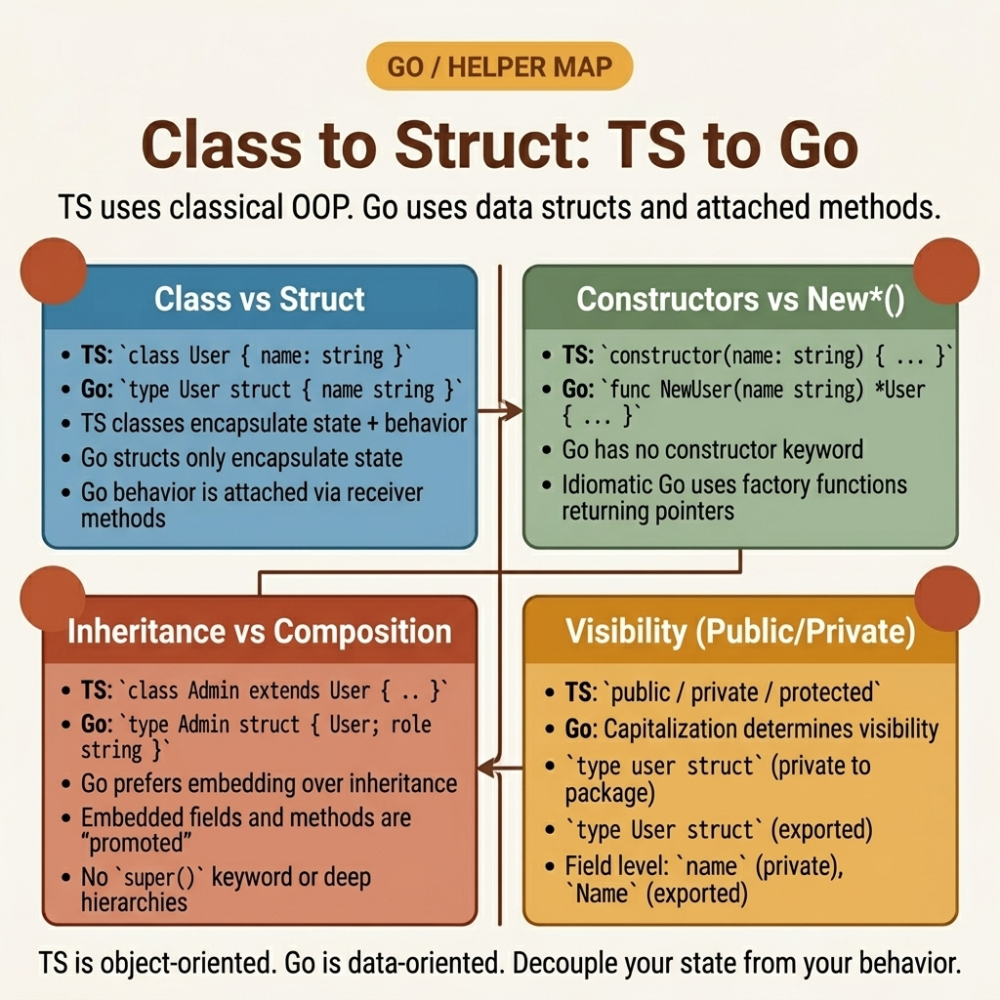
| # | Khiếm khuyết | Sửa chữa |
|---|---|---|
| 1 | Sử dụng giá trị receivers cho các phương thức đột biến | Sử dụng con trỏ receivers func (c *Customer) . Giá trị receivers hoạt động trên một bản sao. |
| 2 | Phương thức mong đợi ghi đè thông qua embedding | Embedding không phải là sự kế thừa (inheritance) . Các phương thức của struct được nhúng luôn liên kết với kiểu được nhúng. |
| 3 | Sử dụng cấu hình lớn structs với nhiều trường có giá trị bằng 0 | Sử dụng mẫu tùy chọn chức năng - mỗi chức năng tùy chọn đều có khả năng tự ghi lại và có thể kết hợp được. |
| Tài nguyên | Liên kết |
|---|---|
| Các con trỏ so với Giá trị | [go.dev/doc/effectivego#pointersvsvalues](https://go.dev/doc/effectivego#pointersvsvalues) |
| Embedding | [go.dev/doc/effectivego#embedding](https://go.dev/doc/effectivego#embedding) |
| Gia hạn | Khi nào | Cơ sở lý luận |
|---|---|---|
| [Optional Properties](./11-optional-nullable.md) | Khi tham số hàm tạo là tùy chọn | Các trường Con trỏ và các tùy chọn chức năng phục vụ các trường hợp sử dụng khác nhau |
| [Map Utilities](./03-object-map-utils.md) | Khi xây dựng cấu hình từ các nguồn khóa-giá trị động | Generic map thao tác để hợp nhất cấu hình |
Điều hướng: [← Optional & Nullable](./11-optional-nullable.md) · [→ Directory Overview](./README.md)
Bạn viết TestDivideNormal , TestDivideByZero , TestDivideNegativeResult , TestDivideLargeNumbers . Bốn chức năng, cấu trúc giống hệt nhau, chỉ khác nhau ở đầu vào. Vỏ cạnh mới có nghĩa là một chức năng mới. Lỗi trong mẫu khẳng định? Sửa bốn chỗ. Kéo yêu cầu xem xét? Đọc bốn khối gần giống nhau.
[]struct{ name, input, expected } slice - một hàng cho mỗi trường hợp thử nghiệm. Vòng lặp gọi t.Run(tt.name, ...) cho mỗi hàng. Thêm một trường hợp có nghĩa là thêm một chữ struct . Logic xác nhận tồn tại chính xác một lần. Các nhóm kết quả đầu ra thử nghiệm theo tên: TestDivide/normal , TestDivide/byzero — có thể đọc được, có thể lọc được bằng -run .
Nhưng các bài kiểm tra dựa trên bảng chỉ xác minh mã bạn kiểm soát. Khi chức năng của bạn phụ thuộc vào database , ứng dụng khách HTTP hoặc nhà môi giới tin nhắn, bạn cần thay thế sự phụ thuộc đó bằng một giả mạo được kiểm soát. Go giải quyết vấn đề này bằng các giao diện (interface) : xác định sự phụ thuộc là giao diện (interface) , thêm mock vào các thử nghiệm. testify/mock tự động hóa việc thiết lập và xác minh kỳ vọng.
Các loại thử nghiệm Go cung cấp bốn mẫu chức năng kiểm tra. Mỗi tệp tồn tại trong các tệp test.go và bị loại trừ khỏi các tệp nhị phân sản xuất:
| Loại | Hậu tố tệp | Tiền tố hàm | Mục đích |
|---|---|---|---|
| Kiểm tra đơn vị | test.go | TestXxx | Xác minh tính đúng đắn của một đơn vị |
| Benchmark | test.go | BenchmarkXxx | Đo hiệu suất (ns/op, B/op) |
| Ví dụ | test.go | ExampleXxx | Tài liệu thực thi |
| Lông tơ | test.go | FuzzXxx | Tìm các trường hợp cạnh thông qua đầu vào ngẫu nhiên ( Go 1.18+) |
test.go ? Trình biên dịch Go loại trừ tất cả các tệp test.go khỏi các tệp nhị phân sản xuất. Trình trợ giúp kiểm tra, mock structs và dữ liệu kiểm tra không bao giờ được gửi đến sản xuất - không có chi phí, không cần thẻ xây dựng.Lệnh kiểm tra
| Lệnh | Mục đích |
|---|---|
go test ./... | Chạy tất cả các bài kiểm tra trong tất cả packages |
go test -v | Đầu ra dài dòng với tên bài kiểm tra |
go test -run TestName | Chạy thử nghiệm cụ thể theo tên |
go test -cover | Hiển thị tỷ lệ phủ sóng |
go test -coverprofile=c.out | Ghi dữ liệu bảo hiểm vào tập tin |
go test -bench . | Chạy benchmarks |
go test -race | Kích hoạt tính năng phát hiện cuộc đua |
go test -count=1 | Tắt kiểm tra caching |
-race ? Truy cập bộ nhớ của thiết bị phát hiện cuộc đua tại runtime . Nó nắm bắt các cuộc chạy đua dữ liệu mà các bài kiểm tra đơn vị bỏ lỡ - các goroutine đọc và ghi cùng một biến mà không đồng bộ hóa. Chạy -race trong CI cho mọi PR.---
Mã nguồn & Các ví dụ minh họa
Hàm Add của bạn lấy hai số nguyên và trả về tổng của chúng. Hàm Divide của bạn nhận hai số float và trả về kết quả hoặc lỗi. Cả hai đều cần nhiều trường hợp thử nghiệm - trường hợp dương, âm, 0, cạnh.
Add và Divide với nhiều đầu vào bằng cách sử dụng một chức năng kiểm tra duy nhất cho mỗi mục tiêu.
Phương pháp tiếp cận: Xác định các trường hợp thử nghiệm dưới dạng []struct slice . Lặp lại với t.Run cho các thử nghiệm phụ được đặt tên.
Ví dụ: TestDivide xử lý phép chia thông thường, kết quả thập phân và phép chia cho 0 trong một hàm.require cho lỗi và assert cho các giá trị?
require.Lỗi biên dịch / Runtime dừng kiểm tra ngay lập tức nếu lỗi là nil — không ích gì khi kiểm tra kết quả của một thao tác thất bại. assert.Equal báo cáo lỗi nhưng vẫn tiếp tục kiểm tra, điều này rất hữu ích khi bạn muốn xem tất cả các xác nhận không thành công cùng một lúc. Quy tắc: require cho các điều kiện tiên quyết, assert để kiểm tra giá trị.
Kết luận: Kiểm tra dựa trên bảng tách biệt dữ liệu kiểm tra khỏi logic kiểm tra. Việc thêm trường hợp cạnh mới là một chữ struct - không có hàm mới, không có mã xác nhận được sao chép. Mẫu wantErr xử lý cả đường dẫn thành công và lỗi trong cùng một bảng.
Kiểm thử dựa trên bảng bao gồm các hàm thuần túy. Nhưng khi hàm của bạn gọi database , bạn cần thay thế phần phụ thuộc đó bằng một phần giả mạo được kiểm soát. Điều đó đòi hỏi các giao diện (interface) .
---
// math.go
package math
func Add(a, b int) int { return a + b }
func Divide(a, b float64) (float64, error) {
if b == 0 {
return 0, errors.New("division by zero")
}
return a / b, nil
}UserRepository dưới dạng giao diện (interface) . Tạo MockUserRepo bằng cách sử dụng testify/mock . Định cấu hình kỳ vọng với .On().Return() .
Ví dụ: Kiểm tra "id không hợp lệ" vượt qua nil làm kho lưu trữ — dịch vụ từ chối đầu vào trước khi gọi repo.mockRepo.AssertExpectations(t) ?
AssertExpectations xác minh rằng mọi kỳ vọng .On(...) thực sự đã được gọi. Nếu không có nó, bạn có thể xóa lệnh gọi repo.FindByID(id) khỏi dịch vụ — thử nghiệm vẫn sẽ vượt qua vì không có xác nhận nào kiểm tra xem repo đã được gọi hay chưa. AssertExpectations bắt cuộc gọi nhỡ.
Kết luận: Giao diện (interface) giả lập (mocking) tách các thử nghiệm khỏi cơ sở hạ tầng. mock kiểm soát chính xác những gì kho lưu trữ trả về. AssertExpectations đảm bảo dịch vụ thực sự gọi kho lưu trữ. Kiểm tra "id không hợp lệ" chứng minh xác thực sớm bằng cách chuyển nil — không cần mock để từ chối đầu vào.
Kiểm tra đơn vị và [[E24]]] bao gồm tính chính xác. Benchmarks đo lường hiệu suất: nano giây trên mỗi thao tác, số byte được phân bổ, số phân bổ trên mỗi cuộc gọi.
---
// service.go
package user
type UserRepository interface {
FindByID(id int64) (*User, error)
Create(user *User) error
}
type UserService struct {
repo UserRepository
}
func NewUserService(repo UserRepository) *UserService {
return &UserService{repo: repo}
}
func (s *UserService) GetUser(id int64) (*User, error) {
if id <= 0 {
return nil, errors.New("invalid id")
}
return s.repo.FindByID(id)
}Hàm Add của bạn chạy trong vài nano giây. Nối chuỗi của bạn có hai cách triển khai - toán tử + và strings.Builder . Bạn muốn biết cái nào nhanh hơn và liệu nó có phân bổ bộ nhớ hay không.
Add và so sánh hai chiến lược nối chuỗi với theo dõi phân bổ.
Cách tiếp cận: BenchmarkXxx(b *testing.B) với b.Loop() ( Go 1.24+) hoặc for range b.N ( Go 1.22+). Sub- benchmarks để so sánh tham số.
Ví dụ: BenchmarkStringConcat so sánh + với strings.Builder . -benchmem tiết lộ sự khác biệt về phân bổ.``bash
# ✅ Run benchmarks
go test -bench . -benchmem
# BenchmarkAdd-8 1000000000 0.29 ns/op 0 B/op 0 allocs/op
# BenchmarkDivide-8 500000000 2.31 ns/op 0 B/op 0 allocs/op
# ✅ Coverage go test -cover ./... # ok myapp/math 0.3s coverage: 95.2% of statements
go test -coverprofile=coverage.out ./... go tool cover -html=coverage.out # Open browser
# ✅ Race detection
go test -race ./...
`> Tại sao -benchmem` ?
ns/op đo time nhưng ẩn áp lực bộ nhớ. Một hàm chạy trong 10ns nhưng phân bổ 3 lần cho mỗi lệnh gọi sẽ tạo ra áp lực GC trên quy mô lớn. -benchmem báo cáo B/op (byte trên mỗi thao tác) và allocs/op — cần thiết để xác định phân bổ đường dẫn nóng.
Kết luận: Benchmarks đo lường những gì bài kiểm tra đơn vị không thể: time , bộ nhớ và chi phí phân bổ. Sub- benchmarks so sánh các chiến lược cạnh nhau. -benchmem tiết lộ phân bổ ẩn. -race nắm bắt các cuộc đua dữ liệu mà không có xác nhận nào có thể phát hiện được.
---
// benchmark_test.go
package math
import "testing"
func BenchmarkAdd(b *testing.B) {
for i := range b.N { // Go 1.22+
Add(42, 58)
}
}
// ✅ Benchmark with setup
func BenchmarkDivide(b *testing.B) {
b.ReportAllocs() // Report memory allocations
for i := range b.N { // Go 1.22+
Divide(100, 3)
}
}
// ✅ Sub-benchmarks
func BenchmarkStringConcat(b *testing.B) {
b.Run("plus", func(b *testing.B) {
s := ""
for i := range b.N { // Go 1.22+
s += "a"
}
})
b.Run("builder", func(b *testing.B) {
var sb strings.Builder
for i := range b.N { // Go 1.22+
sb.WriteString("a")
}
})
}Sơ đồ trực quan & Luồng hoạt động (Visual Support)
Khoảng cách giữa "kiểm tra vượt qua" và "kiểm tra bắt lỗi" là ma trận đầu vào. Kiểm thử hướng bảng (table-driven testing) buộc bạn phải nghĩ về các trường hợp đặc biệt dưới dạng dữ liệu chứ không phải dưới dạng mã. Quy trình làm việc bên dưới cho thấy cách một hàm kiểm tra duy nhất xử lý tất cả các trường hợp thông qua một vòng lặp.
Hình: quy trình làm việc Table-driven test . Các trường hợp đầu vào được xác định là struct slices . Một vòng lặp duy nhất lặp lại các trường hợp, gọi t.Run cho các thử nghiệm phụ được đặt tên và xác nhận kết quả. Thêm trường hợp có nghĩa là thêm một hàng — không có chức năng mới.
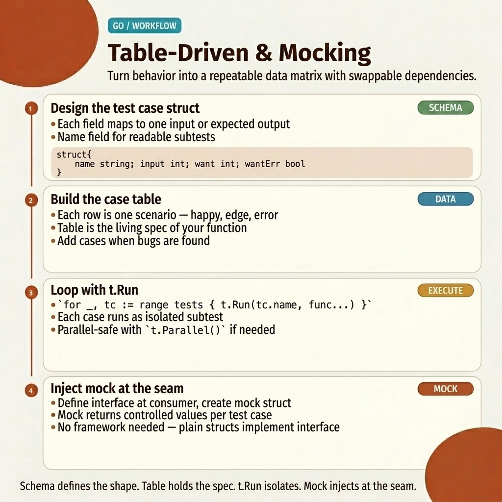
Cú pháp kiểm tra Go là tối thiểu. Các lỗi ẩn trong thiết kế thử nghiệm - xác minh caching , song song và mock .
| # | Mức độ nghiêm trọng | Lỗi | Hậu quả | Sửa chữa |
|---|---|---|---|---|
| 1 | 🔴 Gây tử vong | Không gọi AssertExpectations | Mock kỳ vọng âm thầm bị bỏ qua | Luôn gọi mockRepo.AssertExpectations(t) |
| 2 | 🟡 Chung | Kết quả kiểm tra được lưu trong bộ nhớ đệm | go test bỏ qua việc chạy lại nếu mã không thay đổi | Sử dụng go test -count=1 để tắt bộ đệm |
| 3 | 🟡 Chung | Quên -race trong CI | Cuộc đua dữ liệu vượt qua CI và gặp sự cố trong quá trình sản xuất | Thêm -race vào lệnh kiểm tra CI |
| 4 | 🟡 Chung | assert thay vì require cho các điều kiện tiên quyết | Quá trình kiểm tra tiếp tục với nil con trỏ sau lỗi → panic | Sử dụng require để kiểm tra lỗi/ nil |
| 5 | 🔵 Nhỏ | Không sử dụng t.Parallel() | Kiểm tra tuần tự chất thải CI time | Đánh dấu các bài kiểm tra độc lập bằng t.Parallel() |
---
| Tài nguyên | Loại | Liên kết | Ghi chú |
|---|---|---|---|
| Go Kiểm tra | Chính thức | [pkg.go.dev/testing](https://pkg.go.dev/testing) | Tài liệu tham khảo API thử nghiệm tích hợp |
| Kiểm tra dựa trên bảng | Chính thức | [go.dev/wiki/TableDrivenTests](https://go.dev/wiki/TableDrivenTests) | Mẫu table-driven test chuẩn |
---
Các thử nghiệm dựa trên bảng, giả lập (mocking) , benchmarks và phạm vi bao phủ đều được đề cập. Các nhánh bên dưới mở rộng thử nghiệm sang hồ sơ hiệu suất và các phần phụ thuộc thực sự.
| Mở rộng | Khi nào | Cơ sở lý luận | Tệp/Liên kết |
|---|---|---|---|
| Benchmarks & Lông tơ | Khi bạn cần đo lường hiệu suất và khám phá trường hợp cụ thể | b.Loop() ( Go 1.24+), fuzzing , benchstat | [02-benchmark-fuzz.md](./02-benchmark-fuzz.md) |
| Kiểm tra tích hợp | Khi mocks vẫn chưa đủ - hãy kiểm tra DB thực, Redis, Kafka | testcontainers-go quay các vùng chứa Docker cho mỗi lần kiểm tra | [03-integration-testcontainers.md](./03-integration-testcontainers.md) |
Điều hướng: [← Packages](../packages/) · [← README](../README.md)
"Tối ưu hóa điều này - nó chậm." Bạn đo bằng time.Now() trước và sau - kết quả dao động trong khoảng ±40%. Go có testing.B được tích hợp sẵn. Nó benchmarks đúng cách mà không cần thư viện của bên thứ ba, nhưng trình biên dịch có thể tối ưu hóa chức năng mục tiêu của bạn nếu bạn không cẩn thận.
Go có khung benchmark tích hợp sẵn — không cần thư viện. BenchmarkXxx(b testing.B) chạy hàm b.N lần ( runtime điều chỉnh N để ổn định). b.ReportAllocs() báo cáo mức sử dụng bộ nhớ. benchstat so sánh hai lần chạy để phát hiện hồi quy. Fuzzing ( Go 1.18+) bao gồm lớp tiếp theo: độ ổn định đầu vào.*
Benchmark vs Unit Test vs Fuzz
| Kỹ thuật | Mục đích | Khi nào nên chạy? | Đầu ra |
|---|---|---|---|
| Kiểm tra đơn vị | Tính đúng đắn | go test | Đạt/Không đạt |
| Benchmark | Hiệu suất (ns/op) | go test -bench . | ns/op, B/op, phân bổ/op |
| Fuzz test | Trường hợp cạnh / sự cố | go test -fuzz=FuzzXxx | Sự cố đầu vào nếu tìm thấy lỗi |
| Ví dụ | Tài liệu | go test | Kết quả đầu ra khớp / Thất bại |
Tại sao b.Loop() thay vì for i := 0; i < b.N; i++ ? b.Loop() ( Go 1.24+) xử lý việc đặt lại bộ hẹn giờ và điều chỉnh b.N bên trong — không cần [[C28]]] thủ công. Sạch hơn, ít xảy ra lỗi hơn. for i := range b.N ( Go 1.22+) là dạng trung gian tốt hơn, nhưng b.Loop() là dạng được ưa thích trong tương lai.
Fuzz: Tìm lỗi mà bạn không nghĩ tới.
Kiểm thử fuzz dựa trên kiểm tra thuộc tính: thay vì khẳng định các kết quả cụ thể, bạn khẳng định bất biến — các thuộc tính phải luôn đúng cho tất cả dữ liệu đầu vào:
| Bất động sản | Ví dụ |
|---|---|
| Khứ hồi | decode(encode(x)) == x |
| Bình thường | f(f(x)) == f(x) |
| Không có sự cố | Hàm không panic với đầu vào any |
| Chiều dài được bảo toàn | len(transform(s)) == len(s) |
Tại sao fuzz lại hiệu quả hơn các trường hợp kiểm thử thủ công? Các nhà phát triển viết trường hợp dựa trên những gì họ mong đợi. Bộ làm mờ tạo ra các đầu vào và đột biến ngẫu nhiên từ kho hạt giống — nó tìm ra các trường hợp đặc biệt mà bạn chưa từng tưởng tượng. FuzzReverse đã phát hiện lỗi Unicode mà không có bài kiểm tra viết tay nào được đề cập. Benchmark so với fuzz so với đơn vị - lý thuyết đủ rồi. Hãy cùng xem kim tự tháp thử nghiệm và quy trình làm việc benchmark trông như thế nào.
---
Mã nguồn & Các ví dụ minh họa
+ so với strings.Builder — sub- benchmarks tiết lộ sự khác biệt về phân bổ.
Độ phức tạp: O(1) cho mỗi thao tác; vòng lặp benchmark tự động chia tỷ lệ b.N .> Tại sao b.ReportAllocs() lại quan trọng?
ns/op chỉ đo time — không đo áp suất bộ nhớ. Hàm 10ns nhưng 3 phân bổ/op sẽ tạo ra áp suất GC trên quy mô lớn. b.ReportAllocs() report B/op (byte) và allocs/op — giúp phát hiện các phân bổ ẩn trong đường dẫn nóng.b.Loop() ( Go 1.24+) thay thế for i := 0; i < b.N; i++ . Sub- benchmarks cho phép kiểm tra tham số hóa (size=100, size=1000). -benchmem hoặc b.ReportAllocs() theo dõi chi phí phân bổ. Benchmark đo hiệu suất bìa. Nhưng benchmarks chỉ là những trường hợp thử nghiệm mà bạn nghĩ ra. Kiểm thử fuzz tìm ra các lỗi mà bạn không nghĩ tới — bằng cách tạo đầu vào ngẫu nhiên từ kho dữ liệu gốc.package utils_test
import "testing"
// ━━━━━ Basic benchmark ━━━━━
func BenchmarkStringConcat(b *testing.B) {
for b.Loop() { // Go 1.24+ — preferred
_ = "hello" + " " + "world"
}
}
func BenchmarkStringBuilder(b *testing.B) {
for b.Loop() {
var sb strings.Builder
sb.WriteString("hello")
sb.WriteString(" ")
sb.WriteString("world")
_ = sb.String()
}
}
// ━━━━━ With setup (excluded from timing) ━━━━━
func BenchmarkDBQuery(b *testing.B) {
db := setupTestDB() // setup — not timed
b.ResetTimer() // ✅ start timing from here
for b.Loop() {
var users []User
db.Find(&users)
}
}
// ━━━━━ Sub-benchmarks (like table-driven tests) ━━━━━
func BenchmarkSort(b *testing.B) {
sizes := []int{100, 1000, 10000}
for _, size := range sizes {
b.Run(fmt.Sprintf("size=%d", size), func(b *testing.B) {
data := generateSlice(size)
b.ResetTimer()
for b.Loop() {
slices.Sort(slices.Clone(data))
}
})
}
}
// ━━━━━ Memory allocation tracking ━━━━━
func BenchmarkAllocs(b *testing.B) {
b.ReportAllocs() // ✅ report allocs/op
for b.Loop() {
_ = fmt.Sprintf("user-%d", 42)
}
}
// Run: go test -bench=. -benchmem -count=5
// Output:
// BenchmarkStringConcat-20 50000000 25.3 ns/op 48 B/op 2 allocs/op
// BenchmarkStringBuilder-20 80000000 18.1 ns/op 64 B/op 2 allocs/opFuzzReverse xác minh rằng việc đảo ngược hai lần một chuỗi sẽ trả về chuỗi gốc. FuzzJSONParse xác minh rằng phân tích cú pháp thành công có nghĩa là sắp xếp lại thành công.
Độ phức tạp: O(1) mỗi lần lặp; bộ làm mờ tạo ra hàng nghìn đầu vào từ kho hạt giống.> Tại sao xác nhận dựa trên thuộc tính thay vì dựa trên kết quả?
Bộ làm mờ tạo ra đầu vào ngẫu nhiên — bạn không biết trước đầu vào nên không thể xác nhận kết quả cụ thể. Thay vào đó, hãy khẳng định bất biến: decode(encode(x)) == x , len(transform(s)) == len(s) hoặc đơn giản là "không panic ". Thuộc tính phải giữ cho tất cả các đầu vào.testdata/fuzz/ — đưa chúng vào kho lưu trữ để sao chép CI. -fuzztime=30s giới hạn CI runtime . Benchmark và độ bền cũng như độ bền của lớp phủ lông tơ. Nhưng một lần chạy benchmark là không đủ — các kết quả có sự khác biệt giữa việc điều tiết CPU, thời gian GC và lập lịch hệ điều hành. Bạn cần chạy nhiều lần và so sánh thống kê. Đó là nơi benchstat đi vào.package utils_test
import (
"testing"
"unicode/utf8"
)
// ━━━━━ Basic fuzz test ━━━━━
func FuzzReverse(f *testing.F) {
// Seed corpus — starting inputs
f.Add("hello")
f.Add("世界")
f.Add("")
f.Add("!@#$%")
// ✅ Fuzz function — Go generates random inputs
f.Fuzz(func(t *testing.T, input string) {
result := Reverse(input)
// Property 1: double-reverse = original
if Reverse(result) != input {
t.Errorf("double reverse failed: %q", input)
}
// Property 2: same length
if utf8.RuneCountInString(result) != utf8.RuneCountInString(input) {
t.Errorf("length mismatch: %q → %q", input, result)
}
})
}
// Run:
// go test -fuzz=FuzzReverse -fuzztime=30s
// ━━━━━ Fuzz JSON parsing ━━━━━
func FuzzJSONParse(f *testing.F) {
f.Add([]byte(`{"name":"alice"}`))
f.Add([]byte(`{}`))
f.Add([]byte(`null`))
f.Fuzz(func(t *testing.T, data []byte) {
var result map[string]any
err := json.Unmarshal(data, &result)
if err == nil {
// If parse succeeds, re-marshal must also succeed
_, err2 := json.Marshal(result)
if err2 != nil {
t.Errorf("marshal failed after unmarshal: %v", err2)
}
}
// If err != nil, input is invalid JSON — that's OK
})
}-count=10 , lưu kết quả, thực hiện thay đổi, chạy lại và so sánh với benchstat .
Ví dụ: benchstat old.txt new.txt cho thấy mức cải thiện 28% ở StringConcat với giá trị p dưới 0,05.
Độ phức tạp: O(1) cho mỗi lần so sánh; benchstat xử lý số liệu thống kê.``bash# Run benchmarks, save results go test -bench=. -count=10 > old.txt
# Make changes, re-run go test -bench=. -count=10 > new.txt
# Compare
benchstat old.txt new.txt
# Output:
# name old time/op new time/op delta
# StringConcat 25.3ns 18.1ns -28.46%
`> Tại sao -count=10 khi so sánh benchmarks ?
-count=10 chạy 10 lần — benchstat tính giá trị trung bình và khoảng tin cậy. Nếu p < 0.05 , thay đổi là một sự hồi quy hoặc cải thiện thực sự, không phải tiếng ồn.benchstat so sánh benchmark các lần chạy có ý nghĩa thống kê. Sử dụng nó trong CI: nhánh cơ sở và nhánh PR. -count≥5 đưa ra một so sánh đáng tin cậy.Bây giờ bạn đã biết benchmark , fuzz và benchstat . Phần nguy hiểm nhất vẫn còn: trình biên dịch có thể tối ưu hóa các kết quả benchmark - cái bẫy được gieo ở đầu bài viết này tạo ra đầu ra 0 ns/op` vô nghĩa.
---
Sơ đồ trực quan & Luồng hoạt động (Visual Support)
Benchmarks và các bài kiểm tra fuzz thường được nhóm lại trong "thử nghiệm nâng cao". Thẻ phân loại bên dưới phân tách chúng theo mục đích, vì vậy bạn đừng nhầm lẫn benchmark (hiệu suất) với fuzz (mạnh mẽ) hoặc unit test (chính xác). Hình: Thẻ phân loại đặt các bài kiểm tra đơn vị, benchmarks , kiểm tra fuzz và các công cụ so sánh dưới dạng bốn lớp khác nhau trong cùng một hệ thống độ tin cậy: độ chính xác, hiệu suất, độ chắc chắn và phán đoán thống kê.
Sau khi phân loại rõ ràng, đoạn mã bên dưới sẽ không giống như một chuyến tham quan công cụ. Mỗi ví dụ sẽ trả lời “loại rủi ro nào đang được kiểm soát?” trước khi nói về cờ hoặc lệnh cụ thể.
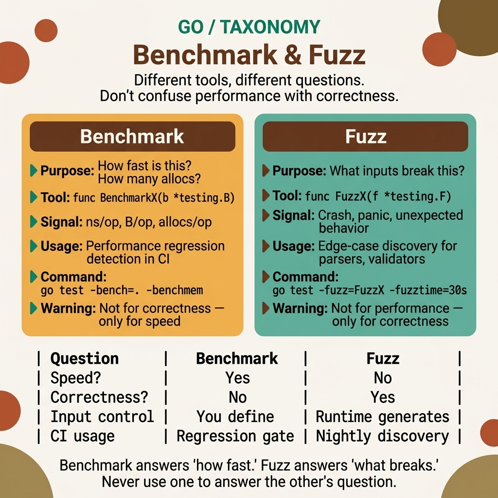
Cơ chế của Benchmark & Fuzz testing rất rõ ràng. Điều còn lại là nhận ra những điểm mà mã gần như chính xác tạo ra kết quả benchmark sai lệch.
| # | Mức độ nghiêm trọng | Lỗi | Hậu quả | Sửa chữa |
|---|---|---|---|---|
| 1 | 🔴 Gây tử vong | Trình biên dịch tối ưu hóa kết quả | 0 ns/op — vô nghĩa benchmark | Gán kết quả cho var sink T package -level |
| 2 | 🟡 Chung | Thiết lập có trong benchmark | Đo thiết lập time thay vì mã mục tiêu | b.ResetTimer() sau khi thiết lập hoặc b.StopTimer() / b.StartTimer() |
| 3 | 🟡 Chung | Fuzz chạy mãi mãi trong CI | CI pipeline hết thời gian chờ/treo | -fuzztime=30s giới hạn time , -fuzzminimizetime=10s |
| 4 | 🟡 Chung | for i := 0; i < b.N; i++ (kiểu cũ) | Vấn đề về hẹn giờ, dài dòng | for b.Loop() ( Go 1.24+) hoặc for range b.N ( Go 1.22+) |
| 5 | 🔵 Nhỏ | Benchmark không sử dụng -count | Chạy một lần = dữ liệu không đáng tin cậy | -count=5 tối thiểu, benchstat để so sánh |
🔴 Cạm bẫy #1 — Trình biên dịch tối ưu hóa benchmark Trình biên dịch Go tìm thấy kết quả không được sử dụng và loại bỏ hoàn toàn lệnh gọi hàm - 0 ns/op . Cách khắc phục: gán kết quả cho package -level var sink T . Trình biên dịch không thể tối ưu hóa nó vì biến hiển thị bên ngoài phạm vi hàm.
``go
var sink int // package-level
func BenchmarkFib(b *testing.B) {
for b.Loop() {
sink = Fib(20) // compiler keeps it because sink is package-level
}
}
``Bạn đã trải qua các bẫy benchmark , fuzz, Benchstat và tối ưu hóa trình biên dịch. Các tài nguyên dưới đây giúp đi sâu hơn.
---
| Tài nguyên | Loại | Liên kết | Lưu ý |
|---|---|---|---|
| Go Benchmarks | Chính thức | [pkg.go.dev/testing#hdr-Benchmarks](https://pkg.go.dev/testing#hdr-Benchmarks) | API benchmark tích hợp |
| Go Fuzzing | Chính thức | [go.dev/doc/security/fuzz](https://go.dev/doc/security/fuzz/) | Hướng dẫn kiểm tra fuzz ( Go 1.18+) |
| băng ghế dự bị | Công cụ | [pkg.go.dev/golang.org/x/perf/cmd/benchstat](https://pkg.go.dev/golang.org/x/perf/cmd/benchstat) | So sánh thống kê benchmark |
| đề xuất b.Loop() | Chính thức | [go.dev/blog/benchmarkloop](https://go.dev/blog/benchmarkloop) | Vòng lặp Go 1.24 benchmark |
---
Cốt lõi của Benchmark & Fuzz testing rất rõ ràng. Các nhánh bên dưới mở rộng thử nghiệm hiệu suất vào sản xuất bằng tính năng lập hồ sơ, thử nghiệm dựa trên thuộc tính và phát hiện hồi quy.
| Gia hạn | Khi nào | Lý do | Tệp/Liên kết |
|---|---|---|---|
| hồ sơ pprof | Sau benchmark xác định chức năng chậm | Phân bổ từng dòng + phân tích CPU | [../../advanced/05-performance-pprof.md](../../advanced/05-performance-pprof.md) |
| Kiểm tra tích hợp | Kiểm tra DB/Redis/Kafka thực | Đơn vị ngoài + benchmark — phụ thuộc thực sự | [03-integration-testcontainers.md](./03-integration-testcontainers.md) |
| Thử nghiệm dựa trên tài sản | Logic kinh doanh phức tạp | Bổ sung fuzz với các thuộc tính kiểu giả thuyết | [github.com/flyingmutant/rapid](https://github.com/flyingmutant/rapid) |
| Hồi quy CI benchmark | cổng thực hiện PR | Tự động phát hiện hồi quy hiệu suất | benchstat trong Hành động GitHub |
---
Điều hướng: [← Table-driven Tests](./01-table-driven-giả lập (mocking).md) · [→ Integration Tests](./03-integration-testcontainers.md)
Đạt bài kiểm tra đơn vị, CI màu xanh lá cây. Triển khai dàn dựng — API trả 500. Lý do: truy vấn sử dụng cú pháp dành riêng cho PostgreSQL mà sqlmock không nắm bắt được, httptest.Server không kiểm tra đàm phán TLS và dữ liệu kiểm tra factory không tái tạo sản xuất.
nil . Bạn đã kiểm tra logic nhưng chưa kiểm tra tích hợp. Sửa lỗi nóng:
*Thử nghiệm tích hợp giải quyết khoảng trống này: chạy DB, Redis, Kafka thực trong các vùng chứa Docker biệt lập. testcontainers-go quay vùng chứa PostgreSQL trong 2-3 giây, chạy SQL thực, sau đó hủy. Mỗi bộ thử nghiệm nhận được database mới —.
Thử nghiệm tích hợp Kiểm tra sự tương tác giữa các thành phần thực: dịch vụ gọi DB thực, bộ đệm thực, nhà môi giới thực. Không giống như kiểm thử đơn vị (hoàn toàn mô phỏng), kiểm thử tích hợp chạy các phần phụ thuộc thực sự trong vùng chứa Docker riêng biệt cho mỗi bộ kiểm thử.
Unit Test vs Integration Test vs E2E
| Loại | Phụ thuộc | Tốc độ | Điều gì đã được phát hiện? | Công cụ Go |
|---|---|---|---|---|
| Unit Test | Hoàn toàn bị chế nhạo | ⚡ ms | Lỗi logic trong hàm | testing , testify |
| Tích hợp | Real (Docker) | 🐢s | Lỗi tương tác DB/cache/broker | testcontainers-go |
| E2E | Toàn bộ hệ thống | 🐌 phút | Luồng người dùng thực tế | playwright-go , Người đưa thư |
Các mẫu chính
| Mẫu | Mô tả | Khi sử dụng |
|---|---|---|
| httptest.Recorder | Kiểm tra trình xử lý HTTP mà không cần khởi động máy chủ | Trình xử lý kiểm thử, phần mềm trung gian |
| httptest.Server | Kiểm tra mã máy khách HTTP với máy chủ thực | Kiểm tra ứng dụng khách HTTP, webhook |
| Testcontainers PostgreSQL | PostgreSQL thực trong Docker mỗi bài kiểm tra | Kiểm tra lớp kho lưu trữ |
| Testcontainers Redis | Real Redis trong Docker mỗi lần kiểm tra | Kiểm tra lớp bộ đệm |
| sqlmock | Mock database/sql giao diện (interface) (không cần Docker) | Khi Docker không có sẵn |
Chế độ lỗi
| Thất bại | Hậu quả | Làm thế nào để tránh |
|---|---|---|
| Docker không chạy | Kiểm tra thất bại "Không thể kết nối với daemon" | Thẻ //go:build integration để bỏ qua cục bộ |
| Xung đột cảng | Cổng liên kết container bị chiếm | Sử dụng MappedPort() — cổng khả dụng ngẫu nhiên |
| Không dọn dẹp container | Rò rỉ container, hết dung lượng ổ đĩa | t.Cleanup(func() { container.Terminate(ctx) }) |
| Trạng thái DB được chia sẻ giữa các lần kiểm tra | Kiểm tra không ổn định, phụ thuộc đặt hàng | Mỗi thử nghiệm sử dụng database riêng hoặc khôi phục giao dịch |
| CI chậm | CI pipeline > 10 phút | Chạy thử nghiệm đơn vị và tích hợp riêng biệt |
Đơn vị, tích hợp và E2E, kiểu mẫu, chế độ lỗi - lý thuyết là đủ. Hãy cùng xem kim tự tháp thử nghiệm và vòng đời testcontainers trông như thế nào.
---
Mã nguồn & Các ví dụ minh họa
httptest.NewRequest + httptest.NewRecorder + handler.ServeHTTP() = hoàn thành chu trình yêu cầu/phản hồi trong bộ nhớ.
Ví dụ: TestCreateUser_HTTP gửi yêu cầu POST và xác nhận nội dung phản hồi HTTP 201 +.
Độ phức tạp: O(1) cho mỗi yêu cầu; phí TCP bằng không.> Tại sao httptest không cần máy chủ thực sự?
httptest.NewRecorder() thực hiện http.ResponseWriter giao diện (interface) — trình xử lý ghi phản hồi vào máy ghi thay vì mạng. Không có chi phí TCP, không xung đột cổng. Kiểm tra logic xử lý trực tiếp, không qua mạng stack .httptest cung cấp thử nghiệm ở cấp độ trình xử lý — nhanh, tách biệt, không cần Docker. NewRequest + NewRecorder + handler.ServeHTTP() = hoàn thành chu kỳ yêu cầu/phản hồi trong bộ nhớ.Thử nghiệm trình xử lý bìa httptest mà không cần Docker. Nhưng khi nói đến việc kiểm tra các truy vấn SQL thực sự - các ràng buộc duy nhất, khóa ngoại, chỉ mục - mock là không đủ. Cần PostgreSQL thực sự trong Docker.
package handler_test
import (
"net/http"
"net/http/httptest"
"strings"
"testing"
"github.com/stretchr/testify/assert"
)
func TestCreateUser_HTTP(t *testing.T) {
app := setupApp() // wire real or mock dependencies
body := `{"name":"Alice","email":"alice@test.com"}`
req := httptest.NewRequest(http.MethodPost, "/api/users", strings.NewReader(body))
req.Header.Set("Content-Type", "application/json")
rec := httptest.NewRecorder()
app.ServeHTTP(rec, req) // or app.Test(req) for Fiber
assert.Equal(t, 201, rec.Code)
assert.Contains(t, rec.Body.String(), "Alice")
}testcontainers-go quay một vùng chứa PostgreSQL, chạy SQL thực, sau đó hủy nó. Mỗi bài kiểm tra nhận được một database mới.
Ví dụ: TestUserRepo_Create chèn một người dùng, sau đó đọc lại từ database thực.
Độ phức tạp: ~2-3 giây khi khởi động vùng chứa; O(1) cho mỗi truy vấn.> Tại sao WithOccurrence(2) khi chờ PostgreSQL?
Nhật ký PostgreSQL " Hệ thống database sẵn sàng chấp nhận kết nối" hai lần: lần đầu tiên khi init, lần thứ hai khi sẵn sàng kết nối. Đợi lần xuất hiện đầu tiên → vùng chứa chưa thực sự sẵn sàng → kết nối bị từ chối.testcontainers-go modules (postgres, redis) cung cấp các vùng chứa được định cấu hình sẵn. t.Cleanup() đảm bảo container bị phá hủy sau khi thử nghiệm. MappedPort() trả về một cổng ngẫu nhiên - không có xung đột cổng.PostgreSQL bao gồm kiểm tra SQL. Nhưng khi bạn cần kiểm tra lớp bộ nhớ đệm — Redis TTL, trục xuất, truy cập đồng thời — bạn cần Redis thực sự. Mẫu tương tự, nhưng sử dụng GenericContainer cho hình ảnh Docker any .
package repo_test
import (
"context"
"testing"
"github.com/stretchr/testify/assert"
"github.com/testcontainers/testcontainers-go"
"github.com/testcontainers/testcontainers-go/modules/postgres"
"github.com/testcontainers/testcontainers-go/wait"
"gorm.io/driver/postgres"
"gorm.io/gorm"
)
func setupPostgres(t *testing.T) *gorm.DB {
ctx := context.Background()
// ✅ Real PostgreSQL in Docker
container, err := postgres.Run(ctx, "postgres:16",
postgres.WithDatabase("testdb"),
postgres.WithUsername("test"),
postgres.WithPassword("test"),
testcontainers.WithWaitStrategy(
wait.ForLog("database system is ready to accept connections").
WithOccurrence(2),
),
)
assert.NoError(t, err)
t.Cleanup(func() { container.Terminate(ctx) })
connStr, _ := container.ConnectionString(ctx, "sslmode=disable")
db, err := gorm.Open(postgres.Open(connStr), &gorm.Config{})
assert.NoError(t, err)
db.AutoMigrate(&User{})
return db
}
func TestUserRepo_Create(t *testing.T) {
db := setupPostgres(t)
repo := NewUserRepo(db)
user := &User{Name: "Alice", Email: "alice@test.com"}
err := repo.Create(context.Background(), user)
assert.NoError(t, err)
assert.NotZero(t, user.ID)
// ✅ Verify in real DB
found, err := repo.FindByID(context.Background(), user.ID)
assert.NoError(t, err)
assert.Equal(t, "Alice", found.Name)
}GenericContainer .
Phương pháp tiếp cận: GenericContainer hoạt động với hình ảnh Docker any . Không cần module chuyên dụng - chỉ định hình ảnh, cổng hiển thị và nhật ký sẵn sàng.
Ví dụ: setupRedis khởi động vùng chứa Redis, trích xuất máy chủ/cổng động và trả về redis.Client được kết nối.
Độ phức tạp: ~1-2 giây khi khởi động vùng chứa; O(1) cho mỗi thao tác.> Tại sao Redis sử dụng GenericContainer thay vì modules ?
testcontainers-go có modules cho PostgreSQL, MySQL, MongoDB — nhưng Redis module đơn giản hơn nên hãy sử dụng GenericContainer để minh họa mẫu chung. Any Hình ảnh Docker có thể được sử dụng với GenericContainer .GenericContainer hoạt động với hình ảnh Docker any . MappedPort() xử lý việc phân bổ cổng động. Mẫu tương tự cũng áp dụng cho phần phụ thuộc Kafka, RabbitMQ, Elaticsearch - any với hình ảnh Docker.Bạn đã biết httptest, PostgreSQL testcontainers và Redis. Bây giờ đến phần nguy hiểm: rò rỉ container và trạng thái DB dùng chung - hai cái bẫy đã được thiết lập từ đầu bài viết.
---
func setupRedis(t *testing.T) *redis.Client {
ctx := context.Background()
container, err := testcontainers.GenericContainer(ctx, testcontainers.GenericContainerRequest{
ContainerRequest: testcontainers.ContainerRequest{
Image: "redis:7-alpine",
ExposedPorts: []string{"6379/tcp"},
WaitingFor: wait.ForLog("Ready to accept connections"),
},
Started: true,
})
assert.NoError(t, err)
t.Cleanup(func() { container.Terminate(ctx) })
host, _ := container.Host(ctx)
port, _ := container.MappedPort(ctx, "6379")
return redis.NewClient(&redis.Options{
Addr: fmt.Sprintf("%s:%s", host, port.Port()),
})
}Sơ đồ trực quan & Luồng hoạt động (Visual Support)
Trong thử nghiệm tích hợp, hình ảnh phải tuân theo vòng đời và không thể chỉ tóm tắt tên công cụ. Điều người đọc cần nhớ là thứ tự mà ranh giới được đưa lên, thực hiện và sau đó được phá bỏ. Hình: Quy trình làm việc map bắt đầu từ việc chọn đúng ranh giới ( httptest hoặc phần phụ thuộc được chứa trong vùng chứa), đi đến thiết lập và sẵn sàng, sau đó chạy các tương tác thực và kết thúc bằng việc dọn dẹp để ngăn chặn tình trạng không ổn định.
Khi vòng đời này được thực hiện, mã bên dưới sẽ có khoản thanh toán. Bạn sẽ thấy mỗi ví dụ là một luồng thực thi hoàn chỉnh chứ không chỉ là một số công thức công cụ riêng biệt.
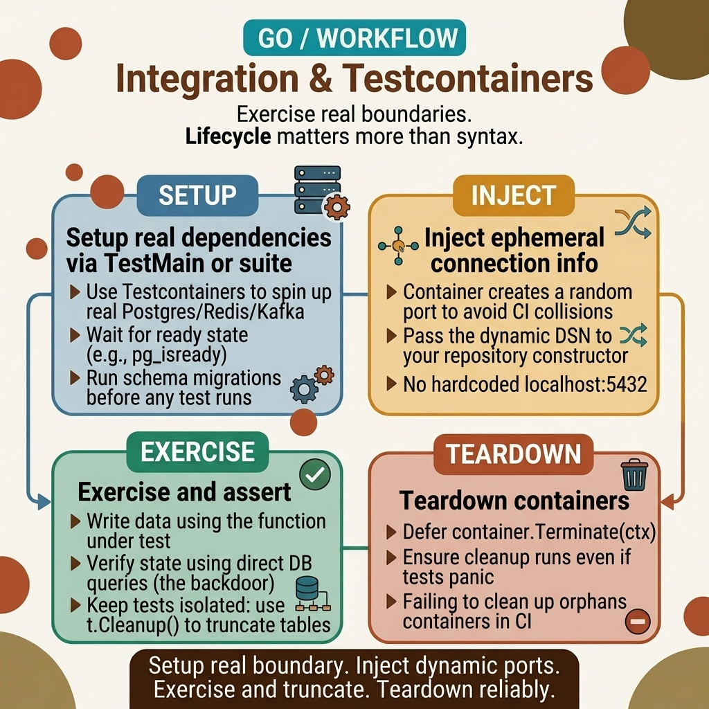
Cơ chế chính xác của Thử nghiệm tích hợp — Testcontainers , httptest, sqlmock rất rõ ràng. Việc còn lại là nhận ra những chỗ dễ viết xấp xỉ rồi đưa ra các bài kiểm tra tích hợp không ổn định hoặc xung đột cổng.
| # | Mức độ nghiêm trọng | Lỗi | Hậu quả | Sửa chữa |
|---|---|---|---|---|
| 1 | 🔴 Gây tử vong | Thiếu t.Cleanup() cho vùng chứa | Rò rỉ vùng chứa → hết dung lượng ổ đĩa, cạn kiệt cổng | t.Cleanup(func() { container.Terminate(ctx) }) ngay sau khi bắt đầu |
| 2 | 🔴 Gây tử vong | Trạng thái DB được chia sẻ giữa các lần kiểm tra | Kiểm tra không ổn định, thất bại phụ thuộc vào thứ tự | Mỗi thử nghiệm sử dụng DB mới hoặc khôi phục giao dịch |
| 3 | 🟡 Chung | Docker không chạy | "Không thể kết nối với daemon Docker" | thẻ //go:build integration + bỏ qua khi Docker không khả dụng |
| 4 | 🟡 Chung | Cổng được mã hóa cứng thay vì MappedPort() | Xung đột cổng trong các thử nghiệm song song | Luôn sử dụng container.MappedPort() cho cổng động |
| 5 | 🟡 Chung | Kiểm thử tích hợp chạy cùng với kiểm thử đơn vị | CI chậm gấp 10 lần | Thẻ xây dựng riêng biệt: go test -tags=integration ./... |
| 6 | 🔵 Nhỏ | Thời gian chờ khởi động vùng chứa quá ngắn | Không ổn định trên các trình chạy CI chậm | Tăng WithStartupTimeout(60 * time.Second) |
🔴 Cạm bẫy #1 — Rò rỉ container = cạn kiệt tài nguyên
Quên t.Cleanup() → vùng chứa không bị chấm dứt sau khi kiểm tra → tích lũy đĩa, bộ nhớ, cổng. Chạy bộ thử nghiệm 100 lần → 100 vùng chứa. Trình chạy CI hết đĩa và cổng → pipeline không thành công. Luôn gọi t.Cleanup(func() { container.Terminate(ctx) }) ngay sau khi khởi động vùng chứa.
🔴 Cạm bẫy #2 — Trạng thái DB dùng chung = Kiểm tra không ổn định
Kiểm tra A chèn dữ liệu, kiểm tra B đọc dữ liệu của A → đạt. Thay đổi thứ tự → thất bại. Mỗi thử nghiệm cần có trạng thái mới: t.Cleanup cắt bớt các bảng hoặc mỗi thử nghiệm sử dụng khôi phục giao dịch ( go-txdb ).
Bạn đã gặp phải các cạm bẫy httptest, testcontainers và cạn kiệt tài nguyên. Các tài nguyên dưới đây giúp đi sâu hơn.
---
| Tài nguyên | Loại | Liên kết | Lưu ý |
|---|---|---|---|
| testcontainers -go | Thư viện | [golang.testcontainers.org](https://golang.testcontainers.org/) | Bộ chứa Docker cho các bài kiểm tra Go |
| httptest | Chính thức | [pkg.go.dev/net/http/httptest](https://pkg.go.dev/net/http/httptest) | Kiểm tra HTTP trong bộ nhớ |
| sqlmock | Thư viện | [github.com/DATA-DOG/go-sqlmock](https://github.com/DATA-DOG/go-sqlmock) | Mock database /sql không có Docker |
| go-txdb | Thư viện | [github.com/DATA-DOG/go-txdb](https://github.com/DATA-DOG/go-txdb) | Cách ly giao dịch trên mỗi thử nghiệm |
---
Phần cốt lõi của Thử nghiệm tích hợp — Testcontainers , httptest, sqlmock rất rõ ràng. Các nhánh tiện ích mở rộng bên dưới giúp bạn đưa thử nghiệm tích hợp vào sản xuất với tính năng cách ly thử nghiệm, Kafka/Mongo modules và tối ưu hóa CI.
| Gia hạn | Khi nào | Lý do | Tệp/Liên kết |
|---|---|---|---|
| Điều khiển theo bảng + giả lập (mocking) | Lớp kiểm tra đơn vị | Bổ sung các bài kiểm tra tích hợp | [01-table-driven-giả lập (mocking).md](./01-table-driven-giả lập (mocking).md) |
| Benchmark & Lông tơ | Kiểm tra hiệu suất | Đo hiệu suất truy vấn trên DB thực | [02-benchmark-fuzz.md](./02-benchmark-fuzz.md) |
| go-txdb | Kiểm tra cách ly | Mỗi thử nghiệm chạy trong một giao dịch được khôi phục — nhanh hơn một vùng chứa cho mỗi thử nghiệm | [github.com/DATA-DOG/go-txdb](https://github.com/DATA-DOG/go-txdb) |
| Testcontainers modules | Kafka, MongoDB, v.v. | Vùng chứa được cấu hình sẵn cho các dịch vụ phổ biến | [golang.testcontainers.org/modules](https://golang.testcontainers.org/modules/) |
---
Điều hướng: [← Benchmark & Fuzz](./02-benchmark-fuzz.md) · [→ Các giao diện (interface)](../các giao diện (interface)/01-ngầm định (implicit)-io-patterns.md)
Bạn vừa chuyển một trình xử lý từ NestJS sang Go . Tên hàm tương tự, DTO tương tự, trình biên dịch có màu xanh. Nhưng vài giờ sau, bạn gặp phải ba điều bất ngờ.
- Trường không được khởi tạo nhưng vẫn có giá trị hợp lệ vì giá trị bằng 0.
- Một phương thức sửa đổi trạng thái nhưng không có gì thay đổi vì bạn sử dụng value receiver .
- An giao diện (interface) không cần
implements, nhưng trình biên dịch vẫn coi là thỏa mãn.
Đó là lúc bạn nhận ra: sự khác biệt thực sự không phải ở cú pháp. TypeScript chủ yếu giúp bạn xác minh chương trình JavaScript của mình trước khi chạy nó. Go đưa hệ thống kiểu, ranh giới package , bố cục bộ nhớ và công cụ xây dựng vào một tệp nhị phân được biên dịch duy nhất.
1.1 TypeScript và Go bảo vệ bạn ở hai lớp khác nhau.
TypeScript, theo Sổ tay chính thức, là một trình kiểm tra kiểu tĩnh cho các chương trình JavaScript. Sự đảm bảo mạnh mẽ nhất của nó hoạt động trước runtime - sau khi biên dịch, bạn vẫn chạy trên công cụ JavaScript và [[E11]]] của nó.
Điều này kéo theo ba hậu quả:
1. Trong TypeScript, nhiều đảm bảo nằm trong trình biên dịch hoặc khung công tác. 2. Trong Go , các đảm bảo nằm trong ngôn ngữ + package ranh giới + hành vi runtime . 3. Trong TypeScript, bạn thường tối ưu hóa công thái học của nhà phát triển thông qua tính trừu tượng. Trong Go , bạn thường tối ưu hóa khả năng đọc, khả năng dự đoán và tính rõ ràng.
1.2 4 rewire bạn phải làm sớm nhé.
Packages là ranh giới kiến trúc, không phải thư mục trang trí.
Trong Go , chữ thường/chữ hoa không chỉ là kiểu dáng - nó quyết định API công khai của package . Bạn ẩn các bất biến đằng sau ranh giới xuất khẩu mà không cần private/protected .
Giá trị 0 là một tính năng, không phải lỗi. var cfg Config là một đối tượng hợp lệ ở cấp độ ngôn ngữ. Nhưng liệu nó có hợp lệ trong kinh doanh hay không vẫn là trách nhiệm của hàm tạo hoặc hàm xác thực.
Giá trị so với con trỏ là quyết định hành vi. Trong TypeScript, các đối tượng tuân theo ngữ nghĩa tham chiếu được chia sẻ tại runtime . Trong Go , bạn phải quyết định khi nào nên sao chép giá trị và khi nào nên sử dụng các con trỏ — bộ phương thức sẽ thay đổi tương ứng.
Các giao diện (interface) do người tiêu dùng xác định. Go không muốn bạn xây dựng hệ thống phân cấp lớp và sau đó điền vào implements . Nó muốn package sử dụng phần phụ thuộc để nói "Tôi cần chính xác 1-2 phương thức này", sau đó cho phép trình biên dịch kiểm tra ngầm.
1.3 Các kiểu bất biến và lỗi
- Giá trị 0 thuận tiện nhưng không tự động mã hóa các biến nghiệp vụ. Việc biên dịch
User{}không có nghĩa là tên miền hợp lệ. - Con trỏ receiver phải là lựa chọn mặc định khi trạng thái đột biến hoặc phương thức struct đủ lớn để việc sao chép là vô nghĩa.
- Không mang các bộ trang trí, bộ chứa DI , mô hình nhà cung cấp theo phạm vi yêu cầu từ NestJS vào Go chỉ vì "nhóm đã quen với việc đó". Hầu hết time bạn đang nhập độ phức tạp của khung mà không nhận được giá trị bổ sung.
Mã nguồn & Các ví dụ minh họa
NewServerConfig("billing") tạo cấu hình hợp lệ; ServerConfig{} chỉ là giá trị 0 - nó có thể không hợp lệ trong kinh doanh.Phiên bản TypeScript bạn thường bắt đầu từ:``typescript
Kiểu dữ liệu ServerConfig = {
serviceName: string;
timeoutMs: number;
maxConns: number;
};
function createServerConfig(serviceName: string): ServerConfig { if (!serviceName) { throw new Lỗi biên dịch / Runtime("service name is required"); }
return { serviceName, timeoutMs: 2000, maxConns: 100, }; }
const cfg = createServerConfig("billing"); console.log(cfg); ``Phiên bản Go tương ứng:> Takeaway: Giá trị 0 mang lại cho bạn một đối tượng hợp lệ về ngôn ngữ. Một hàm tạo cung cấp cho bạn một đối tượng hợp lệ theo miền. Đây không phải là điều tương tự.
package main
import (
"fmt"
"time"
)
type ServerConfig struct {
ServiceName string
Timeout time.Duration
MaxConns int
}
func NewServerConfig(serviceName string) (ServerConfig, error) {
if serviceName == "" {
return ServerConfig{}, fmt.Errorf("service name is required")
}
return ServerConfig{
ServiceName: serviceName,
Timeout: 2 * time.Second, // zero value will not give you this default
MaxConns: 100,
}, nil
}
func main() {
var zero ServerConfig
fmt.Printf("zero value: %+v\n", zero)
cfg, err := NewServerConfig("billing")
if err != nil {
panic(err)
}
fmt.Printf("constructed: %+v\n", cfg)
}ProfileService chỉ cần một phương thức Load duy nhất.Phiên bản TypeScript quen thuộc:``typescript
giao diện (interface) Profile {
id: string;
name: string;
}
giao diện (interface) ProfileLoader {
load(id: string): Promise
class MemoryStore implements ProfileLoader {
constructor(private readonly data: Record
async load(id: string): Promise);
}
return profile;
}
}
class ProfileService { constructor(private readonly loader: ProfileLoader) {}
async greeting(id: string): Promise;
}
}
``Phiên bản Go tương ứng:> Tại sao? Các kỹ sư TypeScript đã quen với việc các giao diện (interface) được xác định trong nhà cung cấp packages hoặc được gắn vào các vùng chứa DI . Go đảo ngược điều này: người tiêu dùng khai báo những gì họ cần và nhà sản xuất chỉ cần có phương pháp phù hợp.
package main
import (
"context"
"fmt"
)
type Profile struct {
ID string
Name string
}
type ProfileLoader interface {
Load(ctx context.Context, id string) (Profile, error)
}
type MemoryStore struct {
data map[string]Profile
}
func (s MemoryStore) Load(ctx context.Context, id string) (Profile, error) {
profile, ok := s.data[id]
if !ok {
return Profile{}, fmt.Errorf("profile %s not found", id)
}
return profile, nil
}
type ProfileService struct {
loader ProfileLoader
}
func NewProfileService(loader ProfileLoader) ProfileService {
return ProfileService{loader: loader}
}
func (s ProfileService) Greeting(ctx context.Context, id string) (string, error) {
profile, err := s.loader.Load(ctx, id)
if err != nil {
return "", err
}
return "hello " + profile.Name, nil
}
func main() {
store := MemoryStore{
data: map[string]Profile{"u-1": {ID: "u-1", Name: "Mina"}},
}
service := NewProfileService(store)
msg, err := service.Greeting(context.Background(), "u-1")
if err != nil {
panic(err)
}
fmt.Println(msg)
}Add trên value receiver không thay đổi bộ đếm ban đầu; AddInPlace trên con trỏ receiver thì có.Phiên bản TypeScript, trong đó đột biến đối tượng mặc định tuân theo ngữ nghĩa tham chiếu:``typescript
class Counter {
total = 0;
add(n: number) { this.total += n; } }
const counter = new Counter(); counter.add(5); console.log("after add:", counter.total); // 5
const alias = counter; alias.add(10); console.log("after alias add:", counter.total); // 15 ``Phiên bản Go tương ứng:> Tại sao? Trong Go , phương thức receivers là một phần của ngữ nghĩa, không chỉ là cú pháp. Các nhà phát triển TypeScript đã quen với việc phản đối các đột biến theo các tham chiếu một cách tự nhiên. Go buộc bạn phải rõ ràng: sao chép là sao chép, con trỏ là con trỏ .
package main
import "fmt"
type Counter struct {
total int
}
// Value receiver: operates on a copy
func (c Counter) Add(n int) {
c.total += n
}
// Pointer receiver: modifies the original
func (c *Counter) AddInPlace(n int) {
c.total += n
}
func main() {
counter := Counter{}
counter.Add(5)
fmt.Println("after Add:", counter.total) // 0
counter.AddInPlace(5)
fmt.Println("after AddInPlace:", counter.total) // 5
copyCounter := counter
copyCounter.AddInPlace(10)
fmt.Println("copy:", copyCounter.total) // 15
fmt.Println("orig:", counter.total) // 5
}Sơ đồ trực quan & Luồng hoạt động (Visual Support)
Phần khó hiểu nhất không phải là định nghĩa mà là sự đảm bảo thực sự nằm ở đâu. Hai sơ đồ dưới đây cho thấy điểm chính xác đó.
Cấp 1
``text
TypeScript path
nguồn dữ liệu.ts
-> tsc checks types
-> output JavaScript
-> Node.js / browser runtime
-> framework / library conventions
Go path
nguồn dữ liệu.go
-> go build / go test
-> native binary
-> Go runtime
-> stdlib + package boundaries
Hình: Cấp độ 1 cho thấy rằng TypeScript và Go đều biên dịch, nhưng nơi triển khai đảm bảo thực tế lại rất khác nhau..
Cấp 2
`text
TypeScript
Kiểu dữ liệu safety ........ mostly before runtime
object model ....... JavaScript semantics
async model ........ event loop + Promise
architecture ....... framework shapes a lot of decisions
Go
Kiểu dữ liệu safety ........ compiler + phương thức sets + package exports
object model ....... structs, các con trỏ, các giá trị mặc định (zero values)
async model ........ các goroutine + các kênh (channel) + context
architecture ....... stdlib + simple sự kết hợp (composition)
``Hình: Cấp độ 2 nhấn mạnh nguồn gốc của hầu hết các lỗi chuyển đổi hệ thống: bạn nghĩ rằng bạn đang thay đổi cú pháp, nhưng thực ra bạn đang thay đổi cơ chế vận hành..
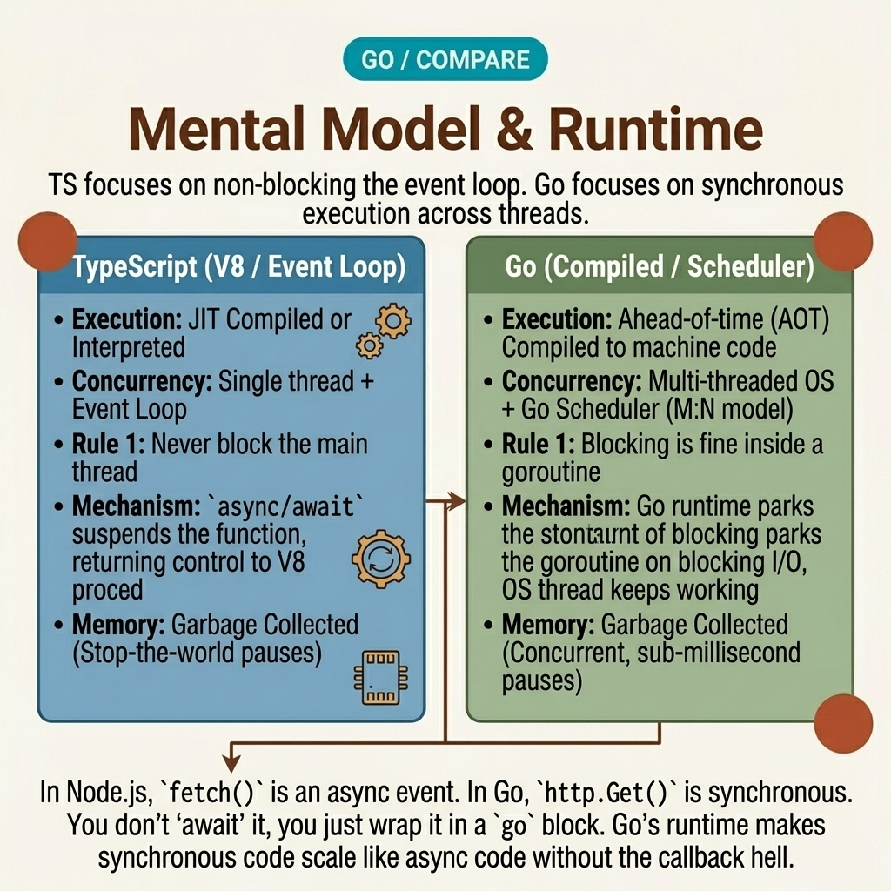
| # | Mức độ nghiêm trọng | Lỗi | Hậu quả | Sửa chữa |
|---|---|---|---|---|
| 1 | 🔴 Gây tử vong | Xử lý giá trị 0 làm đối tượng kinh doanh mặc định | Thực thể/config biên dịch nhưng vi phạm bất biến | Sử dụng hàm tạo hoặc Validate() để phân tách tính hợp lệ của cú pháp khỏi tính hợp lệ của miền |
| 2 | 🟡 Chung | Đưa hệ thống phân cấp lớp hoặc vùng chứa DI từ TypeScript sang Go | Mã nặng về tính trừu tượng, khó đọc, khó gỡ lỗi và không có tính thành ngữ | Bắt đầu với struct + nhỏ giao diện (interface) + hàm tạo rõ ràng |
| 3 | 🔵 Nhỏ | Trộn giá trị và con trỏ receivers không có chủ ý | Đột biến không hoạt động như mong đợi | Quy ước: các phương thức đột biến và sử dụng structs lớn con trỏ receivers |
| Tài nguyên | Loại | Liên kết | Lưu ý |
|---|---|---|---|
| Cẩm nang TypeScript | Chính thức | https://www.typescriptlang.org/docs/handbook/intro.html | Xác nhận TypeScript là trình đánh máy tĩnh cho JavaScript |
| Có hiệu lực Go | Chính thức | https://go.dev/doc/effectgo | Đường cơ sở thành ngữ cho các ranh giới package , các giao diện (interface) , receivers và sự kết hợp (composition) |
| Go Spec — Bộ phương thức | Chính thức | https://go.dev/ref/spec#Methodsets | Nguồn chân lý phân biệt value receiver vs con trỏ receiver |
Cốt lõi của Mô hình tinh thần & Runtime rất rõ ràng. Các nhánh mở rộng bên dưới giúp bạn đưa sự hiểu biết về Go runtime vào sản xuất với các loại, xử lý lỗi và đồng thời (concurrency) .
| Gia hạn | Khi nào | Cơ sở lý luận | Liên kết |
|---|---|---|---|
| Các loại & mô hình hóa dữ liệu | Khi bắt đầu chuyển DTO, thực thể và cấu hình | Mô hình tư duy đúng phải đi kèm với hình dạng dữ liệu chính xác | [→ 02-types-data-modeling](./02-types-data-modeling.md) |
| Lớp → Struct | Khi bạn muốn dịch các lớp sang structs một-một | Giúp loại bỏ dần sự trừu tượng hóa OOP không cần thiết | [→ 12-class-struct](../helper/12-class-struct.md) |
| Khẳng định kiểu (type assertion) & Embedding | Khi phương thức được đặt, sự hài lòng của giao diện (interface) hoặc embedding vẫn không rõ ràng | Đi sâu hơn vào cơ chế loại đằng sau mô hình tinh thần | [→ 03-Kiểu dữ liệu-assertion-embedding](../types/03-Kiểu dữ liệu-assertion-embedding.md) |
| Bố cục dự án, Dụng cụ, Kiểm tra | Khi bạn hiểu mã Go nhưng không quen với cách các nhóm Go xây dựng và vận chuyển | Phân biệt quy trình làm việc, không chỉ cú pháp | [→ 04-project-layout-tooling](./04-project-layout-tooling-testing.md) |
Điều hướng: [← Previous](./README.md) · [→ Next](./02-types-data-modeling.md)
Bạn đang chuyển API hợp đồng từ TypeScript:
status: "draft" | "paid" | "cancelled"-couponCode?: string-customer: User | Guest-class Order { ... }Nếu cố gắng dịch từng dòng một thành Go , bạn sẽ nhanh chóng rơi vào ba lỗi quen thuộc:
- Biến tất cả các trường tùy chọn thành các con trỏ , khiến mô hình nặng và khó đọc.
- Sử dụng
giao diện (interface){}hoặcmap[string]anyđể mô phỏng các đoàn thể một cách nhanh chóng. - Chèn hành vi miền vào mọi struct như thể bảo toàn mô hình lớp TypeScript. Go không cấm bạn làm như vậy. Nhưng nó cũng không thưởng cho bạn khi làm như vậy. Các mô hình dữ liệu tốt trong Go thường nhỏ, rõ ràng và mã hóa ranh giới rõ ràng: DTO là DTO, miền là miền, tính bền vững là tính bền vững.
1.1 Kiểu gõ cấu trúc của TypeScript và kiểu được đặt tên của Go khác nhau như thế nào?
TypeScript rất mạnh trong việc suy ra khả năng tương thích hình dạng giữa các đối tượng. Điều đó cực kỳ hữu ích cho các cơ sở mã nặng về giao diện người dùng và API nặng. Go ưu tiên các loại, bộ phương thức và khả năng hiển thị trường được đặt tên rõ ràng hơn. Các giao diện (interface) trong Go hoàn toàn được thỏa mãn — struct chỉ cần các phương pháp phù hợp.
Một quy tắc thực dụng:
- Nếu dữ liệu vượt qua ranh giới mạng hoặc tệp: sử dụng struct với thẻ rõ ràng.
- Nếu giá trị có ý nghĩa miền riêng: tạo loại được đặt tên thay vì để trống
string. - Nếu trạng thái có tập hữu hạn: sử dụng
Kiểu dữ liệu Status string+ hằng số + xác thực.
1.2 Tùy chọn, nullable, giá trị 0: ba thứ này không phải là một.
Trong TypeScript, field?: string , field: string | null và field: string | undefined thường được sử dụng khá linh hoạt. Trong Go , bạn nên phân tách rõ ràng:
- Trường bắt buộc nhưng có giá trị 0 hợp lệ: sử dụng trực tiếp loại giá trị.
- Trường thực sự là tùy chọn ở ranh giới: sử dụng con trỏ hoặc trình bao bọc tùy chỉnh.
- Trường bắt buộc trong miền nhưng tùy chọn trong đầu vào: DTO có thể sử dụng con trỏ , miền không thể.
Đừng để toàn bộ mô hình biến thành một khu rừng con trỏ chỉ vì đầu vào JSON cho phép nó để trống.
1.3 Các kiểu bất biến và lỗi
nil mapcó thể đọc được, nhưng viết sẽ panic .nil slicean toàn hơnnil map; nối thêm, hành vi JSON sẽ khác nhau tùy thuộc vào mục đích của API.map[string]anyvàgiao diện (interface){}là cách thoát nhanh nhưng cũng là cách nhanh nhất để mang tính năng gõ động trở lại.
Trước khi viết một struct khác, hãy xem vấn đề này như một phép chuyển đổi dữ liệu pipeline .
Mã nguồn & Các ví dụ minh họa
couponCode có thể vắng mặt trong JSON, nhưng miền Order không cần phải bao gồm tất cả các tùy chọn đó.Phiên bản TypeScript của bạn thường có sẵn ở ranh giới API:``typescript
Kiểu dữ liệu CreateOrderRequest = {
id: string;
amount: number;
couponCode?: string;
};
class Order { constructor( readonly id: string, readonly amount: number, readonly couponCode: string = "", ) { if (!id) throw new Lỗi biên dịch / Runtime("id is required"); if (amount <= 0) throw new Lỗi biên dịch / Runtime("amount must be positive"); } }
const req: CreateOrderRequest = { id: "ord-1", amount: 1200 };
const order = new Order(req.id, req.amount, req.couponCode ?? "");
console.log(order);
`Phiên bản Go tương ứng:> Takeaway: Tính tùy chọn là mối quan tâm về ranh giới. Các đối tượng miền phải bất biến hơn các đối tượng ranh giới.
Ranh giới đã tách xong. Nhưng nếu trạng thái vẫn còn trống string` , thì bất biến vẫn bị rò rỉ ở một nơi khác.
package main
import (
"encoding/json"
"fmt"
)
type CreateOrderRequest struct {
ID string `json:"id"`
Amount int64 `json:"amount"`
CouponCode *string `json:"couponCode,omitempty"`
}
type Order struct {
ID string
Amount int64
CouponCode string
}
func NewOrder(req CreateOrderRequest) (Order, error) {
if req.ID == "" {
return Order{}, fmt.Errorf("id is required")
}
if req.Amount <= 0 {
return Order{}, fmt.Errorf("amount must be positive")
}
order := Order{ID: req.ID, Amount: req.Amount}
if req.CouponCode != nil {
order.CouponCode = *req.CouponCode
}
return order, nil
}
func main() {
raw := []byte(`{"id":"ord-1","amount":1200}`)
var req CreateOrderRequest
if err := json.Unmarshal(raw, &req); err != nil {
panic(err)
}
order, err := NewOrder(req)
if err != nil {
panic(err)
}
fmt.Printf("%+v\n", order)
}string trống đối với các giá trị trạng thái có tập hợp hữu hạn các tùy chọn hợp lệ.
Phương pháp tiếp cận: Sử dụng loại chuỗi được đặt tên với các hằng số và phương thức Validate() .
Ví dụ: OrderStatus thay vì "draft" | "paid" | "cancelled" .Các phiên bản TypeScript thường bắt đầu từ một sự kết hợp theo nghĩa đen:``typescript
Kiểu dữ liệu OrderStatus = "draft" | "paid" | "cancelled";
Kiểu dữ liệu Order = { id: string; status: OrderStatus; };
function createOrder(id: string, status: OrderStatus): Order { if (!id) { throw new Lỗi biên dịch / Runtime("id is required"); } return { id, status }; }
console.log(createOrder("ord-2", "paid")); ``Phiên bản Go tương ứng:> Tại sao? Các kết hợp theo nghĩa đen của TypeScript cung cấp cho bạn các ràng buộc biên dịch- time một cách rất tự nhiên. Trong Go , loại được đặt tên + hằng số + xác thực là cách đơn giản nhất để duy trì cùng một mục đích mà không cần kỹ thuật quá mức. Nó rõ ràng hơn và có quy mô tốt.
string là một trách nhiệm đắt đỏ khi cơ sở mã phát triển.Tại thời điểm này, hình dạng dữ liệu nhiều hơn solid . Phần còn lại là khi một giá trị có nhiều biến thể hành vi chứ không chỉ nhiều trường.
package main
import "fmt"
type OrderStatus string
const (
StatusDraft OrderStatus = "draft"
StatusPaid OrderStatus = "paid"
StatusCancelled OrderStatus = "cancelled"
)
func (s OrderStatus) Validate() error {
switch s {
case StatusDraft, StatusPaid, StatusCancelled:
return nil
default:
return fmt.Errorf("invalid order status %q", s)
}
}
type Order struct {
ID string
Status OrderStatus
}
func NewOrder(id string, status OrderStatus) (Order, error) {
if id == "" {
return Order{}, fmt.Errorf("id is required")
}
if err := status.Validate(); err != nil {
return Order{}, err
}
return Order{ID: id, Status: status}, nil
}
func main() {
order, err := NewOrder("ord-2", StatusPaid)
if err != nil {
panic(err)
}
fmt.Printf("%+v\n", order)
}map[string]any .
Phương pháp tiếp cận: Sử dụng các giao diện (interface) nhỏ cho hành vi thông thường, sau đó nhập công tắc khi cần các nhánh cụ thể.
Ví dụ: Customer có thể là khách hoặc người dùng đã đăng ký.Phiên bản TypeScript với sự kết hợp phân biệt đối xử:``typescript
Kiểu dữ liệu GuestCustomer = {
kind: "guest";
email: string;
};
Kiểu dữ liệu RegisteredCustomer = { kind: "registered"; id: string; email: string; };
Kiểu dữ liệu Customer = GuestCustomer | RegisteredCustomer;
function shippingRule(customer: Customer): string {
switch (customer.kind) {
case "guest":
return guest checkout for ${customer.email};
case "registered":
return saved profile checkout for ${customer.email};
}
}
``Phiên bản Go tương ứng:> Tại sao? Các kết hợp phân biệt đối xử của TypeScript rất mạnh mẽ nhờ việc thu hẹp luồng điều khiển. Go không có cùng cơ chế, do đó, mẫu thực tế nhất là một giao diện (interface) nhỏ dành cho hành vi phổ biến và chuyển đổi loại tại chính xác các điểm mà bạn cần logic dành riêng cho biến thể.
package main
import "fmt"
type Customer interface {
Label() string
IsGuest() bool
}
type GuestCustomer struct {
Email string
}
func (g GuestCustomer) Label() string { return "guest:" + g.Email }
func (g GuestCustomer) IsGuest() bool { return true }
type RegisteredCustomer struct {
ID string
Email string
}
func (r RegisteredCustomer) Label() string { return "user:" + r.ID }
func (r RegisteredCustomer) IsGuest() bool { return false }
func shippingRule(c Customer) string {
switch v := c.(type) {
case GuestCustomer:
return "guest checkout for " + v.Email
case RegisteredCustomer:
return "saved profile checkout for " + v.Email
default:
return "unsupported customer"
}
}
func main() {
customers := []Customer{
GuestCustomer{Email: "guest@example.com"},
RegisteredCustomer{ID: "u-1", Email: "mina@example.com"},
}
for _, c := range customers {
fmt.Println(c.Label(), "->", shippingRule(c))
}
}Sơ đồ trực quan & Luồng hoạt động (Visual Support)
Điểm nguy hiểm nhất của mô hình hóa dữ liệu không nằm ở cú pháp mà nằm ở việc trộn lẫn ranh giới và bất biến. Sơ đồ dưới đây phân tách chúng.
Cấp 1
``text
TypeScript input shape
-> DTO / schema
-> domain object
-> persistence shape
Go input shape
-> request DTO struct
-> validation / translation
-> domain struct with invariants
-> storage DTO or row model
Hình: Cấp độ 1 nhấn mạnh rằng Go khuyến khích bạn dịch dữ liệu qua các ranh giới thay vì giữ nguyên hình dạng "sử dụng ở mọi nơi"..
Cấp 2
`text
TS Khái niệm cốt lõi Go mapping
------------------------------------------------------------
optional field con trỏ field or separate DTO layer
string literal union named string Kiểu dữ liệu + const + Validate
class with methods struct + methods or service around struct
discriminated union giao diện (interface) + concrete structs + lựa chọn theo kiểu (type switch)
Record map[string]T
readonly domain field unexported field + constructor/getter
``Hình ảnh: Cấp độ 2 không phải là bảng dịch một-một tuyệt đối; đây là điểm khởi đầu an toàn để tránh chuyển quá mức cú pháp..
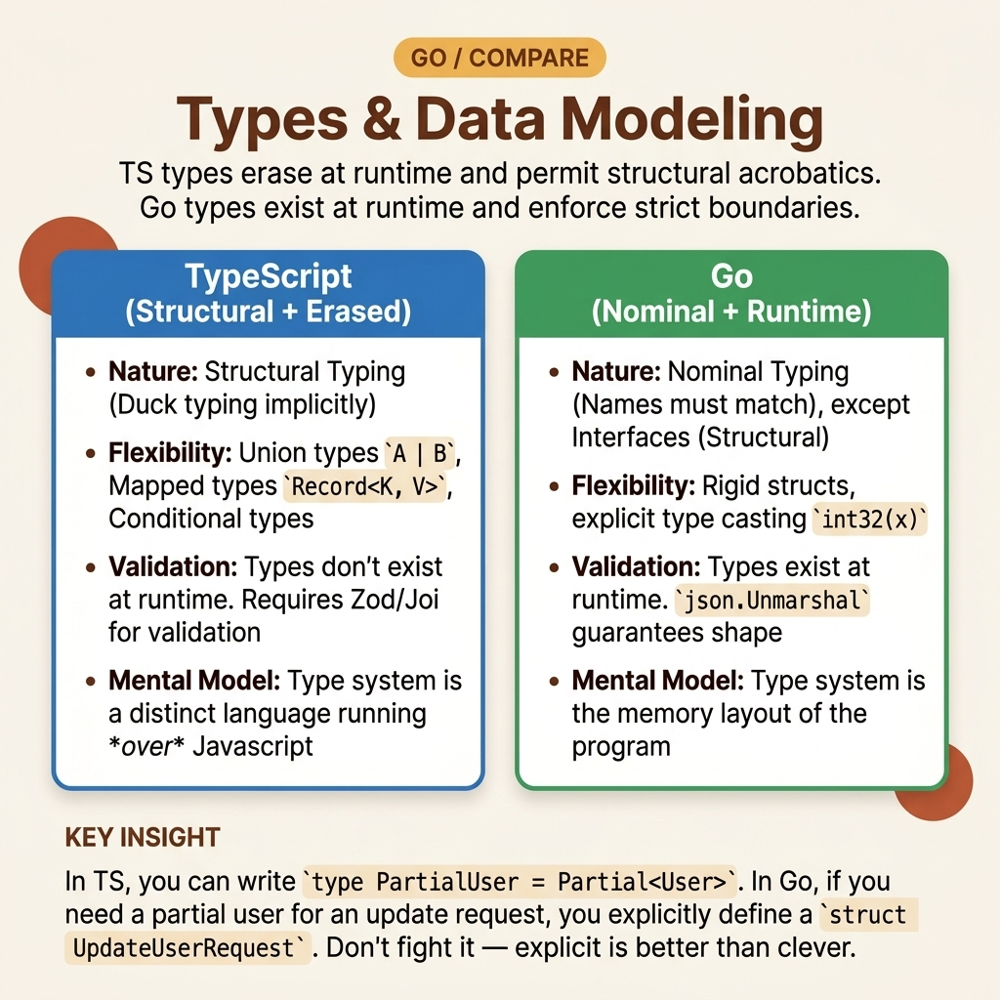
Đây là lúc nhiều cổng vẫn có vẻ tốt trên PR nhưng bắt đầu bị lỗi sau một vài lần chạy nước rút.
Lỗi không đến từ cú pháp. Nó xuất phát từ một mô hình không chính xác về mặt ngữ nghĩa.
| # | Mức độ nghiêm trọng | Lỗi | Hậu quả | Sửa chữa |
|---|---|---|---|---|
| 1 | 🔴 Gây tử vong | Sử dụng map[string]any để mô phỏng nhanh các đoàn thể/đối tượng linh hoạt | Mất bảo đảm biên dịch- time , lỗi khẳng định kiểu (type assertion) gia tăng | Chỉ sử dụng maps động tại các ranh giới khử lưu huỳnh; tạo các loại được đặt tên ở mọi nơi khác |
| 2 | 🟡 Chung | Biến mọi trường tùy chọn thành con trỏ | Mô hình nặng, kiểm tra mã nil ở mọi nơi | Chỉ sử dụng các con trỏ cho tùy chọn có ý nghĩa ở ranh giới; miền chứa các trường bắt buộc một cách rõ ràng |
| 3 | 🔵 Nhỏ | Sử dụng string trần cho trạng thái, vai trò, loại | Trạng thái không hợp lệ xâm nhập sâu vào hệ thống, phát hiện lỗi muộn | Tạo loại được đặt tên + hằng số + xác thực |
| Tài nguyên | Loại | Liên kết | Lưu ý |
|---|---|---|---|
| Khả năng tương thích loại | Chính thức | https://www.typescriptlang.org/docs/handbook/Kiểu dữ liệu-compatibility.html | Nền tảng gõ cấu trúc của TypeScript |
| Go Spec — Loại | Chính thức | https://go.dev/ref/spec#Types | Nguồn đáng tin cậy cho các loại được đặt tên, trường struct , khả năng gán và loại tổng hợp |
| Go Blog — JSON và Go | Chính thức | https://go.dev/blog/json | Tài liệu tham khảo tốt về ranh giới DTO, thẻ, tùy chọn và hành vi tuần tự hóa |
Phần cốt lõi của Loại & mô hình hóa dữ liệu rất rõ ràng. Các nhánh mở rộng bên dưới giúp bạn đưa hệ thống loại Go vào sản xuất khi có lỗi, đồng thời (concurrency) và bố cục dự án.
Ở đó, các mô hình dữ liệu tốt hay xấu bắt đầu hiển thị dưới tải thực.
| Gia hạn | Khi nào | Cơ sở lý luận | Liên kết |
|---|---|---|---|
| Slices , Maps , Chuỗi | Khi bạn cần hiểu ngữ nghĩa bộ sưu tập của Go ở cấp độ runtime | Nền tảng cho sự tăng trưởng slice , hành vi map và nội bộ chuỗi | [→ 01-slices-maps-strings](../types/01-slices-maps-strings.md) |
| Các loại Enum & Union | Khi mô hình có máy trạng thái, enum hoặc phân biệt đối xử | Giúp chọn loại, hằng số được đặt tên hoặc giao diện (interface) + lựa chọn theo kiểu (type switch) | [→ 06-enum-union-types](../helper/06-enum-union-types.md) |
| Tùy chọn & Nullable | Khi đầu vào có undefined , null , cập nhật một phần hoặc các trường DB có thể rỗng | Giúp chọn con trỏ , giá trị 0 hoặc loại trình bao bọc có chủ ý | [→ 11-optional-nullable](../helper/11-optional-nullable.md) |
| Xử lý lỗi | Sau khi mô hình dữ liệu bị khóa và bạn bắt đầu viết luồng miền | Bất biến tốt phải có mô hình lỗi rõ ràng | [→ 07-Lỗi biên dịch / Runtime-handling](../helper/07-Lỗi biên dịch / Runtime-handling.md) |
| Lỗi, Đồng thời (concurrency) , Ngữ cảnh | Khi DTO/domain là solid và dịch vụ bắt đầu gọi I/O song song | Trường hợp mô hình dữ liệu đáp ứng ngữ nghĩa runtime | [→ 03-errors-đồng thời (concurrency)-context](./03-errors-đồng thời (concurrency)-context.md) |
| Lớp → Struct | Khi mô hình dữ liệu vẫn còn quá nặng nề | Giúp giảm sự trừu tượng không cần thiết | [→ 12-class-struct](../helper/12-class-struct.md) |
Điều hướng: [← Previous](./01-mental-model-runtime.md) · [→ Next](./03-errors-đồng thời (concurrency)-context.md)
Bạn có một dịch vụ TypeScript thực hiện chính xác những gì bạn muốn:
- Gọi 3 API cùng lúc bằng
Promise.all. - Hết thời gian chờ với
AbortController-throwkhi hạ lưu bị lỗi catchở lớp bên ngoài và sau đó map thành phản hồi HTTP.
Khi chuyển sang Go , hầu hết các kỹ sư nghĩ rằng họ chỉ cần:
await-><-ch-Promise.all-> vài các goroutine -throw->panicĐó là cú trượt nguy hiểm nhất. Trong Go , lỗi không phải là một luồng ngoại lệ. Việc hủy bỏ không tự lan truyền trừ khi bạn vượt quacontext.Context. Các goroutine không tự giới hạn, không tự dọn dẹp và không dừng lại trừ khi bạn thiết kế một lối thoát rõ ràng.
1.1 Lỗi trong Go là dữ liệu, không phải runtime tác dụng phụ.
TypeScript có thể sử dụng throw hoặc từ chối Promise làm đường dẫn luồng điều khiển hợp lệ. Go ưu tiên trả về Lỗi biên dịch / Runtime một cách rõ ràng tại mỗi ranh giới. Điều này có vẻ dài dòng hơn nhưng nó làm cho đường dẫn lỗi và siêu dữ liệu liên quan dễ dàng theo dõi hơn nhiều.
Quy tắc thực dụng:
- Lỗi kinh doanh hoặc I/O:
return err. - Bất biến bị người gọi phá vỡ và không thể tiếp tục: xét panic ở ranh giới rất hẹp.
- Mã thư viện: hầu như luôn luôn là
return err, rất hiếm khipanic.
1.2 Đồng thời (concurrency) trong Go mạnh hơn Promise , nhưng cũng dễ tạo rò rỉ hơn.
TypeScript async về cơ bản là sự phối hợp I/O không chặn trên event loop . Go mang lại cho bạn các goroutine rất rẻ, nhưng rẻ không có nghĩa là miễn phí. Any goroutine không có đường dừng rõ ràng có thể trở thành rò rỉ.
Do đó, khi chuyển mã từ TypeScript:
Promise.allthường là maps đểerrgroup.AbortControllerthường là maps đếncontext.WithCancelhoặcWithTimeout.Promise.racethường là maps đếnselect.- Bắn và quên hầu như luôn cần được xem xét lại.
1.3 Các kiểu bất biến và lỗi
- Không chuyển
contextxuống phần phụ thuộc có nghĩa là thời gian chờ/hủy ở lớp trên gần như vô dụng. - Goroutine gửi tới kênh (channel) mà không có người tiêu dùng sẽ bị chặn vĩnh viễn.
- Sử dụng
panicthay vì lan truyền lỗi trong mã dịch vụ sẽ khiến việc gỡ lỗi sự cố trở nên tồi tệ hơn chứ không tốt hơn.
Tóm lại: cổng cú pháp nhanh. Cổng vòng đời chậm.
Và chính cái phần chậm chạp đó mới quyết định sự việc.
Mã nguồn & Các ví dụ minh họa
return err + với ngữ cảnh ở mỗi ranh giới.
Phương pháp tiếp cận: Phân tích cú pháp riêng biệt, xác thực và duy trì. Mỗi lớp thêm ngữ cảnh vào lỗi.
Ví dụ: Tạo người dùng có thông tin nhập không hợp lệ hoặc lỗi lưu trữ.Các phiên bản TypeScript phổ biến:``typescript
Kiểu dữ liệu User = { email: string };
function parseEmail(rawEmail: string): string { if (!rawEmail) { throw new Lỗi biên dịch / Runtime("email is empty"); } return rawEmail; }
async function saveUser(email: string): Promise
async function createUser(rawEmail: string): Promise);
}
}
``Phiên bản Go tương ứng:> Takeaway: Trong Go , mức độ chi tiết phù hợp mang lại cho bạn khả năng gỡ lỗi với chi phí thấp vào lúc 3 giờ sáng.
Việc gói lỗi đúng cách sẽ giúp bạn biết chuyện gì đang xảy ra. Việc sản xuất cũng yêu cầu bạn phải dừng những nhánh không nên tiếp tục.
package main
import "fmt"
type User struct {
Email string
}
func parseEmail(raw string) (string, error) {
if raw == "" {
return "", fmt.Errorf("email is empty")
}
return raw, nil
}
func saveUser(email string) error {
if email == "downstream@fail.local" {
return fmt.Errorf("storage unavailable")
}
return nil
}
func createUser(rawEmail string) (User, error) {
email, err := parseEmail(rawEmail)
if err != nil {
return User{}, fmt.Errorf("create user: parse email: %w", err)
}
if err := saveUser(email); err != nil {
return User{}, fmt.Errorf("create user: save user %q: %w", email, err)
}
return User{Email: email}, nil
}
func main() {
user, err := createUser("mina@example.com")
if err != nil {
panic(err)
}
fmt.Println(user.Email)
}errgroup.WithContext để thu thập lỗi và tuyên truyền việc hủy bỏ.
Ví dụ: Tải song song hồ sơ, số dư và hóa đơn trong vòng 500ms.Phiên bản TypeScript quen thuộc:``typescript
async function fetchPart(name: string, delayMs: number, signal: AbortSignal): Promise
if (name === "balance") {
throw new Lỗi biên dịch / Runtime(${name} service timeout);
}
return ${name}:ok;
}
async function loadDashboard(): Promise
try { const [profile, balance, invoices] = await Promise.all([ fetchPart("profile", 200, controller.signal), fetchPart("balance", 200, controller.signal), fetchPart("invoices", 200, controller.signal), ]);
return { profile, balance, invoices };
} finally {
clearTimeout(timeout);
}
}
`Phiên bản Go tương ứng:> Tại sao? Đây là cách tương đương gần nhất với Promise.all , nhưng có một điểm khác biệt quan trọng về mặt sản xuất: errgroup` liên kết fan-out với bối cảnh được chia sẻ. Nếu một nhánh bị lỗi, các nhánh còn lại có thể bị hủy và dừng sớm thay vì tiếp tục một cách vô nghĩa.
Promise.all , hãy nghĩ ngay đến errgroup + context , chứ không phải "3 các goroutine và hy vọng điều tốt nhất".Fail-fast có sẵn. Nhưng nếu lô tăng lên 1.000 công việc, câu hỏi sẽ thay đổi thành: bạn cho phép chạy bao nhiêu công việc cùng một lúc?
package main
import (
"context"
"fmt"
"sync"
"time"
"golang.org/x/sync/errgroup"
)
func fetch(ctx context.Context, name string, d time.Duration) (string, error) {
select {
case <-time.After(d):
if name == "balance" {
return "", fmt.Errorf("%s service timeout", name)
}
return name + ":ok", nil
case <-ctx.Done():
return "", ctx.Err()
}
}
func loadDashboard(ctx context.Context) (map[string]string, error) {
ctx, cancel := context.WithTimeout(ctx, 500*time.Millisecond)
defer cancel()
results := map[string]string{}
var mu sync.Mutex
g, ctx := errgroup.WithContext(ctx)
for _, name := range []string{"profile", "balance", "invoices"} {
name := name
g.Go(func() error {
val, err := fetch(ctx, name, 200*time.Millisecond)
if err != nil {
return fmt.Errorf("fetch %s: %w", name, err)
}
mu.Lock()
results[name] = val
mu.Unlock()
return nil
})
}
if err := g.Wait(); err != nil {
return nil, err
}
return results, nil
}
func main() {
out, err := loadDashboard(context.Background())
fmt.Println("results:", out)
fmt.Println("error:", err)
}ctx.Done() và đóng các kênh (channel) bằng kỷ luật.
Ví dụ: Xử lý 6 công việc với tối đa 2 công nhân.Phiên bản TypeScript với nhóm giới hạn rõ ràng:``typescript
async function runWorkerPool(jobs: number[], workerCount: number): Promise
async function worker(id: number) {
while (nextIndex < jobs.length) {
const job = jobs[nextIndex++];
await new Promise((resolve) => setTimeout(resolve, 50));
results.push(worker-${id} handled job-${job});
}
}
await Promise.all( Array.from({ length: workerCount }, (_, index) => worker(index + 1)), );
return results; } ``Phiên bản Go tương ứng:> Tại sao? Các nhóm TypeScript đã quen với I/O async rất rẻ, vì vậy họ thường vô thức coi "more đồng thời (concurrency) " là một mặc định tốt. Go cho phép bạn tiến xa hơn nhưng cũng yêu cầu bạn quản lý vòng đời của mọi goroutine .
package main
import (
"context"
"fmt"
"sync"
"time"
)
func worker(ctx context.Context, id int, jobs <-chan int, results chan<- string, wg *sync.WaitGroup) {
defer wg.Done()
for {
select {
case <-ctx.Done():
return
case job, ok := <-jobs:
if !ok {
return
}
time.Sleep(50 * time.Millisecond)
results <- fmt.Sprintf("worker-%d handled job-%d", id, job)
}
}
}
func main() {
ctx, cancel := context.WithTimeout(context.Background(), 300*time.Millisecond)
defer cancel()
jobs := make(chan int)
results := make(chan string)
var wg sync.WaitGroup
for workerID := 1; workerID <= 2; workerID++ {
wg.Add(1)
go worker(ctx, workerID, jobs, results, &wg)
}
go func() {
defer close(jobs)
for i := 1; i <= 6; i++ {
jobs <- i
}
}()
go func() {
wg.Wait()
close(results)
}()
for result := range results {
fmt.Println(result)
}
}Sơ đồ trực quan & Luồng hoạt động (Visual Support)
Bạn chỉ thấy sự khác biệt giữa TypeScript và Go khi xem xét vòng đời yêu cầu song song. Hai sơ đồ này cho góc chính xác đó.
Cấp 1
``text
TypeScript request
request
-> async function
-> Promise.all([...])
-> await results
-> catch Lỗi biên dịch / Runtime
Go request
request
-> context.WithTimeout(...)
-> errgroup.WithContext(ctx)
-> g.Go(...) x N
-> g.Wait()
Hình: Cấp 1 cho thấy rằng fan-out Go không chỉ "chạy song song" mà còn là một vòng đời với ngữ cảnh rõ ràng và lỗi fan-in..
Cấp 2
`text
request starts
-> spawn các goroutine
-> one downstream fails
-> cancel shared context
-> siblings must observe ctx.Done()
-> return early
-> g.Wait() closes the loop
``Hình: Cấp độ 2 nhấn mạnh những yếu tố quyết định chất lượng sản xuất: một lỗi ở một nhánh phải cố ý dừng các nhánh còn lại chứ không phải do may mắn..
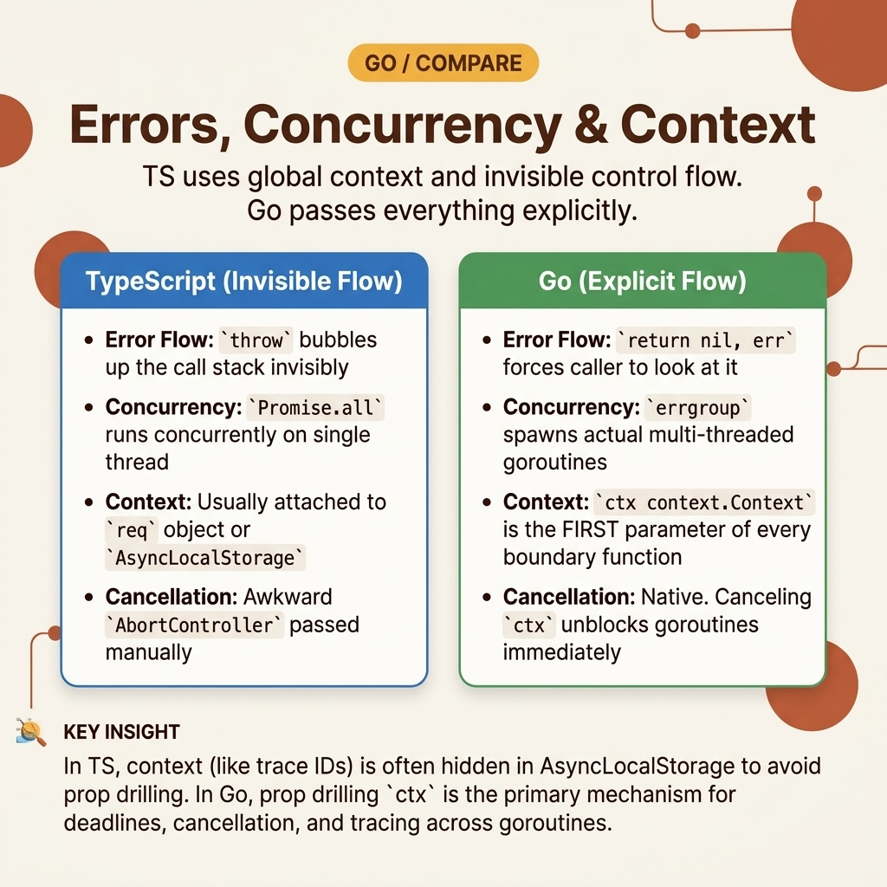
Ba lỗi dưới đây đều có một điểm chung: đánh giá có vẻ hợp lý bằng mắt thường.
Chúng chỉ hiển thị khi hết thời gian chờ, thử lại và lưu lượng truy cập đến cùng một time .
| # | Mức độ nghiêm trọng | Lỗi | Hậu quả | Sửa chữa |
|---|---|---|---|---|
| 1 | 🔴 Gây tử vong | Sử dụng panic làm throw trong dịch vụ luồng thông thường | Sự cố goroutine hoặc xử lý, mất ranh giới ngữ cảnh bên phải | Trả về Lỗi biên dịch / Runtime , lỗi gói, panic chỉ trong bất biến hẹp hoặc khởi động quy trình |
| 2 | 🟡 Chung | Sinh sản goroutine không có context hoặc điều kiện dừng | Goroutine bị rò rỉ, khiến kết nối/mở tệp không còn tác dụng | Vượt ctx xuyên suốt và luôn thiết kế lối thoát hiểm |
| 3 | 🔵 Nhỏ | Sử dụng kênh (channel) khi errgroup hoặc giá trị trả về là đủ | Mã khó đọc và khó suy luận hơn mức cần thiết | Bắt đầu từ nguyên thủy đơn giản nhất; Chỉ thêm các kênh (channel) khi có nhu cầu phát trực tuyến/điều phối thực sự |
| Tài nguyên | Loại | Liên kết | Lưu ý |
|---|---|---|---|
| Go cho Dịch vụ Mạng & Đám mây | Chính thức | https://go.dev/solutions/cloud | Nguồn chính thức cho Go đồng thời (concurrency) , dịch vụ, dụng cụ |
context package | Chính thức | https://pkg.go.dev/context | Nguồn sự thật về việc hủy, hết thời gian và thời hạn |
| Hiệu lực Go — Lỗi | Chính thức | https://go.dev/doc/effect_go#errors | Quy ước tiêu chuẩn cho việc xử lý lỗi trả về, bao bọc và xử lý ranh giới Lỗi biên dịch / Runtime |
Cốt lõi của Lỗi, Đồng thời (concurrency) & Ngữ cảnh rất rõ ràng. Các nhánh tiện ích mở rộng bên dưới giúp bạn đưa việc xử lý lỗi và đồng thời (concurrency) vào sản xuất với bố cục, công cụ và thử nghiệm dự án.
Phần tiếp theo là biến sự phản ánh đó thành mô hình nhóm có thể được sử dụng hàng ngày.
| Gia hạn | Khi nào | Cơ sở lý luận | Liên kết |
|---|---|---|---|
| Promise & Async | Khi nhóm vẫn còn suy nghĩ về các tổ hợp Promise.all , AbortController hoặc async | Công thức ánh xạ gần nhất sau khi hiểu kiểm soát vòng đời của Go | [→ 04-promise-async](../helper/04-promise-async.md) |
| Xử lý lỗi | Khi throw , try/catch và gói strategy vẫn còn khó hiểu | Kết nối trực tiếp từ mô hình lỗi TypeScript tới chuỗi lỗi Go | [→ 07-Lỗi biên dịch / Runtime-handling](../helper/07-Lỗi biên dịch / Runtime-handling.md) |
| Kiểm tra dựa trên bảng & Giả lập (mocking) | Khi luồng async là solid và bạn cần làm cứng nó bằng các bài kiểm tra | Nhịp điệu thử nghiệm Go khác biệt đáng kể so với TS/Jest | [→ 01-table-driven-giả lập (mocking)](../testing/01-table-driven-giả lập (mocking).md) |
| Bố cục dự án, Dụng cụ, Kiểm tra | Khi nhóm bắt đầu chuẩn hóa cơ sở mã mới | Lỗi đúng/ đồng thời (concurrency) phải đi kèm với quy trình làm việc đúng | [→ 04-project-layout-tooling](./04-project-layout-tooling-testing.md) |
| Go Đồng thời (concurrency) Tổng quan | Khi bạn muốn đi sâu hơn vào các mẫu goroutine / kênh (channel) | Bước tiếp theo sau khi ánh xạ TS-to- Go | [→ Đồng thời (concurrency) README](../../đồng thời (concurrency)/README.md) |
Điều hướng: [← Previous](./02-types-data-modeling.md) · [→ Next](./04-project-layout-tooling-testing.md)
Nhóm phụ trợ TypeScript hiếm khi nghĩ về ngôn ngữ. Họ nghĩ về mặt:
package.json-tsconfig.json- khung CÔNG CỤ CLI- Jest/Vitest
- ESLint/Đẹp hơn
- runtime trình tải env
Khi chuyển sang Go , cảm giác đầu tiên thường là “thiếu quá nhiều tiện nghi”. Không có DI decorator , không có CÔNG CỤ CLI framework mặc định, không có trình chạy thử nghiệm kiểu Jest với hàng tá trình so khớp, không có hệ thống cấu hình tích hợp như NestJS.
Nhưng đó chỉ là quan điểm của hệ thống cũ. Go đặt cược vào một nguyên tắc khác: chuỗi công cụ tiêu chuẩn + ranh giới package rõ ràng + stdlib đủ rộng. Bạn không cần phải lắp ráp nhiều bộ phận để có dịch vụ sẵn sàng sản xuất.
1.1 Package là đơn vị thiết kế đầu tiên.
Trong TypeScript, cấu trúc thư mục thường bị ảnh hưởng mạnh mẽ bởi framework hoặc công cụ monorepo. Trong các ranh giới Go , package quản lý bề mặt API, khả năng kiểm tra, khả năng hiển thị và khớp nối. Nếu packages được thiết kế tốt thì cơ sở mã vẫn có thể duy trì được.
Quy tắc thực dụng:
cmd/cho điểm vàointernal/biểu thị một triển khai không muốn được xuất bên ngoài module .- Packages nên nhỏ gọn, đặt tên rõ ràng, tránh mơ hồ
utils,common,helpers.
1.2 Toolchain là một phần của ngôn ngữ.
Đây là điểm mà nhiều kỹ sư TypeScript đánh giá thấp Go :
go fmt/gofmt: định dạng chuẩn gần như là bắt buộc.go test: unit test , benchmark , fuzz trong một công cụ.go mod: quản lý phụ thuộc tích hợp.go vet: kiểm tra tĩnh mặc định.
Bạn tốn ít time tranh luận về kiểu dáng và cách kết hợp công cụ hơn và time nhiều hơn cho logic thực.
1.3 Các kiểu bất biến và lỗi
- Nếu bạn xây dựng vùng chứa DI quá sớm, đó thường là dấu hiệu cho thấy bạn đang đưa các hình dạng phụ thuộc khung cũ vào Go .
- Nếu bạn nhóm quá nhiều packages vào
internal/common, bạn vừa tạo một "ngăn kéo rác chung" mới. - Nếu bạn chống lại
gofmt, đội của bạn đang chiến đấu trong một cuộc chiến không đáng để chiến thắng.
Ít công cụ hơn không có nghĩa là ít kỷ luật hơn.
Nó chỉ đẩy kỷ luật đến mức mặc định.
Mã nguồn & Các ví dụ minh họa
Clock giao diện (interface) nhỏ và đưa nó vào dịch vụ bằng cách sử dụng NewService .
Ví dụ: BillingService cần time hiện tại để đóng hóa đơn.Phiên bản TypeScript được nhiều nhóm quen thuộc:``typescript
giao diện (interface) Clock {
now(): Date;
}
class RealClock implements Clock { now(): Date { return new Date(); } }
class BillingService { constructor(private readonly clock: Clock) {}
closeInvoice(id: string): string {
return invoice ${id} closed at ${this.clock.now().toISOString()};
}
}
const service = new BillingService(new RealClock()); console.log(service.closeInvoice("inv-1")); ``Phiên bản Go tương ứng:> Takeaway: Trong Go , hàm tạo rõ ràng thường đủ cho 80% trường hợp sử dụng. Các vùng chứa DI phải được cân nhắc lại, không phải là mặc định vào ngày đầu tiên.
Hệ thống dây điện xây dựng giải quyết bề mặt phụ thuộc. Chất lượng quy trình làm việc chỉ hiển thị khi quá trình kiểm tra bắt đầu chồng chất.
package main
import (
"fmt"
"time"
)
type Clock interface {
Now() time.Time
}
type RealClock struct{}
func (RealClock) Now() time.Time { return time.Now() }
type BillingService struct {
clock Clock
}
func NewBillingService(clock Clock) BillingService {
return BillingService{clock: clock}
}
func (s BillingService) CloseInvoice(id string) string {
return fmt.Sprintf("invoice %s closed at %s", id, s.clock.Now().Format(time.RFC3339))
}
func main() {
service := NewBillingService(RealClock{})
fmt.Println(service.CloseInvoice("inv-1"))
}Phiên bản TypeScript với ma trận thử nghiệm:``typescript
import { describe, expect, it } from "vitest";
function parseTimeout(raw: string): number { const seconds = Number.parseInt(raw, 10); if (Number.isNaN(seconds)) { throw new Lỗi biên dịch / Runtime("invalid timeout"); } return seconds * 1000; }
describe("parseTimeout", () => { const cases = [ { name: "valid", input: "5", want: 5000 }, { name: "zero", input: "0", want: 0 }, { name: "invalid", input: "abc", wantError: true }, ];
it.each(cases)("$name", ({ input, want, wantError }) => { if (wantError) { expect(() => parseTimeout(input)).toThrowError(); return; } expect(parseTimeout(input)).toBe(want); }); }); ``Phiên bản Go tương ứng:> Tại sao? Các bài kiểm tra TypeScript thường dựa vào DSL đối sánh và công thái học của khung. Các bài kiểm tra Go tối giản hơn, nhưng bù lại rất gần với logic thực và dễ đọc. Các bài kiểm tra dựa trên bảng có quy mô tốt cho các nhóm.
Kiểm tra đơn vị làm rõ logic. Nhưng nhóm chỉ tin tưởng vào quy trình làm việc mới khi lớp HTTP cũng có thể được kiểm tra mà không cần thêm một nửa khung.
package config
import (
"strconv"
"testing"
"time"
)
func parseTimeout(raw string) (time.Duration, error) {
seconds, err := strconv.Atoi(raw)
if err != nil {
return 0, err
}
return time.Duration(seconds) * time.Second, nil
}
func TestParseTimeout(t *testing.T) {
tests := []struct {
name string
input string
want time.Duration
wantErr bool
}{
{name: "valid", input: "5", want: 5 * time.Second},
{name: "zero", input: "0", want: 0},
{name: "invalid", input: "abc", wantErr: true},
}
for _, tc := range tests {
tc := tc
t.Run(tc.name, func(t *testing.T) {
got, err := parseTimeout(tc.input)
if tc.wantErr && err == nil {
t.Fatalf("expected error, got nil")
}
if !tc.wantErr && err != nil {
t.Fatalf("unexpected error: %v", err)
}
if got != tc.want {
t.Fatalf("got %v, want %v", got, tc.want)
}
})
}
}httptest.NewServer để kiểm tra các trình xử lý toàn diện trong quá trình xử lý.
Ví dụ: Trả về điểm cuối sức khỏe 200 ok .Phiên bản TypeScript thường đi kèm với framework stack test:``typescript
import express from "express";
import request from "supertest";
import { describe, expect, it } from "vitest";
const app = express(); app.get("/health", (_req, res) => { res.status(200).send("ok"); });
describe("GET /health", () => { it("returns ok", async () => { const response = await request(app).get("/health"); expect(response.status).toBe(200); expect(response.text).toBe("ok"); }); }); ``Phiên bản Go tương ứng:> Tại sao? Các nhóm TypeScript thường tiếp cận Supertest, framework test modules và mock server packages từ rất sớm. Go stdlib đã có hầu hết những gì bạn cần. Đây là lý do tại sao nhiều dịch vụ Go có cây phụ thuộc nhỏ hơn đáng kể.
package main
import (
"io"
"net/http"
"net/http/httptest"
"testing"
)
func healthHandler(w http.ResponseWriter, r *http.Request) {
w.WriteHeader(http.StatusOK)
_, _ = w.Write([]byte("ok"))
}
func TestHealthHandler(t *testing.T) {
server := httptest.NewServer(http.HandlerFunc(healthHandler))
defer server.Close()
resp, err := http.Get(server.URL)
if err != nil {
t.Fatalf("http get: %v", err)
}
defer resp.Body.Close()
body, err := io.ReadAll(resp.Body)
if err != nil {
t.Fatalf("read body: %v", err)
}
if resp.StatusCode != http.StatusOK {
t.Fatalf("got status %d, want %d", resp.StatusCode, http.StatusOK)
}
if string(body) != "ok" {
t.Fatalf("got body %q, want %q", body, "ok")
}
}Sơ đồ trực quan & Luồng hoạt động (Visual Support)
Sự khác biệt lớn nhất giữa quy trình làm việc Go và quy trình làm việc TypeScript không nằm ở số lượng công cụ mà ở việc quyết định các giá trị mặc định tốt. Biểu đồ dưới đây cho thấy điều đó.
Cấp 1
``text
TypeScript backend workflow
nguồn dữ liệu
-> tsconfig
-> framework conventions
-> test runner
-> lint + format stack
-> node runtime
Go backend workflow
nguồn dữ liệu
-> gofmt
-> go test
-> go build
-> native binary
-> stdlib-first deployment
Hình: Cấp 1 cho thấy rằng Go gộp nhiều quyết định vào chuỗi công cụ mặc định hơn là phần phụ trợ TypeScript điển hình stack ..
Cấp 2
`text
good Go project
-> package boundaries clear
-> entrypoints tường minh (explicit)
-> constructors tường minh (explicit)
-> tests live next to code
-> formatting non-negotiable
``Hình: Cấp độ 2 nhấn mạnh rằng khả năng bảo trì trong Go đến từ cấu trúc và kỷ luật mặc định nhiều hơn là từ sự trừu tượng hóa khung..
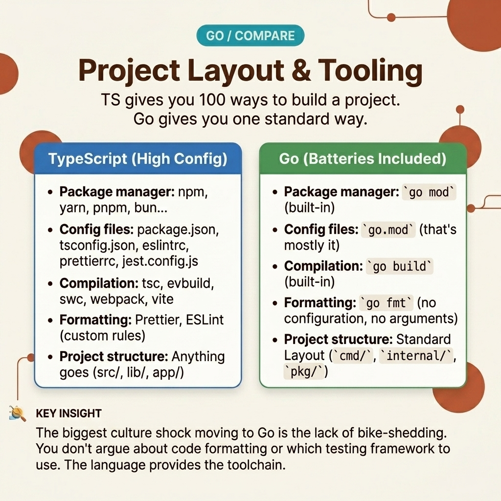
Sai lầm của các đội mới tham gia Go hiếm khi đến từ việc thiếu packages .
Nó thường xuất phát từ việc cố gắng tái tạo lại hệ sinh thái cũ bằng một cái tên mới.
| # | Mức độ nghiêm trọng | Lỗi | Hậu quả | Sửa chữa |
|---|---|---|---|---|
| 1 | 🔴 Gây tử vong | Đưa kiến trúc khung cũ vào Go ngay từ ngày đầu tiên | Dự án nặng về tính trừu tượng, khó gỡ lỗi và mất đi lợi thế đơn giản của Go | Bắt đầu với stdlib + xây dựng hệ thống dây + xóa ranh giới package |
| 2 | 🟡 Chung | Tạo packages có tên utils , helpers , common | Sự ghép nối tăng lên và trách nhiệm không rõ ràng | Đặt tên packages theo miền hoặc khả năng cụ thể |
| 3 | 🔵 Nhỏ | Chiến đấu theo phong cách chuẩn của gofmt hoặc Go | Lãng phí băng thông khi xem xét các vấn đề định dạng | Chấp nhận trình định dạng tiêu chuẩn như một phần của hợp đồng xã hội của nhóm |
| Tài nguyên | Loại | Liên kết | Lưu ý |
|---|---|---|---|
| Go Hướng dẫn sử dụng | Chính thức | https://go.dev/doc/ | Lối vào chính cho xây dựng, thử nghiệm, modules , dụng cụ |
| Go Modules Tham khảo | Chính thức | https://go.dev/ref/mod | Nguồn sự thật cho các ranh giới module , thay thế, vendoring và các dep riêng tư |
testing package | Chính thức | https://pkg.go.dev/testing | Điểm vào tiêu chuẩn cho unit test , benchmark , fuzz, ví dụ kiểm tra |
Phần cốt lõi của Bố cục, Công cụ & Kiểm tra Dự án rất rõ ràng. Các nhánh tiện ích mở rộng bên dưới giúp bạn đưa các thực tiễn dự án Go vào sản xuất với các quyết định công nghệ và sách hướng dẫn di chuyển.
| Gia hạn | Khi nào | Cơ sở lý luận | Liên kết |
|---|---|---|---|
| Modules & Bố cục | Khi repo bắt đầu có nhiều packages | Tránh trôi dạt kiến trúc ngay từ đầu | [→ 01-modules-layout](../packages/01-modules-layout.md) |
| Kiểm tra dựa trên bảng & Giả lập (mocking) | Khi nhóm đã viết xong quy trình cơ bản và cần thêm công thái học thử nghiệm | Cầu nối quan trọng từ quy trình làm việc đến chất lượng thực thi | [→ 01-table-driven-giả lập (mocking)](../testing/01-table-driven-giả lập (mocking).md) |
| Benchmark & Lông tơ | Khi thử nghiệm đơn vị là solid và nhóm muốn củng cố hành vi hoặc đo lường hồi quy | Bước tiếp theo tự nhiên sau khi kiểm tra kiến thức cơ bản | [→ 02-benchmark-fuzz](../testing/02-benchmark-fuzz.md) |
| Các giao diện (interface) — Hợp đồng ngầm | Khi nhóm bắt đầu giả lập (mocking) thêm phụ thuộc | Khả năng kiểm tra Go gắn chặt với thiết kế giao diện (interface) | [→ 01-ngầm định (implicit)-io-patterns](../các giao diện (interface)/01-ngầm định (implicit)-io-patterns.md) |
| Khi nào nên chọn Go so với TypeScript | Sau khi nhóm hiểu được quy trình làm việc Go và cần quyết định chọn greenfield/hybrid | Nhận thức về quy trình làm việc phải đi kèm với việc lựa chọn ngôn ngữ | [→ 05-Bối cảnh áp dụng-to-choose](./05-Bối cảnh áp dụng-to-choose-go-vs-typescript.md) |
Điều hướng: [← Previous](./03-errors-đồng thời (concurrency)-context.md) · [→ Next](./05-Bối cảnh áp dụng-to-choose-go-vs-typescript.md)
Vấn đề khó khăn nhất không phải là " Go nhanh hơn TypeScript bao nhiêu". Vấn đề khó khăn nhất là: Ngôn ngữ nào sẽ giúp nhóm của bạn đưa ra quyết định tốt hơn trong 12-24 tháng tới?.
Nếu bạn chọn dựa trên benchmarks ngắn hạn, bạn có thể dễ dàng viết lại những thứ không đáng viết lại. Nếu chọn dựa trên sở thích cá nhân, bạn có thể bỏ qua nhóm sự kết hợp (composition) , tuyển dụng pipeline , chia sẻ giao diện người dùng và chi phí vận hành thực tế.
Đối với các kỹ sư TypeScript, cái bẫy phổ biến nhất là nghĩ rằng Go chỉ đáng sử dụng cho "các dịch vụ siêu nhanh". Thực tế còn rộng hơn thế:
- Go mạnh mẽ khi bạn cần đồng thời (concurrency) rõ ràng, triển khai nhị phân đơn giản, mức sử dụng tài nguyên có thể dự đoán được và công cụ nhất quán.
- TypeScript mạnh mẽ khi bạn cần chia sẻ kiểu đầy đủ stack , độ rộng của hệ sinh thái, tốc độ lặp lại sản phẩm và một nhóm nặng về JS có thể di chuyển nhanh.
Đây không phải là bài viết về việc lựa chọn ngôn ngữ để giành chiến thắng trong một cuộc tranh luận.
Đây là bài viết về việc chọn ngôn ngữ để giảm bớt sự hối tiếc.
1.1 Các trường hợp sử dụng thực dụng: khi Go thường là lựa chọn tốt hơn.
- API/dịch vụ có tải ổn định, nhiều lệnh gọi I/O song song, cần kiểm soát độ trễ P95/P99 và dễ lý trí đồng thời (concurrency) .
- Công nhân, người tiêu dùng xếp hàng, nhập pipeline , chuyển đổi phát trực tuyến
- CÔNG CỤ CLI, công cụ dành cho nhà phát triển, tự động hóa cơ sở hạ tầng, sidecar, mặt phẳng điều khiển
- Dịch vụ chạy trong thời gian dài time , yêu cầu mức sử dụng bộ nhớ/CPU có thể dự đoán được nhiều hơn khối lượng công việc Node.js tương đương.
1.2 Khi giữ lại TypeScript thường là quyết định tốt hơn.
- Nhóm sản phẩm/đầy đủ- stack muốn chia sẻ các loại, lược đồ xác thực, DTO, hợp đồng khách hàng.
- Lĩnh vực kinh doanh thay đổi nhanh chóng, tỷ lệ sử dụng tính năng cao, hệ sinh thái web là trọng tâm.
- Bạn cần tận dụng hệ sinh thái deep web framework/Node như Next.js, NestJS, tRPC, Prisma, Zod.
- Đội ngũ mạnh về JS/TS nhưng không có băng thông thực sự để xây dựng năng lực Go .
1.3 Xu hướng hiện tại và tương lai gần.
Theo GitHub Octoverse công bố vào cuối năm 2025, Tháng 8 năm 2025 là time TypeScript đầu tiên vượt qua Python và JavaScript để trở thành ngôn ngữ được sử dụng nhiều nhất trên GitHub. GitHub cũng tuyên bố rằng xu hướng này phản ánh sự trưởng thành của TypeScript dưới dạng mặc định đầy đủ stack .
Điều đó không có nghĩa là TypeScript "thắng hoàn toàn". Nó có nghĩa là:
- TypeScript là mặc định rõ ràng của web/full- stack hiện đại.
- Go vẫn không phải là ngôn ngữ phổ biến nhất, nhưng nó giữ vị trí rất mạnh trong đám mây, cơ sở hạ tầng, dịch vụ và công cụ — và đang phát triển ổn định trong các lĩnh vực mà độ tin cậy vận hành là quan trọng.
Về tương lai của công nghệ:
- Vào ngày 11 tháng 3 năm 2025, nhóm TypeScript đã công bố một cổng trình biên dịch/công cụ gốc trong Go với mục tiêu cải thiện thời gian xây dựng lên khoảng 10 lần và mở đường cho TypeScript 7.
- Vào ngày 1 tháng 8 năm 2025, TypeScript 5.9 được phát hành và nhóm mô tả TypeScript 6 như một bước chuyển đổi để chuẩn bị cho TypeScript 7 gốc.
- Vào tháng 8 năm 2025, Go 1.25 đã được phát hành. Ghi chú phát hành cho thấy rằng Go tiếp tục duy trì sự phát triển rất thận trọng trên bề mặt ngôn ngữ nhưng đầu tư mạnh vào chuỗi công cụ/ runtime thay vì thêm cú pháp mới.
Suy luận từ các nguồn trên: trong 2-3 năm tới, TypeScript có thể sẽ còn mạnh mẽ hơn nữa về trải nghiệm của nhà phát triển đối với các cơ sở mã lớn và mã hóa được hỗ trợ bởi AI; Go sẽ tiếp tục giành chiến thắng nhờ tính đơn giản trong vận hành, triển khai nhị phân và khối lượng công việc nhạy cảm với hiệu suất.
Mã nguồn & Các ví dụ minh họa
net/http và encoding/json .
Ví dụ: /health và /version .Phiên bản TypeScript thường là điểm khởi đầu hợp lý cho lớp API/ứng dụng web:``typescript
import express from "express";
const app = express();
app.get("/health", (_req, res) => { res.json({ status: "ok", version: "1.0.0", }); });
app.listen(8080, () => { console.log("listening on :8080"); }); ``Phiên bản Go tương ứng:> Bài học rút ra: Nếu dịch vụ của bạn chủ yếu là API nội bộ hoặc điểm cuối tiếp cận cơ sở hạ tầng, Go thường cung cấp đường cơ sở rất nhỏ gọn. TypeScript vẫn phù hợp hơn nếu bạn cần hệ sinh thái web hoặc tích hợp giao diện người dùng sâu.
Một dịch vụ HTTP nhỏ hiển thị đường cơ sở. Nhưng đòn bẩy lớn của Go chỉ trở nên rõ ràng hơn khi khối lượng công việc bắt đầu có đồng thời (concurrency) và áp lực ngược.
package main
import (
"encoding/json"
"net/http"
)
type response struct {
Status string `json:"status"`
Version string `json:"version"`
}
func main() {
http.HandleFunc("/health", func(w http.ResponseWriter, r *http.Request) {
w.Header().Set("Content-Type", "application/json")
_ = json.NewEncoder(w).Encode(response{
Status: "ok",
Version: "1.0.0",
})
})
if err := http.ListenAndServe(":8080", nil); err != nil {
panic(err)
}
}Phiên bản TypeScript có thể làm được điều đó, nhưng thường cần phải giữ kỷ luật đồng thời (concurrency) của riêng nó:``typescript
async function worker(id: number, jobs: number[]): Promiseworker-${id} processed job-${job});
}
}
async function main() { const jobs = Array.from({ length: 8 }, (_, index) => index + 1); await Promise.all([ worker(1, jobs), worker(2, jobs), worker(3, jobs), ]); }
void main(); ``Phiên bản Go tương ứng:> Tại sao? Loại khối lượng công việc này có thể thực hiện được trong TypeScript, nhưng Go thường đơn giản hơn khi bạn cần kiểm soát đồng thời đồng thời (concurrency) , áp lực ngược, hủy bỏ và dấu chân triển khai. Đây là nơi lợi thế của Go trở nên rõ ràng nhất.
Nếu công nhân và người tiêu dùng là nơi [[E5]]] giành chiến thắng về khả năng hoạt động, thì CÔNG CỤ CLI và công cụ là nơi lợi thế đó trở nên rất khó bỏ qua.
package main
import (
"fmt"
"sync"
"time"
)
func worker(id int, jobs <-chan int, wg *sync.WaitGroup) {
defer wg.Done()
for job := range jobs {
time.Sleep(40 * time.Millisecond)
fmt.Printf("worker-%d processed job-%d\n", id, job)
}
}
func main() {
jobs := make(chan int)
var wg sync.WaitGroup
for i := 1; i <= 3; i++ {
wg.Add(1)
go worker(i, jobs, &wg)
}
for job := 1; job <= 8; job++ {
jobs <- job
}
close(jobs)
wg.Wait()
}Phiên bản TypeScript thường vẫn phụ thuộc vào Node runtime :``typescript
import * as fs from "node:fs";
import * as readline from "node:readline";
async function main() { const filePath = process.argv[2]; if (!filePath) { console.Lỗi biên dịch / Runtime("usage: logcount <Đường dẫn tệp>"); process.exit(1); }
const stream = fs.createReadStream(filePath); const reader = readline.createInterface({ input: stream });
let count = 0; for await (const line of reader) { if (line.includes("LỖI BIÊN DỊCH / RUNTIME")) { count++; } }
console.log("Lỗi biên dịch / Runtime lines:", count); }
void main(); ``Phiên bản Go tương ứng:> Tại sao? Công cụ CÔNG CỤ CLI, sidecar, tự động hóa và các tiện ích nền tảng là những loại vấn đề trong đó Go đặc biệt phù hợp: xây dựng một tệp nhị phân duy nhất, vận chuyển dễ dàng, chạy hiệu quả và dấu chân bộ nhớ rất dễ hiểu. TypeScript vẫn có thể hoạt động, nhưng phần phụ thuộc runtime sẽ gây thêm rắc rối.
package main
import (
"bufio"
"fmt"
"os"
"strings"
)
func main() {
if len(os.Args) != 2 {
fmt.Println("usage: logcount <file>")
os.Exit(1)
}
file, err := os.Open(os.Args[1])
if err != nil {
panic(err)
}
defer file.Close()
var count int
scanner := bufio.NewScanner(file)
for scanner.Scan() {
if strings.Contains(scanner.Text(), "ERROR") {
count++
}
}
if err := scanner.Err(); err != nil {
panic(err)
}
fmt.Println("error lines:", count)
}Sơ đồ trực quan & Luồng hoạt động (Visual Support)
Đây là tài liệu quyết định, vì vậy nội dung trực quan tĩnh giúp quét nhanh hơn ASCII: chỉ cần nhìn một lần là bạn có thể thấy cả chuỗi câu hỏi quyết định và sản phẩm kết hợp ranh giới. Hình: Bảng điều khiển bên trái là cây quyết định nghiêng về TypeScript, Go hoặc hybrid. Bảng bên phải hiển thị quá trình sản xuất phân chia điển hình trong đó cả hai đều chiếm vị trí hợp lý.
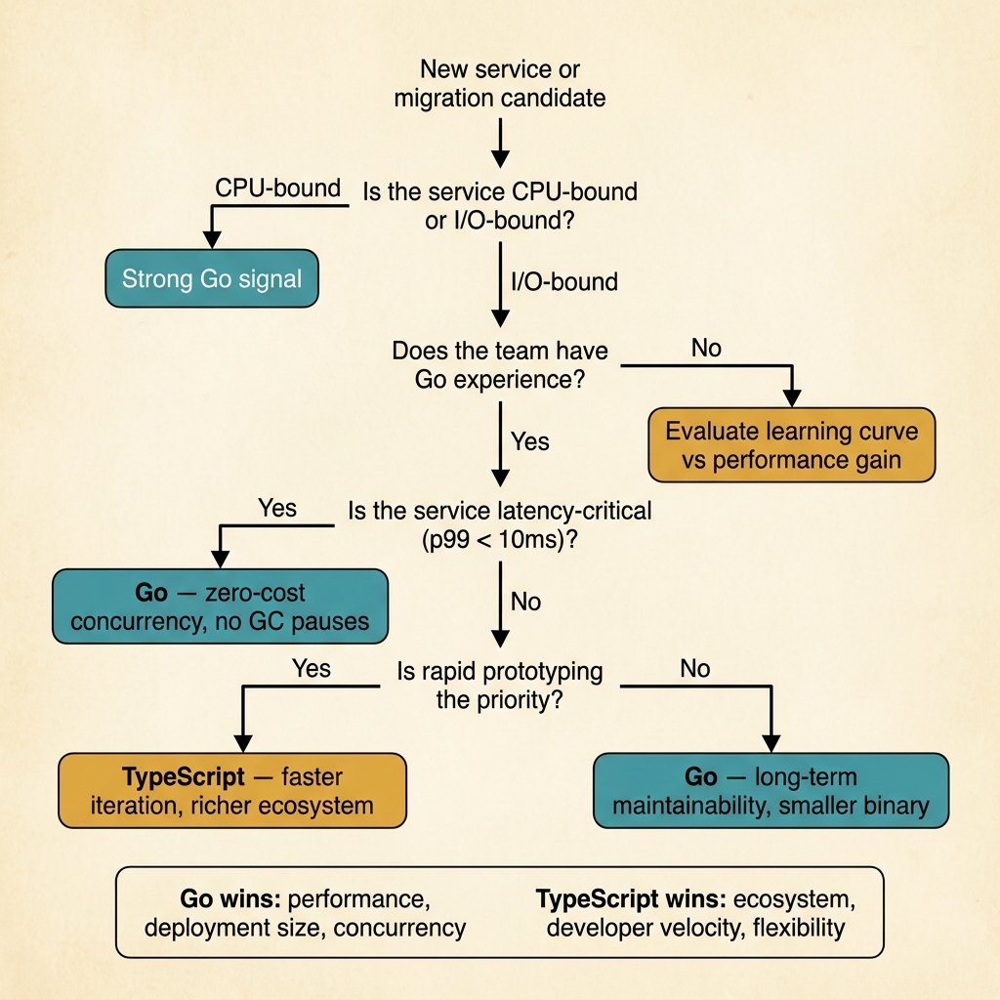
Sai lầm lớn nhất khi lựa chọn ngôn ngữ là biến nó thành lựa chọn bản sắc.
Một quyết định kiến trúc tốt còn lạnh lùng hơn thế.
| # | Mức độ nghiêm trọng | Lỗi | Hậu quả | Sửa chữa |
|---|---|---|---|---|
| 1 | 🔴 Gây tử vong | Chọn ngôn ngữ chỉ vì micro benchmarks hoặc cộng đồng cường điệu | Viết lại vấn đề sai, tốc độ của đội giảm xuống, hoạt động tệ hơn | Chọn theo khối lượng công việc, kỹ năng nhóm, mô hình triển khai và kết nối với giao diện người dùng |
| 2 | 🟡 Chung | Chọn Go cho dịch vụ có giá trị lớn nhất được chia sẻ đầy đủ- stack loại và hệ sinh thái web | Mất đòn bẩy lớn nhất của TS nhưng không nhận đủ lợi ích từ Go | Giữ TypeScript hoặc chọn ranh giới kết hợp |
| 3 | 🔵 Nhỏ | Xem TypeScript là "chỉ giao diện người dùng" hoặc Go là "chỉ hiệu suất cao" | Ma trận quyết định kém, thiếu trường hợp sử dụng tốt của cả hai | Sử dụng bảng phù hợp với khối lượng công việc thay vì khuôn mẫu |
| Tài nguyên | Loại | Liên kết | Lưu ý |
|---|---|---|---|
| Go cho Dịch vụ Mạng & Đám mây | Chính thức | https://go.dev/solutions/cloud | Nguồn chính thức cho vị trí vững chắc của Go trong dịch vụ/đám mây |
| Go 1.25 Ghi chú phát hành | Chính thức | https://go.dev/doc/go1.25 | Cơ sở để thấy Go tiếp tục ưu tiên độ ổn định của chuỗi công cụ/ runtime |
| Cẩm nang TypeScript | Chính thức | https://www.typescriptlang.org/docs/handbook/intro.html | Cơ sở chính thức cho đề xuất giá trị của TypeScript |
| TypeScript nhanh hơn gấp 10 lần | Chính thức | https://devblogs.microsoft.com/typescript/typescript-native-port/ | Thông báo về chuỗi công cụ gốc trong Go ngày 25-03-11 |
| Công bố TypeScript 5.9 | Chính thức | https://devblogs.microsoft.com/typescript/announce-typescript-5-9/ | Lộ trình cập nhật hướng tới TypeScript 7/6 vào ngày 2025-08-01 |
| GitHub Tháng 10 năm 2025 | Chính thức | https://github.blog/news-insights/octoverse/octoverse-a-new-developer-joins-github-every-second-as-ai-leads-typescript-to-1/ | Dữ liệu TypeScript đứng số 1 trên GitHub vào tháng 8 năm 2025 |
| Stack Khảo sát nhà phát triển tràn 2025 — Công nghệ | Chính thức | https://survey.stackoverflow.co/2025/technology/ | Dữ liệu của nhà phát triển chuyên nghiệp: TypeScript 48,8%, Go 17,4% |
Cốt lõi của Khi nào nên chọn Go so với TypeScript rất rõ ràng. Các tiện ích mở rộng bên dưới giúp bạn thực hiện các quyết định về công nghệ bằng cẩm nang di chuyển và tập bản đồ dịch thuật.
Bước tiếp theo không phải là đọc thêm khẩu hiệu mà là chuyển quyết định này thành việc triển khai hoặc sẵn sàng cụ thể.
| Gia hạn | Khi nào | Cơ sở lý luận | Liên kết |
|---|---|---|---|
| Cẩm nang di chuyển | Khi bạn đã hoàn thiện ngôn ngữ hoặc kết hợp strategy | Quyết định tốt phải đi kèm với việc triển khai tốt | [→ 06-migration-playbook](./06-migration-playbook.md) |
| Bố cục dự án, Dụng cụ, Kiểm tra | Khi nghiêng về Go và cần kiểm tra sự sẵn sàng của đội | Sau khi chọn ngôn ngữ, bạn cần biết liệu nhóm có thể gửi nó hay không | [→ 04-project-layout-tooling](./04-project-layout-tooling-testing.md) |
| Người trợ giúp — TS/JS → Go Tiện ích | Khi bạn đã quyết định sử dụng Go cho một phần của hệ thống | Go xuống ánh xạ cấp API cụ thể | [→ Helper README](../helper/README.md) |
Điều hướng: [← Previous](./04-project-layout-tooling-testing.md) · [→ Next](./06-migration-playbook.md)
Sự cám dỗ lớn nhất khi nhóm quyết định "viết lại trong Go " là bắt đầu từ một repo mới. Điều đó hầu như luôn mang lại cảm giác di chuyển rất nhanh trong 2 tuần đầu tiên, sau đó chững lại khi sự phức tạp của thế giới thực ập đến.
Tại sao? Bởi vì việc di chuyển không chỉ là về mã:
- Hệ thống hiện tại có các hợp đồng any hoàn toàn phụ thuộc vào khách hàng không?
- Bạn đã đo độ trễ, bộ nhớ, tỷ lệ lỗi cơ bản chưa?
- Team có đủ hiểu Go để giữ nguyên hành vi cũ mà không đưa ra lỗi mới không?
- Kế hoạch khôi phục ở đâu nếu phiên bản Go đi vào sản xuất và gặp sự cố?
Di chuyển tốt không bắt đầu bằng việc viết lại. Nó bắt đầu với những ranh giới rõ ràng, đo lường đầy đủ và triển khai phù hợp strategy .
Repo mới là phần dễ dàng.
Rollback là phần khó khăn.
1.1 3 chiến lược thực dụng nhất.
Kẻ bóp cổ Giữ dịch vụ TypeScript cũ, định tuyến dần một số điểm cuối/trường hợp sử dụng tới Go . Đây là mặc định an toàn nhất khi hệ thống có lưu lượng truy cập thực.
Khai thác xe sidecar / công nhân Trước tiên hãy chia phần đồng thời (concurrency) -heavy, CPU-heavy, batch-heavy hoặc infra-heavy thành Go . Thích hợp khi bạn không muốn chạm vào một hợp đồng API lớn.
Viết lại đầy đủ Chỉ hợp lý khi dịch vụ nhỏ, hợp đồng đơn giản, hoặc code cũ đã mục nát đến mức không thể cứu được nữa. Ngay cả khi viết lại toàn bộ, bạn vẫn nên thu gọn lại trước và đo đường cơ sở.
1.2 Lộ trình 30/60/90 ngày dành cho nhóm đầu tiên về TypeScript.
Ngày 0-30 Khóa mô hình tinh thần, mô hình dữ liệu, lỗi/ đồng thời (concurrency) /bối cảnh, chuỗi công cụ và viết 1-2 dịch vụ nhỏ không quan trọng.
Ngày 31-60 Bắt đầu tách công nhân, sidecar, công cụ nội bộ hoặc người tiêu dùng một chiều thành Go . Thiết lập danh sách kiểm tra đánh giá riêng cho con trỏ /value/context/errors.
Ngày 61-90 Chạm vào một đường dẫn quan trọng hơn: một tuyến API nhỏ, phân phát dịch vụ xuôi dòng lớn hoặc một công việc xử lý thông lượng cao. Chỉ làm điều này nếu bạn có kế hoạch cơ bản và khôi phục rõ ràng.
1.3 Các kiểu bất biến và lỗi
- Nếu không lưu hợp đồng kiểm tra thì viết lại sẽ “đúng theo mã mới” nhưng sai theo hành vi cũ mà khách hàng đang sử dụng.
- Nếu bạn không đo lường đường cơ sở trước, bạn sẽ không biết liệu việc viết lại có thực sự cải thiện được điều gì khác ngoài cảm giác hay không.
- Nếu nhóm không có kỷ luật xem xét đối với Go , lỗi con trỏ /context/ goroutine rò rỉ sẽ được đưa vào sản xuất rất nhanh.
Mã nguồn & Các ví dụ minh họa
Phiên bản TypeScript dành cho nhiều nhóm có sẵn:``typescript
Kiểu dữ liệu Invoice = {
id: string;
amount: number;
};
giao diện (interface) InvoiceReader {
findById(id: string): Promise
class LegacyTsClient implements InvoiceReader {
async findById(id: string): Promise
class BillingService { constructor(private readonly reader: InvoiceReader) {}
async printInvoice(id: string): Promise);
}
}
``Phiên bản Go tương ứng:> Bài học rút ra: Quá trình di cư bền vững bắt đầu từ bước cuối cùng. Nếu bạn chưa có đường nối, việc viết lại sẽ rất khó để triển khai từng phần một.
Đường may có, nhưng đường may thôi chưa đủ. Nếu hợp đồng cũ vẫn tràn sang miền mới, bạn chỉ thay đổi ngôn ngữ chứ không gặp rủi ro.
package main
import (
"context"
"fmt"
)
type Invoice struct {
ID string
Amount int64
}
type InvoiceReader interface {
FindByID(ctx context.Context, id string) (Invoice, error)
}
type LegacyTSClient struct{}
func (LegacyTSClient) FindByID(ctx context.Context, id string) (Invoice, error) {
return Invoice{ID: id, Amount: 1500}, nil
}
type BillingService struct {
reader InvoiceReader
}
func NewBillingService(reader InvoiceReader) BillingService {
return BillingService{reader: reader}
}
func (s BillingService) PrintInvoice(ctx context.Context, id string) error {
invoice, err := s.reader.FindByID(ctx, id)
if err != nil {
return fmt.Errorf("print invoice %s: %w", id, err)
}
fmt.Printf("invoice=%s amount=%d\n", invoice.ID, invoice.Amount)
return nil
}
func main() {
service := NewBillingService(LegacyTSClient{})
_ = service.PrintInvoice(context.Background(), "inv-10")
}customerId và totalCents ; miền Go sử dụng Order .Phiên bản TypeScript ở lớp bộ điều hợp:``typescript
Kiểu dữ liệu LegacyOrderDTO = {
id: string;
customerId: string;
totalCents: number;
};
Kiểu dữ liệu Order = { id: string; customerId: string; total: number; };
function translateLegacyOrder(dto: LegacyOrderDTO): Order { if (!dto.id || !dto.customerId || dto.totalCents <= 0) { throw new Lỗi biên dịch / Runtime("legacy order contract invalid"); }
return { id: dto.id, customerId: dto.customerId, total: dto.totalCents, }; } ``Phiên bản Go tương ứng:> Tại sao? Các nhóm thường cố gắng giữ một mô hình chung cho các hợp đồng cũ, miền mới, cơ sở dữ liệu, sự kiện và phản hồi. Đó là cách nhanh nhất để rò rỉ logic di chuyển trên cơ sở mã. Dịch ranh giới có vẻ giống như một công việc làm thêm nhưng nó mang lại hiệu quả ngay lập tức.
Biên dịch giữ nguyên hình dạng. Vấn đề còn lại là triển khai: giao thông đi đâu, quan sát thế nào, quay đầu ra sao.
package main
import (
"encoding/json"
"fmt"
)
type legacyOrderDTO struct {
ID string `json:"id"`
CustomerID string `json:"customerId"`
TotalCents int64 `json:"totalCents"`
}
type Order struct {
ID string
CustomerID string
Total int64
}
func translateLegacyOrder(raw []byte) (Order, error) {
var dto legacyOrderDTO
if err := json.Unmarshal(raw, &dto); err != nil {
return Order{}, fmt.Errorf("decode legacy order: %w", err)
}
if dto.ID == "" || dto.CustomerID == "" || dto.TotalCents <= 0 {
return Order{}, fmt.Errorf("legacy order contract invalid")
}
return Order{
ID: dto.ID,
CustomerID: dto.CustomerID,
Total: dto.TotalCents,
}, nil
}
func main() {
raw := []byte(`{"id":"ord-9","customerId":"u-1","totalCents":4200}`)
order, err := translateLegacyOrder(raw)
if err != nil {
panic(err)
}
fmt.Printf("%+v\n", order)
}/invoice có thể chạy qua đường dẫn cũ hoặc Go .Các phiên bản TypeScript/Node thường bắt đầu như thế này:``typescript
import express from "express";
const app = express(); let goPathEnabled = false;
function legacyHandler(req: express.Request, res: express.Response) { res.status(200).send("legacy-ts-response"); }
function goHandler(req: express.Request, res: express.Response) { res.status(200).send("new-go-response"); }
app.get("/invoice", (req, res) => { if (goPathEnabled) { return goHandler(req, res); } return legacyHandler(req, res); }); ``Phiên bản Go tương ứng:> Tại sao? Mô hình strangler thành công khi việc khôi phục rẻ hơn so với triển khai. Nếu bạn phải triển khai lại hoặc khôi phục toàn bộ dịch vụ mỗi lần time xảy ra lỗi thì bạn chưa thực sự xây dựng được quá trình di chuyển an toàn.
package main
import (
"fmt"
"net/http"
"sync/atomic"
)
var goPathEnabled atomic.Bool
func legacyHandler(w http.ResponseWriter, r *http.Request) {
w.WriteHeader(http.StatusOK)
_, _ = w.Write([]byte("legacy-ts-response"))
}
func goHandler(w http.ResponseWriter, r *http.Request) {
w.WriteHeader(http.StatusOK)
_, _ = w.Write([]byte("new-go-response"))
}
func stranglerHandler(w http.ResponseWriter, r *http.Request) {
if goPathEnabled.Load() {
goHandler(w, r)
return
}
legacyHandler(w, r)
}
func main() {
goPathEnabled.Store(false) // flip when canary passes
http.HandleFunc("/invoice", stranglerHandler)
fmt.Println("listening on :8080")
_ = http.ListenAndServe(":8080", nil)
}Sơ đồ trực quan & Luồng hoạt động (Visual Support)
Di chuyển là một vấn đề triển khai nhiều giai đoạn, vì vậy nội dung trực quan tĩnh giúp bạn thấy chu trình xác thực và khoảng 30/60/90 rõ ràng hơn nhiều so với sơ đồ dưới dạng mã. Hình: Bảng bên trên là vòng triển khai an toàn từ đường cơ sở đến mở rộng hoặc khôi phục; Bảng bên dưới là nhịp độ học tập và phạm vi can thiệp phù hợp cho nhóm ưu tiên TypeScript trong 30/60/90 ngày đầu tiên..
Ba lỗi dưới đây hiếm khi xuất hiện trong các slide khởi động.
Chúng xuất hiện muộn hơn, khi dòng thời gian bị khóa và quá trình sản xuất bắt đầu có tín hiệu xấu.
| # | Mức độ nghiêm trọng | Lỗi | Hậu quả | Sửa chữa |
|---|---|---|---|---|
| 1 | 🔴 Gây tử vong | Viết lại đột phá mà không cần đo đường cơ sở và không cần khôi phục | Bỏng dòng thời gian, khó xác minh giá trị, dễ xảy ra sự cố trong sản xuất | Chọn người siết cổ hoặc xe sidecar trước; Đo đường cơ sở về độ trễ/lỗi/chi phí ngay từ đầu |
| 2 | 🟡 Chung | Chuyển kiến trúc NestJS/Express ban đầu vào Go | Viết lại xong nhưng sự phức tạp cũ vẫn còn nguyên | Thiết kế lại ranh giới theo package , nhỏ giao diện (interface) , hàm tạo rõ ràng |
| 3 | 🔵 Nhỏ | Huấn luyện nhóm bằng một tài liệu duy nhất và sau đó đi sâu vào con đường quan trọng | Chất lượng đánh giá yếu, lỗi ngữ nghĩa lọt qua | Thực hiện theo lộ trình 30/60/90 ngày và sử dụng danh sách kiểm tra đánh giá riêng cho Go |
| Tài nguyên | Loại | Liên kết | Lưu ý |
|---|---|---|---|
| Cẩm nang TypeScript | Chính thức | https://www.typescriptlang.org/docs/handbook/intro.html | Đường cơ sở của mô hình nguồn runtime /Kiểu dữ liệu trước khi di chuyển |
| Go Hướng dẫn sử dụng | Chính thức | https://go.dev/doc/ | Đường cơ sở của chuỗi công cụ, modules , thử nghiệm và quy trình làm việc phía mục tiêu |
| Go cho Dịch vụ Mạng & Đám mây | Chính thức | https://go.dev/solutions/cloud | Cơ sở đánh giá các trường hợp sử dụng phù hợp cho việc khai thác dịch vụ/xe sidecar Go |
Cốt lõi của Playbook di chuyển rất rõ ràng. Các tiện ích mở rộng bên dưới giúp bạn thực hiện quá trình di chuyển strategy của mình bằng tập bản đồ dịch thuật và giới thiệu nhóm.
Nó có một chuỗi quyết định nhỏ, có thể đo lường được và quay trở lại.
| Gia hạn | Khi nào | Cơ sở lý luận | Liên kết |
|---|---|---|---|
| Mô hình tinh thần & Runtime | Khi nhóm vẫn xem Go là "TypeScript được biên dịch thành nhị phân" | Việc di chuyển chính xác strategy trước tiên cần có một mô hình tinh thần chính xác | [→ 01-mental-model-runtime](./01-mental-model-runtime.md) |
| Khi nào nên chọn Go so với TypeScript | Khi tranh luận về việc nên di chuyển hoàn toàn hay di chuyển từng bước trước | Khung quyết định trước khi cam kết lộ trình | [→ 05-Bối cảnh áp dụng-to-choose](./05-Bối cảnh áp dụng-to-choose-go-vs-typescript.md) |
| Bố cục dự án, Dụng cụ, Kiểm tra | Khi kế hoạch di chuyển đã rõ ràng nhưng việc tổ chức repo và vận chuyển vẫn chưa được quyết định | Di chuyển ngôn ngữ mà không thay đổi quy trình làm việc khiến việc triển khai kém bền hơn | [→ 04-project-layout-tooling](./04-project-layout-tooling-testing.md) |
| Các loại & mô hình hóa dữ liệu | Khi hợp đồng cũ bắt đầu trở nên phức tạp | Lớp dịch đúng yêu cầu mô hình dữ liệu chính xác | [→ 02-types-data-modeling](./02-types-data-modeling.md) |
| Lỗi, Đồng thời (concurrency) , Ngữ cảnh | Khi slice đã di chuyển bắt đầu gọi nhiều luồng xuống | Lỗi di chuyển là phổ biến nhất trong kiểm soát vòng đời | [→ 03-errors-đồng thời (concurrency)-context](./03-errors-đồng thời (concurrency)-context.md) |
| Bản đồ dịch thuật | Khi nhóm đang di chuyển nhưng vẫn hỏi "Thành ngữ TS/Node này trong Go ?" | Tra cứu nhanh trong khi vẫn duy trì hướng thành ngữ | [→ 07-translation-atlas](./07-translation-atlas.md) |
| Người trợ giúp — TS/JS → Go Tiện ích | Khi nhóm cần cú pháp ánh xạ nhanh trong quá trình thực hiện di chuyển | Strategy xử lý cụm strategy ; người trợ giúp xử lý công thức nấu ăn | [→ Helper README](../helper/README.md) |
Điều hướng: [← Previous](./05-Bối cảnh áp dụng-to-choose-go-vs-typescript.md) · [→ Next](./07-translation-atlas.md)
Bạn đang chuyển một phụ trợ tiện ích nhỏ từ TypeScript sang Go . Trong đầu bạn có một danh sách rất quen thuộc:
console.log-JSON.parse-fs.readFileSync-Promise.all-AbortController-class,constructor,this-process.argv,process.envVấn đề là khi bạn chuyển sang Go , bạn không tìm thấy "bản sao" củaprocess,fshoặcPromise. Mọi thứ dường như được chia thành nhiều nơi hơn:fmt,os,bufio,encoding/json,net/http,context,flag,struct, v.v.
Hướng dẫn từ miguelmota/golang-for-nodejs-developers rất hữu ích ngay tại đó: nó cung cấp cho bạn một tập bản đồ như "X trong Node.js là Y trong Go ". Nhưng nếu bạn đưa tập bản đồ đó vào Go hiện đại mà không điều chỉnh các mẫu thành ngữ, bạn có nguy cơ dịch từng dòng một mà không hiểu ý chính.
1.1 Không dịch dựa trên từ khóa; Hãy dịch theo ý định.
Một số ánh xạ gần như trực tiếp:
JSON.parse->json.Unmarshal-JSON.stringify->json.Marshal-process.env.FOO->os.Getenv("FOO")-console.log->fmt.PrintlnNhưng nhiều ánh xạ chỉ đúng nếu nhìn từ mục đích:
Promise.allkhông nên được ánh xạ một cách máy móc thành "một bó các kênh (channel) "; Với yêu cầu phân bổ ra, thành ngữ hơn làerrgroup + context.classkhông map thành "lớp giả lập"; thường làstruct + constructor + methods + small giao diện (interface).fskhông map đến đối tượng trung tâm; Go tách tệp I/O thànhos,io,bufio, đôi khi thêmfilepath.
1.2 Khi nào map này được sử dụng đúng?
Sử dụng tập bản đồ này khi:
- Bạn biết vấn đề mình muốn làm trong TS/Node, nhưng không biết package Go nguyên thủy nằm ở đâu.
- Bạn đang xem lại cổng mã từ TypeScript và muốn phát hiện "bản dịch nghĩa đen nhưng sai lệch về ngữ nghĩa".
- Đội cần một điểm vào nhanh trước khi tiến vào làn
helper/.
Đừng sử dụng tập bản đồ này làm cuốn sách quy tắc cuối cùng. Khi ánh xạ bắt đầu chạm đến mô hình miền, kiểm soát vòng đời hoặc ranh giới kiến trúc, bạn phải quay lại các bài học cốt lõi trong cụm này.
1.3 Các kiểu bất biến và lỗi
- Atlas này là một công cụ điều hướng, không phải là giấy phép để viết lại từng dòng một.
- Hướng dẫn gốc sử dụng nhiều ví dụ gốc về Node.js; Trong quá trình sản xuất Go hiện đại, một số mẫu cần được nâng cao thành
context,errgroup, các hàm tạo rõ ràng và dịch ranh giới để rõ ràng hơn. - Nếu việc ánh xạ khiến bạn thêm quá nhiều
any,giao diện (interface){}hoặc các goroutine "trông giống như Promise ", thì đó thường là dấu hiệu cho thấy bạn đang dịch sai lớp trừu tượng.
Sự khác biệt thực sự không nằm ở việc ghi nhớ tên package . Nó nằm ở chỗ nhận ra cùng một ý định được “đóng gói” rất khác nhau giữa hai hệ thống. Sơ đồ dưới đây đưa điểm chính xác đó ra ánh sáng.
Mã nguồn & Các ví dụ minh họa
./config.json → ServiceConfig{ServiceName, Port, Debug} .
Độ phức tạp: O(n) theo kích thước tệp; phần quan trọng là thiết kế ranh giới chính xác chứ không phải hiệu suất.Phiên bản TypeScript quen thuộc:``typescript
import { readFileSync } from "node:fs";
Kiểu dữ liệu ServiceConfigInput = { serviceName: string; port?: number; debug?: boolean; };
Kiểu dữ liệu ServiceConfig = { serviceName: string; port: number; debug: boolean; };
function loadConfig(path: string): ServiceConfig { const raw = readFileSync(path, "utf8"); const parsed = JSON.parse(raw) as ServiceConfigInput;
if (!parsed.serviceName) { throw new Lỗi biên dịch / Runtime("serviceName is required"); }
return { serviceName: parsed.serviceName, port: parsed.port ?? 8080, debug: parsed.debug ?? false, }; }
const cfg = loadConfig("./config.json");
console.log(service=${cfg.serviceName} port=${cfg.port} debug=${cfg.debug});
`Phiên bản Go tương ứng:> Tại sao? Trong Node/TypeScript, undefined , null` , các trường tùy chọn và việc hợp nhất đối tượng mặc định thường đi cùng nhau khá tự nhiên. Go buộc bạn phải phân tách chúng rõ ràng hơn. Đây không phải là nghi lễ thừa - nó giúp ranh giới JSON vẫn rõ ràng và có thể sửa lỗi.
fs + JSON.parse đến os.ReadFile + json.Unmarshal , nhưng giữ nguyên các giá trị mặc định và bất biến trong bước tạo đối tượng thực tế. Đừng nhét chúng vào DTO thô.Trường hợp cơ bản là ổn. Nhưng hầu hết các nhóm không chuyển đổi ngôn ngữ chỉ để đọc tệp JSON; Họ chuyển đổi khi các yêu cầu phân chia, hết thời gian chờ và hủy bắt đầu gây ảnh hưởng. Đó là lúc tập bản đồ phải thay đổi cú pháp.
package main
import (
"encoding/json"
"fmt"
"os"
)
type rawConfig struct {
ServiceName string `json:"serviceName"`
Port *int `json:"port"`
Debug *bool `json:"debug"`
}
type ServiceConfig struct {
ServiceName string
Port int
Debug bool
}
func loadConfig(path string) (ServiceConfig, error) {
raw, err := os.ReadFile(path)
if err != nil {
return ServiceConfig{}, fmt.Errorf("read config %s: %w", path, err)
}
var input rawConfig
if err := json.Unmarshal(raw, &input); err != nil {
return ServiceConfig{}, fmt.Errorf("decode config %s: %w", path, err)
}
if input.ServiceName == "" {
return ServiceConfig{}, fmt.Errorf("serviceName is required")
}
cfg := ServiceConfig{
ServiceName: input.ServiceName,
Port: 8080,
Debug: false,
}
// Pointer only lives at the boundary to distinguish "no field" from "field with zero value"
if input.Port != nil {
cfg.Port = *input.Port
}
if input.Debug != nil {
cfg.Debug = *input.Debug
}
return cfg, nil
}
func main() {
cfg, err := loadConfig("./config.json")
if err != nil {
panic(err)
}
fmt.Printf("service=%s port=%d debug=%t\n", cfg.ServiceName, cfg.Port, cfg.Debug)
}Promise.all đến Go theo cách duy trì thời gian chờ và hủy toàn cầu.
Cách tiếp cận: Sử dụng fetch + AbortController trong TS, sau đó errgroup + context trong Go .
Ví dụ: Gọi song song ba điểm cuối profile , billing , invoices .
Độ phức tạp: O(k) theo số lượng hạ lưu; chi phí thực sự nằm ở I/O mạng.Phiên bản TypeScript với tính năng kiểm soát vòng đời quen thuộc:``typescript
Kiểu dữ liệu Dashboard = {
profile: unknown;
billing: unknown;
invoices: unknown;
};
async function fetchJSON);
}
return response.json() as Promise
async function loadDashboard(baseURL: string): Promise
try {
const [profile, billing, invoices] = await Promise.all([
fetchJSON(${baseURL}/profile, controller.signal),
fetchJSON(${baseURL}/billing, controller.signal),
fetchJSON(${baseURL}/invoices, controller.signal),
]);
return { profile, billing, invoices };
} finally {
clearTimeout(timeout);
}
}
`Phiên bản Go tương ứng:> Tại sao? Ánh xạ hướng dẫn ban đầu Promise tới kênh (channel) là một điểm khởi đầu tốt để hiểu các nguyên hàm của Go 's đồng thời (concurrency) . Nhưng với phân xuất theo phạm vi yêu cầu hiện đại, errgroup + context là một bản dịch gần hơn với sản xuất: nếu một nhánh không thành công, bối cảnh được chia sẻ sẽ tự động hủy bỏ các nhánh tương tự.
Promise.all , đừng hỏi "[[E20]]] mỗi Promise thuộc về cái nào?". Hỏi "việc phân xuất này cần lỗi phân xuất, thời gian chờ và hủy ở đâu?".Sau khi yêu cầu phân xuất đã được thông qua, cú sốc tiếp theo thường đến từ các tập lệnh và CÔNG CỤ CLI nhỏ. Nút đặt process , fs , readline , stdout` rất gần nhau; Go chia chúng thành nhiều packages nhỏ hơn. Đó là.
package dashboard
import (
"context"
"encoding/json"
"fmt"
"net/http"
"time"
"golang.org/x/sync/errgroup"
)
type Dashboard struct {
Profile map[string]any
Billing map[string]any
Invoices map[string]any
}
func fetchJSON(ctx context.Context, client *http.Client, url string) (map[string]any, error) {
req, err := http.NewRequestWithContext(ctx, http.MethodGet, url, nil)
if err != nil {
return nil, fmt.Errorf("build request %s: %w", url, err)
}
resp, err := client.Do(req)
if err != nil {
return nil, fmt.Errorf("do request %s: %w", url, err)
}
defer resp.Body.Close()
if resp.StatusCode >= http.StatusBadRequest {
return nil, fmt.Errorf("request %s failed: %s", url, resp.Status)
}
var out map[string]any
if err := json.NewDecoder(resp.Body).Decode(&out); err != nil {
return nil, fmt.Errorf("decode %s: %w", url, err)
}
return out, nil
}
func LoadDashboard(ctx context.Context, baseURL string) (Dashboard, error) {
ctx, cancel := context.WithTimeout(ctx, 800*time.Millisecond)
defer cancel()
client := &http.Client{}
g, ctx := errgroup.WithContext(ctx)
var profile map[string]any
var billing map[string]any
var invoices map[string]any
g.Go(func() error {
value, err := fetchJSON(ctx, client, baseURL+"/profile")
if err != nil {
return err
}
profile = value
return nil
})
g.Go(func() error {
value, err := fetchJSON(ctx, client, baseURL+"/billing")
if err != nil {
return err
}
billing = value
return nil
})
g.Go(func() error {
value, err := fetchJSON(ctx, client, baseURL+"/invoices")
if err != nil {
return err
}
invoices = value
return nil
})
if err := g.Wait(); err != nil {
return Dashboard{}, err
}
return Dashboard{
Profile: profile,
Billing: billing,
Invoices: invoices,
}, nil
}process.argv , fs.createReadStream , readline ; Go sử dụng flag , os.Open , bufio.Scanner , regexp .
Ví dụ: errorcount -pattern 'WARN|LỖI BIÊN DỊCH / RUNTIME' ./app.log .
Độ phức tạp: O(n) theo số dòng; bộ nhớ ở gần O(1) do xử lý phát trực tuyến.Các phiên bản TypeScript/Node thường bắt đầu như thế này:``typescript
import { createReadStream } from "node:fs";
import * as readline from "node:readline";
async function main(): Promise
if (!filePath) { throw new Lỗi biên dịch / Runtime("usage: errorcount <Đường dẫn tệp> [pattern]"); }
const re = new RegExp(pattern); const reader = readline.createInterface({ input: createReadStream(filePath), crlfDelay: Infinity, });
let count = 0; for await (const line of reader) { if (re.test(line)) { count++; } }
process.stdout.write(${count}\n);
}
void main().catch((err) => {
console.Lỗi biên dịch / Runtime(err.message);
process.exit(1);
});
`Phiên bản Go tương ứng:> Tại sao? Đây là lúc tập bản đồ đặc biệt hữu ích: trong Node, nhiều khả năng nằm xung quanh process , fs và readline` . Trong Go , không có "một đối tượng trung tâm" tương đương. Đổi lại, mỗi ý định có package rõ ràng hơn, nhỏ hơn.
process . Chấp nhận rằng các mối quan tâm về CÔNG CỤ CLI/ runtime được trải rộng trên nhiều packages nhỏ - đó là cách Go giữ cho mã ít huyền diệu hơn.Biết nơi người nguyên thủy sống là một nửa câu chuyện. Nửa còn lại dễ mắc sai sót khi sử dụng tập bản đồ làm từ điển song ngữ thay vì làm công cụ điều hướng.
package main
import (
"bufio"
"flag"
"fmt"
"os"
"regexp"
)
func main() {
pattern := flag.String("pattern", "ERROR", "regular expression to count")
flag.Parse()
if flag.NArg() != 1 {
fmt.Fprintln(os.Stderr, "usage: errorcount [-pattern REGEX] <file>")
os.Exit(2)
}
re, err := regexp.Compile(*pattern)
if err != nil {
fmt.Fprintf(os.Stderr, "compile regex: %v\n", err)
os.Exit(1)
}
file, err := os.Open(flag.Arg(0))
if err != nil {
fmt.Fprintf(os.Stderr, "open file: %v\n", err)
os.Exit(1)
}
defer file.Close()
scanner := bufio.NewScanner(file)
count := 0
for scanner.Scan() {
if re.MatchString(scanner.Text()) {
count++
}
}
if err := scanner.Err(); err != nil {
fmt.Fprintf(os.Stderr, "scan file: %v\n", err)
os.Exit(1)
}
fmt.Fprintln(os.Stdout, count)
}Sơ đồ trực quan & Luồng hoạt động (Visual Support)
Cấp 1
``text
What are you looking to do in TS/Node?
Cú pháp khai báo + printing
-> Go language + fmt + log
objects + classes + JSON
-> struct + methods + encoding/json
files + streams + Công cụ CLI
-> os + io + bufio + flag
HTTP + URL + request lifecycle
-> net/http + net/url + context
Promise + async/await + cancellation
-> goroutine + kênh (channel)/select + errgroup + context
tooling + package workflow
-> go mod + go test + gofmt + go doc
Hình: Cấp độ 1 cho thấy câu hỏi đúng không phải là "Có đối tượng nào giống như
fs trong Go không?", mà là "trong đó package trong Go ý định này tồn tại?"..
Cấp 2
`text
TS/Node runtime-shaped thinking
-> process / fs / Buffer / Promise / class
-> find equivalent object
-> easy to translate according to the words but with different semantics.
Go intent-shaped thinking
-> data modeling? -> struct + constructor + json tags
-> async orchestration? -> errgroup + context
-> stream Đường dẫn tệp? -> os.Open + bufio.Scanner
-> Công cụ CLI input? -> flag + os.Args
-> output/logging? -> fmt / log / os.Stderr
``Hình: Cấp độ 2 nhấn mạnh việc điều chỉnh lại quan trọng nhất: từ tra cứu lấy đối tượng làm trung tâm đến tra cứu lấy mục đích làm trung tâm..
Trực quan là đủ để xác định vị trí package . Phần còn lại là xem tập bản đồ này giúp bạn tránh khỏi việc dịch từng dòng một khi xử lý mã thực như thế nào.
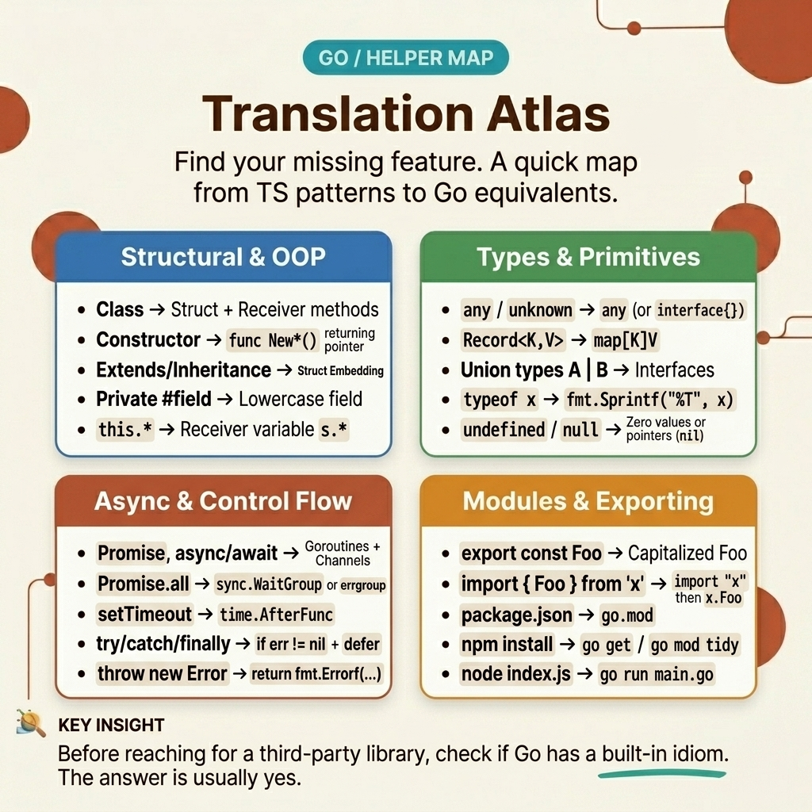
| # | Mức độ nghiêm trọng | Lỗi | Hậu quả | Sửa chữa |
|---|---|---|---|---|
| 1 | 🔴 Gây tử vong | Sử dụng tập bản đồ làm bảng dịch từng dòng và ánh xạ Promise sang thô các kênh (channel) | Nhìn bề ngoài, mã có vẻ "đúng Go " nhưng thiếu thời gian chờ, hủy và lỗi quạt vào | Dịch theo vòng đời: yêu cầu phân ra → errgroup + context , tín hiệu mức thấp sử dụng kênh (channel) |
| 2 | 🔴 Gây tử vong | Đang cố gắng tìm một đối tượng Go tương đương với process hoặc fs | Cảm giác bế tắc Go rời rạc, tạo ra trợ giúp vô nghĩa packages để bắt chước Node | Phân tách theo mục đích: Đường dẫn tệp → os/io/bufio , CÔNG CỤ CLI → flag , đầu ra → fmt / os.Stderr |
| 3 | 🟡 Chung | Chuyển class sang struct và xuất tất cả các trường để "dễ sử dụng" | Mất tính bất biến, API phình bề mặt, đột biến khó kiểm soát | Giữ các trường không được xuất khi cần, sử dụng các hàm tạo và phương thức rõ ràng |
| 4 | 🔵 Nhỏ | Sử dụng tập bản đồ trong khi bỏ qua các bài học về mô hình tư duy và mô hình dữ liệu | Dịch cú pháp nhưng vẫn đưa ra quyết định thiết kế sai lầm | Sử dụng tập bản đồ để điều hướng nhanh, sau đó quay lại bài viết cốt lõi tương ứng để tìm hiểu chuyên sâu |
| Tài nguyên | Loại | Liên kết | Lưu ý |
|---|---|---|---|
| Golang dành cho nhà phát triển Node.js | Cộng đồng | https://github.com/miguelmota/golang-for-nodejs-developers?tab=readme-ov-Đường dẫn tệp#các ví dụ | Hướng dẫn ban đầu làm cơ sở cho tập bản đồ này; Bài viết hiện tại chọn ánh xạ |
| Go Thư viện chuẩn | Chính thức | https://pkg.go.dev/std | Chỉ mục chuẩn để tra cứu đích package thay vì đoán theo namespace như Node |
| Chuyến tham quan Go | Chính thức | https://go.dev/tour/ | Cần thiết nếu bạn vẫn chưa quen với cú pháp cơ bản của Go và mô hình package |
| Có hiệu lực Go | Chính thức | https://go.dev/doc/effect_go | Nguồn gốc của thành ngữ Go sau khi biết cú pháp |
Cốt lõi của Bản đồ dịch rất rõ ràng. Các nhánh mở rộng bên dưới giúp bạn biến tập bản đồ này thành thói quen viết Go tự nhiên thay vì dịch từ TypeScript.
Nó kết thúc bằng việc biết khi nào nên rời khỏi tập bản đồ và quay trở lại cốt lõi để đưa ra quyết định tốt hơn.
| Gia hạn | Khi nào | Cơ sở lý luận | Liên kết |
|---|---|---|---|
| Mô hình tinh thần & Runtime | Khi bạn cứ hỏi "tại sao Go không có X như Node?" | Vấn đề gốc thường là mô hình tư duy chứ không phải thiếu API | [→ 01-mental-model-runtime](./01-mental-model-runtime.md) |
| Các loại & mô hình hóa dữ liệu | Khi chuyển DTO, công đoàn, tùy chọn và lớp học bắt đầu bị ảnh hưởng | Atlas chỉ hướng; bài viết này khóa ranh giới dữ liệu và bất biến | [→ 02-types-data-modeling](./02-types-data-modeling.md) |
| Lỗi, Đồng thời (concurrency) , Ngữ cảnh | Khi bản dịch chạm vào Promise.all , hết thời gian chờ, hủy bỏ hoặc thử lại | Trường hợp ánh xạ cú pháp phải nhường chỗ cho việc kiểm soát vòng đời | [→ 03-errors-đồng thời (concurrency)-context](./03-errors-đồng thời (concurrency)-context.md) |
| Bố cục dự án, Dụng cụ, Kiểm tra | Khi nhóm hỏi "Nếu Go thiếu khung/công cụ, chúng tôi có thể vận chuyển bằng cách nào?" | Kết nối tập bản đồ với quy trình đóng tàu thử nghiệm thực tế | [→ 04-project-layout-tooling](./04-project-layout-tooling-testing.md) |
| Promise & Async | Khi bạn cần công thức nấu ăn sâu hơn cho Promise.all , Promise.race , AbortController | Ánh xạ từng mẫu ở cấp độ trợ giúp | [→ 04-promise-async](../helper/04-promise-async.md) |
| Lớp → Struct | Khi codebase quá nặng về phân cấp lớp | Giúp cắt giảm thói quen sử dụng cổng OOP một-một | [→ 12-class-struct](../helper/12-class-struct.md) |
| Người trợ giúp — TS/JS → Go Tiện ích | Khi bạn cần nhiều ánh xạ cấp công thức liên tiếp | Sử dụng cụm trợ giúp để tra cứu nhanh, trong khi tập bản đồ đóng vai trò là công cụ điều hướng | [→ Helper README](../helper/README.md) |
## 7. THAM KHẢO NHANH
Bảng bên dưới là phần thưởng cuối bài: dùng để scan lại trong 20-30 giây mà không cần phải đọc lại toàn bộ cung trên.
| # | Thành ngữ TS/Node | Go tương đương | Lưu ý |
|---|---|---|---|
| 1 | console.log , console.Lỗi biên dịch / Runtime | fmt.Println , fmt.Fprintf(os.Stderr, ...) , log.Println | fmt cho đầu ra trực tiếp; log khi cần dấu thời gian/tiền tố |
| 2 | JSON.parse , JSON.stringify | json.Unmarshal , json.Marshal , json.NewDecoder | JSON ranh giới hầu như luôn đi qua encoding/json |
| 3 | Buffer | []byte , bytes.Buffer , encoding/hex , encoding/binary | []byte là nguyên thủy quan trọng nhất, không phải là trình bao bọc đối tượng |
| 4 | fs.readFileSync , createReadStream | os.ReadFile , os.Open , bufio.Scanner , io.Reader | Các tệp/luồng được phân chia theo mục đích thay vì được nhóm thành một không gian tên |
| 5 | Promise.all | errgroup.WithContext | Yêu cầu phân xuất riêng nên xem xét theo vòng đời thay vì thô kênh (channel) |
| 6 | AbortController | context.WithCancel , context.WithTimeout | Việc hủy bỏ là một hợp đồng rõ ràng trong Go |
| 7 | class , constructor , this | struct , NewXxx , các phương thức, nhỏ các giao diện (interface) | Bắt đầu từ sự kết hợp (composition) , không mô phỏng sự kế thừa (inheritance) |
| 8 | process.argv , process.env | flag , os.Args , os.Getenv | CÔNG CỤ CLI args và env là riêng biệt, không đi qua một đối tượng chung |
| 9 | EventEmitter | rõ ràng các giao diện (interface) , callbacks , đôi khi kênh (channel) | Kênh (channel) không phải là bản sao một-một của bộ phát |
| 10 | npm install , package.json scripts , jest , bench | go mod , go test , go test -bench , go doc | Thu thập nhiều quy trình công việc thành một chuỗi công cụ tiêu chuẩn hơn |
Điều hướng: [← Previous](./06-migration-playbook.md) · [→ Next](./README.md)